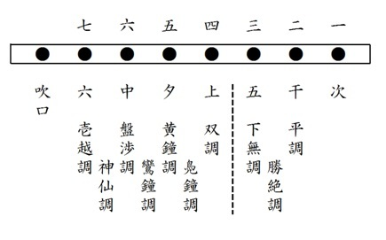
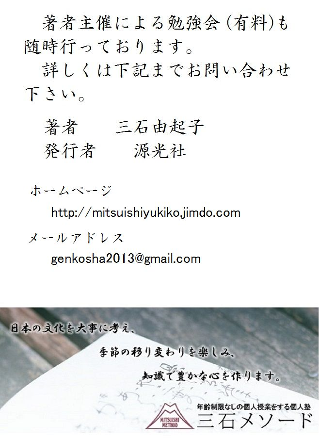

| これで読破！ 徒然草 | |
| 三石由起子 | |
| (2017) | |
『徒然草』の本文を読むか読まぬかのうちに、私は小林秀雄の評論「徒然草」に出会った。そうして訳も分からずにただ泣いた。つまり、読まぬうちからの「読まず好き」になってしまったのである。こんなことでは正しい読解ができるはずもないという懸念をずっと引きずっていたところ、有難いことに、大学時代に恩師を通じて東京学芸大学教授の安良岡康作（１９１７年９月１４日～２００１年１０月１日）先生の講義を受ける機会に恵まれたのである。安良岡先生は戦前の旧制中学校で西尾実先生から直接に『徒然草』を教えていただいた方であった。
『徒然草』の研究は戦後になってから進展し、戦前の研究を遥かに凌駕する優れた業績が積み上げられ、それらの研究を吟味した上で、安良岡先生の講義はなされた。この講義を聴くうちに私の中での『徒然草』は、よほどはっきりとしたものになって行った。その結果として、先生とは随分違う読み方になった箇所も多い。
それから四十年ほどを経て、何となく「読まず好き」の正体がわかったような気になっている。そうして、一人でも多くの若者に面白がって読んでもらいたいと希望するようになって、この仕事に取りかかった。この『徒然草』の構成は、段を順番通りに追い、本文と私の翻訳、解説がある。解説には、受験生に対応できるほどの正確を期したが、翻訳は悪文を避けて読みやすさを心がけた。細かい助動詞のニュアンスなどについては解説を参照していただきたい。本文だけを読むことも、現代語訳だけを読むことも、解説だけを読むことも可能である。読みやすいように楽しんで読んでほしいと願っている。
まず、小林秀雄の評論「徒然草」を紹介してから本文に入ることとする。
徒然草
小林秀雄
「徒然なる儘に、日ぐらし、硯に向ひて、心に映り行くよしなしごとを、そこはかと無く書きつくれば、怪しうこそ物狂ほしけれ」。徒然草の名は、この有名な書出しから、後人の思い付いたものとするのが通説だが、どうも思い付きはうま過ぎた様である。兼好の苦がい心が、洒落た名前の後に隠れた。一片の洒落もずい分いろいろなものを隠す。一枚の木の葉も、月を隠すに足りる様なものか。今更、名前の事なぞ言っても始らぬが、徒然草という文章を、遠近法を誤らずに眺めるのは、思いの外の難事である所以に留意するのはよい事だと思う。
「つれづれ」という言葉は、平安時代の詩人等が好んだ言葉の一つであったが、誰も兼好の様に辛辣な意味をこの言葉に見付け出した者はなかった。彼以後もない。「徒然わぶる人は、如何なる心ならむ。紛るゝ方無く、唯独り在るのみこそよけれ」、兼好にとって徒然とは「紛るゝ方無く、唯独り在る」幸福並びに不幸を言うのである。「徒然わぶる人」は徒然を知らない、やがて何かで紛れるだろうから。やがて「惑の上に酔ひ、酔の中に夢をなす」だろうから。兼好は、徒然なる儘に、徒然草を書いたのであって、徒然わぶるままに書いたのではないのだから、書いたところで彼の心が紛れたわけではない。紛れるどころか、眼が冴えかえって、いよいよ物が見え過ぎ、物が解り過ぎる辛さを、「怪しうこそ物狂ほしけれ」と言ったのである。この言葉は、書いた文章を自ら評したとも、書いて行く自分の心持ちを形容したとも取れるが、彼の様な文章の達人では、どちらにしても同じ事だ。
兼好の家集は、徒然草について何事も教えない。逆である。彼は批評家であって、詩人ではない。徒然草が書かれたという事は、新しい形式の随筆文学が書かれたという様な事ではない。純粋で鋭敏な点で、空前の批評家の魂が出現した文学史上の大きな事件なのである。僕は絶後とさえ言いたい。彼の死後、徒然草は、俗文学の手本として非常な成功を得たが、この物狂おしい批評精神の毒を呑んだ文学者は一人もなかったと思う。西洋の文学が輸入され、批評家が氾濫し、批評文の精緻を競う有様となったが、彼等の性根を見れば、皆お目出たいのである。「万事頼むべからず」、そんな事がしっかりと言えている人がない。批評家は批評家らしい偶像を作るのに忙しい。
兼好は誰にも似ていない。よく引合いに出される長明なぞには一番似ていない。彼は、モンテエニュがやった事をやったのである。モンテエニュが生れる二百年も前に。モンテエニュより遥かに鋭敏に簡明に正確に。文章も比類のない名文であって、よく言われる枕草子との類似なぞもほんの見掛けだけの事で、あの正確な鋭利な文体は稀有のものだ。一見そうは見えないのは、彼が名工だからである。「よき細工は、少し鈍き刀を使ふ、といふ。妙観が刀は、いたく立たず」、彼は利き過ぎる腕と鈍い刀の必要とを痛感している自分の事を言っているのである。物が見え過ぎる眼を如何に御したらいいか、これが徒然草の文体の精髄である。
彼には常に物が見えている、人間が見えている、見え過ぎている、どんな思想も意見も彼を動かすに足りぬ。評家は、彼の尚古趣味を云々するが、彼には趣味という様なものは全くない。古い美しい形をしっかり見て、それを書いただけだ。「今やうは無下に卑しくこそなりゆくめれ」と言うが、無下に卑しくなる時勢とともに現れる様々な人間の興味ある真実な形を一つも見逃していやしない。そういうものも、しっかり見てはっきり書いている。彼の厭世感の不徹底を言うものもあるが、「人皆生を楽しまざるは、死を恐れざるが故なり」という人が厭世感なぞを信用している筈がない。徒然草の二百四十幾つの短文は、すべて彼の批評と観察との冒険である。それぞれが矛盾撞着しているという様な事は何事でもない。どの糸も作者の徒然なる心に集って来る。
鈍刀を使って彫られた名作のほんの一例を引いて置こう。これは全文である。
「因幡の国に、何の入道とかやいふ者の娘容美しと聞きて、人数多言ひわたりけれども、この娘、唯栗のみ食ひて、更に米の類を食はざりければ、斯る異様の者、人に見ゆべきにあらずとて、親、許さざりけり」（第四十段）
これは珍談ではない。徒然なる心がどんなに沢山な事を感じ、どんなに沢山な事を言わずに我慢したか。
（「文學界」昭和十七年八月号）
つれづれなるままに、日くらし、硯にむかひて、心にうつりゆくよしなしごとを、そこはかとなく書きつくれば、あやしうこそものぐるほしけれ。
何もする事のない状態で、一日中硯に向かい、心の中に次々と浮かんでは消えていく、あれやこれやの事を、好きなように書き付けていると、我ながら正気とは思えない気がする。
「つれづれ」何もすることがない状態。
ここでは、前記の小林秀雄の評論を支持し、従来の解釈の「何もする事のない所在なさ」「手持ち無沙汰な状態」「退屈」といった、否定的な要素を捉えないことにする。
「硯にむかひて」
「て」は「ながら」の意味だと取りたい。
「うつりゆく」
「うつる」には「映ずる」と「移動する」の二つの意味があるが、古典に表れた「うつりゆく」はいつも「移動」の意味である。
「あやしう」妙に、
今の怪しいとは大分違う。
安良岡先生の講義から引く。
「「物狂おしい」は普通は「気違いじみている」という意味であるが、ここは自分の書いたものについての感想であるから、馬鹿馬鹿しい気持ちがする、という意味に理解すべき所であろう。古文にはそういう意味の「物狂おし」という用例がある。「つれづれなるままに」は兼好が『徒然草』を書いた動機である。何もする事のない退屈さを動機として「日ぐらし、硯に向かひて」一日中硯に向かいながら、で、兼好の一日の生活を表現している。「心に移りゆくよしなしごとを」は随筆の材料や対象である。「そこはかとなく書き付くれば」は、書き付ける手法である。その結果、著者の心境は「あやしうこそ物狂おしけれ」なのである。一つ一つの言葉が生きて、無駄がない。また、江戸時代以来の考え方では、この序段は謙遜と倦怠の表現であったとされる。「つれづれなるままに」「よしなしごとを」「そこはかとなく」と謙遜の表現が積み上げられ、「あやしうこそ物狂おしけれ（＝我ながら馬鹿馬鹿しい）」に至るのである。」
安良岡先生のおっしゃるように、この「序段」が兼好の倦怠だったとしても、果たして謙遜の意識があったかどうか。つまり、倦怠は自分ひとりのものであるが、謙遜は世俗的であるからだ。兼好の心には、見た物、聞いたことが次々に浮かんでは消えて行く。それらはもっと積極的な意味を持ったはずである。もし、そうでなければ、筆は走らない。翻訳は、そういう積極的な理由から謙遜の響きを感じさせないように、意図的に「何もする事のない状態」「次々と浮かんでは消えていくあれやこれやの事」「好きなように書き付け」とした。
「この有名な序段から『徒然草』という書名も生まれた。鎌倉・室町時代の書物に「なぐさめぐさ」とか「わらいぐさ」という物があるが、それと同じように『徒然草』も、つれづれなるままに書きつけた作品なのである。名付けたのは兼好自身かどうかは、分かっていないが『徒然草』の名前で室町時代以来、現在まで伝えられている。
学者が問題にするのは、この序段を『徒然草』全体の「序」として考えるかどうかである。つまり、現代の著作者が原稿を書き終わった後で、その全体の序を改めて書くような序であるかどうか。
結論から言えば、そうではない、というのが安良岡先生の結論である。これは、ある一日の兼好の生活、随筆執筆の経験を書いたものに過ぎない。理由は明快で、もし、最初に書いたのが第一段の「いでや、この世に生れては、願はしかるべきことこそ多かめれ」だとすれば、不自然だからである。兼好は、「序のように見える」この文章をある一日の創作生活として書き、その後で「いでや、この世に生れては」と「心に移りゆくよしなしごと」の一つを書いたのである。それに第二段、第三段が続いているのである。
兼好の本名は卜部兼好である。兼好を「吉田兼好」と呼ぶのは完全な誤りで、国文学研究では到底認める事が出来ない。兼好が吉田と名乗った事は一度もない。卜部家は代々朝廷の神祇官を務める家柄が本流だが、兼好は同じ卜部氏でも傍流、支流の生まれである。本流の卜部氏が吉田を名乗るようになったのもずっと後世の室町時代からであった。本流が吉田を名乗ったからといって傍流である兼好までが吉田にはならない。鎌倉時代及び南北朝時代のいかなる資料にも卜部兼好はあるが、吉田兼好は一つもない。
ところで、この兼好の経歴ははっきりしない。生まれた年も亡くなった年も、亡くなった場所も確かな事は分からない。今まで発見されたわずかな資料によって弘安六年（１２８３年）の生まれ、観応三年（１３５２年）に七十歳で亡くなったらしいと言われる。出家以前は後二条天皇の宮廷に仕え、左兵衛佐という職の下級貴族だった。また、当時の代表的な和歌の師匠・二条為世について稽古をし、『兼好法師歌集』を残している。二条派の代表的な歌人として世に知られていた。その出家以前の生活では様々な経験を積んだことが歌集からわかる。宮廷の官吏としての生活、二条為世に師事した歌人としての修練、恋愛も経験し、失恋した事もあった。また、様々な儀式や官職や法令などに関する知識（＝有職故実）も豊富に吸収していた事は、『徒然草』ではっきりと認められる。だが、何故出家したかは謎であり、兼好自身も何も語っていない。出家に際して詠んだ歌が歌集の中に数首残っているだけだ。その時期は、兼好三十歳。生年から計算して見当を付けると、正和二年（１３１３年）頃であろうと思われる。
仏教では世間一般の生活をする人を「俗人」という。「俗人」には悪い意味は少しもない。悪い意味を持つのは「俗物」で、「俗人」には「一般社会の人」という意味があるだけである。その俗人が出家をするには二つの道がある。第一の道は十代で寺に入り、沙弥戒という戒律を受けて沙弥になる。寺に住み、お経の読み方や儀式、漢文の勉強などをして一人前になると、具足戒を受けて「沙弥」の上の「比丘」の段階に達し、正式な僧侶として国家から認められる。その後、真言宗や天台宗、あるいは禅宗という一定の宗派に属して、その宗派の中で僧侶としての生涯を送る。
重要なのは、もう一つの第二の道である。中年になって、可愛がっている子供に先立たれたり、最愛の妻に死なれる。あるいは官職が上がらない絶望感に囚われたり、大病をして命が危なくなる。そういう契機があって、中年以後に出家する場合である。この出家も第一の道と同じように沙弥というが、この第二の道で沙弥になる事を、中世の人達は「遁世者になる」と言った。「遁世者」は「世を逃れた人」「世捨て人」のことである。兼好の出家は第二の沙弥になった、つまり遁世者になったものだった。決して天台宗や真言宗のような一定の宗派に属する僧侶ではない。この沙弥は、一定の宗派に属さないばかりでなく、寺に住む必要もない。自分の家庭にあって、頭は剃って衣は身に付けるが、それまでと同じように妻子に囲まれ、家来を使って生活して構わない。ただ、沙弥になると立身出世の道を捨て、悠々と自分の生活に沈潜する以外にはない。したがって、こういう人の中には有り余る余暇を使って学問や芸術に励む人も沢山いた。こういう遁世者によって中世の文化、文芸が発達したのである。「この世をば我が世とぞ思ふ望月の欠けたることもなしと思へば」という歌で有名な藤原道長も、晩年には出家をして沙弥行覚となる。佐藤義清という武士も出家して西行になった。鴨長明は出家して蓮胤という遁世者になった。『神皇正統記』を書いた北畠親房も出家して宗玄という遁世者になり、室町時代の初めに能を大成した世阿弥も出家して沙弥善芳と名乗っている。平清盛も出家して浄海と名乗った。こういう沙弥と、寺に住む初心者の沙弥とを区別するために、家に住む沙弥のことを「在家の沙弥」と言い、尊敬して言う場合は「～入道」と呼ぶ習慣であった。西行は西行法師とも入道西行とも呼ばれる。
そうした遁世者の一人として、兼好はおよそ三十歳以後の人生を送った。これを認識して『徒然草』を読む必要がある。」
いでや、この世に生れては、願はしかるべき事こそ多かめれ。
御門の御位はいともかしこし。竹の園生の末葉まで、人間の種ならぬぞやんごとなき。一の人の御有様はさらなり、たゞ人も、舎人など給はるきははゆゝしと見ゆ。その子・孫までは、はふれにたれど、なほなまめかし。それより下つかたは、ほどにつけつゝ、時にあひ、したり顔なるも、みづからはいみじと思ふらめど、いとくちおし。
法師ばかり羨ましからぬものはあらじ。「人には木の端のやうに思はるゝよ」と清少納言が書けるも、げにさることぞかし。いきおひまうに、のゝしりたるにつけて、いみじとは見えず。増賀ひじりのいひけんやうに、名聞ぐるしく、仏の御教へにたがふらんとぞおぼゆる。ひたぶるの世捨人は、なかなかあらまほしきかたもありなん。
人は、かたち・ありさまのすぐれたらんこそ、あらまほしかるべけれ、物うちいひたる、聞きにくからず、愛敬ありて、言葉おほからぬこそ、飽かず向はまほしけれ。めでたしと見る人の、心劣りせらるゝ本性みえんこそくちをしかるべけれ。
しな・かたちこそ生れつきたらめ、心はなどか、賢きより賢きにも移さば移らざらん。かたち・心ざまよき人も、才なく成りぬれば、しなくだり、顔憎さげなる人にも立ちまじりて、かけず、けおさるゝこそ、本意なきわざなれ。
ありたき事は、まことしき文の道、作文、和歌、管絃の道、また有職に公事の方、人の鏡ならんこそいみじかるべけれ。手など拙からず走りかき、声をかしくて拍子とり、いたましうするものから、下戸ならぬこそをのこはよけれ。
いやもう、この世に生まれたからには、こうありたいという望みは多いものだ。
帝の御位は実に畏れ多い。御子は勿論の事だが、その御孫までが人間界の種ではないことは、実に尊いものである。これは人間界の願望を超越したことであるから横に置くとして、一の人（＝摂政・関白）の御様子や、帝の護衛役を賜るような身分の人（＝舎人）は、素晴らしいと思う。そういう人の子供や孫までは、たとえ官位が下がっていたとしても、やはり優雅なものである。それより下級の身分の者については、家柄相応に時流に乗った得意顔で、自分では偉いと思っているらしいが、大変つまらない。
法師ほど羨望から遠いものはない。「人からは木の端のように取るに足らぬ、つまらないものに思われる」と清少納言が書いたのも、もっともなことである。勢力が盛んで、騒ぎ立てている様子を見ても、とても偉い人には見えない。増賀聖の言葉だと言われるが、世間的名誉に狂おしく執着する者は、仏の御教えに背くことになろう。仏道に専心する遁世者などに、かえって望ましい所もあるようだ。
人は容貌や風采に優れているのが望ましいが、それよりも話し方が耳障りでなく、愛嬌があり、口数が少ない人こそが、いつまでも対坐していたい人物である。立派だと思っていた人に、はからずも下らない性根を見せられるのは残念なことだ。
家柄や容貌は生まれついてのものだが、心というものは、現在の状態から上に上にと、高く賢くなろうと努力すれば、いくらでも向上させられるものである。いくら容貌や気立てが良くても、教養がなければ、身分が低くて顔の醜い人の中でさえ、気にも掛けられずに圧倒されてしまい、残念なことになる。
身につけたい教養としては、本格的な四書五経の学問、漢詩を作る事、和歌を詠む事、音楽の道である。その他としては、官職制度の知識や儀式の方法で、人の模範になれれば素晴らしい。悪筆でなくてすらすらと書け、酒宴の席で良い声で拍子を取り、困った様子をしながらも下戸ではないというのが、男としては良い。
「いでや、この世に生れては、」いやもう、この世に生まれたからには、
「願はしかるべき事こそ多かめれ。」当然こうありたいと思う事が多いようだ。
「御門の御位はいともかしこし。」天皇の御位は、実に畏れ多いものだ。
「竹の園生の末葉まで、人間の種ならぬぞやんごとなき。」天皇の御子は勿論の事、その御孫まで人間界の種ではないことは、まことに尊いことである。
「竹の園生」は「天皇の御子達」であり、「末葉」は「天皇の御孫」。皇室の方々は人間の願望を超越した存在としている。
「一の人の御有様はさらなり、たゞ人も、舎人など給はるきははゆゝしと見ゆ。」一の人の御様子は言うまでもなく、たゞ人も護衛役を賜るような身分の人は、素晴らしいと思われる。
「一の人」は摂政・関白で、貴族の中でも特別の地位である。「たゞ人」は摂政・関白以外の貴族。「舎人」は朝廷から宣旨によって賜る護衛役である。
「その子・孫までは、はふれにたれど、なほなまめかし。」一の人や舎人などの子供や孫までは、たとえ官位が下がっていても、やはり優雅なものである。
「はふれにたれど」の「たれど」は、普通は単純に逆接を表わすが、この場合は「たとえ官位が下がっていても」という「仮定の逆接」である。
「それより下つかたは、ほどにつけつゝ、時にあひ、したり顔なるも、みづからはいみじと思ふらめど、いとくちおし。」それより下級の身分の人は、家柄に応じて時流に乗って得意顔をしているのは、自分自身では偉いと思っているようだが、大変つまらないものである。
「ほど」は「家柄」。「時にあう」は主君や天皇の御寵愛を受けて、立身出世する。
「法師ばかり羨ましからぬものはあらじ。『人には木の端のやうに思はるゝよ』と清少納言が書けるも、げにさることぞかし。」法師ほど羨ましくないものはない。「人からはつまらないものだと思われることだ」と清少納言が書いたのも、なるほどもっともなことである。
「木の端（＝木の端切れ）」は「つまらない物」。
「いきおひまうに、のゝしりたるにつけて、いみじとは見えず。」勢いが盛んで、騒ぎ立てている様子を見ても、立派だとは思えない。
「ののしる」は「騒ぎ立てる」「大騒ぎする」。
「増賀ひじりのいひけんやうに、」増賀聖が言ったとか言うように、
「増賀聖」は平安朝の天台宗の高僧で、大和国の多武峰に隠遁して終わったが、奇行が多い僧として当時の社会から注目されていた。「聖」は「世に隠れて仏行を真剣に行じる者」。
「名聞ぐるしく、」世間的名誉に狂おしく執着して、
「仏の御教へにたがふらんとぞおぼゆる。」仏の御教えに背くであろうと思われる。
「ひたぶるの世捨人は、なかなかあらまほしきかたもありなん。」専心一徹の遁世者は、かえって望ましい所もあるだろう。
「ひたふるの世捨て人」は仏道修行に一途に励む遁世者で社会からは離れて暮らす。「ひたふるの」は「一徹の」。「なかなか」は「かえって」。
「人は、かたち・ありさまのすぐれたらんこそ、あらまほしかるべけれ、」人間は容貌や風采の優れている事が望ましいことであろうが、
「べけれ」の後は一般的には句点（＝「。」）であるが、読点（＝「、」）が妥当である。主語・「人は」が、次の文（＝「物うち言ひたる、」以下）の主語でもあるからである。
「物うちいひたる、聞きにくからず、愛敬ありて、言葉おほからぬこそ、飽かず向はまほしけれ。」物言いが聞きにくくなくて、愛嬌があって、口数が少ないのが、飽きないで対坐していたい人である。
「めでたしと見る人の、心劣りせらるゝ本性みえんこそくちをしかるべけれ。」立派だと思われている人が、予想に反して下らなく思われる性根を見せるのは残念なことであろう。
「しな・かたちこそ生れつきたらめ、心はなどか、賢きより賢きにも移さば移らざらん。」家柄や容貌は生まれつきであろうけれども、心は現在の状態からもっと高い賢い状態に向上させるならば、どうして向上しないことがあろうか。
「しな」は「家柄」。「かたち」は「容貌」。
「かたち・心ざまよき人も、」容貌や気立ての良い人も、
「才なく成りぬれば、」教養がないということになると、
「才」は「教養」。
「しなくだり、顔憎さげなる人にも立ちまじりて、」身分が低く、顔が憎らしい人にも入り混じって、
「かけず、けおさるゝこそ、本意なきわざなれ。」念頭にも置かれず（＝心にも掛けられず）圧倒されることは、残念なことだ。
「ありたき事は、まことしき文の道、作文、和歌、管絃の道、」身に付けたい教養は、本格的な学問（＝四書五経）、漢詩を作る事、和歌を詠む事、音楽の道である。
「また有職に公事の方、人の鏡ならんこそいみじかるべけれ。」その他には朝廷の官職制度についての知識、儀式のやり方で、その方面で人の模範になる事は、素晴らしいことであろう。
「手など拙からず走りかき、声をかしくて拍子とり、いたましうするものから、下戸ならぬこそをのこはよけれ。」筆跡が下手ではなくすらすらと書き、酒宴の席などで立派な声で一座のリーダーとして拍子を取り、痛み入りながら（＝困った様子をするが）下戸でないのが男は良い。
兼好の言う「人」とは貴族階級の男性のことで、最も求められるのは教養（＝「才」）である。兼好はここに自分の「願はしかるべき事（＝望み）」を具体的に書き連ねた。筆跡の上手さや、酒席の態度、身の処し方にまで及んでいる。これを見ると、兼好が決して堅苦しい僧侶だったのではないことが分かる。世古に通じた自由人だったのだろう。兼好は決して「ひたふるの世捨て人」ではなかった。だが、そのように揺るがない価値を持って、ひたすら精進する人物に、好意と尊敬を抱いていた。それは、価値観を一点に集約できない自己をよく知っていたからである。
竹の園生には言及を避けて、僧侶と一般男性が自分のこととして評論されている。だが、「言及しない」ことをわざわざ取りあげた真意は何だったのかを考える時、彼の精神が「人間の種ではない」領域にまで及んでいたのではなかろうか、という気にもなるのである。
いにしへのひじりの御代の政をも忘れ、民の愁へ、国のそこなはるゝをも知らず、よろづにきよらを尽していみじと思ひ、所せきさましたる人こそ、うたて、思ふところなく見ゆれ。
「衣冠より馬・車にいたるまで、あるにしたがひて用ゐよ。美麗を求むることなかれ」とぞ、九条殿の遺誡にも侍る。順徳院の禁中の事ども書かせ給へるにも、「おほやけの奉り物は、おろそかなるをもてよしとす」とこそ侍れ。
古代の聖帝の御代の政治など忘れたように、一般民衆の愁嘆や国の疲弊も知らずに、万事に華美の限りを尽くし、それをまた立派なことだと思い込んで、所狭しとばかりに大きな顔をして振る舞う人は、何とまあ、馬鹿に見えることか。
「身に付ける衣や冠から馬や牛車にいたるまで、有り合わせのもので間に合わせて使え。華美な物を求めるな」と、九条殿の遺誡にもある。順徳院が、宮廷の事をお書きになった書物『禁秘抄』の中にも、「天皇の物は、粗末であるのが良い」と、ございます。
「いにしへのひじりの御代の政をも忘れ」古代の聖帝、名君の御代に行なわれた政治をも忘れ、
「民の愁へ、」苦しい状態にある一般民衆の愁嘆や、
「国のそこなはるゝをも知らず、」国が疲弊して行くのをも知らないで、
「よろづにきよらを尽して」万事に華美の限りを尽くして、
「いみじと思ひ、」その華美の限りを尽くす事を立派だと思い、
「所せきさましたる人こそ、」所狭しと振舞っている人（＝大きな顔をしている人）こそは、
「うたて、」何とも酷く（＝何ともまあ）、
「思ふところなく見ゆれ。」無思慮に見えることだ。
「『衣冠より馬・車にいたるまで、あるにしたがひて用ゐよ。」「身に付ける衣や冠から始まって、乗るべき馬や車（＝牛車）にいたるまで、有り合わせで間に合わせて使え。
「美麗を求むる事なかれ』」華やかで綺麗な物を求めるな」
「とぞ、九条殿の遺誡にも侍る。」と、九条殿の遺誡にもございます。
「九条殿」は藤原師輔で、その遺誡は、『群書類従』に収められている。
「順徳院の」順徳院（＝承久の乱で佐渡島に流された天皇）が、
「禁中の事ども書かせ給へるにも、」宮廷の事を色々とお書きになった書物（＝『禁秘抄』）にも、
「『おほやけの奉り物は、おろそかなるをもてよしとす』とこそ侍れ。」「天皇がお召しになる物は、粗末な物を以て良しとする」と書いてある。
「おほやけ」は「天皇」。「奉り物」は「臣下から奉る物（＝天皇のお召しになる物）」のこと。
安良岡先生の研究を引く。
「九条殿の遺誡と順徳上皇の『禁秘抄』を引用して論じていることから察すれば、鎌倉幕府の政治家を対象にしたものではなく、朝廷（＝京都）の政治家に対して述べられたものである。この段は、後宇多法皇を中心とする大覚寺統（＝院政の当事者達）の華美な生活に対する兼好の憤慨として書かれた。「所せきさましたる人こそ、うたて、思ふところなく見ゆれ。」は、感情の迸りである。１３１８年（文保二年）、持明院統の花園天皇から大覚寺統の後醍醐天皇に政権が譲られた。だが、この年から後醍醐天皇の父君・後宇多法皇が院政をお始めになって、その院政の当事者達が、贅沢な振舞いをしたのである。その記事が、花園天皇の日記に見える。私はこの日記の記事を根拠として、『徒然草』は、おそらく文保二年の翌年の文保三年（＝改元して元応元年）に初めの部分が書かれたと結論している。」
安良岡先生は、兼好のこの観察と批評を政治に対する「憤慨」であると解釈しておられたが、私には兼好が「あるべき政治家はどういうものか」を考え、政治家に対する「道義的な憤慨」を本気で述べたとは到底思えない。自己の孤独を含めて、社会を見つめている人間には、物事に対しての「好悪」はあっても「公憤」はないように思う。兼好の観察と批評は、決して弾劾や憤慨のようなものではない。せいぜい軽蔑であったろう。
よろづにいみじくとも、色好まざらん男は、いとさうざうしく、玉の巵の当なきこゝちぞすべき。
露霜にしほたれて、所さだめずまどひありき、親のいさめ、世の謗りをつゝむに心のいとまなく、あふさきるさに思ひみだれ、さるは独寝がちに、まどろむ夜なきこそをかしけれ。
さりとて、ひたすらたはれたる方にはあらで、女にたやすからず思はれんこそ、あらまほしかるべきわざなれ。
万事に優れていたとしても、色好みでない男は、ひどく物足りなくて、底の抜けた宝玉の盃を見ているような気がする。
露や霜に濡れそぼい、女のいるあちこちを彷徨い歩きながら、親の諫言にも、世間の非難にも気を使って心が休まる暇もなく、会う時にも別れる時にも心が乱れて、それでも独り寝する夜も多くて、熟睡する夜もないというのが、男としてはおもしろい。
そうではあるが、夢中になって女に溺れるというのではなくて、女に一目置かれているという状態が、理想的なのである。
「さうざうし」本来あるべき物が欠如した物足りなさを表わす形容詞。
「玉の巵の当なき」
『文選』からの比喩である。「玉巵無当、雖宝非用（玉の巵の当無きは、宝と雖も用に非ず）」
「あふさきるさ」ああでもない、こうでもない。
ここでは「会う時、離れる時」と解釈され、「さ」は「時」。『古今集』雑に見える「そゑにとてとすればかかりかくすればあな言ひ知らずあふさきるさに（＝だからと言って、ああすればこうなるし、こうすればああなるし、ああ、何と言えばいいのか、あふさきるさに）」から始まった表現とされる。『源氏物語』帚木にも、「とあればかかり、あふさきるさにて、なのめにさてもありぬべき人の少なき（＝あれが良ければこれが悪い。これが出来ればあれが出来ない。帯に短し襷に長しで、少しは譲歩したとしても、これはという女はなかなかいません）」という表現が見られる。
「たやすからず思はれん」軽く思われないとしたら。
「ん」は仮定表現。
男の恋愛感情を「をかしけれ」と言い放ち、とても僧侶の文章とは思えぬほどの柔軟さを見せている。自由闊達な自由人・兼好の面目躍如たるところ。
後の世の事、心に忘れず、仏の道うとからぬ、こゝろにくし。
現世を終えた後の世のことをいつも心にかけて、仏道から離れない生活をしているのは、奥ゆかしい。
「後の世」は、浄土教における「後世」で、現世を終えた後、二度と六道に輪廻する事のない、迷いや苦しみを超越した世界のことである。当時、多くの人に信仰されていた。兼好は、仏道に入った者、遁世者、または世俗の生活を送りながらも常に仏道に思いを致している人々を「理想像」として「心にくし」という最上級の形容詞を用いて賞賛した。仏教の「諦観」と人の世をしみじみと感じることができる。
蕪村の「冬ごもり仏にうときこゝろ哉」という句は、『徒然草』のこの段、「仏の道うとからぬ」からとったものである。
不幸に愁に沈める人の、頭おろしなど、ふつゝかに思ひとりたるにはあらで、あるかなきかに門さしこめて、待つこともなく明し暮したる、さるかたにあらまほし。
顕基中納言のいひけん、配所の月、罪なくて見ん事、さも覚えぬべし。
運悪く憂悶に沈んだ人が、軽率な決心からではなく剃髪して出家し、落ちぶれて見る影もない有様で門を閉じて引きこもっている。将来の立身出世や栄達の機会を待つ事もなく、日々を送っているのを見ると、そんなふうでありたいと思う。
顕基中納言が言ったとかいう、配所の月を罪のない身で見たいという心境は、いかにもそうだと感じられる。
「不幸に愁に沈める人の、」不幸にも（＝運悪く）憂悶に深く陥っている人が、
「頭おろしなど」剃髪して出家の道に入ること。
「頭おろし」という名詞はなく、「頭おろしなど」と言った。
「ふつゝかに思ひとりたるにはあらで、」軽々しく思い到って決心したのではなくて、
「ふつゝか」は「軽率に」「浅墓な考えで」という意味。
「あるかなきかに」見る影もなく落ちぶれた有様。
「やっと生活できるような状態」のことであり、現在の「いるのかいないのか分からないくらいひっそりと」という意味は、この当時の用例がない。これは「落ちぶれて見る影もない有様」「やっと生活できるような状態」のことである。そういう用例は『源氏物語』以来、随分と存在する。
「門さしこめて、」門にかんぬきを差して（＝門を閉じて）引きこもり、
「待つこともなく明し暮したる、」将来に立身出世の機会、栄達の機会を待つ事もなく毎日の日々を送っているのは、
「待つ」は立身出世の機会を待つ事である。
「さるかたにあらまほし。」そのようでありたいものだ。
『方丈記』の中に、治承四年六月、平清盛の福原遷都に言及した箇所があり、その結果、「官・位に思ひをかけ、主君の陰をも頼むほどの人は、一日なりともとく移ろはむと励み、時を失ひ世に余されて期する所なきものは、愁へながら止まりをり。」と書かれている。「時を失ひ世に余されて期する所なきもの」は「不幸に憂に沈める人の、あるかなきかに、門さしこめて、待つこともなく明し暮したる」と比べると、文章の寂寥感が明確である。兼好は「憂に沈める人」の中にも自分を見出している。そこに向けられた目の優しさは、人間がどのような状況の中でも美しくあり得ることを教えている。
「顕基中納言のいひけん、」顕基中納言が言ったとかいう、
この方は後一条天皇の寵愛を受け、権中納言にまでなったが、天皇の崩御によって三十七歳で出家した。忠実な臣下であった。源顕基である。
「配所の月、罪なくて見ん事、」配所での月を罪のない身で見ようという事は誠に、
「配所」は罪を受けて流された場所である。
「さも覚えぬべし。」その通りに感じられる事であろう。
官位昇進の望みを失った人が、落ち潰れた生活の中でも「待つこともなく明し暮し」ている状態を「さるかたにあらまほし。」と兼好は言う。
後段では、顕基中納言の言葉を引用して感心、同調しているのである。華やかな都で管絃の遊びをしながら名月を観賞するのとは違った美しい趣きが配所の月なのである。
自己と向き合い、凄絶な透明な月と向かい合うという機会に恵まれる人は少ない。いざ、罪を受けて流されてから、やっと巡り会える美しさである。望まずして与えられた美しさである。しかし、それも罪があっての身では、充分な観賞眼を持つことはできない。そこには知らず知らずの屈託した濁りがあるからだ。「透徹した自己」と「配所の月」は、矛盾してしまうのだ。その月に「罪のない身で」巡り会いたいという顕基中納言に、兼好はわが意を得たりと思ったのであろう。兼好にはそれが出来た。
どんな状況の中でも、人間は美しさを発見し、自己と向き合う事が出来る。しかし、出来ることなら「配所の月」と向き合うのには「健全で満足な心」でいたいものだと、兼好は述べたに違いない。
わが身のやんごとなからんにも、まして数ならざらんにも、子といふものなくてありなん。
前中書王・九条太政大臣・花園左大臣、みな族絶えん事をねがひ給へり。染殿大臣も、「子孫おはせぬぞよく侍る。末のおくれ給へるはわろき事なり」とぞ、世継の翁の物語にはいへる。聖徳太子の、御墓をかねて築かせ給ひける時も、「こゝを切れ、かしこを断て。子孫あらせじと思ふなり」と侍りけるとかや。
わが身の身分が高かろうが、まして、身分の賤しい者であれば尚更のこと、子などというものはない方がよさそうだ。
前中書王（兼明親王）も、九条大政大臣（藤原信長）も、花園左大臣（源有仁）も、みな、一族の血筋が絶えることを願われたのである。染殿大臣（藤原良房）も『大鏡』には、「子孫は無いのが良い。出来の悪い子孫や落ちぶれた子孫がいるのは、良いことではない」と、言ったと書かれている。聖徳太子は、御自分の御墓を築かせなさった時にも、「これは不要。あそこは要らぬ。子孫を残すつもりはない。」とおっしゃったとか。
「わが身のやんごとなからんにも、まして数ならざらんにも、子といふものなくてありなん。」子供というものは、身分の高い人にも身分の賤しい人にとっても、ないままでいるのがよかろう。
「中書」「中務卿」の唐風の呼び名。
中務卿兼明親王（＝醍醐天皇の皇子）を前中書王、中務卿具平親王（＝村上天皇の皇子）を後中書王という。ともに博学多才で知られた。
「九条大政大臣」関白・教通の子・藤原信長（１０２２～１０９４）。
「花園左大臣」輔仁親王（＝後三条天皇の孫）の子・源有仁（１１０３～１１４７）。
美貌と管弦の才で知られ、「花園」はその別邸の名である。仁和寺付近にあった。
「染殿大臣」摂政・太政大臣・藤原良房。清和天皇の外祖父であり、藤原氏繁栄の基を築いた。『大鏡』には「かくいみじき幸い人の、子のおはしまさぬこそ口惜しけれ」と書かれている。
「世継の翁の物語」『大鏡』。
他の呼び方としては「世継物語」「世継のかがみの巻」「摩訶大円鏡」などがある。
「聖徳太子」用明天皇第一皇子で推古天皇摂政。
文中の言葉は『聖徳太子伝暦』に見える。「此処は必ず断て。彼処は必ず切れ。まさに子孫の後を絶ゆべからしまんと欲す」。実際に聖徳太子の血筋は息子の山背大兄王の代で蘇我入鹿に亡ぼされて絶えた。
兼好は、子孫はない方がいいと考えていた。自己と向かい合うためにも、また将来や未来に生じる煩雑さを避けるためにも、子供はない方がいいのである。しかし、兼好はそれを主張はしない。第百四十二段には、荒夷が子供への愛情を語るが、その「心からの言葉」を素直に受け取って、理解している。自分とは違う生き方ではあるが、「恩愛」に囚われた人達の中にも確かな真実を見るのである。言わば「全方位肯定の目」こそが兼好の優れた能力であった。兼好が、この段の「聖徳太子」から成長して、第百四十二段「荒夷」に到ったとは三石は読まない。
安良岡先生は「第六段ではこう言いながら、百四十二段では仏教の慈悲に通うものとしての恩愛の道を高く掲げた。これは矛盾と言えば矛盾だが、私のように序段から第三十二段までを第一部と考え、その第一部から第二部への発展だと考えて見れば、第一部の兼好はまだ自分の考えを本当には確立していなかった。それが第二部へ移って優れた思想が確立された。その発展関係が鮮やかに辿ることができる」と結論しておられたが、そうではなかろう。
あだし野の露消ゆる時なく、鳥部山の烟立ち去らでのみ住み果つる習ひならば、いかに、もののあはれもなからん。世はさだめなきこそ、いみじけれ。
命あるものを見るに、人ばかり久しきはなし。かげろふの夕を待ち、夏の蝉の春秋を知らぬもあるぞかし。つくづくと一年を暮らすほどだにも、こよなうのどけしや。飽かず、惜しと思はば、千年を過すとも、一夜の夢のここちこそせめ。住み果てぬ世に、みにくき姿を待ちえて何かはせん。命長ければ辱多し。長くとも、四十にたらぬほどにて死なんこそ、めやすかるべけれ。
そのほど過ぎぬれば、かたちを恥づる心もなく、人に出でまじらはん事を思ひ、夕の陽に子孫を愛して、さかゆく末を見んまでの命をあらまし、ひたすら世をむさぼる心のみふかく、もののあはれも知らずなりゆくなん、あさましき。
もしも人間が死なず、煙にもならず、いつまでも生き永らえるものだとしたら、どんなに味気ないことだろうか。寿命には定めがなく、死がいつ訪れるか分からないからこそ、人生の妙味がある。
生命のある物を見渡してみると、人間ぐらい寿命の長いものはない。蜻蛉は夕方には死んでしまうし、夏の蝉のように、春も秋も知らない、ひと夏だけの寿命のものもあるではないか。しみじみと深く味わって過ごせば、一年間でさえ、ゆったりすることだよ。不足だ、惜しい、と思って過ごせば、たとえ千年の寿命があっても一夜の夢のように短く思えるだろう。いつかは去るこの世に、醜い姿を留めて、時間を待ち迎えても、どうする気なのか。長生きをすれば恥をかく事も多い。長生きするとしても四十歳前程度で死ぬのが、見苦しくないことだろうよ。
四十歳を越せば、、容貌を恥じる心も失い、そのくせ人中に出て交際する事を欲し、夕日の傾く年齢で子供や孫を可愛がり、その華やかな将来を見届けるまで生きたいと思い、そうして名誉や利益だけを欲しがるようになって、しみじみとした人生を味わうこともなくなるのだ。あさましいことだね。
「あだし野の露消ゆる時」人間がこの世を去る時。
「あだし野」は京都の嵯峨の奥、愛宕山の麓にあった昔の墓地で、現在の念仏寺がある。
「鳥部山の烟立ち」人間が火葬の煙になる。
「あだし野の露消ゆる時」と同義。「鳥部山」は京都の東山にあった古来から有名な火葬場。
「住み果つる習ひ」いつまでもこの世に生きる決まり。
「世はさだめなきこそ、いみじけれ。」人間の寿命というものは定めのない、いつ死ぬか分からないからこそ人生の妙味がある。
「世」は、「人間の寿命」「人間の生涯」という意味で、「世間」ではない。兼好の言う「世は定めなきこそ」は、「世間無常」ではなく「人間の寿命の不安定な状態」のことである。「いみじけれ」は「妙味のあるもの」と解釈したい。「この世は定めなきこそいみじけれ」が第七段の主題である。
「かげろふの夕を待ち、夏の蝉の春秋を知らぬもあるぞかし。」蜻蛉は夕方を待って死んでしまうし、夏の蝉は、ひと夏だけの寿命である。
「かげろふ」は蜻蛉に似た幼虫で、水辺に生じ、数時間でこの世を去り、儚いものの譬えとして使われる。「夏の蝉」は「夏の間だけを生きる蝉」である。
「つくづくと」しみじみと心に深く味わって。
人間は毎日をあくせくと暮らしているが、しみじみと深く味わって一年間を暮らしてみれば、それは充分に一生に値するのだと、と兼好は言うのである。
「飽かず、」不足に思って。
「何かはせん。」どうしようというのか。
「命長ければ辱多し。」長生きをすれば恥をかく事も多い。
『荘子』の中にある言葉である。
「夕の陽に」夕日の傾きかけた年をして、
「さかゆく末を見んまでの命をあらまし、」その自分の子供や孫が栄えていく将来を見届けるまでの命を期待し、
「あらまし」は、期待する。
第七段の構造は「世は定めなきこそいみじけれ」を主題として、四十歳以前で死ぬ事が良いと断言している。もちろんこれは「四十歳」という単純な時間の老いを言っているのではなくて、「かたちを恥づる心もなく、人に出でまじらはらん事を思ひ、夕の陽に子孫を愛して、さかゆく末を見んまでの命をあらまし、ひたすら世をむさぼる心のみふかく、もののあはれも知らずなりゆくなん」精神の老いを言うのである。この段が書かれた時期がいつであるかは別にして、兼好は自分の年齢がたとえ四十歳を過ぎていたとしても、同じように「四十前で死ぬのがいいね。」と書いたと、三石は思う。兼好は「趣味の人」である。「無常観」さえも兼好にとっては「趣味」であった。趣味と言って語弊があるなら、「教養」として、兼好には充分咀嚼されていたように思う。つまり、兼好にとっては、自分の死もまた、他人事だったのではないか。自己の死を完全に客観視できる目を持つ人間の寿命論なのである。
安良岡先生は、この段を「兼好は、「世は定めなきこそいみじけれ」を非常にロマンチックな感情で書いた。つまりこの段は、地に足の着いた論ではなく、兼好の独特な物の見方を強調した表現として読むことができる。「もののあはれ」という平安朝以来の文学的、文化的、伝統的思想を基準として、兼好は四十歳の寿命を設定した。彼は三十七歳くらいでこのあたりの段を書いている。無常観は、日本人にとって、本質的、本能的な直観である。栄華を極めた人が衰え、花や落ち葉が舞い落ちる。自然現象や社会現象、身の周りの人がこの世を去って行くのを見て、しみじみと感じるものがある。こうした感傷的な無常観は『万葉集』にも『源氏物語』にも、ほとんどあらゆる文学に共通して表れている。『徒然草』に先立って中世の初めに書かれた『平家物語』や『方丈記』を読むと、その無常観が大きな原動力となって全体を支配しているのがわかる。この段が胸を打つのは、兼好がそれを「いみじけれ」と賛美したことにある。これは、文学的あるいは感傷的な表現であって、この段には突き詰めた無常観ではなく、三十七歳位の、青春が去って老境がやって来る前の、中間的な状態での詠嘆であろう。」と解釈された。自覚的な無常観ではないというのである。三石はそのように解釈しない。
閑話休題
安良岡先生がこの段を講義された時、二つの思い出話をなさったのだが、それが興味深かったので書き遺して置くことにする。
その一つは、本文中の「夕の陽に子孫を愛して」という表現についてである。安良岡先生以前の『徒然草』の注釈では、これを兼好の愛読書『白氏文集』の「朝露に名利を貪り、夕陽に子孫を憂ふ」を出典としていたが、『白氏文集』では「子孫を愛す」ではなく「子孫を憂う」となっている。安良岡先生は偶然の機会に恵心僧都源信（＝平安朝の名僧）の『観心略要集』を読んで、その中に「朝露の底に名利を貪り、夕陽の前に子孫を愛す」とあるのを見付けられた。また、そこには、他にも『徒然草』の出典箇所があるのを発見して、兼好が『観心略要集』を読んでいたと確信なさったそうである。
注釈とは、そうした細部の問題を一つ一つ解決していく地道な作業である。それを見付けられた時の先生が、どんなに嬉しかったことかと、その笑顔を何度でも思い出して懐かしい。
もう一つは終わりの部分にある「ひたすら世をむさぼる心のみふかく」という表現である。「世をむさぼる」は漢語にすれば「貪世」で、「とんせい」と言えば普通は「遁世」と書き、これは「世間の名誉や利益をむやみに欲しがる」とは逆の意味を持つ。先生はそこに引っかかって、様々な本を探されたが、中国の文献にも「貪生」はあるが「貪世」を見つける事ができなかった。国内の文献を探しても見つからない。そこで、苦し紛れに教室で学生に向かって、「諸君の読んでいる本の中に『世を貪る』という言葉があったら是非教えてもらいたい。僕は今、それを探しに探しているのだから。」と訴えた。すると、それから一週間ほどして一人の女子学生が見つけて来たというのである。『沙石集（＝鎌倉時代の仏教説話集）』の中に「遁世の遁は時世に書き換えん。昔はのがる。今は貪る。」という一文があった。意味は「トンセイのトンの字は、時世に合わせて書き換えよう。昔のトンセイは『のがる（遁世）』であり、今は『貪る』を当てて良い。」学生から物を教わる事は、そんなにしばしばあることではない。先生の長い教員生活の中で、これは美しい思い出となって、『徒然草』の第七段を読む度にその「岸田」という女子学生の名前を復唱されていたということだ。岸田さんは今、何をしていらっしゃるか。（三石は面識はありません。）
世の人の心まどはす事、色欲にはしかず。人の心は愚かなるものかな。
匂ひなどは仮のものなるに、しばらく衣裳に薫物すと知りながら、えならぬ匂ひには、必ず心ときめきするものなり。久米の仙人の、物洗ふ女の脛の白きを見て、通を失ひけんは、誠に、手足・はだへなどのきよらに肥えあぶらづきたらんは、外の色ならねば、さもあらんかし。
人の心を惑わすものとしては、色欲以上のものはない。人の心はまったく愚かなものだ。
匂いなどは、かりそめのものなのに、少しの間、衣裳に薫物をしているだけなのだとは知りながらも、何ともいえぬ匂いには必ず幻惑されてしまう。久米の仙人が、洗濯女の脛（＝すね）の白さを見て神通力を失ったというのは、手足や肌が実に清らかで、脂がのっている女性の肉体本来の魅力に幻惑されたからである。これは外側につけられた人工的な匂いではなく、肉体本来の魅力であるから、なるほどもっともなことだと思われる。
「えならぬ匂ひ」何とも言えぬ匂い。
「衣裳に薫物す」衣装に香をつける。
『白氏文集』新楽府の「大行路」には、「君が為に衣裳に薫物すれども、君蘭麝をかぎて馨香（＝素晴らしい匂い）とせず」がある。
「久米の仙人」大和の久米寺の開基と言われる伝説的人物で、生没年未詳。
『今昔物語集』巻十一の第二十四に逸話がある。洗濯女の足に欲情して神通力を失い、その女を妻としたが、後に回復して都の造営に力を貸したという。久米仙人については、『久米寺流記』には名を毛堅仙と記されている。他にも『七大寺巡礼私記』『元亨釈書』『扶桑略記』などの仏教書や、『今昔物語集』『発心集』その他に記述がある。天平年間に大和国吉野郡竜門寺の堀に住んで飛行の術を行なったが、若い女性の白い脛に見惚れて神通力を失い、墜落して、その女性を妻とした。後に発憤して、七日七夜の修行を経て、神通力を取り戻し、遷都の工事（＝一説には東大寺造営）の時、巨材を空運したとされる。
時の天皇がこれを聞いて免田三十町を賜り、仙人はそこに寺を建立する。これが久米寺の縁起である。
「外の色」外側から一時的に付けられた薫物の匂い。
「色」は欲情をかきたてる魅力。
兼好にとって、肉体本来の魅力に幻惑されるのは、「外の色ならねば、さもあらんかし。」「なるほど、もっともな」ことなのであった。
女は髪のめでたからんこそ、人の目たつべかめれ。人のほど、心ばへなどは、もの言ひたるけはひにこそ、物越しにも知らるれ。
ことにふれて、うちあるさまにも人の心をまどはし、すべて女の、うちとけたる寝も寝ず、身を惜しとも思ひたらず、堪ゆべくもあらぬわざにもよく堪へしのぶは、ただ色を思ふがゆゑなり。
まことに、愛著の道、その根ふかく、源とほし。六塵の楽欲おほしといへども、皆厭離しつべし。その中に、たゞ、かの惑ひのひとつ止めがたきのみぞ、老いたるも若きも、智あるも愚かなるも、かはる所なしとみゆる。
されば、女の髪すぢをよれる綱には、大象もよくつながれ、女のはける足駄にて作れる笛には、秋の鹿、必ず寄るとぞ言ひつたへ侍る。みづからいましめて、恐るべく慎しむべきは、この惑ひなり。
女は、髪の美しさが男の視線を奪うものらしい。人柄や気立てなどは、物越しにでも話をしてみれば、自然にわかる。
女は、何事によらず、ただそこにいるだけで男の心を惑わす。女が寝る時にも寛がず、身を惜しむ事もなく働き、堪え難いことでも堪え忍ぶことができるのは、ひとえに男に愛されようとの色欲のためである。
まったく、愛欲と執着の道というものは、根が深く、源はるかなものである。六塵と呼ばれる人間の欲望は、仏道修行によって遠ざけることができるはずだが、その中に、ただ、あの愛欲一つが、老いも若きも、賢者も愚者も、誰にとっても同じく惑いとなるのだ。
そういうわけで、女の髪筋をよった綱は、象も繋ぎとめることができ、女の履いた下駄で作った笛の音には、必ず秋の牡鹿が寄ってくると言い伝えられているのだ。男が自戒して、恐れ慎しむべきことは、実にこの愛欲という惑いである。
「目たつ」注目される。目をつけられる。
「うちあるさま」意識せず、なにげなくそこにいる様子。
「うちとけたる寝も寝ず、」寛いで寝ることもせずに。
「寝」は名詞の「睡眠」、「寝ず」が動詞である。
「愛著」執着。仏教用語で否定的な意味で使われる男女の情愛。
「六塵」六つの感覚器官（六根＝眼（視覚）、耳（聴覚）、鼻（嗅覚）、舌（味覚）、身（触角）、意（意識））によって知覚され、人間を汚す六つの刺激。六境。
六境（＝色境、声境、香境、味境、触境、法境）のうち、法境は、五境以外の残りのすべて、とくに思想的なものを意味する。六境は六根とつねに対応関係にあり、六根が主観的で六内処といわれるのに対して、六境は客観的で六外処という。また煩悩が執着する対象であるから六塵とも呼ばれる。
「楽欲」仏教用語で「欲望」。
「厭離」厭い避ける。
「女の髪すぢをよれる綱には、大象もよくつながれ」女の髪をよって編んだ綱には巨象さえも繋がれてあしなえになる。
「女のはける足駄にて作れる笛には、秋の鹿、必ず寄る」女が履いた下駄で作った笛を吹くと雄鹿が雌鹿の声と間違ってやってくる。
家居のつきづきしく、あらまほしきこそ、仮の宿りとは思へど、興あるものなれ。
よき人の、のどやかに住みなしたる所は、さし入りたる月の色も、一きはしみじみと見ゆるぞかし。今めかしくきらゝかならねど、木だちものふりて、わざとならぬ庭の草も心あるさまに、簀子・透垣のたよりをかしく、うちある調度も昔覚えてやすらかなるこそ、心にくしと見ゆれ。
多くの工の心をつくしてみがきたて、唐の、大和の、めづらしく、えならぬ調度どもならべおき、前栽の草木まで心のまゝならず作りなせるは、見る目もくるしく、いとわびし。さてもやは、ながらへ住むべき。また、時の間の烟ともなりなんとぞ、うち見るより思はるゝ。大方は、家居にこそ、ことざまはおしはからるれ。
後徳大寺大臣の寝殿に、鳶ゐさせじとて繩をはられたりけるを、西行が見て、「鳶のゐたらんは、何かは苦しかるべき。この殿の御心、さばかりにこそ」とて、そののちは参らざりけると聞き侍るに、綾小路宮のおはします小坂殿の棟に、いつぞや繩をひかれたりしかば、かの例思ひ出でられ侍りしに、まことや、「烏の群れゐて池の蛙をとりければ、御覧じかなしませ給ひてなん」と人の語りしこそ、さてはいみじくこそと覚えしか。
徳大寺にもいかなる故か侍りけん。
家がその主人に似つかわしく理想的なのは、人生は仮りの宿だとは思うものの、感興がわく、良いものである。
品位のある人がゆったりと暮らす住居は、差し込む月光の色も、格別にしみじみと見えるものだよ。当世風でもなく、きらびやかでもないが、庭の木立が時を経て、自然のままの庭の草も趣きがある。簀子と透垣の続き具合に情趣があり、調度品にも昔風の趣きがあって落ち着いているのが奥ゆかしく感じられることだ。
その一方で、大勢の木工達に意匠の限りに飾り立てて造らせ、やれ中国の、やれ日本のと、珍奇で見事な道具類を並べて置いたり、庭先の植え込みの草木にまで自然の趣きを無くすほど手を加えているのは、見た目も厭わしく、やり切れない思いがする。そんなことをしたからといって、一体いつまで住めるというのか。全ては一時の事で、すぐに煙となって消えてしまうのにと、見てすぐにも思われることだ。大体、住居を見れば、その主がどんな人柄か、見当はつくものだ。
後徳大寺大臣（＝藤原実定）は、寝殿に止まる鳶を厭がって縄を張っていた。それを見た西行法師が、「鳶が止まるくらいのことに何の不都合があるというのか。後徳大寺大臣の御器量は、その程度でいらっしゃるのか。」と、それ以後はお屋敷に伺わなかったと聞いたが、綾小路宮が同じようにお住まいの小坂殿に縄を張り巡らされた時、この話が思い出された。だが、「それはね、烏が群れて止まって、池の蛙を食べるのを御覧になって、可哀想にお思いになったからだそうです。」と、話してくれた人がいて、それは結構な御考えだと思ったのだった。徳大寺様にもどんな理由がございましたのか。
「つきづきし」似つかわしい。
「あらまほし」理想的である。
「仮の宿りとは思へど、」人生自体が仮りの宿だとは思うものの、
「よき人」品位のある人。
「よき人」は『徒然草』全体におよぶ言葉で、「教養と品位のある人」貴族階級の人達を意味する。対語は「よからぬ人」で、この記述も『徒然草』には多出している。
「今めかしくきらゝかならねど、」当世風でなく、またきらびやかでもないけれども、
「きらゝかならねど」の「ね」が前述の「今めかしく」にも接続しており、今めかしく「なく」、しかもきらびやかでも「ない」けれども、の意味。
「わざとならぬ」趣向を凝らさない、特に手を加えたとも見えない自然のままの。
「簀子・透垣のたよりをかしく、」簀子と透垣の続き具合、位置関係が面白く、
「簀子」は寝殿造りの家の廂の外側に付けたぬれ縁。「透垣」は竹や板で作った間を透かしてある垣根で、殿舎への目隠しや庭園内の仕切りとして使われた。「たより」は続き具合や位置関係。
「うちある調度も昔覚えてやすらかなるこそ、」備えてある道具類も昔が思われて（＝昔風の趣きがあって）安定して落ち着きがあるのが、
「心をつくして」工夫の限りを凝らして、
「心」は「工夫」の意味。
「唐の、大和の、」やれ中国の、やれ日本のと、
鎌倉時代の末期から南北朝時代の初めにかけて、中国の宋や元からの渡来人が、唐者と呼ばれて珍重された時代である。
「めづらしく、」珍奇な、
ここでの「めづらしく」は悪い意味で使われている。
「えならぬ調度」素敵な道具類。
「心のまゝならず」自然な趣きを無くすように、
前述の「わざとならぬ」に対する言葉。
「さてもやは、ながらへ住むべき。」さてもそうしたままで、長生きしていつまでも住み続ける事が出来るだろうか、出来はしない。
「やは」は反語。
「うち見るより思はるゝ。」見ているそばから思われて来ることだよ。
「より」は「～するや否や」、あるいは「見ている端から」の意味。「るる」は自発の助動詞。
「後徳大寺大臣」藤原実定、左大臣にまでなった有力な公家。
「寝殿」寝殿造における主人の住む正殿。
「鳶ゐさせじとて」鳶を止まらせまいとして、
「ゐさす」は「止まらせる」。
「繩を張られたりけるを、」縄を張っていたのを、
「そののちは参らざりけると聞き侍るに、」その後はもう、後徳大寺大臣の屋敷に伺わなかったという事を聞きましたが、
西行は若い時、後徳大寺大臣の家来の一人であった。
「まことや、『烏の群れゐて池の蛙をとりければ、御覧じかなしませ給ひてなん』」「そう言えば、烏が群がって池の蛙を取って食ったので、それを御覧になって、可哀想にお思いになったからの事なのです」
「まことや」は、「そうそう、そう言えば」という気持ち。
最初の段は、住居を媒介としての人間観察である。兼好は、「よからぬ人」（＝教養のない、品位のない人）が、やたらに住居を飾り立てる様子を見苦しいと断言しているが、私はこれを「軽蔑」とは解釈しない。言うなれば、弟子や子供達に「みっともないこと」「格好の悪い事」を例を挙げて示すことで、品の良い趣味を教えようとする、むしろ「教育」に近いものを感じる。「達観」でもなければ「軽蔑」でもない、どこか温かい人間への愛情を感じるからである。
住居というものは、その主の教養や品性を確実に表わす、と観察し、それを教える文章である。僧である兼好は家を持たないが、「家を持つ」のに必要な教養を説いているところを見れば、「厭世観」とはほど遠い、品の良い優しさがよく表れて、思わず嬉しくなる人間観察である。
次の段は、特にすばらしい。兼好は徳大寺大臣、西行法師、綾小路宮の三者を並べて、あれこれと観察し続ける。一度は西行のものの見方、人物の査定の方法に肯定の気持ちを示しながら、また、別の角度からものを見る柔軟さを挙げ、そこから西行の一面的なものの見方に疑問を提示する。しかも、それだけでは終わらないのである。普通はここで論評を終える。だが、兼好はさらに進む。綾小路宮の心情に感心した上は、後徳大寺大臣の胸にも何かしら優雅な理由があったに違いないと優しい憶測を重ねている。多角的で優しいものの見方のできる、いかにも教養人の感想で、見事である。好きな段の一つである。
安良岡先生は、「兼好は、おそらく歌会に招かれて小坂殿に行った。この段は「仮の宿りとは思へど」や、「さてもやは、ながらへ住むべき。また、時の間の烟ともなりなん」など、兼好の詠嘆的、感傷的な無常観として読める。」と解釈された。
三石はそうは読まない。「無常観」は、兼好にとって、身体の内側に沈殿した価値観であり、なかなか表面には現れない。つまり、詠嘆的にも感傷的にも表現されないのである。表面に上がって来るのは、多角的な視野と優美な優しさで、観察者というよりも教育者としての目を感じる段である。
神無月の比、栗栖野といふ所を過ぎて、ある山里にたづね入る事侍りしに、遙かなる苔の細道を踏みわけて、心ぼそく住みなしたる庵あり。木の葉に埋もるゝ懸樋のしづくならでは、つゆおとなふものなし。閼伽棚に菊・紅葉など折り散らしたる、さすがに住む人のあればなるべし。
かくてもあられけるよと、あはれに見るほどに、かなたの庭に大きなる柑子の木の、枝もたわゝになりたるがまはりをきびしく囲ひたりしこそ、少しことさめて、此の木なからましかばと覚えしか。
神無月の頃、栗栖野という場所を過ぎた山里に、人を尋ねて入った事がござった。遥かな苔の細道を踏み分けて入って行くと、物寂しい様子で住まいする庵があった。木の葉に埋まっている懸樋の雫以外には、音を立てる物も、訪れる人もない。閼伽棚に菊や紅葉などを手折って散らしたように置いてあるのは、やはり住む人がいればこそである。
ああ、こんなふうにしても人は生きていけるものだと、しみじみと感じ入っていると、向こう側の庭に大きな蜜柑が見えた。それは、枝もたわわに実をつけた木だったが、その周りが厳重に囲ってあったので、いささか白けてしまった。この木がなければ良かったのにと思ったことである。
「神無月の比、」
それがいつだったかは、はっきりと書かれず、ただ神無月とあるだけだが、おそらく兼好が出家して間もない正和二年の旧暦神無月であろうと推測されている。
「栗栖野といふ所を過ぎて、」京都市中を去った兼好は、東山の丘陵や栗栖野を越え、
「栗栖野」は京都の西の郊外にある野原である。
「ある山里にたづね入る事侍りしに、」
「ある山里」は京都市山科区の小野であろう。兼好はそこに水田一町を所持していた。出家して宮廷を退き、水田一町を小作人に耕させて、それを経済的な基礎にしたのだろう。その事情をあからさまに述べずに、「ある山里に尋ね入る事侍りしに（＝ある山里に、人を尋ねて入った事がございました時に）」と書いたのである。
「遙かなる苔の細道を踏みわけて、心ぼそく住みなしたる庵あり。」三十歳程の若さで遁世生活に入った兼好が、遥かなる苔の細道を踏み分けて入った場所に、自分よりも先に出家して心細く住みなしている者の庵を見出した。
そこで、この庵に住んでいる遁世者の生活を思って、わが身に準えて感じるものがあった。それは、「かくてもあられけるよ」という感想となって表れている。
「木の葉に埋もるゝ懸樋のしづくならでは、つゆおとなふものなし。」木の葉に埋まっている懸樋からこぼれる雫の他には、全く音を立てる物はない。
「おとなふ」は「音を立てる」であり「訪う」である。
「閼伽棚」仏への供物を置く棚。
そこには菊や紅葉などが手折られて、無造作に置かれていた。兼好はこの状況に、
「さすがに住む人のあればなるべし。」やはり住む人があるからであろう。
と、心を動かされていたのであった。
その感動が、蜜柑の木の囲いによって、一気に人間の「欲」や「執着」を思い出させ、俗世間に引き戻されてしまった。兼好自身の精神が引き戻されたのだとは思わない。だが、選んで、分け入って来た土地であった。その環境の中にまだ「欲」や「執着」が存在することを兼好は残念に思ったのである。
同じ心ならん人と、しめやかに物語して、をかしきことも、世のはかなき事も、うらなく言ひ慰まんこそうれしかるべきに、さる人あるまじければ、つゆたがはざらんと向ひゐたらんは、ひとりあるこゝちやせん。
たがひに言はんほどの事をば、「げに」と聞くかひあるものから、いさゝかたがふ所もあらん人こそ、「我はさやは思ふ」など争ひにくみ、「さるから、さぞ」ともうち語らはば、つれづれ慰まめと思へど、げには、少しかこつかたも、我と等しからざらん人は、大方のよしなしごと言はんほどこそあらめ、まめやかの心の友には、はるかにへだゝる所のありぬべきぞ、わびしきや。
自分と同じ感性を持つ人と、しみじみと語って、面白い事件や、世の頼りなさや、そうしたことのあれこれを気兼ねなく話し、心を慰めることができれば嬉しいに違いない。だが、そんな人は存在しないだろうから、自分とは違う心を持つ人と向かい合って、その人と意見が食い違わないように話を合わせる。そんな状況で会話をすると、たった一人でいるような気になる。
お互いに口にしたい程度の話をして、「なるほど。」と聞くのは、それはそれで良かろうと思う。だが、少しばかり違う意見を持つ人に、「私はそうは思わないよ。」と言い、相手を憎らしくも思いながら、「こうだから、こうだよ。」などと話すのも、また、退屈凌ぎにはなるかもしれない。だが実際はどうかと言えば、嘆きの方向が自分とは違う人と話をするのだ。一般論ですむ間はどうということもないが、相手との心の距離を考えると、本当の友というものとは、遥かに隔たっている実感がある。どうにもわびしいことだな。
「『我はさやは思ふ』」「自分はそのようには思わない。」
「さ」は「そのように」、「やは」は反語である。「自分はそう思うか、いやそうは思わない。」
「げには、少しかこつかたも、我と等しからざらん人は、」実際には少しばかり心の中の嘆きを口にする様子が自分と同じでないような人は、
「かこつかた」は「心の中の嘆きを口にする様子」であり、「かこち方」と同義である。
「まめやかの心の友には、」本当の心の友よりは、
「友には」の「に」は「より」の意味に取りたい。（安良岡説）
「はるかにへだゝる所のありぬべきぞ、」遥かに気持ちの隔たる所がきっとありそうなのが、
「わびしきや。」どうもやり切れないことだ。
自分とは異なる心を持つ人と向き合った時の孤独感、それが「ひとりある心地やせん」である。気持ちの食い違う人と話をするやり切れなさが、「わびしきや。」である。
つまり「同じ心ならん人」は、現実には存在しない。だが、同じように「まめやかの心の友」もまた、ただの心の要求なのであって、これも現実には存在しないのである。人と話をすることは、兼好にとって、「孤独感」や「やり切れなさ」を感じるだけのものだ、と兼好は書いたのである。
『兼好法師家集』には、「山里のすまゐも やうやう年へぬることを さびしさもならひにけりな 山ざとに とひ来る人のいとはるゝまで」という一首がある。
山里に尋ねて来る人が煩わしいと思えるほどに、寂しさに馴れたと言うのである。兼好は山科の小野の山里で自己に集中し、人間を観察する生活に沈潜していたのである。これは兼好の友人に対する気持ちや、友情観を表わした段ではないと思う。
ひとり灯のもとに文をひろげて、見ぬ世の人を友とするぞ、こよなうなぐさむわざなる。
文は、文選のあはれなる巻々、白氏文集、老子のことば、南華の篇。この国の博士どもの書ける物も、いにしへのは、あはれなる事多かり。
ただひとり、灯の下で書物を広げて、故人を友として親しむのは、格別な心の慰めである。
その書物は『文選』の感動的な巻々、『白氏文集』、また老子の言葉や、南華の篇などである。わが国の宮廷に仕えた文章博士達が書いた物も、古い物は心を動かされる話が多い。
「文をひろげて、」
文を「開いて」ではなく、「ひろげて」であることから、巻子本（＝巻物になった書物）である。
「見ぬ世の人」見知らぬ遠い昔の人々、故人。
「文は、文選のあはれなる巻々、」
『文選』は梁の昭明太子が選んだ三十巻の書物で、大勢の偉人の言葉や句、文章を集めた作品集である。その中の「あはれなる巻々」、身に沁みて感じられるような感動のこもった巻々、を兼好は愛読した。
「白氏文集」中唐の詩人・白楽天の詩文集。
平安朝以来、文学的教養の基礎とされ、『文選』と共に『白氏文集』は中国を代表的する文芸書であった。
「老子のことば」『老子道徳経』とも呼ばれる八十一章からなる古典。
「南華の篇」荘子の書物。
老子に次ぐ荘子は「老荘思想」と呼ばれるようになったほどの道家の思想家である。「無為自然」「無用之用」を唱えた。近年はタオイズムと呼ばれ、若者にも人気が高い。
ここに挙げられているのは、中国の代表的な文芸書と思想書である。兼好はそれを熟読玩味していた。『徒然草』には、『文選』や『白氏文集』、老子や荘子の影響を示す言葉が多く見出される。
「この国の博士ども」宮中に仕えた文章博士達のこと。
平安朝時代に『本朝文粋』という漢詩文集が選ばれ、宮廷に仕えた文章博士達の書いた文章が数多く収められている。
安良岡先生の講義を引く。
「冒頭の「ひとり」という言葉が生きている。兼好は小野の山里での遁世生活で、読書をして暮らした。ここに具体的に挙げられた書物は、全部漢文や漢詩であり、『源氏物語』や『古今集』や『枕草子』のような和文は一つも入っていない。これは兼好がそういうものを読まなかったということではないが、兼好の読書の傾向が明らかに示されている。殊に「この国の博士どもの書ける物」を挙げて「いにしへのは」と限定して、見識を表わしている。つまり、現代の物にはそれほどの感興を覚えないということである。兼好は日本文学以上に、平安朝時代の漢文学から教養を身に付けていた。だが、ここには『枕草子』の影響が色濃く表れている。『枕草子』には「文は文集。文選、新賦。史記、五帝本紀。願文。表。博士の申文」とあり、この第十三段と類似している。「博士の申文」の「博士」は「文章博士」である。」
三石はこういう解釈はしなかった。兼好は、この時、「ひとり、灯のもとに文をひろげて、見ぬ世の人を友とする」時間を書いたのである。それは自己と向き合い、学問をする時間であって、文学を楽しむ時間ではない。もちろん、こういう場合には漢籍を読むのであり、『源氏物語』の光源氏を友とするはずもないのである。日本文学、特に小説や随筆などは娯楽である。安良岡先生の「兼好の読書傾向が明らかに示されている」という説には、どうしても納得できない。
和歌こそなほをかしきものなれ。あやしのしづ・山がつのしわざも、いひ出でつればおもしろく、おそろしき猪のしゝも、「ふす猪の床」といへば、やさしくなりぬ。
このごろの歌は、一ふしをかしく言ひかなへたりと見ゆるはあれど、古き歌どものやうに、いかにぞや、ことばの外に、あはれに、けしき覚ゆるはなし。貫之が「糸によるものならなくに」といへるは、古今集の中の歌屑とかや言ひ伝へたれど、今の世の人の詠みぬべきことがらとは見えず。その世の歌には、姿・言葉、このたぐひのみ多し。この歌に限りてかくいひたてられたるも知りがたし。源氏物語には、「ものとはなしに」とぞ書ける。
新古今には、「残る松さへ峰にさびしき」といへる歌をぞいふなるは、まことに、少しくだけたる姿にもや見ゆらん。されどこの歌も、衆議判の時、よろしきよし沙汰ありて、後にもことさらに感じ、仰せ下されけるよし、家長が日記には書けり。
歌の道のみ、いにしへに変らぬなどいふ事もあれど、いさや、今も詠みあへる同じ詞・歌枕も、昔の人の詠めるは、さらに同じものにあらず。やすくすなほにして、姿もきよげに、あはれも深くみゆ。
梁塵秘抄の郢曲の言葉こそ、また、あはれなる事は多かめれ。昔の人は、たゞいかに言ひすてたることくさも、皆いみじく聞ゆるにや。
和歌にはやはり、風情がある。身分の低い下賎な者や、山の樵の所業さえも、歌に詠まれれば趣きが深い。恐ろしいだけの猪を詠むにも「ふす猪の床（＝猪の使う枯葉のベッド）」と言えば優雅になる。
近頃の新しい歌は、部分的には趣き深く詠め果せているようにも見えるが、どうしたわけか、古い和歌のような言外の情趣を感じさせるものがない。紀貫之の「糸によるものならなくに別れ路の心ぼそくも思ほゆるかな」という歌は、『古今和歌集』の中では屑歌（＝ダメな歌）だと言われているが、それでも到底、今の世の歌人が詠める歌ではない。当時の歌には、こうした格調を感じさせる言葉使いが多い。紀貫之の、この歌に限って、こんな酷評をされるのは理解できない。『源氏物語』には、一部をかえて「糸によるものとはなしに」とした引用歌が登場する。
『新古今』には「冬の来て山もあらはに木の葉降り残る松さへ峰にさびしき」という歌があって、同じように屑歌だと酷評されている。これは確かに少し調子が崩れているように見えるかもしれない。しかしこの歌も、衆議判（＝採録の判定）では、「採録する」とのご沙汰があったもので、また、後鳥羽院が格別に感心なさって、佳作だと仰ったと、源家長の日記には書いてある。
歌の道だけは今も昔と変わらないと言われるが、さあどうだろうか。今でも昔と同じ言葉が使われて名所旧跡が詠まれるが、昔の人の歌とは全く違う。昔の歌は分かりやすく素直で、形も清らかに整い、情緒も深い。
『梁塵秘抄』の今様の言葉には、情緒を感じさせるものが多いようだ。昔のものは、ただ言い捨てたように見えるちょっとしたものでも、皆、良いと思われるのだろうか。
「あやしのしづ、山がつの所作」
「怪しの賤」は「賤しい民」の意。「山賤」は、樵など山仕事をする人々。
「『糸によるものならなくに』」
詞書（＝歌の前に置かれた説明）に「東へまかりける時、道にてよめる」とある歌で、『古今集』巻九にある。「糸によるものならなくに別れ路の心ぼそくも思ほゆるかな（＝都落ちして辿る道は、徐々に分岐して細くなっていく。上京の道であれば糸を撚っていくように思えるのに、東路への分かれ（＝別れ）道は次第に細くなり、心細くなっていくことだよ）」。
「その世の歌には、姿・言葉、このたぐひのみ多し。」
「その世の歌」古今集時代の歌。「姿」歌の形式。「ことば」は用語づかい。
「源氏物語には、『ものとはなしに』とぞ書ける。」
『源氏物語』の総角には「糸によるものとはなしに別れ路の心ぼそくも思ほゆるかな」と変えられて引用されている。
「『残る松さへ峰にさびしき』といへる歌をぞいふなるは、」
新古今集巻六にある祝部成茂の歌「冬の来て山もあらはに木の葉ふり残る松さへ峰にさびしき」。
「まことに、少しくだけたる姿にもや見ゆらん。」たしかにこの歌はすこし締まりがないように見えるだろう。
「衆議判の時、よろしきよし沙汰ありて、後にもことさらに感じ、仰せ下されけるよし、」
「衆議判」は、後鳥羽上皇がお作りになった和歌所で採録歌を衆議したのでこう呼ばれる。衆議判で上記成茂の歌は「採録」となって、また後鳥羽上皇も「佳作である」とおっしゃったのだそうだ。
「家長が日記」
「家長」は源家長（？～１２３４）。鎌倉初期の歌人。後鳥羽上皇に仕え、和歌所開闔となり、新古今集の編集に当たった。『源家長日記』は和歌史の貴重な資料である。
「いさや、」それは如何なものであろうか。
前言を疑問視して否定する言い方。
「梁塵秘抄の郢曲の言葉こそ、」
『梁塵秘抄』は、平安末期の歌謡集。もとは歌詞集十巻と口伝集十巻とから成っていたらしい。後白河法皇撰で十二世紀後半の成立であり、今様などの雑芸の歌謡を分類、集成したものである。また、「郢曲」とは、平安から鎌倉初期の歌謡の総称である。平安初期には神楽歌、催馬楽、風俗歌、朗詠をさし、中期に今様、後期に雑芸、鎌倉期に宴曲が加えられた。狭義には、朗詠または宴曲をさす。
いづくにもあれ、しばし旅だちたるこそ、めさむるここちすれ。
そのわたり、こゝかしこ見ありき、田舎びたる所、山里などは、いと目なれぬ事のみぞ多かる。都へたよりもとめて文やる。「その事かの事、便宜に。忘るな」などいひやるこそをかしけれ。
さやうの所にてこそ、よろづに心づかひせらるれ。持てる調度まで、よきはよく、能ある人、かたちよき人も、常よりはをかしとこそ見ゆれ。
寺・社などに、しのびてこもりたるもをかし。
どこに行くにせよ、暫く旅をするのは、目が覚めるような気になるものだ。
そこかしこを見て歩くと、田舎びた場所や山里などには、たいそう珍しいことが多い。都へ上る人を探し求めて、手紙を書いて預ける。それに「あの事や、その事を、時期を外さず、忘れずにやっておきなさい。」などと書いてやるのは、実に感慨深い。
こうした旅先でこそ、万事につけて自然に気づかうことができる。旅先では携帯している手廻り品までが、良い物はより良く思われるし、才能のある人や容貌の美しい人も、普段よりはずっと立派に見えたりもする。
寺や神社などに、こっそりとお籠りするのもまた面白い。
「便宜」都合のよい時。
「持てる調度」携帯している道具類。
神楽こそ、なまめかしく、おもしろけれ。
おほかた、ものの音には、笛・篳篥。常に聞きたきは琵琶・和琴。
神楽こそは、世俗とは離れた上品で優雅な音楽だ。
一般の楽器の音色としては、笛や篳篥の音色が良い。いつでも聞きたいと思うのは、琵琶と和琴である。
「なまめかし」上品で優雅なさま。
「笛」大和笛、神楽笛、太笛。
「篳篥」奈良初期に中国から伝来した竹製の縦笛。音は強く、哀調を帯びる。
「和琴」大和琴。桐の胴体の上に六絃を張る。日本古来の歌舞に用いる。
山寺にかきこもりて、仏に仕うまつるこそ、つれづれもなく、心の濁りも清まるここちすれ。
山寺に籠って勤行すれば、所在なさも感じずに、煩悩が消えていくような気がする。
人は、おのれをつゞまやかにし、奢りを退けて、財を持たず、世をむさぼらざらんぞ、いみじかるべき。昔より、賢き人の富めるは稀なり。
唐土に許由といひつる人は、さらに身にしたがへる貯へもなくて、水をも手して捧げて飲みけるを見て、なりひさこといふ物を人の得させたりければ、ある時、木の枝にかけたりけるが、風に吹かれて鳴りけるを、かしかましとて捨てつ。また手に掬びてぞ水も飲みける。いかばかり心のうち涼しかりけん。
孫晨は、冬月に衾なくて、藁一束ありけるを、夕にはこれに臥し、朝にはをさめけり。
唐土の人は、これをいみじと思へばこそ、記しとゞめて世にも伝へけめ、これらの人は、語りも伝ふべからず。
人間というものは、身仕舞を簡素にし、贅沢を遠ざけて、財産を持たず、世俗の欲望を貪らないようにするのが立派な生き方なのだ。昔から賢明な人物が裕福であることは、滅多にないものだ。
中国に許由という人がいたが、持ち物さえろくになくて、水を手で掬って飲んでいたそうだ。それを見た人が瓢箪をひとつ与えた。だがある時、木の枝に懸けてあった瓢箪が風に吹かれてピーピーと鳴ったので、耳障りに思って捨ててしまったそうだ。そうしてまた、元のように手で水を掬って飲んでいたということだ。その心情たるや、どんなに清々しいものだったろう。また、孫晨という人物は、冬の間も蒲団がなくて、そこにあった一束の藁の中で夜は眠り、朝になれば片付けたということだ。
中国の人は、こういう人物たちを立派だと思っていたからこそ、記録して後世に伝えたのだろう。わが国の人なら、語り伝えることもあるまい。
「世をむさぼらざらんぞ、いみじかるべき。」世を貪らないというのが、立派な事であろう。
「世を貪る」は、鎌倉時代の中期に出来た言葉で、「世間の名誉や利益をやたらに欲しがる」である。
「昔より、賢き人の富めるは稀なり。」昔から賢い人で財産の豊かな人は稀である。
「賢き人」とは「聖人」に次ぐ「賢人」のこと。
「唐土に許由といひつる人は、」中国の許由という人物は、
「さらに身にしたがへる貯へもなくて、」その上、身に持っている蓄え（＝持ち物）が全く無くて、
「なりひさこといふ物を人の得させたりければ、」瓢箪という物をある人が与えたところ、
「なりひさこ」は、瓢箪で、水筒として使用する。
「かしかましとて捨てつ。」うるさい、と言って捨ててしまった。
「孫晨そんしんは、冬月に衾なくて、」孫晨という人物は、冬の三カ月の間にも布団を持たず、
「これらの人は、」こちら側の人（＝我が国の人）は、
「語りも伝ふべからず。」語り伝えそうもない。
「語る」は興味ある事実を言って聞かせる事で、「言う」とは区別される。ここでの「語る」は前述の「記す」と対応している。「記す」は文字で書き留め、記録する事。「語る」は口から口に言い伝え、口承する事である。「べからず」は推量である。
執着心のない境地を清浄なものとして述べた段である。仏道者・兼好にとって、「清貧」とは「質素倹約」の美徳ではなく、「執着心のない生活」で、それを「いみじかるべき」と褒めている。
「簡素な生活をすべきだ」と主張しているのは、それが「無一物」であることに近く、欲望を抱えた一般人が実行可能なぎりぎりの生活形態だからである。
簡素と無一物境とでは大きな差ではあるが、それが一般人と賢人との差で、心のあり様は同じなのである。夜には藁を敷いて寝床を作ったが、朝にはそれを片付けた、という記述は面白い。布団を上げ下げする生活は、日本人には普通の習慣だが、寝台を使う中国では別の意味を持つ。寝台さえも持たない生活、寝台さえ不要としたという生き方は、中国人には大きな驚きだったに違いない。
仏教においては「愛」という概念は否定される。愛は執着心であるから尊ばれないのである。「我執」を去り、「無一物」に向かって生活する潔さを兼好は理解し、賛同した。だがこの段も、憧れや主張として書かれてはいない。
許由と孫晨の話は『蒙求』（＝唐代に書かれた古事集）に記されている。中国では「これをいみじと思へばこそ、記しとゞめて世にも伝へけめ」だが、日本にはこういう許由や孫晨のような徹底した生活を感心して伝える民度がまだないようだ、と兼好は観察する。しかし、これも、国民性に対する反省でもなければ、道義的、精神的な成熟を要求する主張ではない。
兼好にとって、自己と社会は隔絶していた。社会は「観察」するものであって「公憤」を抱くようなものではない。賢人の、「無一物」の清浄な精神状態を兼好は十分に察することが出来た。それは「いみじかるべき」ことであるが、それを一般の者が理解せず、その価値を認めないのは当然の状態なのだと彼は知っていた。しかし、時代を越えて、現代の我々には、少なくとも兼好と同レベルで、この精神の高みを想像し、理解し、感嘆することが可能である。
「ある時、木の枝にかけたりけるが、風に吹かれて鳴りけるを、かしかましとて捨てつ。また手に掬びてぞ水も飲みける。いかばかり心のうち涼しかりけん。」と兼好は書き付ける。兼好は涼やかな魂が好きであった。許由は古代中国、堯帝の時代の高士である。堯帝から天下の政権を譲るという話を持ち掛けられて断り、では、別の高位を授けようという知らせに、「耳が汚れた」と、潁水（=川の名）で耳を洗ったと伝えられる。世俗を離れて高い境地に生きた賢人なのである。中国で政権を手に入れる事（＝政治の中心に身を置く事）は、富貴を極める事であった。政治には政治的な善悪が存在し、人間の命も安い値段で計算されなくてはならない場合もあった。財貨で人を動かす事も政治の大事な仕事である。それを避けようとすれば、「耳を洗う」という全面拒否の選択をする以外になかったのである。
この話には続きがある。巣父という男は、自分の牛に水を飲ませようと潁水までやって来たが、この話を聞いて「そんな汚れた水を大事な牛に飲ませるわけにはいかぬ」とそのまま立ち去ったというのである。政治の中心に身を置く事は、大事に抱えているものを幾つも失わなければならないという事なのであった。
兼好の生きたこの時代は、鎌倉幕府がすでに滅亡し、後醍醐天皇による建武の中興の時期を経て、さらに南北朝の内乱に入る動乱の時代であった。下剋上がはびこり、人々の価値観は変わり、人間の欲望が前面に出て、奢侈が横行していた。日常的に聞こえて来る具体的な醜聞、その批判を書き付ける事も兼好には可能であったろう。しかし、兼好はそれをしない。「耳が汚れる」からである。「筆と紙が汚れる」からである。兼好は異国の古い時代の人物の話を書く。社会批判が時に自己を汚す事を兼好はよく知っていた。観察者はあくまでも第三者でなければならない。自己の魂が薄ら汚れるまでに、他に憧れる事も、批判する事もあってはならなかった。同様に兼好が無一物の境地を本当に欲し、自分の心の底から憧れたとは到底思われない。それも良かろう、さぞ涼しかろうと、同調したに過ぎない。この第十八段もそのように読むべきであろう。おそらく遁世者・兼好は、自分の生活において無一物の境地を実現することはなかったであろう。「書く」ことは欲である。たとえ人に読まれることを意図した物でないとしても、書くという行為は、厳然とした社会的な活動であった。
この段が書かれた背景を安良岡先生は次のように述べている。
「おそらく兼好は私の考えている京都の東の山科の小野という山里に住んで『蒙求』を読み、そこで許由の存在を知り、孫晨の存在をも知ってこの第十八段を書いたのではないか。あるいは中国で出来た『蒙求』の注に基づいて、鎌倉時代に源光行が『蒙求和歌』を書いているが、それを読んだのではないか。『蒙求和歌』の中で源光行は、瓢箪を「なりひさこ」と書いている。『蒙求』よりは『蒙求和歌』を読んで第十八段を書いたのではないかと想像しているが、これは本当に想像の域を出ない。」
安良岡先生によれば、この段は「兼好の精神的要求を記した段」だそうであるが、私は「精神的要求」などという主張のあるものではないと思う。兼好はただ、自分の精神的な「趣味」と「好悪」を書き連ねたのであろう。「要求」であれば兼好は実行したと思うからである。
この第十八段について、西尾実先生（昭和五十四年四月十六日没）が書かれた文章がある。西尾先生は国語教育のみならず、日本文学の研究においても大きな業績を建てられた方であるが、特に中世文学、『徒然草』の研究で非常に新しい考えを確立なさった。安良岡先生の直接の先生である。安良岡先生が講義中に熱を込めて朗読された文章であるが、多少難解であるので、三石が理解しやすく翻訳したものを参考のために引用しておく。
「現代と言わず財の所有は人間、自然の要求である。またある程度の財がなくては生存さえも不可能である。見方によってはこれ程確かな事実はないとさえ言える。この立場に立つ限り、無一物は人間最悪の境涯なのである。しかしまた、財への欲望が我々の生活意識を混濁させ、人間の社会を不能と罪科の巷と化している。これは反省せられなくてはならない。従ってこの欲望からの解放が、不能を救い、社会的罪科を根底から浄化するという事実も、また認められなくてはならない。人類の歴史の中で、ただ一人なりとも、財への要求から解放せられて、無一物境に徹し、明朗限りなき新風光に生きた人物が存在したとするなら、いかに感嘆に値する事であろうか。その自由な姿を見るだけでも既に、この世に存する幾多の苦悩、幾多の争闘は解消し、解決するのに十分である。まして無一物境を無一物境としてのみ固持するのではなく、自らは無一物境にありながら、大なる財を所有、運用する人物があるならば、社会はいかに幸福であろうか。いかなる時代においても、信義をもって財を運用し得た人は、無一物境を体得した士なのである。欲にあって財を運用する所には必然的に罪が醸され、世を暗くする。欲から離れて財を運用すれば、財の意義的変革が起こり、社会悪の根本的救済が可能になる。かくて無一物境の小乗的体得はその人の生活を自由にする。さらに無一物境の大乗的徹底は、現実の社会を直ちに寂光の浄土たらしめると同時に、活動の楽土たらしめる。無一物境への憧れは、決して時代錯誤の夢ではなく、その代作用は、奇矯人の世迷い事でもない。何時いかなる社会であっても求められるべき生活の真理である。（西尾 実）」
をりふしの移りかはるこそ、ものごとにあはれなれ。
「もののあはれは秋こそまされ」と、人ごとに言ふめれど、それもさるものにて、いま一きは心も浮きたつものは、春のけしきにこそあめれ。鳥の声などもことの外に春めきて、のどやかなる日影に、墻根の草もえいづるころより、やゝ春ふかく霞みわたりて、花もやうやうけしきだつほどこそあれ、折しも雨風うちつゞきて心あわたゝしく散り過ぎぬ。青葉になり行くまで、よろづにたゞ心をのみぞ悩ます。花橘は名にこそおへれ、なほ、梅の匂ひにぞ、いにしへの事も立ちかへり恋しう思ひいでらるゝ。山吹の清げに、藤のおぼつかなきさましたる、すべて、思ひすてがたきこと多し。
灌仏のころ、祭のころ、「若葉の梢涼しげに茂りゆくほどこそ、世のあはれも、人の恋しさもまされ」と、人の仰せられしこそ、げにさるものなれ。五月、あやめふくころ、早苗とるころ、水鷄のたゝくなど、心ぼそからぬかは。六月のころ、あやしき家に夕顔の白く見えて、蚊遣火ふすぶるもあはれなり。六月祓またをかし。
七夕祭るこそなまめかしけれ。やうやう夜寒になるほど、雁鳴きてくるころ、萩の下葉色づくほど、早稲田刈り干すなど、とりあつめたる事は秋のみぞ多かる。また、野分の朝こそをかしけれ。
言ひつゞくれば、みな源氏物語、枕草子などにことふりにたれど、同じ事、また、今さらに言はじとにもあらず。おぼしき事言はぬは腹ふくるゝわざなれば、筆にまかせつゝ、あぢきなきすさびにて、かつ破り捨つべきものなれば、人の見るべきにもあらず。
さて、冬枯のけしきこそ、秋にはをさをさ劣るまじけれ。汀の草に紅葉の散りとどまりて、霜いと白うおける朝、遣水より烟の立つこそをかしけれ。年の暮れはてて、人ごとに急ぎあへるころぞ、またなくあはれなる。すさまじきものにして見る人もなき月の寒けく澄める、廿日あまりの空こそ、心ぼそきものなれ。御仏名・荷前の使立つなどぞ、あはれにやんごとなき。公事どもしげく、春のいそぎにとり重ねて催し行はるるさまぞ、いみじきや。追儺より四方拝に続くこそ、面白けれ。つごもりの夜、いたう闇きに、松どもともして、夜半すぐるまで、人の門たゝき走りありきて、何事にかあらん、ことことしくのゝしりて、足を空にまどふが、暁がたより、さすがに音なくなりぬるこそ、年の名残も心ぼそけれ。亡き人の来る夜とて魂まつるわざは、このごろ都にはなきを、東のかたには、なほする事にてありしこそ、あはれなりしか。
かくて明けゆく空のけしき、昨日にかはりたりとは見えねど、ひきかへめづらしきここちぞする。大路のさま、松立てわたして、花やかにうれしげなるこそ、またあはれなれ。
季節が移り変わる様子は、何につけてもしみじみとした趣きを感じさせる。
「もののあはれは秋が特に優っている」と皆が言うようだが、それももっともなことではあるが、さらに一段と心が浮き立つのは、春の有様だろうと思う。鳥の声も格別に春を感じさせるし、のどかに差す日の光を受けて垣根の草が芽吹く頃から、少しずつ春の気配が深くなって、一面に霞みがかかって来る。桜も次第に花を咲かせる様子を見せたかと思えば、折からの雨や風が続いて、心が落ち着かないでいるうちに散ってしまう。それは木々が青葉になっていくまで、万事に付けてやたらに、心を騒がせるばかりである。花橘は、『五月待つ花橘の香をかげば昔の人の袖の香ぞする』という歌があって、昔を思い出す名前として有名ではあるが、私は梅の匂いの方が、昔の事を思い出すにも、かつての日々に帰ったように自然に恋しく思われる。藤の花房がぼんやりと揺れて垂れ下がっている様子など、それらの風情ひとつひとつ、特筆しないでおくには惜しいものが多い。
花祭の頃、賀茂の祭の頃が趣き深い。「若葉が涼しげに梢に茂っていく時期には、世の中の情趣も、人を懐かしがる気持ちも優って行くことだ。」と、仰った方がおられたが、その通りだと思う。五月に、屋根に菖蒲を葺く頃、苗代から早苗を取り出す田植えの頃、水鶏が戸を叩くような声で鳴き出す頃などは、実に心寂しい思いがする。六月頃に、下賤な者の家に夕顔が白く咲いているのを見ても、また蚊遣火がくすぶっているのを見ても、しみじみとする。六月祓も、格別に情緒を感じる。
七夕祭は優雅である。だんだん夜の寒さを感じるようになると、雁が鳴いて渡って来る。その頃には萩の下葉が黄色に色づき、早稲田がすっかり刈り取られて干される。こうしたことが一時に合わせて行なわれるのは、秋ならではのことだ。また、台風が過ぎた翌朝は、普段とは違った趣きが感じられる。こうやって書き連ねてみると、これらは全て『源氏物語』や『枕草子』などで言い古されたことではあるが、同じ事を言ってはならぬというものでもあるまい。言いたいことを言わないでいるのは「腹ふくるゝわざ」という諺もある。こうして筆に任せた、どうということもない慰み事ではあるし、またこの文章は、他人の閲覧に供するつもりもないのだから。
さて、冬枯の風情もまた、秋の情緒におさおさ劣るものでもなかろう。寝殿造りの庭の、お池の水際に紅葉が散り敷いて、霜が真っ白に降りた朝、遣水から水煙が立っているのは良い眺めである。一年が果てて、暮れにはどの人も正月の準備に余念がないのを見ると、これもまた格別に、しみじみとした趣きを感じることである。殺風景だと言って、見る者もない月が寒々と澄みわたり、二十日過ぎの空に出ているのは、実にもの寂しさを感じるものだ。御仏名の仏事が取り行われ、宮廷には荷前の使いが立つ。そんなことは、しみじみと感じ入るばかりではなく、尊い思いを致すものだ。朝廷の政務や儀式が重なって頻繁に取り行われ、新年を迎える準備がなされる様子は、大したものである。追儺から始まって四方拝まで続く。しみじみと感じるものがある。大晦日の夜には、人々が酷く暗い中を松明を灯して、夜半過ぎまで他人の家の門を叩きながら走りまわっている。大袈裟に騒ぎ立てて、足が宙に舞うほどの大騒ぎをしているのだが、それも暁になれば一転して物音もしなくなり、静かになる。これも過ぎ去って行く年の風物詩であり、寂しい思いがする。故人が生前の家に帰る夜として魂迎え、魂祭りの行事をする風習は、近頃都ではなくなってしまったが、東北の方ではまだ続いていた。感慨深いことであった。
こうして明けていく新年の空の景色自体は、昨日と変わったとも思われないが、打って変わって珍しい気持ちになる。大通りの様子は、ずらりと門松を立てて、華やかなお祝い気分を醸し出している。これもまた、実に趣き深いことだ。
「『もののあはれは秋こそまされ』と人ごとに言ふめれど、」「もののあはれは秋が特に勝って感じられる」と、どの人も言うようだけれど、
平安朝時代以来、大勢の作家が「もののあはれ」を感じるのは特に秋であると書いて来た。
「墻根の草もえいづるころより、」垣根の草が芽を出す頃から始まって、
垣根は土塀である。その土塀の上には雑草が芽吹く。
「霞みわたりて、」一面に霞みがかかって、
「わたる」は時間的、空間的な幅をいう。一面に霞んでいる様子。
「花もやうやうけしきだつほどこそあれ、」桜の花も次第に咲く兆しが見える、ちょうどその時、
「花」は「桜」、「ほどこそあれ」は「ちょうどその時」。
「青葉になり行くまで、よろづにたゞ心をのみぞ悩ます。」木々が青葉になっていくまで、万に、何かに付けてただやたらに人に気苦労を与えるばかりだ。
「まで」は「墻根の草萌え出づるころより」の「より」の呼応である。「気苦労を与える」の主語は「春のけしき」であり、「春のけしきが万に、ただ心をのみぞ悩ます」という意味。
「花橘は名にこそおへれ、」花橘は名前ばかりは有名ではあるが、
「名にこそ負へれ」は反語、逆接となって次に掛かる。
「藤のおぼつかなきさましたる、」藤の花房が垂れ下がっている様子が、いかにも頼りなげに垂れているのは、
藤の花房が、ぼうっとしてはっきりしない形で垂れ下がるのを「おぼつかなきさま」と形容したのである。
「思ひすてがたきこと多し。」取り上げないでおくには惜しいことが多い。
「灌仏のころ、祭のころ、」花まつりの頃や、賀茂の祭りの頃、
「灌仏の比」は「旧暦の四月八日（＝釈迦の降誕会）の頃」。「祭」は「賀茂の祭り（＝葵祭）」であり、現在の京都では五月だが、昔は四月の中の酉の日に行われた。
「と、人の仰せられしこそ、」と、ある方がおっしゃった事があるが、
この「仰せられし」の範囲がはっきりしない。「灌仏の比」からがその言葉なのか。「若葉の、梢涼しげに茂りゆくほどこそ」なのかはわからない。このあたりは兼好も曖昧に書いたのであろう。安良岡先生のお説に従って「若葉の...」以下を採ることにする。
「五月、あやめふくころ、」五月になって菖蒲を屋根にふく頃、
菖蒲の匂いが蛇や虫を寄せつけないことが知られるようになり、その根を干して煎じて飲めば解毒作用があると信じられた。平安時代に宮殿をはじめ貴族や庶民の家に至るまで、火事を避ける呪いとして菖蒲やヨモギで屋根をふいた。五月四日の夜は菖蒲の枕で眠り、次の日はそれを風呂に入れて邪気を祓う。
「水鶏のたゝくなど、」あるいは水鶏が戸を叩くような声で鳴くのなどは、
「水鶏」は「鳴く」と言わず「叩く」と言う。
「心ぼそからぬかは。」本当に心寂しいものだ。心寂しくない事があろうか。
「心ぼそい」は現代語の「寂しい（＝心寂しい）」である。
「六月祓」六月の最後の日に行われる大祓い（＝夏越の祓）。
兼好は夏の趣きを、単に自然そのものばかりではなく、そこに結び付いた人々の生活の中に認めている。自然に従う人間の暮らしそれ自体が趣き深い、と観察するのである。
「七夕祭るこそなまめかしけれ。」七夕のお祭りは大変優雅な物である。
七夕祭は、庭に机を据えて色々な供物を出し、技芸の上達を祈る。和歌や管絃の集まりもあちこちで行なわれる。「なまめかし」は「優雅で上品な」。
「また、野分の朝こそをかしけれ。」さらに、野分が吹き過ぎたその翌朝は、普段とは違った趣きがあって面白い。
「野分」は「現在の九月の初め頃にやって来る台風」「暴風」。
「同じ事、また、今さらに言はじとにもあらず。」同じ事であっても、もう一度言ってはならないという事でもない。
「おぼしき事言はぬは腹ふくるゝわざなれば、」言いたい事を言わないで済ますのは、腹が膨れることだから、
平安朝時代以来、使われている諺「おぼしき事言はぬは腹ふくるゝわざ」である。『大鏡』その他にも記述があり、現在でも「物言わぬは腹膨るるわざなれ」と伝わる。
「かつ破り捨つべきものなれば、」書く傍から破り捨てるつもりの物であるから、
「人の見るべきにもあらず。」人の見るに値する物でもない。人が見て良いものでもないのだ。
秋のもののあはれについては様々な人物が書いているので、今更自分があらためて言うべきものでもないだろうが、その先人の意見には全面的、積極的に賛成するという感想である。しかも、これは趣味であるから、趣味には責任は要らぬ、という書きぶりである。書いた端から破り捨てるはずのものだからね、と「主義主張」などではないと宣言している。後進への教育も、兼好にとっては声を大にして叫ぶものではなかったろう。
「汀の草に紅葉の散りとどまりて、」寝殿造の庭先の池の水際に、冬の初めの紅葉が散り留まって、
「遣水より烟の立つこそをかしけれ。」遣水から水蒸気が立っているのは趣きがある。
「遣水」は庭園に引き入れた細い流れ。
「人ごとに急ぎあへるころぞ、」どの人もどの人も新年の準備を一様にやっている頃は、
「急ぎあふ」の「急ぎ」は「準備」のこと。「あふ」は「一緒に～する」という意味。「春の急ぎ」は「正月の準備」のことで、鎌倉時代の年末の光景、正月の準備はのどかな娯楽であった。
「すさまじきものにして」荒涼なものだとして、（＝殺風景なものだとして、）
「廿日あまりの空こそ、」細い月が二十日余りの空にかかっているのは、
旧暦二十日あまりの月は、細い下弦の月である。
「御仏名・荷前の使立つなどぞ、」御仏名の仏事が行われ、荷前の使が出発する。それは、
「追儺より四方拝に続くこそ、面白けれ。」追儺から四方拝までが続けて行われるのは、大変面白いものだ。
「追儺」は、大晦日の夜、朝廷で行われる鬼祓いの儀式。現在の節分、豆まきで、「鬼やらい」である。「四方拝」は、天皇が庭で四方の神々を拝まれる儀式。清涼殿の前庭に出られて、天地四方、山稜を拝して五穀の豊穣、皇祖の長久を祈る。
「足を空にまどふが、」足も地面に付かない程に走り回っている（＝夢中になって走り回っている）人達が、
ここに書かれる「足を空に惑ふ人」とは何であろうかが、『徒然草』の研究で大いに問題になっているらしい。安良岡先生は「色々調べたがなかなか分からなかった」そうである。そこで民俗学の研究家であるご友人にお訊きになると「それはおそらく広い意味の特殊芸能者として職業化する以前の民間の素人、おそらく子供か若者だろう。それが大晦日の夜に祝言とか戒め事を唱えて家々を訪れるのを兼好がそのように記載したのではないか」というお答えであったそうだ。安良岡先生は「おそらく民間の芸能者として定着する以前の子供や若者がそういう事をやったのだと思う。」と結論している。さらに「これを大晦日の借金の掛取りに走り回る様子だと解釈するのは後世からの悪い類推である。」とも述べている。井原西鶴の作品には、盆と暮れに掛け売りの清算のため、借金取りが来るのを何とかやり過ごす庶民の話が「大騒ぎ」として書かれている。日付が変われば（当時は夜が明けると新しい日が始まる）借金取りは帰って行く。次の盆か暮れまで待たなければならず、静かになるのである。だが、江戸時代のこの風習が鎌倉時代にあったとは思えない。
「年の名残も心ぼそけれ。」過ぎ去っていく年の心に残る印象で、それも物寂しいものだ。
「年の名残」は「過ぎ去っていく年」である。
「東のかたには、なほする事にてありしこそ、あはれなりしか。」東北の方では、今もやはり行われる行事だったのは、大変感じ入る事であった。
二度ほど関東に下った兼好は、都ではもうとうに廃れた行事が残っているのに接して、それを記し、民俗学的に大変貴重な資料として認められている。魂迎え、魂祭は、平安朝中期、一条天皇の御代には京都でも行われていた事が、公家の日記や和泉式部の歌、『枕草子』などに断片的に残って証明されている。鎌倉時代に京都では廃れた行事が、東国には残っているという兼好の観察は、大変貴重なものだ。現在でも東北地方や鹿児島県の一部などには、大晦日の「御魂祭り」が存在しているそうであり、感慨深い。
「松立てわたして、」門松をどの家もずっと一面に立てて、
自然と人々の生活や季節の行事、自然と人事との調和の趣きに、兼好は細かい観察をしている。「遣水から立つ煙」や「二十日あまりの空にかかる下弦の月」などの着目はさすがである。
全体では「あはれなれ」「あはれなり」が六回も使われてこの段の調子を形成している。また、兼好の中で、平安朝の文学の伝統が蓄積されていたことがわかる。兼好にとって、自分が暮らす中世的な世界も、文学で知る平安朝の世界も、特段の区別はなかったと思われる。断片的な印象を並べてみせる『枕草子』に比べると、『徒然草』の構成力は格段に優れている。その理由は、兼好が人間を観察する目には、何の自己顕示も主張もないからである。己一個を核とした観察眼から「人の世の営み」を客観的に、しかも温かく心に写しているからであろう。
なにがしとかやいひし世捨人の、「この世のほだし持たらぬ身に、たゞ空の名残のみぞ惜しき」と言ひしこそ、まことにさも覚えぬべけれ。
何某とかいう遁世者が、「この世で束縛される物がない私には、ただ空を見て感じるこの気持ちだけが名残り惜しいことだ。」と言ったが、成程そうでもあろう。
「空の名残」は「季節の変遷」ではなく、「空から受けて心に残る印象」という言葉通りの意味である。それが、高く、朗らかに澄んだ世捨て人の心と結び付いて、「まことにさも覚えぬべけれ。」という兼好の推測を引き起こした。ただし、これは「きっとそうであったに違いない」という何某の心を推測したもので、「自分もまったく同感である」という意味ではなかろうと思う。兼好は、それを書かない。もし同感していたとしても、自分を少し離れたところから観察する眼があって、その境地に憧れはしないのである。兼好は価値観を一本化しない。何とかという遁世者がいたらしい。それがこんな事を言ったからには、そのような心境になったのであろうな、と理解と包容のうちに肯定した感想なのである。具体的な人物像があり、確定的な人物があったかもしれないし、またそうでなくとも、知ろうとすればそれが誰であったかを知る事も出来たかもしれないが、兼好は「何某とかいひし世捨て人」と書く。そうやって、自分の心を全面的に重ねる事に躊躇する。兼好の孤独は、何物とも共有できないほどのすさまじいものであった。
安良岡先生は「これは、平安朝文学の伝統から飛躍した中世的な文学の創始であろう。第十九段の兼好も自分の東国にくだった経験や、自分の周囲の状況なども書いているが、それを踏まえて第二十段、第二十一段と次第に彼は自分の中の本質的なものを探り当てていくように思われる。それが中世的なものに次第に成長して行ったのだろう。」と講義で述べられたが、私はそれには納得しない。兼好の孤独には、最初から成長の余地がなかったと思われるからだ。
よろづのことは、月見るにこそ、慰むものなれ、ある人の、「月ばかり面白きものはあらじ」と言ひしに、またひとり、「露こそあはれなれ」とあらそひしこそ、をかしけれ。折にふれば、何かはあはれならざらん。
月・花はさらなり、風のみこそ、人に心はつくめれ。岩にくだけて清く流るゝ水のけしきこそ、時をもわかずめでたけれ。「沅・湘日夜東に流れ去る。愁人の為にとどまること少時もせず」といへる詩を見侍りしこそ、あはれなりしか。嵆康も、「山沢に遊びて、魚鳥を見れば心楽しぶ」といへり。人遠く、水草清き所にさまよひありきたるばかり、心慰む事はあらじ。
世俗の雑事は月を見れば慰められるものだが、ある人が、「月ほど感興の湧くものはなかろう」と言ったところ、もうひとりが、「月よりも露の方が趣きがあるよ」と言って、口論になったのは面白かった。時宜を得れば、何だって趣きのないものなどはなかろう。
月や花は言うまでもないが、風も特に人の心に沁み入る。岩に砕けながら清々と流れる水の様子も、季節を問わずに素晴らしいものだ。「沅・湘、日夜、東に流れ去る。愁人のために止まること少時もせず」という詩の一節を見た時には、感に堪えなかった。嵆康も、「山沢に遊びて、魚鳥を見れば、心楽しぶ」と書いている。人里離れた場所の、川の流れや、草の清々しさの中をそぞろ歩きすることも、大いに心が慰められることだ。
「よろづのことは、月見るにこそ、慰むものなれ、」世間の様々な雑事は、特に月を見ると慰められるものだが、
「ものなれ」の次を一般の『徒然草』では句点＝「。」）にしているが、安良岡先生は読点（＝「、」）にして、「慰むものなれど」の意味に解釈して「慰められるものだがしかし、」と逆接の意味に取るのが良いとする。
「折にふれば、何かはあはれならざらん。」時宜を得たものであるなら、何であってもしみじみとした趣きの無いものがあろうか。何であれ、しみじみとするものだ。
自然の趣きは人の心次第であり、折に触れていかようにも感じられるという柔らかい教養を見せている。
「風のみこそ、人に心はつくめれ。」風は特に人間にあはれを知る心を催させるものだ。
「のみ」は「特に」と訳して良い。ただしこれは、風を極上の一として、他を否定したり、下に置くことではない。西行法師の『山家集』の中には、「おしなべてものを思はぬ人にさへ心をつくる秋の初風」がある。「ものを思はぬ人」は出家者の自分のことである。
「『沅・湘日夜東に流れ去る。愁人の為にとどまること少時もせず』」「沅水・湘水は、昼も夜も東の方へ流れている。都に帰りたい思いを抱いて悲しんでいる自分のためにしばらくの間も留まってはくれない。」
沅水と湘水は、杭州にある二つの川である。「愁人」は「都に帰りたい思いを抱いて悲しんでいる人」であり、作者のこと。戴叔倫（＝詩人）の『湘南即事』からの一節で、韓退之の詩選集にも見える有名な文句。
「嵆康も、『山沢に遊びて、魚鳥を見れば心楽しぶ』といへり。」嵆康（＝竹林の七賢の一人で、魏の人）も「山や湿地に遊んで、魚や鳥を見れば、心が楽しくなる。」と書いている。
『文選』の中に残る言葉。
「心慰む事はあらじ。」心の慰められる事はあるまい。
「心慰む事は」は書き出しの「月見るにこそ、慰むものなれ」との首尾相応である。
心を慰め得るものを列挙する。月、露、花、風。安良岡先生の講義によれば、「特に風を挙げたのは、兼好がいかに日常のディテイルに対して耳目を欹てて鋭い感性を向けていたかが偲ばれて痛々しい。」兼好は、あらゆる機会に繰り返し繰り返し、自然に耳を傾け目を向けて、自己を確認していた。その自分と距離を置くような筆致で、戴叔倫の「沅・湘、日夜、東に流れ去る。愁人のためにとどまること少時もせず」という詩を挙げ、呼吸を整えている。嵆康の「山沢に遊びて、魚鳥を見れば心楽しぶ」というあたりでは、異国の詩人に同調し、他人の感性に託す事で、鋭過ぎる自分の感性を休めたかのように思われる。
最後に「人遠く、水草清き所にさまよひありきたるばかり、心慰むことはあらじ。」は、兼好の経験からの率直な感想であろう。溢れかえり波立つ魂を水平に鎮めて「虚心坦懐」の境地に一旦身を置くと、感性はまた様々な受容力を示す。
安良岡先生は「第十九段が平安朝の文化、あるいは平安朝の文学の伝統の影響を感じるのに対して、第二十一段は少しもそういうものを感じない。これは兼好が平安朝の文芸を脱却した」のだと解釈されるが、どうにも肯定できない。教養は「蓄積」であり「脱却」ではなかろう。兼好は何時如何なる場面においても自分の観察眼で全てを良く捉えていた。平安朝の価値観も中世のそれも兼好の中にあって、等しく昇華されているのである。
何事も、古き世のみぞしたはしき。今様は、むげにいやしくこそなりゆくめれ。かの木の道の匠の造れる、うつくしき器物も、古代の姿こそをかしと見ゆれ。
文の詞などぞ、昔の反古どもはいみじき。たゞ言ふ言葉も、くちをしうこそなりもてゆくなれ。いにしへは、「車もたげよ」、「火かゝげよ」とこそ言ひしを、今様の人は、「もてあげよ」、「かきあげよ」と言ふ。「主殿寮、人数だて」と言ふべきを、「たちあかし、しろくせよ」と言ひ、最勝講の御聴聞所なるをば、「御講の廬」とこそ言ふを、「かうろ」と言ふ。くちをしとぞ、古き人のおほせられし。
何事につけても、古風なものが良い。今風のものは、ひどく卑俗になって行くようである。指物師の作る美しい器物でも、昔の形の方が趣味深く思われる。
手紙の言葉遣いでも、昔の人の書き損じを見ると立派なものである。日常の話し言葉もまた、だんだんと情けない残念なものになっている。昔は、「車もたげよ（＝牛車の轅を持ち上げよ）」、「火掲げよ（＝灯火を明るくせよ）」と言っていたのに、今の者は、わざわざ「もてあげよ」「かきあげよ」と言うようになった。「主殿寮、人数たて」と言えば理解するところを、わざわざ「立ち明かし、白くせよ（＝松明を立てて明るく照らせ）。」などと言うのである。『最勝王経』を講義する際の帝の御座所は、「御講の廬」と言うべきなのに、ただ「講廬」と言っていたのが情けなかったと、ある古老が仰せになったことだ。
「古代の姿」古風な形。
この「古代」は時代区分ではなく、形容動詞の語幹に分類される。もともと「古体」（昔の姿や体裁）と同じ語であった。
「今様」当節・現代。否定的、風刺的に用いられることが多い。
「むげに」はなはだ。むやみに。好ましからぬことや軽少なことについて、その程度がはなはだしいこと。
「かの木の道の匠」例の指物師。
『源氏物語』帚木には、「よろづの事によそへておぼせ。木の道の匠のよろづの物を心にまかせて作り出だすも（＝他の物事に引き比べて考えてごらんなさいませ。指物師が物を作るのにも同じことが言えます）」とあり、それを念頭に「かの」と記したものと推測される。『源氏物語』の「木の道の匠」は、「大事として、まことにうるはしき人の調度の飾りとする、定まれるやうある物を難なくし出づる（＝本当に必要な重大な物として、身分の高い方の調度類の飾りを立派に作り上げる）」者として言及されているので、「大工」ではなく「指物師」を指す。
「反古」物を書いた古い紙、特に手紙。
「たゞ言ふ言葉」日常の言葉。
「『車もたげよ』」「牛車の轅を持ち上げ、牛を付けて発進の用意をせよ。」
「車持てあげよ」の略。慣用的な命令。
「『火かゝげよ』」「灯心をかきたてて火を明るくせよ。」
「かかぐ」は「かきあぐ」の略。
「『主殿寮、人数たて』」「主殿寮の官人たちよ、座を立って式場を明るくせよ。」
決まり文句の命令。主殿寮は宮内省に属し、行幸の用具や宮中の調度の管理、清掃、その他を行なう部署。燈燭もその職掌のひとつであった。事務官僚の下に雑役に従う殿部四十人などがいて、「人数」はその構成員である。
「たちあかし、しろくせよ」松明に点火し、明るくせよ。
「たちあかし（立明、炬火）」は、庭上に庁官・随身などを並び立たせ、各人に松明を掲げ持たせて照明としたもの。「たてあかし」とも。「しろくせよ」は「明るくせよ」であり、「しろし」は、明るい、の意。『枕草子』の「やうやうしろくなりゆく山ぎは」。
「最勝講の御聴聞所」
「最勝講」は清涼殿で国家鎮護の経文『金光明最勝王経』を五日間かけて講義する行事。講師は四大寺（＝東大寺、興福寺、延暦寺、園城寺）の高僧があたる。「聴聞所」は帝が講義を聞かれる御座所。
「御講の廬」帝が『金光明最勝王経』の講義を聞かれる御座所。
「古き人」老人のことだが、多くは年功を積んだ博識の人を言う。
「仰せられし」と敬語を使っていることから、上流の古老であろう。
言葉の変化を不快に感じるのは、いつの世でもあることらしい。興味深いのは、宮廷にも仕えていた兼好が、「もたげよ」「かかげよ」と耳にしていたものが、簡略化せずに「もてあげよ」「かきあげよ」と変化していることを不快と感じながら、一方では「御講の盧」と言うべきところを、簡略化して「講盧」と言うようになったことを残念がる古老に同調していることである。つまりは、単純に簡略化を不快としたわけではないということだ。
「もたげよ」「かかげよ」は、もともとは「もてあげよ」「かきあげよ」であった。つまり、この方が古いのである。兼好は多分、王朝期にすでに音変化が終わり、言い習わされていた簡略化、「もたげよ」「かかげよ」を、ことさら原形に復そうとした小賢しさを嫌ったのではなかろうか。ある研究者によれば、「かきあげよ」「もてあげよ」は、「か『きゃ』げよ」「も『ちゃ』げよ」と開拗音で発音されるのを不快な響きとして聞いたのではないかと言われている。
また、「御講の盧」を「講盧」と略すことには、粗略な印象を持ったのかもしれない。特にこの言葉の使用例では、帝と仏事に関することであるから、その双方への敬意を欠くと、残念がったのかもしれない。言葉遣いに関する不快感は、個人の教養と出自に関係する問題なので、非常に興味深かった。
衰へたる末の世とはいへど、なほ九重の神さびたる有様こそ、世づかず、めでたきものなれ。
露台・朝餉・何殿・何門などは、いみじとも聞ゆべし。あやしの所にもありぬべき小蔀・小板敷・高遣戸なども、めでたくこそ聞ゆれ。「陣に夜の設せよ」といふこそいみじけれ。夜御殿のをば、「かいともしとうよ」などいふ、まためでたし。上卿の、陣にて事おこなへるさまはさらなり、諸司の下人どもの、したり顔に、なれたるもをかし。さばかり寒き夜もすがら、こゝかしこに睡り居たるこそをかしけれ。「内侍所の御鈴の音は、めでたく優なるものなり」とぞ、徳大寺太政大臣はおほせられける。
朝廷の権威が衰えた末法の世とは言うものの、やはりなお、宮中の神々しい様子は、俗世とは離れた素晴らしいものである。
板張りの廊下を「露台」、帝が朝食を摂られるお部屋を「朝餉」と呼び、何とか殿、何々門などと、名前を聞くだけでもご立派である。下賤の者の家にもある小蔀（＝板組みの小窓）や板の間、あるいは開き戸のようなものも、宮中で名が付けられると何とも品よく聞こえる。「諸卿の間に夜間用の設えをせよ」との命令さえも大いに威厳を感じさせる。帝の御寝所の警護の者が、「掻燈疾うよ（＝燈籠に早く火をともせ）」などと言っているのも、また優雅なことである。事務担当の公卿が、詰め所で進行の命令を下す様子も威厳に満ちている。警護に当たる下級の役人たちが、場馴れした得意顔で働いている様子も素晴らしい。これほど寒い夜だというのに、あちらこちらで居眠りをしているのも面白い。「内侍所の御鈴は、実に上品で優雅な音をたてる」と、徳大寺の太政大臣はおっしゃったそうな。
「衰へたる末の世」朝廷の権威が衰えた末法の世。
１０５２年、世は末法の時代に入ったと信じられていた。
「九重の神さびたる有様」宮中の神々しいご様子。
「九重」は、昔、中国の王城で門を九重に造られたところから「宮中」「禁中」をさす。
「世づかず」世俗に染まらず、
「露台」紫宸殿と仁寿殿の間にかかる廊下。
屋根がないのでこう言う。五節豊明の節会の際、五節の舞姫が舞う場所。和歌では「露の台」と詠まれる。「たましきの露のうてなも時にあひて千代のはじめの秋ぞ来にける（藤原為家）」
「朝餉」朝餉の間。清涼殿の西庇にあり、帝が略式の食事をお摂りになる部屋。
「何殿」紫宸殿、清涼殿、仁壽殿など。
「何門」建春門、建礼門などの諸門。
「小蔀」蔀をつけた小型の窓。
蔀は格子状の木組みの裏に板を張ったもので上下二枚からなる。上部を吊り上げて固定し、光を採り入れる。
「小板敷」清涼殿の南面の小庭から殿上の間にのぼる板敷。
蔵人、職事らが伺候する場所。
「高遣戸」ここでは清涼殿の南の渡殿にある引き戸。
「遣戸」は左右に開く扉。「高」は背が高いことを示すか位置が高いことを示すか不明。清涼殿西南の渡殿の南側にあった扉で、ここから殿上人が参上・退出した。
「陣に夜の設せよ」諸卿の座る場所に灯をつけよ。
「陣」は「陣の座」で、儀式や公務の時に諸卿が座る場所。「夜の設せよ」は、「夜の準備をせよ」で、「照明の用意をせよ」の意。
「夜御殿」帝のご寝所。
清涼殿の昼御座の北に位置する。
「『かいともしとうよ』」「はやく明かりを灯せ。」
「かいともし」は「かきともし」の音便。油火の灯籠のこと。「とうよ」は「疾うよ」で、「急いでせよ」の意。
「上卿」宮中の公事において、その運営・執行を任された公卿。
「諸司の下人ども」宮廷諸役所の下級役人たち。
「さばかり寒き夜もすがら」非常に寒い終夜。
「内侍所」三種の神器の一つであるご神鏡（＝八咫の鏡）を安置した所。
「御鈴」内侍司の女官が降る鈴。
帝が神鏡を参拝される時、三度御鈴を鳴らした。
「徳大寺太政大臣」太政大臣・藤原公孝（＝１２５３～１３０５）乾元元年（１３０２年）太政大臣。
この頃、兼好は蔵人であり、公孝と面識があったかもしれないが、「仰せられける」と伝聞である。
斎王の、野宮におはしますありさまこそ、やさしく、面白き事のかぎりとは覚えしか。「経」・「仏」など忌みて、「なかご」、「染紙」などいふなるもをかし。
すべて神の社こそ、すてがたく、なまめかしきものなれや。ものふりたる森のけしきもたゞならぬに、玉垣しわたして、榊木に木綿かけたるなど、いみじからぬかは。ことにをかしきは、伊勢・賀茂・春日・平野・住吉・三輪・貴布禰・吉田・大原野・松尾・梅宮。
斎王が野宮に滞在なさっておられる間のご様子は、殊のほか優雅で、感興深さの極みと思われる。経典や仏を忌み嫌って、「中子」、「染紙」などという言葉に言い換えることも趣きがある。
神社はどれも格別で優雅なものである。歳月を経た鎮守の森のうっそうたる雰囲気もただならぬ気配で、神殿に垣根を巡らせ、榊の木に木綿をかけた様子の、何と素晴らしいことか。中でも特別に思われる神社は、伊勢神宮・賀茂神社・春日大社・平野神社・住吉神宮・三輪大社・貴船神社・吉田神社・大原野神社・松尾神社・梅宮神社である。
「斎王」帝のご即位ごとに選ばれ、伊勢神宮に奉仕する未婚の内親王または女王。
崇神天皇の御代に始まり、後醍醐天皇の御代まで続いた。賀茂神社に奉仕する斎院は後鳥羽院の時代に断絶した。
「野宮」斎宮が、伊勢神宮にお入りになる前に斎戒される場所。
嵯峨野にあり、斎王に選ばれた内親王や女王は、ここに一定期間籠って精進潔斎した。
「「経」・「仏」など忌みて、「なかご」、「染紙」などいふなるもをかし。」
伊勢信仰は仏教を忌避し、僧侶の立ち入りも禁じていた。「忌みて」神に奉仕するため、仏に関係する言葉を避けた。「なかご」も仏像の忌詞で、厨子の中に安置し、もしくは堂の中心に置くことから仏をいう。「染紙」は、経文を書く用紙で、黄や紺に染めたことから。
「ものふりたる」歳月を経て古めかしい。
「玉垣」神殿の周囲の垣。
「玉」は美称。
「木綿」楮の繊維で作った色の付いた布。
裂いて榊にかけ、幣帛にした。後には紙で代用された。
★伊勢（三重）、賀茂の両社（京都）、春日（奈良）、平野（京都）、住吉（大阪）、三輪（奈良）、貴布禰（京都）、吉田（京都）、大原野（京都）、松尾（京都）、梅宮（京都）。
飛鳥川の淵瀬、常ならぬ世にしあれば、時移り、事去り、楽しび・悲しびゆきかひて、花やかなりしあたりも人すまぬ野らとなり、変らぬすみかは人改まりぬ。桃李もの言はねば、誰とともにか昔を語らん。まして、見ぬいにしへのやんごとなかりけん跡のみぞ、いとはかなき。
京極殿・法成寺など見るこそ、志とゞまり、事変じにけるさまは、あはれなれ。御堂殿の作りみがゝせ給ひて、庄園多く寄せられ、我が御族のみ、御門の御うしろみ、世のかためにて、行末までとおぼしおきし時、いかならん世にも、かばかりあせはてんとはおぼしてんや。大門・金堂など近くまでありしかど、正和のころ、南門は焼けぬ。金堂は、そののち倒れふしたるまゝにて、とりたつるわざもなし。無量寿院ばかりぞ、そのかたとて残りたる。丈六の仏九体、いと尊くてならびおはします。行成大納言の額、兼行が書ける扉、あざやかに見ゆるぞあはれなる。法華堂なども、いまだ侍るめり。これもまた、いつまでかあらん。かばかりの名残だになき所々は、おのづからあやしき礎ばかり残るもあれど、さだかに知れる人もなし。
されば、よろづに見ざらん世までを思ひ掟てんこそ、はかなかるべけれ。
飛鳥川の淵瀬のように常に変わりゆく世であるから、時世が移り、事業が滅び去り、楽しみと悲しみは交互に出没する。華やかだった邸宅の辺りも人の住まぬ野原となり、変わらずにあると見えた家は、住人が変わっている。変わらぬ桃や李は口をきかないので、一体、誰と一緒に昔の話をすればいいのか。まして、見たことのない昔の、尊い御身分の方のお屋敷跡だけが残っているのは、特に儚さを感じさせることだ。
藤原道長の邸だった京極殿、法成寺などを見ると、故人の志だけは今も残ってはいるが、成し遂げた事業はすっかり変わり果てた状態で、しみじみと哀感をもよおす。御堂殿（＝藤原道長）が立派に造営なさって、多くの庄園をご寄贈になり、藤原一族だけが帝の御後見役となって、天下の政治を執り行い、行く末までも栄えようと考えておられたのである。その時には、どのような世の中になろうとも、これほどの荒廃をするとは思いもよらなかったろう。その法成寺に行ってみれば、大門や金堂などは最近まであったのだが、正和の頃に南門が焼けてしまった。金堂はその後、倒れたままにされて、再建される様子もない。ただ無量寿院だけが、かつての栄華の証として残っている。その無量寿院では、一丈六尺の仏が九体、実に尊いお姿で並んでいらっしゃる。行成大納言の書いた額や源兼行が書いた扉が、今もなお鮮やかにはっきりと見えて、それが、かえって哀れをもよおす。法華堂もまだ残っているようだ。だが、これとても、いつまでも残っていることか。この程度の面影さえない多くの場所では、稀に意味のわからない布石だけが残って、それが何の跡かをはっきり知る人もないのである。
つまりは、何事も死後のことを考えて何をどう処置しておいても、全く頼みにならないようだ。
「飛鳥川の淵瀬、常ならぬ世にしあれば、」飛鳥川の淵の瀬が変わりやすいのと同じように、すぐに変わる世の中であるから、
飛鳥川は奈良県（＝大和国）の川である。『古今集』には詠み人しらずとして、「世の中は 何か常なる 飛鳥川 昨日の淵ぞ 今日は瀬になる」と詠まれている。「飛鳥川の淵瀬」は、無常の代名詞であり、この文章では「常ならぬ」を導く序詞である。
「時移り、事去り、」時世が移り変わり、人の残した事業が滅び去り、
「楽しび・悲しびゆきかひて、」楽しみと悲しみとが交互に現われては消えて、
「花やかなりしあたりも、人すまぬ野らとなり」かつては華やかだった邸宅の辺りも、人の住まない野原となり、
「変らぬすみかは人改まりぬ。」昔のままに見える邸も、別人が住んでいる。
「桃李もの言はねば、誰とともにか昔を語らん。」昔のままに咲く桃や李の花は、口を利く事がないので、誰と一緒に昔の事を話し合おうか。
「やんごとなかりけん跡」貴い身分だった方（＝ここでは藤原道長）が住んでおられた屋敷跡。
「のみぞ、いとはかなき。」それは特に、儚く空しい感じがする。
「のみ」は強意である。
「京極殿・法成寺など見るこそ、」京極殿や法成寺などを見るにつけて、
京極殿は藤原道長の屋敷であり、法成寺は道長によって建立されたと言われる。
「志とゞまり、」道長の志だけは今も残っているけれども、
「御堂殿の作りみがゝせ給ひて、庄園多く寄せられ、」藤原道長が立派に造営なされて、荘園を多く寄付なされた、
「我が御族のみ、」藤原一族だけが、
「御門の御うしろみ、世のかためにて、」帝の後見役（＝天下の政権を取る役）、天下の政治家として、
「正和のころ、南門は焼けぬ。」正和の頃に、南大門は焼けてしまった。
兼好が遁世した頃の年号が「正和」である。
「無量寿院ばかりぞ、そのかたとて残りたる。」無量寿院ばかりが、その昔、栄えた法成寺の形見として残っている。
無量寿院は法成寺の中で特に藤原道長が心を込めて作った阿弥陀堂である。「無量寿仏」は「阿弥陀様」の意。
「丈六の仏九体、いと尊くてならびおはします。」一丈六尺の仏が九体、大変尊い様子で並んでいらっしゃる。
お釈迦様の身の丈は一丈六尺と言われる。
「行成大納言の額、兼行が書ける扉、」その行成大納言の書いた額や源兼行が書いた扉が、
藤原行成は三蹟の一人で、藤原道長時代の名筆家である。源兼行も字が上手だったと言われる。
「法華堂なども、いまだ侍るめり。」法華堂なども未だ残っているようである。
現在の事を「めり」と書くのは、「あまりにも荒廃した状態を述べるのを少し遠慮した」というのが安良岡先生の解釈であるが、私は「荒廃を露骨に見つめることをせず、少し目をそらす事で道長への同情と労わり」を示したための「めり」だと解釈する。
「おのづから」稀に、
ここでは「自然に」の意味ではない。
「あやしき礎ばかり残るもあれど、」正体不明の布石だけが残っている所もあるけれど、
「見ざらん世までを」自分の死後の遠い将来の世の中までを、
「思ひ掟てんこそ、」考えて色々と処置しておく事は、
栄華を極めた道長でさえ、こうであった。ましてそれ以外の建物などは、荒廃を歎くにも値しないと、兼好は書いた。これは批判ではない。人間に対する深い同情と優しい目なのである。
道長が詠んだとされる「この世をば我が世とぞ思ふ望月の欠けたることもなしと思へば」を最初に目にし、耳にした時には、誰もが衝撃を受けたのではなかろうか。世の中には財を成した人も、権力を手にした人も星の数ほどいたに違いないのだが、この歌には、そういう人達が持つ「不安」や「恐れ」が全く感じられない。「欠けたることもなしと思へば」との断言は、心も身体も健康で充分に満たされていた証明である。財産や権力を持つことだけでは、この境地には到達しえない。だがそれさえも、後の世には廃れていく。その事に対する優しい同情が兼好にはある。安良岡先生は、「この第二十五段は主として法成寺の廃墟について書かれ、最初の段落はその序である。」と講義されたが、私には到底、そうは読めなかった。この段の眼目は、建物よりもそれを建てた人物にある。最初の段落は「序」などではない。「飛鳥川の淵瀬」と書き出した時、兼好の頭には道長がいた。
安良岡先生の講義を引く。
「道長は９６６年から１０２７年までを生きた。法成寺は、道長が亡くなって三十一年目（＝１０５８年）に金堂、阿弥陀堂、講堂、法華堂の全てが焼失したが、翌年には関白・頼道によって再建された。それ以後も何度か大火災を起こして、兼好の時代にまで至っている。
兼好が、最初に建てられた法成寺の形見として『その形とて残りたる。』と書いた無量寿院は、道長の死後に再建されたものである。行成大納言の額は、火災を免れた物であるが、源兼行の扉は、再建時の物である。兼好は法成寺の状態を『よろづに見ざらん世までを思ひ掟てんこそ、はかなかるべけれ。』と観察し、道長の気持ちを『いかならん世にも、かばかりあせはてんとはおぼしてんや。』と対比させた。」
だが、これは対比であろうか。私には兼好の目に道長への批判を感じる事はできない。建物も道長も含めての観察と諦観ではないのか。「楽しび・悲しびゆきかひて、花やかなりしあたりも人すまぬ野らとなり、変らぬすみかは人改まりぬ。」からは鴨長明の『方丈記』が連想される。無常の中で生きて来た人間、無常の中で今を生きている人間への兼好の目の、何と寂しく優しいことであろうか。
風も吹きあへずうつろふ人の心の花に、なれにし年月を思へば、あはれと聞きし言の葉ごとに忘れぬものから、我が世の外になりゆくならひこそ、亡き人の別れよりもまさりて悲しきものなれ。
されば、白き糸の染まんことを悲しび、路のちまたのわかれん事をなげく人もありけんかし。堀川院の百首の歌の中に、
むかし見し妹が墻根は荒れにけり
茅花まじりの菫のみして
さびしきけしき、さる事侍りけん。
風が吹き過ぎるわけでもないのに、すぐに散ってしまう桜のような人の心にも、すっかり馴れてしまった。その年月を思うと、しみじみと心に響いた言葉の一つ一つを忘れてしまったわけではないのだが、だんだん自分の世界とは離れた外のものになっていく。これは世の習いとは思うものの、時として死別よりも悲しさが優ることがある。
それゆえに、白い糸が必ず変色する事を悲しむ人もあったのだろうし、一本道には必ず分かれ道があることを嘆く人もあったのだ。堀川院の御時に行なわれた百首和歌では、その歌の中に、
むかし見し妹が垣根は荒れにけり
茅花まじりの菫のみして
（かつての恋人の垣根がすっかり荒れ果てた、茅草の中にすみれが咲いているばかりだ）
というのがあるが、作者の寂しそうな様子が目に浮かぶ。実体験だったのだろう。
「風も吹きあへずうつろふ人の心の花に、」
『古今集』の小野小町の「色見えでうつろふものは世の中の人の心の花にぞありける」と、紀貫之の「桜花とく散りぬともおもほえず人の心ぞ風も吹きあへぬ」を踏まえた記述。「吹きあふ」は「吹き過ぎる」。
「我が世の外」自分の生活圏の外。
「白き糸の染まんことを悲しび、路のちまたのわかれん事をなげく人もありけんかし。」
『淮南子（説林訓）』を踏まえる。「楊子、わかれ路を見て之を哭す。その以て南すべく、以て北すべきがためなり。墨子、練糸を見て之を泣く。其の以て黄にすべく、以て黒くすべきがためなり」
「堀川院の百首の歌の中に、」
『堀河院御時百首和歌』は、康和年間の成立で、題を与えられて十六人が一人百首、計千六百首を詠んだ。藤原公実、源俊頼、大江匡房などが参加した。「むかし見し...」は、藤原公実の歌で『家持集』の「つばなぬく浅茅が原のつぼすみれいまはさかりにしげるわが恋」を本歌としている。「つばな」は「茅」。
「さる事侍りけん」
題詠の創作ではあるが、きっと作者には実体験があったのだろう。
御国ゆづりの節会おこなはれて、劒璽・内侍所わたし奉らるゝほどこそ、限りなう心ぼそけれ。
新院のおりさせ給ひての春、詠ませ給ひけるとかや、
殿守のとものみやつこよそにして
はらはぬ庭に花ぞ散りしく
今の世のことしげきにまぎれて、院には参る人もなきぞさびしげなる。かゝる折にぞ、人の心もあらはれぬべき。
御譲位の節会が行なわれて、宝剣、神璽、内侍所の三種の神器が譲渡される時には、非常に心細い気持ちになった。新院・花園上皇が御退位なさった春にお詠みになった歌だとか。
殿守の伴の御奴よそにして
はらはぬ庭に花ぞ散りしく
（誰の彼もが他人になってしまったこの春の日に、掃われもしない庭に花の絨毯ができている）
新帝・後醍醐天皇の御用が忙しく、院参する者もないのは寂しげなことだ。このような時にこそ、人の本性が現れるものだ。
「御国ゆづり」ご譲位で、群臣に酒宴を賜る儀式。
「剣璽・内侍所」宝剣（＝草薙剣）、神璽（＝八尺瓊勾玉）、神鏡（＝八咫鏡）の三種の神器。
「新院」すでに上皇がおられる場合、あらたに上皇となった方を「新院」、先の方を「一院」とお呼びする。
この時の新院は花園上皇であり、一院は後伏見上皇、さらにまた、後宇多上皇がおられた。
「殿守のとものみやつこ」
「殿守」は殿守寮。「伴のみやつこ」は殿守寮の下級役人で掃除などを行なう。『拾遺集』にある源公忠の「殿守のとものみやつこ心あらばこの春ばかり朝ぎよめすな」を本歌とする。
「今の世」新帝（＝後醍醐天皇）の治世。
「ことしげき」公務が忙しいこと。
花園天皇が御譲位なさって、後醍醐天皇の御代になった。主殿寮の役人達は、もう花園院のお住まいの庭を掃除もしない。花は、庭に敷き詰められたように散り落ちている。権力の座を失った花園上皇の周辺には、もの寂しさが漂っている。こういう落魄と失意の時期に、人の忠誠心というものはよく現れるものである。
諒闇の年ばかりあはれなる事はあらじ。
倚廬の御所のさまなど、板敷を下げ、葦の御簾を掛けて、布の帽額あらあらしく、御調度どもおろそかに、皆人の装束、太刀・平緒まで、ことやうなるぞゆゝしき。
諒闇の年（＝帝が服喪なさる一年間）ほど、悲しく辛いことはない。
帝が最初にお籠りになる倚廬の御所の御様子は、板敷を下げ、質素な葦の御簾をかけ、御簾飾りの布の帽額も粗末なものにして、家具調度の品々も粗野な物であり、お仕えする者達の装束や太刀、平緒（＝衣の飾り紐）まで、普段とは違ったものにしているのは、心が揺すぶられることだ。
「諒闇」帝が父母、もしくはそれに準ずる方の喪に服す期間。
一年間を原則とする。
「倚廬の御所」帝が諒闇の最初の期間にこもられる仮の御所。
期間は最初十三ケ月であったが、後に十三日に短縮された。
「板敷をさげ」板張りの床を低く下げる。
「葦の御簾」粗末な葦で編んだ御簾。
「布の帽額」御簾の上部に横長に張る飾り。
倚廬の御所では鈍色の細布を用いた。
「あらあらし」粗末である。
「皆人の装束、太刀・平緒まで、」諒闇中にお仕えする人々の装束、太刀、平緒までが、
「装束」上着は橡色。表袴と下襲は鈍色。「太刀」は黒漆布の鞘を付ける。「平緒（＝束帯の時に腰から袴の上に垂らす飾り紐）」も鈍色にする。
１３１９年、後醍醐天皇の母（＝談天門院・藤原忠子）が亡くなり、後醍醐天皇は約一年間の喪に服された。
しづかに思へば、よろづに過ぎにしかたの恋しさのみぞせんかたなき。
人しづまりて後、長き夜のすさびに、なにとなき具足とりしたゝめ、残し置かじと思ふ反古など破りすつる中に、亡き人の手習ひ、絵かきすさびたる見出でたるこそ、ただその折のここちすれ。このごろある人の文だに、久しくなりて、いかなる折、いつの年なりけんと思ふは、あはれなるぞかし。手なれし具足なども、心もなくて変らず久しき、いと悲し。
静かに思い返すと、万事につけて、過ぎ去った日々の懐かしさは堪らない。
家の者が寝静まってから、秋の長夜の慰みに身の周りの道具類を片付けながら、残しておくつもりのない書き損じの紙類を破り捨てていた。その中に、もはや故人となった人の書き散らしや、遊び半分で面白がって描いた絵を見つけたのだった。それを見ると、ただその頃の感情が蘇って来るのである。今、生きている人の手紙でさえ、年月が経ってみると、これはどんな時だったか、何年のことだったかと思い出すのは、しみじみとするものだ。故人が愛用していた道具類は、心を持たぬから変わりもなく、ただ年月を重ねている。それを見るのが悲しい。
「過ぎにしかたの恋しさのみぞせんかたなき。」過ぎ去った頃の懐かしさだけはたまらないものだ、我慢が出来ないものだ。
「せんかたなき」は、「仕方がない」ではなく、「我慢が出来ない、たまらない」と訳す。
「人しづまりて後、」家人が寝静まった後、
亥の刻（＝現在の午後十時頃）をいったのだろう。この記述から、兼好は決して寺に住んでいたのではなく、小野の里で自分の邸に住んでいたと知れる。
「長き夜のすさびに、」秋の終わり頃の長い夜の慰みに、
夜長の頃、晩秋である。
「なにとなき具足とりしたゝめ、」何であると決まった事のない身の回りの道具（＝具足）を取り片付けて、
「残し置かじと思ふ反古など」残して置くまいと思う反古（＝書き損じの紙）などを、
「亡き人の手習ひ、絵かきすさびたる見出でたるこそ、ただその折のここちすれ。」亡き人が書き散らしたり、あるいは絵を描き興じたもの、それを見出でたるにつけて、ただもうそれを書いた当時の気持ちがする。
「手習ひ」は「手習う」の連用形である。「絵かきすさびたる」の後に「を」を補うと良く分かる。
「いかなる折、いつの年なりけんと思ふは、あはれなるぞかし。」どんな時、いつの時、何年の事であっただろうと思うと、しみじみとした気持ちになってくるものだ。
「このごろある人の文だに、」現在生存中の人の便りさえも、
この「だに」の意味は、「まして亡き人の手紙は勿論の事だ」であり、その「勿論」が「あはれなるぞかし」である。
「手なれし具足なども、心もなくて変らず久しき、いと悲し。」日常使い馴れた道具類も、非情のもので、昔のままに長い年月を経ている。なんとも悲しい事だ。
この主語は省略されているが「亡き人」である。
これは老人の懐古ではない。三十代の男の素直な感傷である。老境の者が長い人生を顧みて思い出に耽るのとは違い、壮年期に入った男は、過去の感傷と二重写しに自分の未来を見つめている。命半ばの感傷である。
すぐに気づくのは、この段にも『枕草子』の影響が色濃く表われていることだ。清少納言は「過ぎにしかた恋しきもの」の中に「あはれなりし人の文、雨など降りつれづれなる日、さがし出でたる。」と書いた。
第十三段では「ひとり灯のもとに文をひろげて」と「ひとり」を強調したのと同様、ここでは「しづかに思へば」と「静かに」を強調しているが、同意であろう。
安良岡先生の講義によれは「小野の山里での遁世生活は、この「ひとり」と「しづかに思へば」という言葉に代表される、自己に沈潜する生活、自己の内面に生き方を求める生活」だとされる。その「つれづれなる時」に筆を取って随筆を書くことが、沈潜生活を支える心棒であった。
この第二十九段も第十一段、第十二段、第十三段と同じく、山城国山科の小野庄での一夜を書いたものである。
人のなきあとばかり悲しきはなし。
中陰のほど、山里などにうつろひて、便あしく狭き所にあまたあひゐて、後のわざども営みあへる、心あわたゝし。日かずのはやく過ぐるほどぞ、ものにも似ぬ。はての日は、いと情けなう、たがひに言ふ事もなく、我かしこげに物ひきしたゝめ、ちりぢりに行きあかれぬ。もとのすみかに帰りてぞ、さらに悲しき事は多かるべき。「しかしかのことは、あなかしこ、あとのため忌むなる事ぞ」など言へるこそ、かばかりの中に何かはと、人の心はなほうたておぼゆれ。
年月経ても、つゆ忘るゝにはあらねど、去る者は日々に疎しといへることなれば、さはいへど、そのきはばかりは覚えぬにや、よしなしごと言ひてうちも笑ひぬ。からは、けうとき山の中にをさめて、さるべき日ばかり詣でつゝ見れば、ほどなく卒都婆も苔むし、木の葉ふり埋みて、夕の嵐、夜の月のみぞ、こととふよすがなりける。
思ひ出でてしのぶ人あらんほどこそあらめ、そもまたほどなくうせて、聞きつたふるばかりの末々は、あはれとやは思ふ。さるは、跡とふわざも絶えぬれば、いづれの人と名をだに知らず、年々の春の草のみぞ、心あらん人はあはれと見るべきを、はては、嵐にむせびし松も千年を待たで薪にくだかれ、古き墳はすかれて田となりぬ。その形だになくなりぬるぞ悲しき。
人が亡くなった直後ほど悲しいことはない。
四十九日までは、山里の寺や別荘に移って暮らしている。不便で狭い場所に大勢が雑居し、追善供養を共同で行なうのである。その時期は気忙しくて、日数が忽ちに過ぎてしまう。それから最後の日である四十九日目には、薄情なほどお互いに何の話もしない。めいめいが身の周りの品々を整理して、散り散りにその場所から離れていくのだ。かえって自宅に帰ってからの方が、改めて悲しみを感じる事が多いのである。四十九日が経たないうちに、「そんな言葉は使ってはいけない。」だの、「そんなことは、今の時期にしてはいけない。」だの、「遺族の前で、それは禁忌（タブー）だよ。」などということを口にする人があるのを聞くと、これ程の悲しみの中で、どうしてそんな事務的な事に気がまわるのかと、人間の心自体を情けなく思う。
年月を経たからといって、決して故人を忘れるわけではないが、「去る者は日々に疎し」との諺もあり、忘れないとは言っても、亡くなった時ほどの悲しみは感じない。取り留めのない事を言って笑うこともある。亡骸を人気のない山中に埋葬してしまえば、決められた日にだけお参りするようになる。ほどなく卒塔婆にも苔が付き、周りの木の葉が墓を埋めるようになると、夕方の嵐や夜の月以外には故人に話しかける縁者もない。
故人を思い出して偲ぶ人がいるうちはともかく、その人達もまた、すぐにこの世を去り、名前だけを知っている子孫などは、悲しいとも思わない。結局のところ、何回かの法事が終われば、故人がどこの誰だったか、名前さえも分からなくなる。世のあわれを解する人だけが、毎年芽吹く春の草をしみじみと見るに過ぎない。嵐に泣いていた墓の松も、千年も経たないで薪にされてしまうし、古い墳墓は掘り起こされて田んぼになる。形さえなくなる。悲しいことだ。
「人のなきあとばかり悲しきはなし。」悲しみを考えてみると、その程度は、人の死亡直後が最高潮なのである。
「中陰のほど、」中陰の頃に、
仏教は、人間の死後、次の世で生を受けるまでの期間を四十九日とする。
「山里などにうつろひて、」遺族は、山里などに移って行って、
山里にある別荘や小さいお寺を「山里」という。
「狭き所にあまたあひゐて、」狭い所に大勢いて（＝雑居して）、
「後のわざども」追善供養の仏事。
具体的には念仏（＝法華経や阿弥陀経）を唱え、写経をする。
「営みあへる、心あわたゝし。」共同で一所懸命にやっているのは、気忙しい。
「日かずのはやく過ぐるほどぞ、ものにも似ぬ。」日数が忽ちに過ぎてしまう度合いは何物にも似ていないほど早い。
「はての日は、」中陰の最後の日、四十九日目には、
「我かしこげに物ひきしたゝめ、」自分本位に身の周りの品々を整理して、
「ちりぢりに行きあかれぬ。」めいめい散り散りにその場所から離れていってしまう。
「行きあかれぬ」の「あかる」は「離れる」。
「もとのすみかに帰りてぞ、さらに悲しき事は多かるべき。」自分達の家に帰った時、かえって改めてさらに悲しい事が多いであろう。
「多かるべき」の「べき」は推量の助動詞。
「『しかしかのことは、あなかしこ、あとのため忌むなる事ぞ』」「これこれの事は、ああ恐れ多い、後に残った遺族のために嫌って避ける行為（または、言葉）である。」
「かばかりの中に何かはと」、これ程の悲しみの中に、どうしてそのような事を言うのか、と
「人の心はなほうたておぼゆれ。」人間の心というのはやはり情けなく感じられる。
「去る者は日々に疎しといへることなれば、」消え去った者の姿は、心からも遠ざかるものだ、との諺もあるので、
兼好の愛読書のひとつ『文選』の文句。
「さはいへど、」忘れないとは言っても、
「さ」は前述の「忘るるにはあらねど」を指す。
「そのきはばかりは覚えぬにや、」亡くなった当初ほど（ばかり）には感じないのであろう。
「覚えぬにや」の下に「あらむ」が省略されている。
「よしなしごと言ひてうちも笑ひぬ。」取り留めのない事を言って笑ってもしまう。
「からは、けうとき山の中にをさめて、」亡骸は人気のない山中に埋葬して、
「さるべき日ばかり詣でつゝ見れば、」詣ることになっている日だけ、お参りしてみると、
「さるべき日」は、一周忌、三周忌、七回忌などの必ず詣る日。
「木の葉ふり埋みて、」周りの木々の木の葉が降り落ちて墓を埋め、
「こととふよすがなりける。」話しかけてくれる縁者である。
「思ひ出でてしのぶ人あらんほどこそあらめ、」故人を思い出して浸ってくれる人がいるうちは、あはれと思ってくれるであろうが、
「あらめ」は次の行の「あはれとやは思ふ」に先行して、それを受けたものである。「偲ぶ人あらんほどこそあはれとやは思はめ」という意味である。
「そもまたほどなくうせて、」そういう人達も間もなくこの世からなくなってしまい、
「聞きつたふるばかりの末々は、」名前を聞いて聞き伝えているだけの後世の子孫たちは、
「末々」は「後世の子孫」。
「あはれとやは思ふ。」（昔の人の事を）あはれと思う事であろうか、いや思わない。
「跡とふわざも絶えぬれば、」死後を弔う法事も無くなってしまうと、
「いづれの人と名をだに知らず、」どこの人と、名をさえ知る者がいなくなり、
「心あらん人はあはれと見るべきを、」世のあはれを解する人は、しみじみと感動して見るであろうけれども、
「嵐にむせびし松も」嵐に咽ぶように揺れていた、墓の松も、
「千年を待たで薪にくだかれ、」千年の時が経たないうちに砕かれて薪にされ、
「古き墳はすかれて田となりぬ。」古い墓は掘り返されて田となってしまうのだ。
「その形だになくなりぬるぞ悲しき。」墓の形さえも無くなるのは悲しい事だ。
兼好は「悲しさ」について哲学し、中陰の期間にも、もうすでに故人を悼む思いが薄れていく事実を冷徹に観察している。
安良岡先生の講義を引く。
「この段は、まずこの世に残す痕跡の悲しさを述べ、中陰、年月を経た後、後世、の三段の展開によって、痕跡が消滅して行くことを確定的に述べている。中陰の箇所は現実感に富み、兼好の経験に密着したものである。第三段落と第四段落は中国の古典『文選』や『白氏文集』を引用して、中国古典に寄りかかっているようにも思われる。しかし、『ほどなく卒都婆も苔むし』『そのきはばかりは覚えぬにや、よしなしごと言ひてうちも笑ひぬ。』『そもまたほどなくうせて』と冷酷なほどはっきりとした観察がある。『無常』の威力の絶大と、人間の無力との対比、いかに為す術もなく人間が無常の中に飲み込まれて行くかを強調する。それは『悲し』に始まり、『悲しき』で終わるのである。」
三木清の『人生論ノート』の一節に、「あらゆるものが流転するのを見て感傷的になるのは、物を捉えてその中に入る事の出来ぬ自己を感じる為である。自己もまた流転の中にあるのを知る時、私は単なる感傷に留まり得るであろうか。」という文章がある。流転する万物の中に自己が含まれない時、人は感傷的になるのだという趣旨である。兼好は、自己もまた流転の中にあるのを知っていた。ゆえにこの三十段は、単なる感傷に留まるものではないのである。孤独を突き詰めると、人はただの観察者となる。
「人間だけが二度死ぬ」という言葉がある。あるいは「人間だけが死なずにすむ」という言い方をする。肉体が滅びた時に訪れる死は、全ての者が経験する死であるが、人はそれだけではまだ死なない。誰からも忘れ去られた時に二度目の死が訪れる。二度目の死が人間の本当の死なのである。だが、二度目の死を避ける方法がある。それは人間だけの特権である。蛇足ではあるが、兼好は生き残った。
雪のおもしろう降りたりし朝、人のがり言ふべき事ありて文をやるとて、雪のこと何ともいはざりし返事に、「この雪いかゞ見ると、一筆のたまはせぬほどの、ひがひがしからん人の仰せらるゝ事、聞きいるべきかは。かへすがへすくちをしき御心なり」と言ひたりしこそ、をかしかりしか。
今は亡き人なれば、かばかりの事も忘れがたし。
雪が降り積もって、見事な景観の朝、ある人の許へ所用があって手紙を書いたのだが、雪景色には何も触れなかった。すると、その返事に、「今朝の雪について一言のお言葉もない、そんな無粋な方の仰ることなど、聞き入れるつもりはございません。まことに残念至極なお手紙です。」と、あったのを、面白く思ったことがある。
今は故人となってしまった人のことなので、この程度のことでも忘れられない。
「雪のおもしろう降りたりし朝」雪が趣き深く降り積もった朝。
雪、月、花は自然美の代表であり、教養人として親しい者同士の手紙には、その感動に言及して感想を述べ合うことが常識であった。
「人のがり」人の許へ、
「がり」は「が在り」の省略とされる。許。この「人」は、手紙の文面や雰囲気から女性だろうと推測されている。
「一筆のたまはせぬほどの、」一言の仰せもないような、
「のたまはす」は、尊敬語「のたまふ」の敬意をさらに強めた語で、最高敬語の一種である。通常は天皇、皇族、摂関などに対して用いられる。ここで兼好法師に使用したのは「戯れ」てのことかと思われる。
「ひがひがしからん人」ひねくれ者。
「ひがひがし」は正当さを欠くさま。まともではない。とんでもない。「ひが（=正当でない事）」は「ひがこと」「ひがむ」などと使われる。
「かばかりの事」この程度の小さいこと。
この返事が即興の戯れで、本当に怒ったり、残念がったりしていないことを暗喩する。
雪、月、花の頃の手紙には、親しい者同士は、その興趣を共有する文面が求められる習わしがあった。だが兼好は、相手をそのような存在だとは思わなかったのだろう。その手紙に対して、難じた人があった。このやりとりから二人の関係についての様々な憶測がされている。思い出として書かれているために、これが遁世後のでき事なのか、若き日の事件なのかは判別できない。ただ兼好の心には、これが懐かしく「面白い思い出」として記憶されたのであった。
九月廿日のころ、ある人に誘はれ奉りて、明くるまで月見ありく事侍りしに、おぼしいづる所ありて、案内せさせて入り給ひぬ。荒れたる庭の露しげきに、わざとならぬ匂ひ、しめやかにうち薫りて、しのびたるけはひ、いとものあはれなり。
よきほどにて出で給ひぬれど、なほ事ざまの優におぼえて、物のかくれよりしばし見ゐたるに、妻戸を今すこしおしあけて、月見るけしきなり。やがて掛けこもらましかば、くちをしからまし。跡まで見る人ありとは、いかでか知らん。かやうの事は、たゞ、朝夕の心づかひによるべし。
その人、ほどなく失せにけりと聞き侍りし。
九月二十日頃、ある方にお誘いいただいて、夜明けまで月を見て歩いたことがあった。その途中でその方がふと思い出された場所があって、私に取り次ぎをさせなさってから中にお入りになった。待っていると、庭には雑草が生い茂り、手入れも行きとどかないようだったが、しっとりとした香が控えめに漂って来て、低い話し声がしみじみと耳にとどいた。
適当な時間が過ぎて、その方が出ていらっしゃったのだが、私にはこの家に住む女性の人柄がなおも優雅に思われて、物蔭からしばらく観察していたのだった。するとその女性は、板戸を少し押し開いて、月を見るような動作をとった。もし、これが、男性が帰った直後に直ちに掛金をかけるような態度であったら、残念な気がしたことだろう。男が去った後の態度を見られていようとは、まさか思ってもいなかったろう。こうした振舞いは、普段の心のありようをもって、自然になされるものだ。
その女性は、ほどなくして亡くなったと聞いたことだった。
「ある人に誘はれ奉りて、明くるまで月見ありく事侍りしに、」ある人のお誘いをいただいて、夜が明けるまで月を見て歩いた事があったが、
九月二十日頃であるから有明の月である。夜が明けても天空には月が残っている。
「おぼしいづる所ありて、案内せさせて入り給ひぬ。」（ある人がふと）思い出された場所があって、私に家の中の様子を尋ねさせてから、中にお入りになった。
「ある人」が思い出された馴染みの女性の家である。「案内せさせて」は「従者に取り次ぎを請われて」と古典体系では訳されているが、兼好と二人の月見歩きであり、「私（兼好）に邸の中の様子を尋ねさせてから」という安良岡先生の訳を取ることにする。
「わざとならぬ匂ひ、しめやかにうち薫りて、」わざわざ焚いたのではない香の匂いがしっとりと薫っていて、
「しのびたるけはひ、いとものあはれなり。」表立たぬようにして低く話している声が、大層しみじみと思われる。
この「しのびたるけはひ」も古典体系では「ひっそりと住んでいる様子が」と訳されているが、時間的には「ある人」が中に入って以後のことで、兼好は待っているのである。建物や住まいの全体を見ての感想ではなく、「ある人」と女性との応対に神経を集中させていたと考えたい。ここでも安良岡先生の「低く話している声」という訳を取りたい。
「よきほどにて出で給ひぬれど、」適当な時間が過ぎて（ある人は）出ていらっしゃったが、
「なほ事ざまの優におぼえて、」なお、この家に住む女性の人柄が優雅に思われて、
古典体系では「事の有様が優雅に思われて」とあるが、これでは何の有様かがわからない。これに続く文章から判断しても安良岡訳を取った。
「物のかくれよりしばし見ゐたるに、」物陰からしばらく見ていると、
『枕草子』一八〇段には、男が女の家を出たと見せかけて、見送る女の様子を物陰から観察する話がある。兼好は「ある人」と別れた女の態度を期待を持って観察しているのである。
「妻戸を今すこしおしあけて、月見るけしきなり。」板戸をもう少し押し開いて、月を見る様子である。
「妻戸」は、寝殿や対屋の四隅の出入り口にある板戸で、左右二枚が外側に両開きになる。
「やがて掛けこもらましかば、くちをしからまし。」すぐに掛金をかけて閉じ籠ってしまったなら、残念であったろう。
「やがて」は「そのまま」「すぐに」である。
「跡まで見る人ありとは、いかでか知らん。」男の去った後の自分の様子まで見ている人がいるとは、どうして知ろうか。知る筈もない。
「かやうの事は、たゞ、朝夕の心づかひによるべし。」このような振る舞いが自然にできるのは、日常の心の有りようによるのである。
姿形、心掛けの素晴らしい人は「夭折」するという話ではない。そういう人も亡くなった、と兼好は書いたのである。兼好はここで「すぐに板戸を閉めたら残念だったろう」とは言うが、「この人が亡くなって残念」だとは言わない。男を送り出した後に、月を見ていた女性の風雅で奥ゆかしい美しい行為を、兼好はきちんと観察して褒めている。
ここで、安良岡先生の講義を引く。
「『徒然草』の成立問題は、長い間論議されて来た。江戸時代には、漠然と南北朝時代に書かれたと推定されていた。しかし、『徒然草』には南北朝の内乱に直接触れたものは一か所もない。兼好は遁世者だから、内乱を書かなかったという説は、研究者として同意しかねる。近代の『徒然草』研究が進む中で、橘純一先生が昭和十五、六年頃に研究発表をされた。『徒然草』に現れた人物の名前を手掛かりとして、「中納言」とあれば、その方が中納言の職にあった間にその段は書かれたのだ、「太政大臣」とあれば、それは太政大臣在職中に書かれたのだ、という事を一つ一つ調べられた。その結果として『徒然草』上下二巻の全てが元徳二年（１３３０年）から翌年の元徳三年（１３３１年、八月に改元して元弘元年）にかけて書かれたと結論付けたのであった。１３３１年の八月に後醍醐天皇が笠木山に行幸になり、そこから鎌倉幕府征討の勅旨を発せられて、元弘の乱が始まるが、『徒然草』はそれ以前に書かれたのだから、南北朝の内乱に触れていないのはむしろ当然である、との見解であった。つまり『徒然草』は鎌倉時代の最後の年に書かれた文学であったのだ。この業績は、橘先生の名を不朽たらしめるものだが、この橘純一説に伴って新たな問題が生じて来た。
西尾実説との整合性が取れなくなったのである。西尾実説では『徒然草』の初めの部分、初段からおよそ第三十段あたりまでは、世界観が感傷的な無常観によって統一されている。世の中が変遷し、流転を続けている現実に感傷して、兼好が書いた、というものである。しかし、橘説のように、１３３０年から３１年にかけて『徒然草』全巻が書かれたという事になると、わずか一年か一年半の間に兼好の無常観に大きな変化が生じた。つまり感傷的な無常観から、西尾先生の言葉でいうと「実相的な無常観」（＝無常は悲しむべき事ではなくて、宇宙、人生のありのままの姿である）への発展が、１３３０年から３１年の間に突然行われたということになって、これは理解しがたい事になった。」
橘説と西尾説、二つの矛盾した学説を統一したいと研究さたのが安良岡先生である。その結果、西尾先生が「徒然草第一部」と呼ぶ序段から第三十段あたりまで（＝安良岡先生はそれを第三十二段まで延ばす）は、橘先生の主張される１３３０年からは十一年も前の、１３１９年（文保三年＝改元して元応元年）に書かれたという事実が判明した。つまり『徒然草』は第三十二段までの第一部と、第三十三段から終わりまでの第二部とに分かれる随筆なのである。それは、第一部が「感傷的な無常観」で統一され、第二部が西尾先生の言われる「実相的無常観」で統一されたものだという意味である。この安良岡論文が発表されたのは昭和三十三年で、先生は「これを発見した時には私にも大きな喜びが感ぜられ、その後の約一カ月、空がいつもよりは青く見えた」と語られている。
これは大発見かもしれないので、安良岡講義を最大限紹介しながら読み進めることにする。各自でよく味わってみると良いと思う。
今の内裏作り出されて、有職の人々に見せられけるに、いづくも難なしとて、すでに遷幸の日ちかくなりけるに、玄輝門院御覧じて、「閑院殿の櫛形の穴は、まろく、縁もなくてぞありし」と仰せられける、いみじかりけり。
これは葉の入りて、木にて縁をしたりければ、あやまりにて、なほされにけり。
現在の内裏が造営され、伝統的な建築様式を知る有職者に見てもらったところ、どこにも問題はないとのことであった。すでに帝がお遷りになる日も近くなってから、玄輝門院が御覽になり、「閑院殿の覗き窓は、丸くて縁もありませんでしたよ。」と仰せられたそうで、何と大した御記憶力でであったろう。
新しい内裏の覗き窓には切り込みがあり、木で縁どられていたので、それは誤りとして直されたそうである。
「今の内裏」花園天皇の二条富小路の内裏。文保元年（１３１７年）造営。
「有職の人々」朝廷の官職、典礼、故実などに通じた人々。
「玄輝門院」左大臣藤原実雄の娘。後深草天皇の后。伏見天皇の生母。（１２４６～１３２９）
「閑院殿」もと藤原冬嗣の邸宅で二条南、西洞院の西にあり、高倉天皇から後深草天皇までの里内裏であった。
「櫛形の穴」清涼殿の鬼の間と殿上の間の壁にあけた半円形の窓。上部が半円形になっていた。
「葉」葉の縁のような切れ込み、詳細不明。
甲香は、ほら貝のやうなるが、ちひさくて、口のほどの、細長にして出でたる貝のふたなり。武蔵国金沢といふ浦にありしを、所の者は、「へなたりと申し侍る」とぞ言ひし。
甲香（＝練香のお香の材料）は、ほら貝を小さくしたような貝の蓋を粉末にしたものである。その貝の口の辺りは、細長く突き出ていて、そこに蓋がある。武蔵国の金沢という浦にあったが、地元の者は「へなたりと申します」と言っていた。
「甲香」アカニシという貝のふた。粉末にして練り香の材料とする。
「武蔵野国金沢」現在の横浜市金沢区。
兼好は、鎌倉を訪れたことがあり、実際の見聞であろう。
手のわろき人の、はゞからず文書きちらすは、よし。みぐるしとて、人に書かするは、うるさし。
悪筆の人が遠慮せずに手紙をどんどん書くのは良い。字が見苦しいからと代筆させるのは感じがわるい。
「うるさし。」不愉快だ。
『岩波古語辞典』では「ウルはウラ（心）の転、サシは狭しの意で、心持ちが狭く閉鎖的になるが原義。応じるのがめんどうで、それを辞めてもらいたいくらいに感じる意。」とある。兼好の気持ちは、悪筆を隠し、悪筆によって引き起こされる他人の不愉快を先廻りして除こうとする意図を理解しながらも、必要のないことだ、かえって不愉快だ、としたものである。
「久しくおとづれぬころ、いかばかり恨むらんと、わが怠り思ひ知られて、言の葉なきここちするに、女の方より、『仕丁やある。ひとり』など言ひおこせたるこそ、ありがたく、うれしけれ。さる心ざましたる人ぞよき」と、人の申し侍りし、さもあるべき事なり。
ある人が「随分と長い間、女を放っておいたので、どんなに恨まれていることかと自分の怠慢を後悔し、手紙を書くにも何と書いたらよいかと困っていると、『男手を廻してくれませんか。一人、お貸しください』などと向こうから書いて寄こしたのは、思いがけず、嬉しかった。こういう気づかいのできる女性は良いね。」と言っていた。そうだろうと思う。
「久しくおとづれぬころ、いかばかり恨むらんと、」しばらく訪ねなかったので、（女が）どんなに恨んでいるだろうと、
「わが怠り思ひ知られて、言の葉なきここちするに、」自分の無沙汰が思い知らされて、言い訳の言葉もない気持ちでいた時に、
「『仕丁やある。一人』」「男手を一人、寄越してくださいませんか。」
「仕丁」は、平安時代以降、貴族の家などで雑役に従事する下男。
「心ざま」気立て。
朝夕へだてなく馴れたる人の、ともある時、我に心おき、ひきつくろへるさまに見ゆるこそ、「いまさらかくやは」など言ふ人もありぬべけれど、なほげにげにしく、よき人かなとぞ覚ゆる。
疎き人の、うちとけたる事など言ひたる、また、よしと思ひつきぬべし。
常日頃、慣れ親しんだ女が、ふとした時に気を使って礼儀正しく振舞うのを見て、今更そんな態度は必要ないという人もあるが、私には誠実で良いと思われる。
また、それほど親しくもない女が、馴れ馴れしく心を開いて話しかけて来るのも、良い気持ちになる。
「ともある時、」何かの時、
「とある時」に強意の助詞「も」を加えたもの。
「心おく」遠慮する。
「つくろふ」改まる。
「げにげにし」誠実だ、実がある、真実味があってよい。「実に実にし」。
「よしと思ひつきぬべし。」よい人だと気づくだろう。
名利に使はれて、閑かなる暇なく、一生を苦しむるこそ、愚かなれ。
財多ければ、身を守るに貧し。害を買ひ、累ひを招く媒なり。身の後には金をして北斗をさゝふとも、人のためにぞわづらはるべき。愚かなる人の目をよろこばしむる楽しみ、またあぢきなし。大きなる車、肥えたる馬、金玉の飾りも、心あらん人は、うたて愚かなりとぞ見るべき。金は山に捨て、玉は淵に投ぐべし。利にまどふは、すぐれて愚かなる人なり。
埋もれぬ名を長き世に残さんこそ、あらまほしかるべけれ。位高く、やんごとなきをしも、すぐれたる人とやはいふべき。愚かにつたなき人も、家に生れ、時にあへば、高き位に登り、奢りを極むるもあり。いみじかりし賢人・聖人、みづから賤しき位にをり、時にあはずしてやみぬる、また多し。ひとへに高き官・位を望むも、次に愚かなり。
智恵と心とこそ、世にすぐれたる誉れも残さまほしきを、つらつら思へば、誉れを愛するは、人の聞きをよろこぶなり。誉むる人、毀る人、共に世に止まらず。伝へ聞かん人、またまたすみやかに去るべし。誰をか恥ぢ、誰にか知られん事を願はん。誉れはまた、毀りの本なり。身の後の名、残りてさらに益なし。これを願ふも、次に愚かなり。
たゞし、しひて智を求め、賢を願ふ人のために言はば、智恵出でては偽りあり。才能は煩悩の増長せるなり。伝へて聞き、学びて知るは、誠の智にあらず。いかなるをか智といふべき。可・不可は一条なり。いかなるをか善といふ。まことの人は、智もなく、徳もなく、功もなく、名もなし。誰か知り、誰か伝へん。これ、徳を隠し、愚を守るにはあらず。本より賢愚・得失の境にをらざればなり。
迷ひの心をもちて名利の要を求むるに、かくのごとし。万事は皆非なり。言ふにたらず、願ふにたらず。
心が名誉や利益の奴隷になって、安らぐ暇もなく、一生を苦しむのは愚かしいことである。
財（＝財産）が多ければ、それを守るのに必死でわが身を守りきれないことにもなる。財産は、危険や禍を招く媒である。死後に金が北斗七星まで届くほどあったとしても、それを守らなければならない子孫たちにとっては煩わしいばかりだ。愚かな人が見える楽しみは、さらにつまらないものである。大きな車、立派な馬、宝玉の飾りも、心ある人の目にはかえって嫌な馬鹿ばかしいものに映るばかりだ。金は山に捨て、宝玉は川に捨てるが良い。物欲に迷うのは、極めつきの馬鹿者である。
不朽の名を後世に残すことが理想である。だが位階が高く、貴い者が必ずしも優れているとは言えない。愚かで稚拙な人間でも、しかるべき家柄に生まれ、時流に乗れば、位階は高くなり、豪奢な生活を極めることもある。立派な賢人や聖人たちが、自分から低い官位に留まって、時に廻り合うこともなく一生を終えた例も数多い。ひたすらに高位を望むことも、名利を求めることの次に愚かしい行為である。
智恵と心とで名誉を世に残したいものだと思うが、それもよく考えてみれば、名誉を望むことは、他人の評判を気にするということである。しかし、褒める人も、毀る人も、いつまでも生きているわけではない。その評判を伝え聞く人も、まもなく死んでしまうのだ。それならば、一体、誰の評判を気にし、誰に名声を届かせようと望むのか。えてして名声は、批判を招く元になる。死後に名声が残っても、何の利益にもならない。名声を願うことも、名利、高位を願うことに次いで愚かしい行為なのだ。
それでもまだ智恵を求め、賢人たらんとする人のために言っておくとすれば、智恵は巧妙な嘘を生むということだ。才能は、煩悩が大きくなったものである。他人から聞いて学び知ることは、本当の智恵にはならない。では何を智恵と言うのか。可と不可とは元来同じものである。何を善と言うのか。本当の賢人は、智もなく、徳もなく、功もなく、名もないものなのだ。知る者もなければ、伝える者もないのである。これは、わざわざ自分の徳を隠して、愚直な態度を守るということではない。もとより賢と愚、得と失は同じもので、賢人はその境を超越したところにある。
迷いの心を持ちながら名利を求めるのは、このように馬鹿馬鹿しいことなのだ。全ては「非」、諸行無常なのである。言うことも、願うこともないのだ。
「名利に使はれて、閑かなる暇なく、」名誉欲や利欲にしばられて、心が安らかな時もなく、
「名利」は「名誉欲や利欲」のこと。
「財多ければ、身を守るに貧し。」財産が多いと、そのために身を守ることがおろそかになる。
「まどし」は「不十分である」。
「害を賈ひ、累ひを招く媒なり。」
『文選』の「宝を懐いて以て害を買はず、表を飾りて以て累ひを招かず」の引用表現。
「身の後には金をして北斗をさゝふとも、人のためにぞわづらはるべき。」死後に北斗七星を支えられるほど金を貯めてみても、それを守る子孫たちの煩いの元になる。
「身の後」は「死後」。「北斗」は「北斗七星」。『白氏文集』の「勧酒」に「身の後には金を堆くして北斗を拄ふとも、生前の一樽の酒には如かず」がある。
「うたて愚かなりとぞ見るべき。」かえって馬鹿に見える。
「うたて」は「かえって、ますます」。状態がどんどん悪くなるさま。
「埋もれぬ名を長き世に残さんこそ、あらまほしかるべけれ。」埋もれることのない、不朽の名を世に長く残すことこそ、理想的である。
「位高く、やんごとなきをしも、すぐれたる人とやはいふべき。」高い位階を持ち、貴い者が必ずしも優れているとは言えない。
「家に生れ、時にあへば、」名家に生まれて、運が良ければ、
「ひとへに高き官・位を望むも、次に愚かなり。」ひたすら高い官位を望むのも、（名利の次に）愚かなことである。
「人の聞きをよろこぶなり。」良い外聞を喜ぶことである。
「共に世に止まらず。」（誉める人も、くさす人も）いずれもすぐに死ぬ。
「誉れはまた、毀りの本なり。」有名になれば、悪口も言われる。
「智恵出でては偽りあり。」人が知恵を得たことで、虚偽が生まれた。
「才能は煩悩の増長せるなり。」才能は、畢竟、煩悩が成長して堆積したものである。
この思想は道教の『老子』の影響である。
「伝へて聞き、学びて知るは、誠の智にあらず。」人の話を聞き、書物で学んで知ったことは、本当の智でも何でもない。
「可・不可は一条なり。」可も不可も同じである。
賢と愚、得と失も、同じものである。「万事は非」である。これも道教の『荘子』哲学である。
安良岡先生によれば、『徒然草』の中では、声高に主張している段章で、兼好の人生観が十分に書かれている。ということだが、私はそうは思わなかった。
兼好は読書家である。この段は、私には中国の図書の読後感想の随想のように思われる。兼好は、全方位肯定の人であるから、中国の賢人達の考え方の発想の幅に驚きもし、こういう考えかたもあるのだと書き留めたくなったのである。当然、読書直後には、大いに目を開かされるのだが、これも、兼好にとっては物を見る窓の一つであったに違いない。
ある人、法然上人に、「念仏の時、睡りにをかされて行を怠り侍る事。いかゞしてこの障りを止め侍らん」と申しければ、「目の醒めたらんほど、念仏し給へ」と答へられたりける、いと尊かりけり。また、「往生は、一定と思へば一定、不定と思へば不定なり」と言はれけり。これも尊し。
また、「疑ひながらも念仏すれば、往生す」とも言はれけり。これもまた、尊し。
或人が法然上人に、「念仏の時に眠くなって怠けてしまいます。どうしたらいいでしょうか。」と、お尋ねすると、「目が覚めた時にしなさい。」と、お答えになったそうである。実に尊いことであった。
また、「往生は、確実だと思えば確実であり、不確実だと思えば不確実である。」と、言われたそうだ。これも尊い。
さらに、「半信半疑でも念仏をすれば、往生する」とも言われたそうだ。これもまた尊いことだ。
「『念仏の時、睡りにをかされて行を怠り侍る事。いかゞしてこの障りを止め侍らん』と申しければ、」「念仏の時に眠くなって、行を怠けてしまいますが、どうしたらいいでしょうか」とお尋ねすると、
「行」は「南無阿弥陀仏、南無阿弥陀仏と唱える念仏行」である。
「また、『往生は、一定と思へば一定、不定と思へば不定なり』と言はれけり。これも尊し。」またある時には「往生は確実だと思えば確実、不確実だと思えば不確実である。」と言われた。これも尊いことである。
主語は同じく法然上人で、「往生」は「この世で命を終わった後、極楽浄土へ行き永遠の命を得る事」である。「往」は極楽浄土へ「往く」、「生」は極楽浄土に「生まれる」。「一定」は「確実で必然的な事」。
法然上人は、念仏が絶対的な行いだと説いた。解説は蛇足になるのでしない。安良岡先生の講義を引くに留める。
「ここでは信仰の精髄を簡単な言葉で、はっきりと示している。疑うという個人の意識や気持ちは、絶対的な念仏の行に対した時、問題ではない。念仏の行こそ往生の道である。浄土宗を開いた法然上人の信仰の骨髄、精髄に対して、「これもまた尊し」と兼好の心からの同感と敬慕の情が流れている。法然上人は、鎌倉時代に新仏教が興った時、その先頭を切った高僧である。非常に包容力の広い方であった。比叡山を下って東山の吉水という場所の小さい庵で、念仏の道を唱えられた。大勢の人がそのお顔を見ただけで救いの道を得られた気がした、と伝えられる。その法然上人の人物像をこの三つの言葉によって、刻み出した兼好の作家としての力に感服する。行いによって人物を描く事は出来るが、言葉によって描き出すのは簡単ではない。偉大な宗教家の本質を言葉で描き出した兼好の高潮した表現が非常に見事である。
夏目漱石に『ケーベル先生』という非常に美しい小品がある。これはドイツから東京大学に哲学の先生として招かれたケーベル博士を漱石が訪問した時の短い文章であるが、中にこういう一節がある。
「余は先生に一人で淋しくはありませんかと聞いたら、先生は少しも淋しくはないと答えられた。西洋へ帰りたくはありませんかと尋ねたら、それほど西洋が好いとも思わない、しかし日本には演奏会と芝居と図書館と画館がないのが困る、それだけが不便だと云われた。一年ぐらい暇を貰って遊んで来てはどうですと促がして見たら、そりゃ無論やって貰える、けれどもそれは好まない。私がもし日本を離れる事があるとすれば、永久に離れる。けっして二度とは帰って来ないと云われた。」
ここに「少しも淋しくはない」と答えられたケーベル先生、「日本には演奏会と芝居と図書館と画館がないのが困る」と答えられたケーベル先生、さらに「私がもし日本を離れる事があるとすれば、永久に離れる。けっして二度とは帰って来ない」と云われたケーベル先生、この三つの言葉だけで、どういう人物であったか、その人間的真実を実に鮮やかに示している。私は読む度に深い感銘を覚える。
これと同じように、第三十九段も法然上人という偉大なる宗教家、その面目、その本質を、彫刻のように浮き彫りにしている。この点において、私は『徒然草』の中でも非常に優れた、傑出した段として観賞される。」
因幡国に、何の入道とかやいふ者の娘、かたちよしと聞きて、人あまたいひわたりけれども、この娘、たゞ栗をのみ食ひて、さらに米のたぐひを食はざりければ、「かゝる異様の者、人に見ゆべきにあらず」とて、親、ゆるさざりけり。
因幡国に、何とかの入道という者の娘がいて、容貌が優れているとの評判に大勢の男達が求婚したのだが、この娘は栗を食べるだけで、米などは全く食べなかったので、「こんな変な娘は、人の妻になるべきではない。」と、親が許可しなかった。
「因幡国」現在の鳥取県。
「何の入道とかやいふ者の娘、」何とか入道という者の娘が、
「入道」は在家の仏門に入った者。
「『かゝる異様の者、人に見ゆべきにあらず』」「こんな変人は、結婚すべきではない。」
冒頭に紹介した小林秀雄の評論で、最後に触れているのがこの段である。私は、この段を読んですぐに『源氏物語』二十二帖の玉鬘を思い出した。育ててもらっていた少弐が亡くなって、九州にいる玉鬘に縁談の危機が迫る場面である。その部分の原文と翻訳を付ける。
聞きついつつ、好いたる田舎人ども、心かけ消息がる、いと多かり。ゆゆしくめざましくおぼゆれば、誰も誰も聞き入れず。
「容貌などは、さてもありぬべけれど、いみじきかたはのあれば、人にも見せで尼になして、わが世の限りは持たらむ」
と言ひ散らしたれば、
「故少弐の孫は、かたはなむあむなる」
「あたらものを」
と、言ふなるを聞くもゆゆしく、
「いかさまにして、都に率てたてまつりて、父大臣に知らせたてまつらむ。いときなきほどを、いとらうたしと思ひきこえたまへりしかば、さりともおろかには思ひ捨てきこえたまはじ」
など言ひ嘆くほど、仏神に願を立ててなむ念じける。
娘どもも男子どもも、所につけたるよすがども出で来て、住みつきにたり。心のうちにこそ急ぎ思へど、京のことはいや遠ざかるやうに隔たりゆく。もの思し知るままに、世をいと憂きものに思して、年三などしたまふ。二十ばかりになりたまふままに、生ひととのほりて、いとあたらしくめでたし。
この住む所は、肥前国とぞいひける。そのわたりにもいささか由ある人は、まづこの少弐の孫のありさまを聞き伝へて、なほ、絶えず訪れ来るも、いといみじう、耳かしかましきまでなむ。
（＝故人となった少弐の家に、美しい娘がいるという噂が徐々に広まって行った。好色な田舎の男達が、土地や金がある程度の立場で、何人も結婚を申し込んで来た。手紙も寄越す。家の者達は、滅相もない身の程知らずなことと立腹して誰も相手にしない。
乳母達は、
「容貌はまず、無難でございますが、身体に不倶なところがございますので、結婚はできません。尼にしようかと思っておりますが、私が生きているうちはお世話をいたします。」
などと言って、宣伝していた。
「亡くなった少弐の孫は、片輪だそうな。」
「惜しい事だわい。」
などと言われているのも「ゆゆしく」忌まわしいので、
「何としてでも都にお連れして、父大臣にお知らせ申し上げましょう。幼い時には随分と可愛がっていらっしゃいました。今更粗末になさる事もありますまい。」
嘆いては、神仏に願掛けをする。
娘達も息子達も、その場所に相応しい縁組をして住み着いてしまっていた。心の中では一日も早い帰京を思いながらも、実際には都は段々に遠くなっていた。姫は状況が分かって来るにつけても、自分の運命を悲しんでいた。一年に三回の精進潔斎をなさって、二十歳になったのであった。
全てが完成されたかのような美しさの盛りを迎えていた。こんな田舎に置くには「あたらしく」もったいなく惜しいほどの人であった。
姫君の住んでいる場所は、太宰府のある肥前国である。九州では重要な都会であり、高級役人も大勢が任官されて滞在していた。その周辺で少しばかり風流な男は皆まず少弐の孫娘を望む。名家ではあるが今は落ちぶれた者、ついに田舎住みをしてしまった者、この場所で物持ちに成り上がった者、大勢が噂を聞いて、どんなに断っても結婚を申し込んで来た。うるさいほどであった。）
人が限りある能力で、見たり聴いたりすることは、本質とは随分とかけ離れていることが多い。
乳母達が、「身体に不倶なところがございますので、尼にしようかと思っておりますが」と、宣伝していた状況と、良く似た話ではないか。噂に聞いたことから本質を見抜くことは、どんなに難しいことであろうか。
五月五日、賀茂の競馬を見侍りしに、車の前に雑人立ち隔てて見えざりしかば、おのおのおりて、埒のきはに寄りたれど、ことに人多く立ちこみて、分け入りぬべきやうもなし。
かゝる折に、向ひなる楝の木に、法師の登りて、木の股についゐて、物見るあり。とりつきながら、いたう睡りて、落ちぬべき時に目を醒ます事、度々なり。これを見る人、あざけりあさみて、「世のしれものかな。かく危き枝の上にて、安き心ありて睡るらんよ」と言ふに、我が心にふと思ひしまゝに、「我等が生死の到来、たゞ今にもやあらん。それを忘れて、物見て日を暮す。愚かなる事は、なほまさりたるものを」と言ひたれば、前なる人ども、「まことに、さにこそ候ひけれ。もつとも愚かに候」と言ひて、みな後を見かへりて、「こゝへ入らせ給へ」とて、所を去りて、呼び入れ侍りにき。
かほどの理、誰かは思ひよらざらんなれども、折からの、思ひかけぬここちして、胸に当りけるにや。人、木石にあらねば、時にとりて、物に感ずる事なきにあらず。
五月五日、賀茂の競馬を見に行った。牛車の前に人々が立ちはだかって見えなかったので、それぞれが牛車から出て、埒の傍まで寄ろうとしたが、人ごみがすごくて分け入ることもできなかった。
そんな時、向かい側の楝（＝栴檀）の木の股に座って、見物していた法師がいた。その木にしがみつきながら、ひどく眠そうで今にも落ちそうであった。だが、あわや、落ちるかと思えば目を覚ますのである。それも一度や二度ではない。この様子を見ていた人たちは嘲笑して、「天下の馬鹿者だな。かくも危い枝の上で、眠るとは。」などと言っていた。それで、思い付くままにふと、「私達もいつ死ぬか分からぬ命ですよ。今すぐにでも死ぬかもしれません。そのことを忘れてこうして見物に出て来たのです。馬鹿さ加減は、私達の方が上手かもしれませんよ。」と口にした。すると、前にいた人たちが、「本当にその通りですね。馬鹿なことです。」と言いながら後ろを振り向いて、「こちらにお入りください。」と、場所を空けて、呼び入れてくれた。
この程度の理屈は誰でも思い付くことだが、こんな雑沓の中で思いがけずしみじみとした言葉を聞いたので、感じるものがあったのだろう。人は、木石ではない。折に触れて、ふと感動する事があるのである。
「賀茂のくらべ馬」五月五日に京の都上賀茂神社で行われる競馬。
「埒のきは」競馬の柵の傍。
「埒」は競馬の柵。埓が開いて競馬はスタートする。ここでは通行人を制限するための柵のことであろう。
「楝」センダンの古名。
梅雨時に白または紫の花をつける。
「所を去りて、」場所を空けてくれて、
唐橋中将といふ人の子に、行雅僧都とて、教相の、人の師する僧ありけり。気の上る病ありて、年のやうやうたくるほどに、鼻の中ふたがりて、息も出でがたかりければ、さまざまにつくろひけれど、わづらはしくなりて、目・眉・額なども腫れまどひて、うちおほひければ、物も見えず、二の舞の面のやうに見えけるが、たゞ恐ろしく、鬼の顔になりて、目はいたゞきの方につき、額のほど鼻になりなどして、後は坊の内の人にも見えずこもりゐて、年久しくありて、なほわづらはしくなりて死ににけり。
かゝる病もある事にこそありけれ。
唐橋の中将と言われる人の子で行雅僧都と呼ばれる人がいた。仏教の教理を人に教える僧であった。のぼせの病があり、年齢を重ねるにしたがって鼻の中がふさがり、呼吸もしづらくなった。色々な治療をしてみたが症状は悪化し、目も眉も額までも腫れあがって、顔中に広がってしまった。瞼が塞がって物も見えないし、二の舞で使うお面のような、恐ろしい鬼の顔になったのである。目は頭の方について、額の辺りが鼻になり、その後は僧坊の内の仲間とも会わずに引き籠っていた。何年か経つと、さらに悪化して死んでしまったそうな。
このような病もあるのだなあ。
「唐橋中将」源雅清（１１８２～１２３０）。
唐橋家は村上源氏の血を引く名門。参議左中将。四十三歳で出家し多武峰に住んだ。
「行雅僧都」伝未詳。
「僧都」は僧綱の一つ。僧正に次ぐ地位である。
「教相」仏法の理論面を研究すること。
真言密教で、実践的な修行に対して、教義を理論的に研究すること。
「気の上る」のぼせ上がる。
「闌くる」盛りを過ぎる。
「つくろふ」治療する。
「わづらはしくなりて、」病状が悪化して、
「腫れまどひて、」腫れに腫れて、
「うちおほひしければ、」顔中に広がったので、
「二の舞の面」舞楽で、安摩の舞の後に踊る「二の舞」で付ける面。
舞台には二人登場し、一人は老人であり、一人は女性であるが醜い面を付ける。
春の暮つかた、のどやかに艷なる空に、いやしからぬ家の、奧ふかく、木立ものふりて、庭に散りしをれたる花、見過ぐしがたきを、さし入りて見れば、南面の格子、皆おろしてさびしげなるに、東に向きて妻戸のよきほどにあきたる、御簾の破れより見れば、かたち清げなる男の、年廿ばかりにて、うちとけたれど、心にくゝのどやかなるさまして、机の上に文をくりひろげて見ゐたり。
いかなる人なりけん、たづね聞かまほし。
晩春である。のどかで風情のある空の下に、品の悪くない家があった。奧深くに古びた木立があり、庭に萎れた花が散っている。当然、ただ通り過ぎてしまう気にはならず、ちょっと入って覗くと、南面の格子は全て下ろして人気もないが、東に向いた妻戸はちょうど良いくらいに開いていた。その御簾の隙間から見ると、容姿端麗な二十歳くらいの男が寛いでいる。優雅な風情で、机の上に開いた本を広げて見ているのだった。
一体どういう人だったのか、訊いてみたい。
「さし入りて見れば」ちょっと中に入ってみたら、
「東に向きて妻戸のよきほどにあきたる、御簾の破れより見れば、」ちょうど、うまい具合に東向きの妻戸が開いていて、そこの御簾の破れから見ると、
「うちとけたれど、心にくゝのどやかなるさまして」くつろいで優雅にゆったりしている姿で、
あやしの竹の編戸のうちより、いと若き男の、月影に色あひさだかならねど、つややかなる狩衣に、濃き指貫、いとゆゑづきたるさまにて、さゝやかなる童ひとりを具して、はるかなる田の中の細道を、稲葉の露にそほちつゝ分け行くほど、笛をえならず吹きすさびたる、あはれと聞き知るべき人もあらじと思ふに、行かん方知らまほしくて、見送りつゝ行けば、笛を吹きやみて、山のきはに惣門のあるうちに入りぬ。榻に立てたる車の見ゆるも、都よりは目とまるこゝちして、下人に問へば、「しかしかの宮のおはしますころにて、御仏事など候ふにや」と言ふ。
御堂の方に法師ども参りたり。夜寒の風に誘はれくるそらだきものの匂ひも、身にしむこゝちす。寝殿より御堂の廊に通ふ女房の追風用意など、人目なき山里ともいはず、心づかひしたり。
心のまゝに茂れる秋の野らは、置きあまる露に埋もれて、虫の音かごとがましく、遣水の音のどやかなり。都の空よりは雲の往来も速きここちして、月の晴れ曇る事さだめがたし。
粗末な竹の編戸の中から、かなり若い男が出て来た。月の光の中では色彩は正確には分からないが、艶のある狩衣と濃い紫色の指貫袴を着ている。いかにも風情ある様子であった。小柄な少年を一人、供に連れて、どこまでも続く田の中の細道を、稲の葉にかかる露に濡れながら分けて行く。歩きながら何とも見事な笛を吹き興じているのであった。この笛の美しさが分かって感激する者もあるまいと思うと、どこへ行くのか知りたくなって、目を離さずに後から付いて行った。やがて男は笛を吹くのを止めて、山裾の邸の中に入って行った。大門のある大きな屋敷であった。榻に立てかけられた牛車が見えた。山の中であるから、都で見るよりも目が引かれるように思った。どなたのお住まいだろうかと、その場にいた下僕に尋ねてみると「何々の宮がご滞在中で、今夜は法事などがございますのでしょうか」と答えた。
御堂の方に法師たちが皆、集まっていた。晩秋である。寒くなった夜風に乗って漂って来るそらだきものの香りが、身体に深く沁み渡る気がした。寝殿と御堂の間の廊を行き来する女房が、衣に香を焚き染めて、それが追い風で匂うような嗜みを身につけていた。人の訪れもない山里であるにも関わらず、この心遣いなのである。
雑草が茂り放題に茂っている庭は、夥しい露の中に埋もれていた。虫の音が恨みごとを言うかのように聞こえ、遣水ののどかな音がしていた。都の空に比べると、雲の流れも速いような気がした。月が出たり隠れたりと、空模様は絶えず変化していた。
「あやしの竹の編戸のうちより、」粗末な竹の編戸の中から、
「あやしの」は「粗末な」。「より」は後述の「さゝやかなる童ひとりを具して」に続く。
「月影に色あひさだかならねど、」月光の中で色彩ははっきりしない（＝月の光に照らされて、本来の色彩の着物を着ているかはっきりしない状態）けれども、
「つややかなる狩衣に、」艶のある狩衣を着て、
「狩衣」は貴族の普段着である。
「濃き指貫、」紫色の濃い指貫袴を、
「はるかなる田の中の細道を、」遠く続いている田の中の細道を、
「稲葉の露にそぼちつゝ分け行くほど、」稲の葉に置く露に濡れながら分けて行く間に、
「笛をえならず吹きすさびたる、」笛を何とも言えない程、見事に吹いて興じているのを、
「すさぶ」は「興ずる」。
「あはれと聞き知るべき人もあらじと思ふに、」なんとも上手いものだなあ、と聞いて分かる人もあるまいと思っていると、
「見送りつゝ行けば、」目送しながら後を付いて行くと、
「見送り」は「目送する」「目を離さず付いて行く」。
「山のきはに惣門のあるうちに入りぬ。」山の辺（＝山の裾）に惣門のある大きな屋敷の中に入って行った。
「惣門」は貴族の屋敷の外構えの大門、「正門」。
「榻に立てたる車の見ゆるも、」榻に立ててある牛車の見えるのも、
「榻」は、牛車から牛を離した時に轅（＝車から出た二本の棒）を支える四つ足の台。牛車が傾かないようにする設備である。
「『しかしかの宮のおはしますころにて、御仏事など候ふにや』と言ふ。」「何々という皇族がご滞在中で、今夜は法事などがございますのでしょうか」と答えた。
「寝殿より御堂の廊に通ふ女房の」その寝殿から御堂の廊に行ったり来たりする女房（＝貴族の家に奉仕する女性）が、
「寝殿」は寝殿造の正殿、主人の部屋で、それに付属して御堂がある。
「追風用意など、」追い風が匂うように衣に香を焚き染めて嗜みをしたりする事などを、
「用意」は「嗜み」。
「人目なき山里ともいはず、心づかひしたり。」人の訪れもない山里（＝山荘）にも関わらず、心遣いをしている。
「心のまゝに茂れる秋の野らは、」思う存分に茂っている屋敷の中の荒れた庭（＝雑草の生い茂った庭）は、
「置きあまる露に埋もれて、」草場に置き余る露に一面に覆われて、
「かごとがましく、」恨み事を言う様に、
「月の晴れ曇る事さだめがたし。」雲の動きにつれて月が晴れたり曇ったりと、絶えず変化し続けている。
安良岡先生の講義を引く。
「この段は、平安朝の物語文学の伝統について、兼好が教養を発揮したかのように見えるが、そうではない。『御堂の方に法師ども参りたり。』以下は、貴族生活が地方の自然の中で行われていることに兼好は「新しい古典の美」を発見したのである。優雅で清艶な山荘の有様、深遠で静寂な庭園の有様は、平安朝文学には決してないものだ。それは、兼好の精神が要求していたものであった。実に美しく、静かで、寂しくて、澄み通った世界であり、これは平安朝文学を発展させた「中世的な美の世界」なのである。私はこの段を中世的な美の表現として愛読している。」
公世の二位のせうとに、良覚僧正と聞えしは、極めて腹あしき人なりけり。坊の傍に、大きなる榎の木のありければ、人、「榎木僧正」とぞ言ひける。この名しかるべからずとて、かの木を伐られにけり。その根のありければ、「きりくひの僧正」と言ひけり。いよいよ腹立ちて、きりくひを掘り捨てたりければ、その跡大きなる堀にてありければ、「堀池僧正」とぞ言ひける。
藤原公世の兄で、良覚僧正と申し上げた方は、極めて怒りっぽい方であった。お住まいの僧坊のそばに大きな榎の木があったので、人々は「榎木の僧正」とあだ名で呼んだのだが、このような名はよろしくないと、僧正はその木をお伐りになってしまった。根が残ったので「切株の僧正」と呼ぶようになった。ますます腹を立て、その切株を掘り捨てると、その跡が大きな堀のようになった。それで今度は「堀池の僧正」と呼んだそうな。
「公世の二位のせうとに、」公世の二位の兄弟で、
「公世の二位」は藤原公世。侍従を務めた後、従二位に叙せられたが、しばらく官位が上がらなかったので、「公世の二位」と呼ばれた。「せうと」は男の兄弟。
「良覚僧正と聞えしは、」良覚僧正とお呼び申し上げた方は、
「聞こゆ」（自動詞として）①聞こえる。②評判になる。
「極めて腹あしき人なりけり。」非常に怒りっぽい人であった。
「腹あしき」は「腹黒い」ではない。
「この名しかるべからずとて、」こんなあだ名であってはならないと、
「いよいよ」ますます。
「きりくひを掘り捨てたりければ、」切り株を堀り起こして捨てたので、
ここでは「掘り捨てたりければ」と「伐られにけり」にあった尊敬の助動詞が使われていない。
「その跡大きなる堀にてありければ、」その跡が堀の様であったので、
人々があだ名を付け、それにいちいち良覚僧正が反応する。この対立にこの段のおかしみがある。自尊心の強い、世間の評判を苦に病む性格が「この名しかるべからず」に表れている。愛情と憎悪（＝悪口）は、同じ性質のものであり、共にあだ名になって現われる。愛情の対極にあるのは憎悪ではなく「無関心」だということに僧正は気づかない。傍からみれば、二者が戯れているようにしか感じられないのだが、本人は深刻である。安良岡先生は「簡単な様ではあるが、良覚僧正の自尊心の強い、評判を苦に病む性格の一貫性と、あだ名を付けずにはおかない周囲の人の一貫性とが平行して書かれていることが非常に面白い。そういう事実を貫く強い人間性を兼好は表現したかったのではないか。これは単なる逸話ではなく、人間性に対する興味、関心である。」と述べられた。
確かに人間とはそういうものだが、兼好は同じ法師として呆れたのであろう。世俗の人と同じ「堂々巡り（大袈裟に言えば輪廻）」を繰り返す法師に、もう少し、世の中が見えてもいいのにと、残念な気がしたことだろう。
柳原の辺に、強盗法印と号する僧ありけり。たびたび強盗にあひたるゆゑに、この名をつけにけるとぞ。
柳原の辺に、強盗法印と名乗る僧があった。強盗にたびたび入られたので、この名をつけたそうな。
「柳原」京都市上京区柳原町あたり。
ある人、清水へ参りけるに、老いたる尼の行きつれたりけるが、道すがら「くさめくさめ」と言ひもて行きければ、「尼御前、何事をかくはのたまふぞ」と問ひけれども、いらへもせず、なほ言ひ止まざりけるを、たびたび問はれて、うち腹たちて、「やや、鼻ひたる時、かくまじなはねば死ぬるなりと申せば、養ひ君の比叡山に児にておはしますが、たゞ今もや鼻ひ給はんと思へば、かく申すぞかし」といひけり。
ありがたき志なりけんかし。
ある人が清水へ参拝した時に、年寄りの尼さんと道連れになった。その道すがら、尼さんが「嚔（＝くしゃみ）、嚔」と言いながら歩くので、「尼御前、どうして何度もそんなことをおっしゃるのですか。」と、尋ねたのだが答えもしない。そうしてその後もなお、言い続けるので、私も重ねて理由を訊いた。すると、その尼さんは腹を立てたようで、「ええい、やかましい。くしゃみをした時には、このようなお呪いを言葉に出して言わないと死んでしまうと言われているのですよ。私がお育て申し上げた若君が、今は比叡山で稚児として御修行をしておられるのです。その方が、もし、今くしゃみをしていたらと思うと、言わずにはいられないのですよ。」と、言うのであった。
乳母と言うのは有り難いものではないか。
「行きつれる」道で一緒になる。
「『くさめくさめ』と言ひもて行きければ、」口の中で「くしゃみくしゃみ」と呪文を唱えながら歩いているので、
『簾中抄』によれば、くしゃみを不吉なことの予兆と見て、それを防ぐ呪文を唱えることが書かれている。「はなひたる折の誦、休息万命、急々如律令、くさめなどいふには是にや」。「もて」は動作の進行。
「やや、」ええいっ、
感動詞。ここでは「ええいっ」と、煩がる感じの言葉。
「鼻ひたる時、かくまじなはねば死ぬるなりと申せば、」くしゃみをしているときに、「くさめくさめ」とまじないを唱えなければ死んでしまうと、（古くから）言われているから。
「鼻ひたる」はくしゃみをする。
「養ひ君の比叡山に児にておはしますが」自分が乳母をした貴人の子供が、今比叡山で修業中でいらっしゃるのですが、
「養ひ君」は乳母としてお育てした方。
光親卿、院の最勝講奉行してさぶらひけるを、御前へ召されて、供御を出だされて食はせられけり。さて食ひ散らしたる衝重を、御簾の中へさし入れて罷り出でにけり。女房、「あな汚な、誰にとれとてか」など申し合はれければ、「有職の振舞、やんごとなき事なり」と、かへすがへす感ぜさせ給ひけるとぞ。
光親の卿が、院の御所の最勝講の奉行として施行していた頃のこと。ある時、院の御前に召されて、御食膳を供されて食べたそうな。光親卿は、食べ終えた衝重を、無造作に御簾の中にさし入れて、そのまま退出した。女房達が、「まあ汚ないこと。誰に片付けさせるつもりなのでしょう。」などと言い合っていると、上皇は、「故実に適った振舞いである。さすがに立派なものだ。」と、何度も感心なさったそうである。
「光親卿」権中納言・藤原光親。
参議で後鳥羽上皇に仕えた。承久の乱において、討幕の院宣を起草したため、乱後に斬首された。
「院」後鳥羽上皇の御所である高陽院。
「最勝講奉行して」『最勝経』を講じて、天下泰平を祈る役目に就いていて、
「供御（ぐご・くご）」天皇、上皇、皇后、皇子の食物の敬称。
「食はせられけり。」食べさせなさった。
主語は後鳥羽院で、「せ」「られ」ともに、尊敬の助動詞である。
「衝重」食事を載せる台。食膳。
上の台と下の台を重ねるので、その名がある。
出された物を携行出来ない場合には、元の場所に戻す、ということが正式な行為であったらしい。本文にある「食ひ散らしたる」は、おそらくは女房のそれを見た感想であり、執務中の者は、急いで食べるのが礼儀であったのかもしれない。「あな汚な。」という女房の感想を先取りしての記述のように思われる。
老い来りて、始めて道を行ぜんと待つことなかれ。古き墳、多くはこれ少年の人なり。はからざるに病を受けて、たちまちにこの世を去らんとする時にこそ、はじめて、過ぎぬるかたの誤れる事は知らるなれ。誤りといふは、他の事にあらず。すみやかにすべき事を緩くし、緩くすべきことを急ぎて、過ぎにしことのくやしきなり。その時悔ゆとも、かひあらんや。
人はただ、無常の身に迫りぬる事を心にひしとかけて、つかの間も忘るまじきなり。さらば、などか、この世の濁りも薄く、仏道を勤むる心もまめやかならざらん。
「昔ありける聖は、人来りて自他の要事をいふ時、答へて云はく、『今、火急の事ありて、既に朝夕に迫れり』とて、耳をふたぎて念仏して、つひに往生を遂げけり」と禅林の十因に侍り。
心戒といひける聖は、あまりにこの世のかりそめなる事を思ひて、しづかについゐけることだになく、常はうずくまりてのみぞありける。
仏道修行をするのは、年を取ってからにしようなどと考えて、時期を待っていてはならない。古い墓を見てみれば、その多くが若い人のものである。予期せぬ病気にかかって、今にもこの世を去ろうという時になってからやっと、過去の過ちというものは自覚できるのだ。その過ちとは何かといえば、とりもなおさず、すぐにしなければならなかった仏道修行をのんびりと後回しにしていたという後悔なのである。後回しで良いことを優先して生涯を過ごした後悔なのだ。その時になって後悔しても、甲斐のないことなのである。
人は、ただ、死がいつ訪れるのかはわからないということを、心にしっかりと刻みつけて、瞬時も忘れてはならないのである。こういう心掛けがありさえすれば、どれほど俗世間への執着も薄くなり、仏道精進への思いも切実になることであろうか。
「昔の聖人は、訪問者があってあれこれの用事を言うと、『今、緊急の用があります。死は、今日の夕方にも迫っています。』と答えて、訪問者の用事に耳を塞ぎ、念仏して、往生を遂げたそうだ」と、禅林寺の永観の著書『往生十因』には書いてある。
心戒という高僧は、この世の余りの儚さを思い、膝をついて静かに座ることさえなく、膝を立ててしゃがむような姿勢でいたそうな。
「道を行ぜんと待つことなかれ。」仏道修行の時期を待っていてはならない。
「道を行ず」は「行道」「仏道修行」の事。
「古き墳、多くはこれ少年の人なり。」古き墳を良く見ると、その大部分は年若くして死んだ人の物である。
「墳」は「土を盛り上げた墓」。中国の円照宗本が書いた禅宗の書物『帰元直指集』に、「老の来るを待ちて方に道を学すること莫れ。孤墳は尽く是れ少年の人」という文章が存在することが、安良岡先生の研究で分かっている。臨済宗の黄龍派の禅僧である死心悟新の言葉である。
「過ぎぬるかたの誤れる事は知らるなれ。」過去の過ちが自覚される。
「知らるなれ」の「る」は自発の助動詞。
「誤りといふは、他の事にあらず。」その過ちが何かと言えば、他でもない。
「すみやかにすべき事を緩くし、」早急にしなければならない事（＝仏道修行）をのんびりと後回しにして、
「緩くすべきことを急ぎて、」後回しにすべき事（＝どうでもよいこと）を優先的に処理して、
「過ぎにしことのくやしきなり。」生涯を過ごした事が後悔となるのだ。
「その時悔ゆとも、かひあらんや。」その時になって後悔しても、甲斐の無いことである。
「人はただ、無常の身に迫りぬる事を心にひしとかけて、」人間は、ひたすら、無常（＝死）が、身に近く迫っている事を心にしっかりとかけて、
この場合の「無常」は「死」を意味する。
「さらば、」こうした心掛けでいるならば、
「この世の濁りも薄く、仏道を勤むる心もまめやかならざらん。」俗世間に執着する邪念も薄くなり、仏道に精進しようという心が、切実にならない事があろうか。
「『今、火急の事ありて、既に朝夕に迫れり』とて、」「今、火の付くように迫った事があって、それがわずか一日という時間内に近付いている」と、そう言って、
「と禅林の十因に侍り。」と禅林の十因にあります。
「禅林の十因」とは、禅林寺中興の祖として知られる永観（＝１０３３～１１１１）による『往生十因』をさす。
「心戒といひける聖は、あまりにこの世のかりそめなる事を思ひて、」心戒という高僧は、現世が一時的で儚い事をあまりにも思い詰め、
心戒は平宗盛の養子で、平家滅亡後に出家して各地を流浪した。
「しづかについゐけることだになく、」静かに膝をついて座る事さえなく、
「つい」は「つき」で「膝をつく」、「ゐける」の「ゐ」は「座る」。
「常はうずくまりてのみぞありける。」普段の姿勢は（膝を立てて）、しゃがみ込んでいた。
『徒然草』の中に見える書名は三十数冊であるが、その中で仏書は十冊程であり、その内、日本人の物は、この『往生十因』と、九十八段の『一言芳談』のみである。安良岡先生の『徒然草』研究の指針となったものの一つが、「兼好が『往生十因』を読んでいた事実」であった。安良岡先生の講義によれば、「念仏によって極楽に往生しようとする浄土教、浄土の教えを、隠遁して実行しようとする「隠遁的浄土教」が兼好の講じた仏教であった。これは遡ると、平安朝時代の天台宗の教義に発する。この段は、そういう隠遁的浄土教を厳粛に真剣に実践しようとする兼好の意思を良く示している。」という解釈をされていたが、果たしてそうだろうか。私には、到底そうは思えない。兼好は、生涯、世俗との関わりを持ち続けていたし、あらゆる方面に好奇心を抱き続けていた。この段は、兼好が極端な聖の例を、単に自分の知っている話として書き留めただけなのだと解釈する。もちろん、そうした生き方を肯定し、感心もしたであろうが、兼好は、こうした極端な言動を自分もそうありたいと望んでいたのだとは思えないのである。心から望んだことであれば、兼好はためらわずにそうしたであろう。これはただ、「無常」に対してあまりにも無頓着な一般の人間に向けて、「聖」と言われた人の極端な例を出して見せた、ということなのである。
余談ではあるが、美しい紅葉で有名な京都東山の永観堂には「みかえり阿弥陀（７７ｃｍ。平安後期～鎌倉初期）」と呼ばれる阿弥陀仏がある。この阿弥陀如来の名前は、永保二年（１０８２年）永観五十歳の頃の事件に由来する。永観は、本文にある『往生十因』の著者である。二月十五日の払暁、永観は底冷えのするお堂で、阿弥陀像のまわりを念仏して歩いていると突然、須弥壇に安置してあった阿弥陀像が壇を下りて永観を先導して行道を始められたという。永観が驚いて茫然と立ち尽くすと、阿弥陀様は左肩越しに振り返って、「永観、おそし」と声をかけられたそうである。
応長のころ、伊勢国より、女の鬼になりたるを率て上りたりといふ事ありて、そのころ廿日ばかり、日ごとに、京・白川の人、鬼見にとて出でまどふ。「昨日は西園寺に参りたりし。今日は院へ参るべし。ただ今はそこそこに」など云ひ合へり。「まさしく見たり」と云ふ人もなく、虚言と云ふ人もなし。上下ただ、鬼の事のみ云ひ止まず。
そのころ、東山より安居院辺へ罷り侍りしに、四条よりかみさまの人、皆北をさして走る。「一条室町に鬼あり」とののしり合へり。今出川の辺より見やれば、院の御棧敷のあたり、さらに通り得べうもあらず立ちこみたり。はやく跡なき事にはあらざめりとて、人を遣りて見するに、おほかた逢へる者なし。暮るるまでかく立ち騒ぎて、はては鬪諍おこりて、あさましきことどもありけり。
そのころ、おしなべて、二三日人のわづらふ事侍りしをぞ、かの鬼の虚言は、このしるしを示すなりけりと云ふ人も侍りし。
応長の頃、鬼になった女を連れた一行が、伊勢の国から上京したことがあった。その二十日間ほどは、連日、京、白川の人々が鬼見物に出て大騒ぎしたものである。「昨日は西園寺に行ったそうだよ。今日は院の御所に参上するらしい。今はどこそこにいるよ。」などと噂が飛び交っていた。それでも、自分で見たという人もなく、それは虚言だと言う人もないのである。上下（＝身分の上下を問わず）皆が、ただいつまでも鬼の噂だけをしているのである。
その頃、私は東山から安居院の辺りに出かけたのだが、四条から上（＝北の方角）に入る人々誰もが、北へ北へと走っている。「一条室町に鬼がいるぞ。」と大騒ぎしているので、今出川辺りから目をやると、院の御所に設けられた御棧敷の周辺は、通行もできないほどに混雑しているのであった。やはり嘘ではなかったのかと、人をそこまで見に行かせたのだが、鬼を見た者はいなかった。その日は、日が暮れるまで大騒ぎをしていて、その挙句に喧嘩が起こり、呆れるような事件があれこれと起きた。
当時、皆が同じような症状で、二、三日も病むという事件があったのだが、「あの鬼についての根も葉もない噂は、この病の兆（＝前兆）だったのだね。」と言う人もあった。
「女の鬼になりたるを率て上りたり」鬼になった女を連れて上京した。
「虚言と云ふ人もなし。」事実無根だと言う者もない。
「上下ただ、鬼の事のみ云ひ止まず。」身分の上下を問わず、誰もが鬼の噂ばかりしている。
「はやく跡なき事にはあらざんめり」やはり嘘ではなかったようだ。
「はやく」は「やはり、もともと」。「跡なき事」は「根拠のないこと」。
「おほかた逢へる者なし。」いっこうに（鬼に）会ったという者はいない。
「大方」は、下に打ち消し語を伴って強調する。「いっこうに」「全く」。
「あさましきことども」呆れるような事件など。
おそらくは、流血事件が起きたり、逮捕者が出たりしたのだろう。
「そのころ、おしなべて、」その頃、一様に、
延慶四年（１３１１）の三月から四月にかけて「風咳（＝風邪）」に似た病気が流行ったらしい。高熱、不眠、食欲不振の症状を呈して、二、三日で恢復したという。
亀山殿の御池に、大井川の水をまかせられんとて、大井の土民におほせて、水車を造らせられけり。多くの銭を給ひて、数日に営み出だして、掛けたりけるに、おほかためぐらざりければ、とかく直しけれども、つひにまはらで、いたづらに立てりけり。
さて、宇治の里人を召して、こしらへさせられければ、やすらかにゆひて参らせたりけるが、思ふやうにめぐりて、水を汲み入るる事、めでたかりけり。
よろづにその道を知れる者は、やんごとなきものなり。
上皇の御所・亀山殿の御池に大井川の水を引きいれようと、その土地の住人に命じて水車をお作らせになったことがある。多くのお金をいただいて、数日がかりで作りあげて取り付けたのだが、全く回転しなかったのであった。あちらこちらを直したのだが、とうとう回らずに、役にも立たずに立っているばかりである。
そこで、宇治川周辺に住む人々をお呼びになって作らせたところ、やすやすと組み立てた。それは思い通りに良く廻り、汲み上げられた水は、見事にお池に入ったのだった。
何事によらず、専門知識のある者は、大したものなのである。
「亀山殿の御池に、大井川の水をまかせられんとて、」亀山殿（＝上皇の御所）の御池に大井川の水をお引き入れなさろうとして、
大井川は、嵐山の北を流れている川。「まかす」は「水を引き入れる」。「られ」は尊敬の助動詞。
「大井の土民におほせて、」大井の土地の住人に命じて、
「大井の土民」は大井川に沿った土地の住人の事。
「水車を造らせられけり。」水車をお作らせになった。
「作らせられ」の「せ」は使役、「られ」は尊敬の助動詞。
「多くの銭を給ひて、」沢山の貨幣を下さって、
「銭」は貨幣の事。足でもあるかのように人の間を渡り歩くので「あし」と呼ぶ。
「数日に営み出だして、」数日かかって作り出して、
「掛けたりけるに、」大井川の流れに引っ掛けた（＝取り付けた）所、
「掛く」は「引っ掛ける」「取り付ける」。
「おほかためぐらざりければ、」（その水車が）全く回転しなかったので、
この場合の「大方」は下に「廻らざりければ」という否定があるので「全然」「全く」。
「とかく直しけれども、」あれやこれやと直したけれども、
「いたづらに立てりけり。」無駄に（流れに）立っていた。
「さて、宇治の里人を召して、」そこで、宇治の里に住んでいる住人達をお呼び寄せになって、
「宇治の里」は宇治川両岸、宇治橋付近の土地で、急流に臨んでいる。昔から「宇治の水車」は有名で、土地の名物になっていた。
「こしらへさせられければ、」製造をおさせになると、
「こしらへ」は「工夫して作り出す」。
「やすらかに結ひて参らせたりけるが、」易々と組み立てて差し上げて、
「水を汲み入るる事、めでたかりけり。」水を汲み上げて、（亀山殿の御池に入れる事は）見事なものであった。
「よろづにその道を知れる者は、やんごとなきものなり。」万事に渡って、専門の知識をわきまえている者は、大したものだ。
水車を作った経験のない大井の土民の技術は、役には立たなかった。それに、水車作りの玄人である宇治の里人の見事さが対比される。「多くの銭を給ひて、数日に営み出だして、掛けたりけるに、」に対して「やすらかに結ひて参らせたりける」である。「終に廻らで、いたづらに立てりけり。」に対して「思ふやうに廻りて、水を汲み入るゝ事めでたかりけり。」である。その最後の一文が、「万に、その道を知れる者は、やんごとなきものなり。」なのである。
「道」という考え方は、剣道、柔道、茶道、華道という一般的なものから、金融道という言葉を使う人さえもあるほど、日本語の「一つの道を極める」は「一つの専門を極める」という意味である。専門を道に例えて、その道が何処までも続く奥深さや、果てしなさを表わす。「学問の道」ともいう。
兼好は、専門家の技術を「めでたかりけり」と感心する。彼にとって自分が精進する仏道と、このような世俗社会における道とは、それほどの違いがなかったのだろう。絶対的な道としての仏道を選んだ兼好は、それが世俗の道よりも優れたもので、格上だという意識も考え方もなかったように思う。さらにこの文章の中では、大井の住人に対する軽蔑の心が少しも感じられない。大井の住人は、専門が水車作りではなかった、というだけなのである。宇治の里人の水車作りは、自分にとっての仏道修行のようなもので、それぞれの人間がそれぞれの分野で精進すれば「めでたかりけり」なのである。宇治の里人の水車程度には、自分も精進できると兼好は思ったに違いない。
仁和寺に、ある法師、年寄るまで、石清水を拝まざりければ、心うく覚えて、ある時思ひ立ちて、ただひとり、徒歩よりまうでけり。極楽寺・高良などを拝みて、かばかりと心得て帰りにけり。
さて、かたへの人にあひて、「年ごろ思ひつること、果し侍りぬ。聞きしにも過ぎて、尊くこそおはしけれ。そも、参りたる人ごとに山へ登りしは、何事かありけん、ゆかしかりしかど、神へ参るこそ本意なれと思ひて、山までは見ず」とぞ言ひける。
すこしのことにも、先達はあらまほしき事なり。
仁和寺に住む法師が、石清水に参詣しないまま年を取ってしまったことを情けなく思い、ある時ふと思い立って、連れもなく、徒歩で参拝したのだそうな。極楽寺や高良などを拝んで、これで済んだと思い込み帰って来たのであった。
さて、その後、朋輩に向かって、「長年の思いをやっと果たすことができましたよ。聞きしに優る尊さでいらっしゃいました。それにしても、参詣の人々が誰も彼も皆、山へ登って行ったのは、何があったのでしょうか。知りたいとは思いましたが、神社の参拝という本来の目的を損なってはならぬと、山までは見ずに帰ってまいりました。」とぞ言ったそうである。
些細なことでも、先達（＝案内役）はあった方が良い。
「仁和寺に、ある法師、」仁和寺に住んでいる法師が、
仁和寺は、真言宗御室派の大本山で、京都市右京区の御室にある。
「年寄るまで、石清水を拝まざりければ、」年を取るまで石清水八幡宮を参拝しなかったので、
「石清水」は、京都の南西、男山の上にある石清水八幡宮である。この八幡宮の本体は九州の宇佐八幡宮だが、あまりに遠いので平安朝時代の初め（８５９年）に男山々上に神霊を遷し、石清水八幡宮を建立した。
「心うく覚えて、ある時思ひ立ちて、ただひとり、」情けないことだと思い、ある時思い立って、たった一人で、
「徒歩よりまうでけり。」徒歩で参拝した。
「より」は手段を表わす助詞。
「極楽寺・高良などを拝みて、」極楽寺・高良神社などを拝んで、
「極楽寺」は、石清水八幡宮付属の寺、「高良」は、付属の社であり、男山の麓にある。極楽寺は、神仏混淆、本地垂迹の思想によって付属していたが、鳥羽・伏見の戦いで兵火に焼かれて現在は存在しない。高良神社は、石清水八幡宮の鳥居の傍に今も存在している。
「かばかりと心得て帰りにけり。」これで済んだと思い込んで、仁和寺に帰ってしまった。
「さて、かたへの人にあひて、」さて、朋輩に向かって、
「かたへの人」は「仲間」「朋輩」。「あひて」は「向かって」。
「すこしのことにも、先達はあらまほしき事なり。」些細なことにも、案内役はあって欲しいものである。
「先達」は「案内役」。山伏が峰に入る際に先頭に立つ修験者も「先達」という。
この法師の失敗は、「ただひとり、徒歩より詣でけり。」であった。安良岡先生の調査によれば、当時、京都の者が石清水八幡宮に参拝するには、鳥羽か賀茂の川尻から船に乗り、桂川を下って男山の麓の橋本に達する。そこで船を下りて男山の頂上にある石清水八幡宮に参拝する、というのが常識であったという。しかし、仁和寺は京都の北の方にあるので、この僧は船に乗らなかった。おそらく仁和寺を出て桂川を渡り、太秦、久世、向日市、長岡京市、山崎市、橋本、と通って男山の麓にまで達する道を選んだのだろう。「徒歩より詣でけり」の一文を読めば、当時の人には即座に船に乗らなかったことが分かったのである。
安良岡先生の講義を引く。かつて日野から石清水八幡宮の参拝のためタクシーに乗った時の話である。
「運転手が私に、『お客さん、八幡宮は向こうに見えるこんもりとした山の上にあるんですよ。』と教えてくれた。私はその時、もし仁和寺の法師が、鳥羽辺りから船に乗って桂川を下るコースを取っていたら、同船の人々から色々と話しかけられたに違いないと思った。『私はこの年まで石清水八幡様を拝んだ事がないので、今日は一つ奮発して出て来たんですよ。』とでも言えば『そうですか。八幡宮は向こうに見える、あのこんもりとした山の上にあるんですよ。』ときっと教えられたと思う。法師は、てくてく一人で歩いて船賃を節約した為に、不幸にも麓の極楽寺と高良神社を石清水八幡宮だと錯覚したのである。「たゞひとり、徒歩より詣でけり」には、そういう裏の意味を含んでいる。また、私がそこから連想するのは森の石松である。清水の次郎長の子分・森の石松は、親分の次郎長の命令で、讃岐の金毘羅様に詣でた帰りに大阪から船で伏見に向かう。ちょうどこの石清水八幡宮の下にある川の辺りを通ったのではないかと思う。その時、江戸の神田生まれの男から、東海道一の親分は清水の次郎長であり、その次郎長の子分の中で一番強いのは森の石松だ、という褒め言葉を聞いて、非常に愉快になって寿司を御馳走した、という浪曲がある。私は広沢虎造の浪曲のテープを聞いた。石松は三十石船に乗ったが、それ程の船ではなくても、とにかく船に乗りさえすれば、人々はお互いに解放的な気分になって、八幡宮の位置くらいの知識は必ず与えられたと思う。老僧は、おそらく往復十六～十八キロくらい歩いたと思われる。そしてそのために肝心な石清水八幡宮参拝が果たせなかったのである。「かばかりと心得て帰りにけり。」「ゆかしかりしかど、神へ参るこそ本意なれと思ひて、山までは見ず」には、仁和寺の法師の独りよがりな態度が鮮やかに現われている。話はそこで完結しているのだが、兼好は、それに「少しのことにも、先達はあらまほしき事なり。」と書いた。これは、やや皮肉を持った感想である。この最後のセンテンスは決して、第五十二段の主題ではない。主題は「かばかりと心得て帰りにけり。」とか「ゆかしかりしかど、神へ参るこそ本意なれと思ひて、山までは見ず」という独りよがりぶりにあるという事を第五十二段について味わうべきである。」
三石はそうは読まない。主題はやはり最後の一文「少しのことにも、先達はあらまほしき事なり。」であろうと思う。また、これは皮肉ではない。どちらかといえば同情ではないか。法師は良かれと思って徒歩で往復し、良かれと思って頂上まで行かなかったのである。自分が良いと思い込んでいる事が、実は全くの見当違いだったということがある。余計な物事は見聞きしない、というのは仏道修行では大事なことであろうが、もっと大事なことは、目を開き、耳をそばだてて、沢山の情報の中から、良い物と悪い物とを取捨選択する力である。年齢を重ねると、自分のやり方をなかなか変えることができない。他人の考えを受け止める力がなくなるのである。兼好はそれに同情し、自戒したのではなかろうか。「老僧」の意味はそこにあるように思われる。
これも仁和寺の法師、童の法師にならんとする名残とて、おのおの遊ぶ事ありけるに、酔ひて興に入るあまり、傍なる足鼎を取りて、頭にかづきたれば、つまるやうにするを、鼻をおし平めて、顔をさし入れて舞ひ出でたるに、満座興に入る事かぎりなし。
しばしかなでて後、抜かんとするに、おほかた抜かれず。酒宴ことさめて、いかがはせんとまどひけり。とかくすれば、頸のまはり欠けて、血垂り、ただ腫れに腫れみちて、息もつまりければ、打ち割らんとすれど、たやすく割れず。響きて堪へがたかりければ、かなはで、すべきやうなくて、三足なる角の上に、帷子をうち掛けて、手をひき、杖をつかせて、京なる医師のがり、率て行きける道すがら、人の怪しみ見る事限りなし。医師のもとにさし入りて、向ひゐたりけんありさま、さこそ異様なりけめ。物を言ふも、くぐもり声に響きて聞えず。「かかることは文にも見えず、伝へたる教へもなし」といへば、また仁和寺へ帰りて、親しき者、老いたる母など、枕上に寄りゐて泣き悲しめども、聞くらんとも覚えず。
かかるほどに、ある者のいふやう、「たとひ耳鼻こそ切れ失すとも、命ばかりはなどか生きざらん。ただ力を立てて引き給へ」とて、藁のしべをまはりにさし入れて、かねを隔てて、頸もちぎるばかり引きたるに、耳鼻欠けうげながら抜けにけり。からき命まうけて、久しく病みゐたりけり。
これも仁和寺の法師の話である。寺の稚児が法師になろうと決意し、そのお別れに、銘々が宴会芸で興じた折のことだ。酔っ払って興に乗り過ぎて、傍にあった足鼎（＝三つ足の鼎）を頭から被った者がいた。頭につかえるような気がしたのだが、鼻を無理矢理押しつけて顔をすっぽりと入れて、舞って出たのである。満座が湧くことこの上もなかった。
しばらく舞ってから、頭を抜こうとしたが全く抜けなかった。酒盛りの宴は興をそがれて、皆はどうしたらよいかと困惑する。あれやこれやしているうちに、首の周囲が傷ついて、血が垂れて来た。どんどん腫れ上がって、息もつまり、（鼎を）壊そうとしたのだが、容易には割れない。内部で音が響いて我慢もできない。思うに叶わず、手段も方法もないのである。そこで鼎の三つある足の角の上に帷子を引っ掛けてかぶせて、手を引き、杖をつかせて、京の医師の許へと連れて行ったのだった。道すがら、誰もがひどく怪訝に思って見るのである。医師の家に入り、向かい合って坐る。その様子の異様だったことは、どうだろうか。物を言おうにも、声が籠ってしまって、はっきりとは聞こえない。「こんなことは、見たことも聞いたこともない。医学書にも書いてないし、教え伝えられたこともない。」と、医者に言われて、また、仁和寺へ帰った。親しい者達や、年を取った母が枕元の近くに座って泣き悲しんだが、本人にはその声が届いているとも思えなかった。
こうしているうちに、ある者が「たとえ耳や鼻がちぎれてなくなったとしても、命は助かるだろう。力いっぱい引っぱりなさいませ。」と言うので、藁の穂の芯を周囲に差し込んで、それを鼎と首の間の隔てにして、首がもぎとれるほど引きに引くと、耳と鼻は欠け落ちてしまったが抜けたのであった。危うい命が助かった後、長い間患っていたそうである。
「これも仁和寺の法師、」これも仁和寺の法師の話であるが、
「童の法師にならんとする名残とて、」（寺の）稚児が、お坊さんになろうとする志を起こして、そのお別れだというので、
「名残」は「別れ」。
「おのおの遊ぶ事ありけるに、」銘銘が宴会芸をして興じた折り、
「酔ひて興に入るあまり、」（仁和寺の法師が）酔っ払って興に乗り過ぎた結果、
「傍なる足鼎を取りて、」傍にある足鼎を手に取って、
「足鼎」は「三つ足の鼎」。おそらく室内装飾用に置かれていた物であろう。
「頭にかづきたれば、つまるやうにするを、」頭に被ると、つかえる様に感じたのに、
「する」は「感じる」「思われる」「覚える」の意。
「鼻をおし平めて、顔をさし入れて」鼻を押し付けて平らにし、顔を足鼎の中に引き込んで、
「舞ひ出でたるに、」舞いながら一座の中央に踊り出て行くと、
「しばしかなでて後、」しばらく舞った後で、
「かなづ」は、現在では「楽器を演奏する」に特定されているが、当時は「舞を舞う」にも使われた。
「抜かんとするに、おほかた抜かれず。」（足鼎から頭を）抜こうとした所、全く抜く事が出来ない。
「頸のまはり欠けて、血垂り、ただ腫れに腫れみちて、息もつまりければ、」首の回りが傷ついて血が垂れ、腫れ上がって塞がり、呼吸も止まったので、
「響きて堪へがたかりければ、」（その内部は割ろうとする音で）響いて我慢が出来ないので、
「かなはで、すべきやうなくて、」思うようにならず、手段、方法も無くて、
「三足なる角の上に、帷子をうち掛けて、」鼎の三つある足の角の上に帷子を引っ掛けて、
「帷子」は「裏地のない着物」。「浴衣」は「湯帷子」の略。
「手をひき、杖をつかせて、京なる医師のがり率て行きける、」手を引いて、杖をつかせて、京の医者へ連れて行ったのを、
「がり」は「元へ」。「行きける」の下には助詞の「を」が省略されている。
「道すがら、人の怪しみ見る事限りなし。」道中、人々が怪訝に思ってみることこの上もない。
仁和寺から京都の市中までは、およそ三、四㎞の距離である。
「向ひゐたりけんありさま、」（医者と）向き合って座っているだろう様子は、
「『かかることは文にも見えず、伝へたる教へもなし』と言へば、」「このような事は医学の書物にも見えないし、口伝で教えられてもいない」と言うので、
「聞くらんとも覚えず。」（その声を）当の本人が聞いているだろうとも周囲の人々には思われない。
「藁のしべをまはりにさし入れて、」藁の穂の芯を首の周りに差し込んで、
「かねを隔てて、」鼎の鉄と首の間に隔てを作り、
「耳鼻欠けうげながら抜けにけり。」耳と鼻がもぎ取られて穴が空いたが、抜けたそうである。
「うぐ」は「あとに穴が空く」。
「からき命まうけて、久しく病みゐたりけり。」危ない命を拾って、長い間患っていたそうな。
安良岡先生の講義を引く。
「兼好の優れた表現力を感じさせる段である。これだけの内容をこんなに短い文章で書いて全く無駄がない。周囲の人達の困った様子や、仁和寺の法師の苦しみが鮮やかに生き生きと表現されているのに驚く。第五十二段の法師の失敗は「たゞひとり、徒歩より詣でけり」であったように、第五十三段の失敗は「酔ひて興に入るあまり」である。その悲惨な結果は、悲惨になればなるほど傍から見るとおかしくなる。人間は、簡単な心の動きが原因で悲惨な運命に陥って行く。兼好の随筆作家、創作家としての特質が充分に発揮された文芸で、その表現力の優秀さを味わって頂きたい。
この段の「抜かんとするに、大方抜かれず。」を訳す時、私は「鼎を抜こうとしたところ、全然抜く事が出来ない」と注釈を書いたのだが、それに対して名古屋のある国語学者から手紙が来て、「抜く」という日本語はそういう風には使わない、というアドバイスを受けた。考えて見ると、成程「草を抜く」は地面という広い所からその一部分である草を取り出すという事である。「毛を抜く」も同じ。また、鞘という大きい物からその一部である刀身を抜くのが「刀を抜く」である。葡萄酒の「栓を抜く」も瓶の口よりも小さい栓を外にとりだす。この場合でも当然、大きい鼎の中に突っ込んだ「頭を抜く」のである。「鼎を抜く」とは絶対に言えないという事であった。この時ほど、自分の古典の注釈研究者としての力の無さを痛感した事はない。一週間ほど、私は自己嫌悪に陥った。私以前の注釈を調べても、殆どの注釈は「鼎を抜こうとした所」と訳しており、厳密に「鼎から頭を抜こうとすると」と訳した注釈は殆どなかった。現在の『徒然草』の注釈書を見ても「鼎から頭を」ではなくて「頭から鼎を」と訳しているのが大部分である。私はここは厳密に「頭を鼎から抜こうとしたところ」と、訳さなければいけないと思う。ビールやサイダーの頭にあるのは王冠で、栓ではない。「ビールの栓を抜く」は間違っている。「帽子を脱ぐ」とは言うが「帽子を抜く」とは言えない。ビールやサイダーの王冠を「抜く」と言い、その器具を「栓抜き」というのも実は正しい日本語ではないと考えるようになった。」
三石は、これにも異論がある。「ご飯をたく」「お湯をわかす」は、正確には「米をたく」「水をわかす」であるが、そうは言わない。たとえ、どんなに間違った日本語でも百人中五十人以上、半分以上の人々が使うようになれば、それが「誤用による慣用」の日本語なのである。ビールの王冠を栓と呼び、それは皆が「抜く」のである。「食べることができる」を「食べられる」と言わず、「食べれる」と言う人が五割を越えた現在、話し言葉は書き言葉にもなり、いずれはラ抜き言葉も本流となることだろう。
御室に、いみじき児のありけるが、いかで誘ひ出して遊ばんと企む法師どもありて、能ある遊び法師どもなどかたらひて、風流の破子やうのもの、ねんごろにいとなみ出でて、箱風情の物にしたため入れて、双の岡の便よき所に埋み置きて、紅葉散らしかけなど、思ひ寄らぬさまにして、御所へ参りて、児をそそのかし出でにけり。
うれしと思ひて、ここかしこ遊びめぐりて、ありつる苔のむしろに並みゐて、「いたうこそこうじにたれ。あはれ紅葉を焼かん人もがな。験あらん僧たち、祈りこころみられよ」など言ひしろひて、埋みつる木の下に向きて、数珠おしすり、印ことことしく結び出でなどして、いらなくふるまひて、木の葉をかきのけたれど、つやつや物も見えず。所の違ひたるにやとて、掘らぬ所もなく山をあされども、なかりけり。埋みけるを人の見おきて、御所へ参りたる間に盜めるなりけり。法師ども、言の葉なくて、聞きにくくいさかひ、腹立ちて帰りにけり。
あまりに興あらんとする事は、必ずあいなきものなり。
御室（＝仁和寺）に素晴らしく美しい稚児がいて、何とかして誘い出して遊ぼうとたくらむ法師達があった。芸能達者な法師などを仲間に引き入れて、洒落た破籠（＝弁当箱）を丁寧に作りあげ、箱のようなものに収めてから、双の岡の格好の場所に埋め置いた。上から紅葉を散らしてかけ、人には気づかれぬようにして、（仁和寺の法親王の）御所へ行った法師達は、件の稚児を誘い出して連れ出したそうな。
法師達は嬉しさに夢中になりながら、あちこち遊び回ってから、ほど良い時間に、前もって埋めておいた場所に並んで座った。地面には一面に苔が生えていた。お互いに「いやあ、疲れた、疲れた」「紅葉の葉を焚いて酒を温める者がいればなあ」「効験のある僧侶達よ、試しに祈ってみたらどうか」などと言い合ってから、箱を埋め置いた木の下を見た。それから数珠をすりあわせ、印を結び、大袈裟に祈って、木の葉をかき分けてみた。だが、埋めたはずの箱は全く見当たらない。掘る場所を間違えたかと、ありとあらゆる場所を掘ってみたのだが箱は見つからなかった。法師達が埋めるのを見た誰かが、御所に稚児を誘いに行っている間に盗み出したのだった。法師達は稚児への言い訳の言葉も見つからず、お互いに聞き苦しく言い争い、腹を立てて帰ったのであった。
あまりに手の込んだことをすると、かえって興趣を失くすことになる。
「御室」仁和寺の俗称。
宇多法皇が仁和寺内に設けた御所の名であったが、後には仁和寺そのものを指すようになった。
「能ある」芸の達者な。
「遊び法師」芸を売り物にする僧形の者。
「かたらふ」仲間に引き込む。
「破子」中に仕切りのある弁当箱。
「いとなみ出でて、」作り上げて、
「したため入れて、」調え入れて、
「双の岡」仁和寺の南にある丘。
南北に三つの丘が連なり、それぞれ「一の丘」「二の丘」「三の丘」という。
「思ひ寄らぬさまにして、」人が気づかないようにして、
「御所」仁和寺の中にある法親王の御所。
「苔のむしろ」苔がびっしり生えているさまを表わす和歌の表現。
「困じにたれ」疲れた。
「紅葉をたかん人」酒を温める者。
『白氏文集』および『和漢朗詠集』による表現。「林間に酒を煖めて紅葉を焼き、石上に詩を題して緑苔を掃ふ」。
「言ひしろひて、」言い合って、
「印」真言宗などで両手・手の平でさまざまな形を作り、悟りの内容を象徴する。「印を結ぶ」。
「いらなく」際立って甚だしく、
「あいなし」面白くない。
家の作りやうは、夏をむねとすべし。冬はいかなる所にも住まる。暑きころわろき住居は、堪へがたき事なり。
深き水は涼しげなし。浅くて流れたる、遙かに涼し。こまかなる物を見るに、遣戸は蔀の間よりも明し。天井の高きは、冬寒く、灯暗し。造作は、用なき所をつくりたる、見るも面白く、よろづの用にも立ちてよしとぞ、人の定めあひ侍りし。
家を作るには、夏を優先して考えた方が良い。冬は、どんな場所にでも住める。暑い季節を過ごしにくいのは、堪えがたいことだ。
庭の遣り水も、水深が深いと涼しげな感じがない。浅くさらさらと流れる方が、遙かに涼感がある。室内で細かな物を見るには、左右に引くことのできる遣戸の部屋の方が、上に吊りあげて光を入れる蔀戸の部屋よりも明るくて良い。天井が高いと、冬は寒く、灯火の明かりが暗くなる。家の普請は、さしあたって用のない場所を作り込んでおくのが良い。見た目にも面白いし、何かの時に役立つからだ。人と話をして、そんなことで意見が一致した。
「むね」旨、宗。主要な中心の物事。
「遣戸」引き戸。鴨居と敷居の間にはさみこむ戸。
左右に開くことで光が多く入る。ここでは「遣戸の間（遣戸の付いた部屋）」の意。
「蔀の間」蔀の付いた部屋。
「蔀」は板の裏に格子を組んで張り付けたもので、多くは上下二つに分かれて、下が固定されている。平安時代から住宅や社寺建築において使われた。上部に蝶番をつけて、水平に釣り上げて開ける。
久しくへだたりて逢ひたる人の、我が方にありつる事、数々に残りなく語りつづくるこそ、あいなけれ。へだてなく馴れぬる人も、ほど経て見るは、恥づかしからぬかは。つぎさまの人は、あからさまに立ち出でても、今日ありつる事とて、息もつぎあへず語り興するぞかし。よき人の物語するは、人あまたあれど、一人に向きて言ふを、おのづから人も聞くにこそあれ。よからぬ人は、誰ともなく、あまたの中にうち出でて、見ることのやうに語りなせば、皆同じく笑ひののしる、いとらうがはし。をかしき事をいひてもいたく興ぜぬと、興なき事をいひてもよく笑ふにぞ、品のほど計られぬべき。
人のみざまのよしあし、才ある人はその事など定め合へるに、己が身をひきかけていひ出でたる、いとわびし。
久しぶりで会った人が、自分の経験をいくつもいくつも、そのありったけを語り続けるのを聞くと、興ざめしてしまう。身内同然に付き合っていた人でも、久しぶりで会った時には遠慮するものなのに。品格が今一つの人というのは、ちょっと外出した時にも、今日のできごとを何から何まで、息つく暇もないほど嬉々として話し続けるものである。品のある人は、誰か一人に向かって話をしていても、周囲の皆が聞き入るものである。そうでない人は、誰彼かまわず、大勢の中に出て行って、見て来たように話を脚色するので、一同は皆、つられて笑い騒ぐだけのことだ。やかましいことである。聞くべき話に興味を示さなかったり、どうでも良い話に馬鹿笑いしているのを見ると、その品性がはっきりと分かる。
人の風貌の善し悪し、あるいは、学問のある人が学問の分野での論評をしている時に、わが身にかこつけた話をし出すのは、たいそう見苦しい。
「あいなし」興ざめである。
「つぎさまの人」教養や品性が一段劣っている人。
「あからさまに」ちょっと、
「息もつぎあへず」息つく間も無く、
「よき人」教養や品性が高い人。
「よからぬ人」教養や品性が劣る人。
「ののしる、」騒ぐ。
「らうがはし。」騒々しい。
「品」品性、品格。
「みざま」容姿、外見。
「才ある人」学問、教養のある人。
「定めあへる」評価しあう。
「わびし。」不愉快で、聞き苦しい。
人の語り出でたる歌物語の、歌のわろきこそ本意なけれ。少しその道知らん人は、いみじと思ひては語らじ。
すべて、いとも知らぬ道の物語したる、かたはらいたく、聞きにくし。
和歌に関連する話を話題にした人が、出来の悪い歌を引き合いに出すのを聞くとがっかりしてしまう。少しは和歌を知っている人なら、そんな歌を良いと思って語ることはないだろうに。
何事につけても、あまり知らないことについて話題にするのは笑止千万で、聞き苦しい。
「本意なし」がっかりする。
「かたはらいたし」笑止である。
「道心あらば、住む所にしもよらじ。家にあり、人に交はるとも、後世を願はんに難かるべきかは」と言ふは、さらに後世知らぬ人なり。げにはこの世をはかなみ、必ず生死を出でんと思はんに、なにの興ありてか、朝夕君に仕へ、家を顧みる営みのいさましからん。心は縁にひかれて移るものなれば、閑かならでは道は行じがたし。
そのうつはもの、昔の人に及ばず、山林に入りても、飢ゑをたすけ、嵐を防ぐよすがなくてはあられぬわざなれば、おのづから世を貪るに似たる事も、たよりにふればなどかなからん。さればとて、「背けるかひなし。さばかりならば、なじかは捨てし」などいはんは、むげの事なり。さすがに一度道に入りて世をいとはん人、たとひ望みありとも、勢ひある人の貪欲多きに似るべからず。紙の衾、麻の衣、一鉢のまうけ、あかざのあつ物、いくばくか人の費えをなさん。求むる所はやすく、その心はやく足りぬべし。かたちに恥づる所もあれば、さはいへど、悪には疎く、善には近づくことのみぞ多き。
人と生れたらんしるしには、いかにもして世を遁れんことこそ、あらまほしけれ。ひとへに貪る事をつとめて、菩提におもむかざらんは、よろづの畜類にかはる所あるまじくや。
「仏の道を信じて悟りを求める心があるならば、どこに住むかなどは問題ではない。自分の家にそのまま住んで、世俗の人との交際を続けても、来世の往生を願うことはできる。」などと言うのは、往生の道を全く知らない人である。この世の無常を思い、必ず迷いの世界から脱け出そうとすれば、朝夕に君主に仕えたり、家庭の雑事を気にすることなどできないはずである。心というものは、自分の自由にはならず、その時々の状況に引っ張られて変化するものだから、周囲が静かでなければ仏道修行はできない。
まだ器量が昔の聖に及ばないうちに、山の中に入り住んでも、飢えや寒さを凌ぐ庵がなくては生活できない。そうなると、機会を見て名誉や利益を手に入れようとしないとも限らない。だからといって、「それでは遁世した甲斐がない。そんなことならなぜ出家したのか」などと非難する人も、論外である。何と言っても、一度この世を捨てて仏道に入った人は、欲望があるとしても、その貪欲さは権勢を持つ人間とは比べ物にはならない。紙の夜具、粗末な麻の衣、一鉢の食物、質素なおかずで過ごす。物乞いをしたとしても他人にそれほどの負担をかけることはない。手に入れやすいものを求め、すぐに満足できるのだ。僧侶姿の自分を自覚するので、欲を出しても、悪事には疎くなるし、善事に近づく機会は増すのである。
人として生まれた証に、何としてでも出家遁世するのが理想である。名利に走って、菩提の道に入ろうともしないのは、他の畜生の類と変わるところがない。
「『道心あらば、住む所にしもよらじ。家にあり、人に交はるとも、後世を願はんに難かるべきかは』と言ふは、」「道心があるならば、何処に住むかは関係ない。我が家に住んで家庭生活を営み、世俗の人に交わっていても、後世を願うのに困難な事があろうか」と言う人は、
「道心」は仏の道を信じ、悟りを求める心。求道心。「後世を願う」は「来世への往生を求め、仏道修行をする事」で、浄土教の教えはここにある。
「さらに後世知らぬ人なり。」往生の道を全く心得ない人である。
「げにはこの世をはかなみ、」本当にこの世を無常と思い、
「必ず生死を出でんと思はんに、」必ず迷いの世界を越えて悟りを開こうと思う時には、
「生死」は「生死を繰り返す迷いの世界」。
「家を顧みる営みのいさましからん。」家庭の雑事を進んで心に掛けるのか。
「心は縁にひかれて移るものなれば、」人間の心は縁（＝周囲の世界、環境）に引っ張られて変化していくものであるから、
「道は行じがたし。」仏道修行は成り立ち難い。
「その器、昔の人に及ばず、」その人の器量が、昔の人に及ばず、
「嵐を防くよすがなくてはあられぬわざなれば、」嵐を防ぐ拠り所（＝粗末な庵）がなくては、生活出来ないのだから、
「あられ」の「れ」は可能の助動詞、「ある」は「生活する」、「あられぬわざ」は「生活出来ない状態」である。
「おのづから世を貪るに似たる事も、たよりにふればなどかなからん。」稀には、世間の名誉や利益を貪るに似た事も、機会によっては、どうしてない事があろうか。あり得るのだ。
「無下の事なり。」無茶な事である。
「勢ひある人の貪欲多きに似るべからず。」権勢ある人が、やたらに欲しがる欲望の多さとは似ても似つかぬのである。
「紙の衾、」紙で作った粗末な夜具、
「一鉢のまうけ、」鉢一杯の食料、
「藜の羹、」粗末なおかず（などは）、
「藜の羹」は草の藜で作った吸い物。
「いくばくか人の費えをなさん。」どれほど他人の物を費やすというのか。ほとんど費やす事はない。
「かたちに恥づる所もあれば、」自分の姿（＝僧侶の姿）に気が引ける所もあるから、
「ひとへに貪る事をつとめて、」やたらに世間の名利を欲しがる事に努力して、
「菩提におもむかざらんは、」菩提の道に入ろうとしない者は、
「菩提」は「悟り」で、正しく悟った知恵のこと。
「よろづの畜類にかはる所あるまじくや。」全ての畜生の類と何ら変わりないのではあるまいか。
世俗を離れて哲学する道は、遁世以外にはなかった。人が人として、「生きる」ためには、思い切って世俗を捨てるしかないという兼好の主張である。仏教哲学をおいては、他に哲学はなかったのである。「心は縁にひかれて移るものなれば、」は兼好の卓見である。心ほど自分の自由にならないものはない、周囲の環境に引っ張られて変化していく。「閑かならでは道は行じがたし。」が、兼好の生活の基本であった。
安良岡先生の講義を引用する。
「鴨長明の『方丈記』が思い出される。日野山の方丈の庵に生活している長明が、自分の山林生活を反省して、『藤の衣、麻のふすま、得るにしたがひて肌をかくし、野辺のおはぎ、峰の木の実、わづかに命をつぐばかりなり。人にまじらはざれば、姿を恥づる悔いもなし。糧ともしければ、おろそかなる報をあまくす。惣てかやうの楽しみ、富める人に対していふにはあらず、たゞ、わが身ひとつにとりて、昔と今とをなぞらふるばかりなり。』と書いている。そうした山林での生活を、兼好は充分な用意を持って弁護している。出家して山林に住む生活が仏道修行の為にはどれ程必要か、多少の欲望があってもそれは許されるべきだ、と「閑かならでは道は行じがたし。」と自信を持って書いている。そういう兼好の求道心は「諸縁法下」の思想にあった。周囲との関わり（＝仏教ではそれを「所縁」と言う）を捨て去る事、放下する事であった。もう一つはわずかな時間（＝寸陰）を惜しめ、という思想であった。」
大事を思ひ立たん人は、さりがたく、心にかからん事の本意を遂げずして、さながら捨つべきなり。「しばし。この事はてて」、「同じくは、かの事沙汰しおきて」、「しかしかの事、人の嘲りやあらん、行末難なくしたためまうけて」、「年来もあればこそあれ、その事待たん、ほどあらじ。物騒がしからぬやうに」など思はんには、えさらぬ事のみいとど重なりて、事の尽くる限りもなく、思ひ立つ日もあるべからず。おほやう、人を見るに、少し心あるきはは、皆このあらましにてぞ一期は過ぐめる。
近き火などに逃ぐる人は、「しばし」とやいふ。身を助けんとすれば、恥をもかへり見ず、財をも捨てて逃れ去るぞかし。命は人を待つものかは。無常の来る事は、水火の攻むるよりも速やかに、逃れがたきものを。その時、老いたる親、いときなき子、君の恩、人の情け、捨てがたしとて捨てざらんや。
仏道修行に入ろうと思う者は、気に掛かっている事の全てを捨ててしまうべきだ。「もう少し。これが済んでから」、「どうせなら、あれの始末をしてから」、「あのことは、このままでは人に嘲笑されるかもしれない。将来の非難がないように手配してから」、「あの用事は何年もかかるわけではないし、処理するのにそんなに時間はかかるまい。急いで出家することもなかろう」などと思っているようではいけない。放ってはおけない用事だけがどんどん増えて、出家する日など来るはずもない。大体において、世間の人を見ると、多少は出家する意志があるような程度では、皆、こんなふうにして一生を過ごしてしまうのだ。
目の前の火事から逃げる人は、「もうちょっと待ってから」とは言わない。わが身が助かるためには、恥もかまわず、財貨も捨てて逃げる。寿命も同じことだ。人間の事情を考慮して待ってはくれない。死の到来は、水や火が襲いかかるよりも速い。死から逃げることはできないのに、その時になって、老いた親や、幼い子供、主君への恩、他人への情などは、どんなに捨て難くとも捨てざるを得ない。
「大事を思ひ立たん人は、」仏道修行に入ろうと思う人間は、
「大事」は「世俗生活を捨てて仏道に入り、悟りを開く事」。
「さながら捨つべきなり。」そのままそっくり捨ててしまうべきである。
「『年来もあればこそあれ、その事待たん、ほどあらじ。物騒がしからぬやうに』」「何年も掛かるのでは（困るけれども）、その事を処理するのに時間は掛かるまい。気忙しくないように。」
「年来もあれ」の「あり」は「時間が経過する」の意。
「えさらぬ事のみいとど重なりて、」放っておけない用事だけがますます重なって来て、
「思ひ立つ日もあるべからず。」出家できる日が来る筈がない。
「おほやう、人を見るに、」大体に於いて、世間の人を見ると、
「少し心あるきはは、」少しばかり出家の心構えがある程度の人は、
「きはは」は「きはの人は」という意味である。
「命は人を待つものかは。」寿命は人間の事情を考慮して待ってくれる筈もない。
「無常の来る事は、」死の到来は、
「水火の攻むるよりも速やかに、」水や火が襲い掛かるよりももっと速く、
「遁れがたきものを。」逃げ去る事は出来ないのに。
「を」は逆接の助詞。
「その時、」死ぬ時になって、
「捨てがたしとて捨てざらんや。」捨て難いといって捨てないでいられようか。
「捨て難しとて捨てざらんや。」の文は、書き出しの「心にかからん事の本意を遂げずして、さながら捨つべきなり。」との首尾相応の表現である。
安良岡先生の講義を引く。
「諸縁放下の必要をはっきりと、厳然と打ち出している所に兼好の覚悟の程が良く表れている。彼はそういう覚悟を持って『徒然草』の第二部を書いたのである。兼好は世俗の世界と仏道の世界、遁世の世界に自由に出入りをして、世俗には世俗の価値を認め、仏道には仏道の意義を捉え、遁世の中にも人間の生き方の一つを見出しているという事になる。」
真乗院に盛親僧都とて、やんごとなき智者ありけり。いもがしらといふ物を好みて、多く食ひけり。談義の座にても、大きなる鉢にうづだかく盛りて、膝元に置きつつ、食ひながら文をも読みけり。患ふ事あるには、七日、二七日など、療治とて籠り居て、思ふやうによきいもがしらを選ひて、ことに多く食ひて、よろづの病を癒やしけり。人に食はする事なし。ただひとりのみぞ食ひける。きはめて貧しかりけるに、師匠、死にさまに、銭二百貫と坊ひとつを譲りたりけるを、坊を百貫に売りて、かれこれ三万疋をいもがしらの銭と定めて、京なる人に預け置きて、十貫づつ取り寄せて、いもがしらを乏しからず召しけるほどに、また、こと用に用ふることなくて、その銭みなになりにけり。「三百貫のものを貧しき身にまうけて、かく計ひける、まことにありがたき道心者なり」とぞ、人申しける。
この僧都、ある法師を見て、しろうるりといふ名をつけたりけり。「とは、何者ぞ」と、人の問ひければ、「さる物を我も知らず。もしあらましかば、この僧の顔に似てん」とぞいひける。
この僧都、みめよく、力強く、大食にて、能書・学匠・弁説、人にすぐれて、宗の法灯なれば、寺中にも重く思はれたりけれども、世を軽く思ひたる曲者にて、よろづ自由にして、大方、人に従ふといふ事なし。出仕して饗膳などにつく時も、皆人の前据ゑわたすを待たず、我が前に据ゑぬれば、やがてひとり打ち食ひて、帰りたければ、ひとりつい立ちて行きけり。斎・非時も、人に等しく定めて食はず、わが食ひたき時、夜中にも暁にも食ひて、睡たければ、昼もかけ籠りて、いかなる大事あれども、人の言ふ事聞き入れず、目覚めぬれば幾夜も寝ねず、心を澄ましてうそぶきありきなど、尋常ならぬさまなれども、人に厭はれず、よろづ許されけり。徳の至れりけるにや。
真乗院に、盛親僧都という、仏教学問に優れた僧があった。里芋が大好きでたくさん食べた。経典や仏教関連の書物を購読するような時にも、大きな鉢に山盛りにした里芋を膝元に置いて、食べながら読んだのであった。病気になった時には、一週間、あるいは二週間、療養だといって自分の部屋に閉じこもり、良い里芋を好きなだけ選んで、普段よりもたくさん食べ、どんな病気でも治してしまった。だが、他人には食べさせなかった。自分ひとりだけで食べたのである。大変な貧乏をしていたので、死に際の師匠が、銭を二百貫と僧坊ひとつを譲ってくれたのだったが、その僧坊はさっさと百貫で売り払い、合計三万疋を里芋の代金と決めたのであった。（手元に置くのが不安だったのか、）京にいる知人にその金を預け、十貫ずつ取り寄せては充分な里芋を食べていたのだが、その他には使い道もなかったというのに、全てを使い果たしてしまったのだった。その生き方を見て、人々は「貧しい身で三百貫をもらい、こんなふうに使い果たしたのは、実に珍しいほどの求道者である。」と、感心した。
この僧はまた、別の法師を見て、「しろうるり」というあだ名をつけたことがある。「それは、どんな物か。」と訊くと、「そんな物は私も知らない。もし、そういうものがあれば、その僧の顔に似ているのだろう。」と、言ったそうである。
この僧都は、容貌も立派であり、膂力があり、大食いで、筆跡も、学問も、弁舌も人に優れていた。真言宗の重鎮であるから、真乗院の中でも重んじられていたのだが、この世を屁とも思わぬ変わり者で、万事に自由に振舞い、人には全く従わなかった。公の席に出て、御馳走の御膳を前にしても、他の列席者の前に御膳が並べられるまで待たずに、自分の前に膳が据えられれば、ひとりでさっさと食べて、とっとと帰ってしまうのである。斎を摂る時も、非時を食する時も、人と同じように時間を決めて食べる事はしなかった。自分が食ベたい時になれば、夜中であろうが、明け方であろうが食べるし、眠くなれば、昼であっても室内に閉じこもって眠り、どんなに大事が起きてもお構いなしであった。人の言う事は聞き入れず、眠くなければ幾晩でも寝ずにいて、雑念なく詩歌を高吟して歩く。とても普通ではないのだが、人には嫌がられず、全てが許されたそうである。人徳というものか。
「真乗院」京都にある真言宗・御室派の大本山仁和寺に付属する小さな寺であったが、現在は存在していない。
「やんごとなき智者ありけり。」非常に偉い仏教の学問に優れた僧があった。
「智者」は「仏教の学問に優れた僧侶」である。
「芋頭」里芋の親芋。
「談義の座にても、」お経や仏教に関する書物を講読する間にも、
「七日、二七日など、」（病気の治療の一区切りを示す日数である）一週間、または二週間など、
「師匠、死にさまに、」（彼の）師匠が死に際に、
「銭二百貫と坊ひとつを譲りたりけるを、」銭二百貫と坊（＝僧侶の住む家）ひとつを譲ってくれたので、
「かれこれ三万疋をいもがしらの銭と定めて、」合計三万疋を芋頭の代金と決めて、
一貫は百疋であり、百貫で売った坊との合計で三万疋となる。
「その銭皆になりにけり。」その代金は全て無くなってしまった。
「『三百貫のものを貧しき身にまうけて、かく計ひける、まことにありがたき道心者なり』とぞ、人申しける。」「三百貫の金を貧しい身に貰い受けて、このように処分したのは、本当に稀な道心者である」と、人々は言ったそうだ。
「有り難き」は「非常に稀な」。「道心者」は「仏道に精進する人」。
「力強く、大食にて、」膂力があり、大食いで、
「能書・学匠・弁説、人にすぐれて、」文字を書く事、仏教の学問、雄弁さが、人よりも優れ、
「宗の法灯なれば、」真言宗の中でも重きをなす人であるから、
「法灯」は「重鎮」。
「世を軽く思ひたる曲者にて、」世の中を何とも思わぬ一癖ある変わり者で、
「出仕して饗膳などにつく時も、」出仕（＝公の席に出て務める事）して、御馳走の御膳などに向かう時も、
「皆人の前据ゑわたすを待たず、」列席の人の前に御膳が並べられて行き渡るのを待たないで、
「やがてひとり打ち食ひて、」すぐに一人で食べて、
「帰りたければ、ひとりつい立ちて行きけり。」帰りたくなれば、ひとりで急に立って、そこから出て行った。
「つい立ちて」は「ついと立って」「急に立って」である。
「斎・非時も、」斎も非時食も、
「斎」は朝から正午までの間に一回摂る僧侶の正式な食事。「非時」は正午以後、翌朝までの間に摂る正式でない食事。
「人に等しく定めて食はず、」人と同じように時間を決めては食べずに、
「心を澄ましてうそぶきありきなど、」雑念を捨てて詩歌を高吟したりするという具合で、
「うそぶく」は「嘯く」で、「詞や歌を口で吟ずる」「高吟する」こと。
「尋常ならぬさまなれども、」世間並みでない生活ぶりであるけれども、
「徳の至れりけるにや。」徳がこの上なく優れていたからであろうか。
安良岡先生の講義を引く。
「盛親僧都は単なる我儘ではなくて、人格的精進の至り尽した所に展開した常識を越えた個性の持ち主であった、という事が分かる。兼好はそれを自分の望む事の出来る、憧れの対象としてでなく、自分の到底達する事の出来ない高い境地にある人としてこの段に描き出していると思う。盛親僧都のような個性的な自由自在境に達した人は、禅宗などでは時々認められるが、仁和寺のような古い格式の高い仏教のお寺にこういう人が存在していたという事は、私には非常に興味のある所である。兼好は『徒然草』の中に多くの人間を描き出したが、この第六十段は三十九段や百四十一段と共に、兼好が最高の人間を最高の表現力で描き出した、いみじき段として味わうことが出来る。」
この変わり者の僧には、悪意が無い。自分の生活に干渉させることを嫌うが、同時に他人の生活を非難したり、干渉しようという気もない。悪意がないばかりではなく、自分を自分以上に見せようともしない。望まれない限りは自分の能力も見せない。こういうことは、実は簡単なように見えて、難しい。他人からの評価を全く考慮せずに淡々と生きて行くことは、仏道に入った者にとっても「至高の徳」とさえ思われる難事であった。兼好は、それをあっさりと実践しているこの僧に、愉快を感じ、脱帽したであろう。世俗的に見せながら、一切の価値観から脱却して自由に振舞うことは、「名を惜しむ」兼好には出来るわざではない。三木紀人は「主人公のすさまじい嗜好が超越的な精神生活を示している。」と解説している。この僧は、『徒然草』のこの段に接した元政によって『扶桑隠逸伝』に取り上げられた。尊敬すべき遁世者として評価されているのである。
御産の時、甑落す事は、定まれる事にはあらず。御胞衣とどこほる時のまじなひなり。とどこほらせ給はねば、この事なし。
下ざまより事おこりて、させる本説なし。大原の里の甑を召すなり。古き宝蔵の絵に、賤しき人の子産みたる所に、甑落したるを書きたり。
高貴な方のご出産の時、御殿の棟から甑を落とす習わしは、必ずすると決まったことではない。後産が順調になされない時のまじないである。つつがなく進めば、この事は無い。
この風習は下々より起こったことで、これといった典拠は無い。これに用いる甑は、大原の里の物をお取り寄せになる。宝蔵にあった古い絵で見たことがあるが、それは身分の賤しい人の出産の折のものであった。
「御産」高貴な方のご出産。
特に皇子や皇女が生まれる時の言葉。
「甑」強飯や豆などを蒸すのに使った器。
筒状の瓦製で、底に湯気を通す数個の小さい穴を開けた鉢形の素焼き土器。湯釜の上にのせて使った。後代の、蒸籠にあたる。「甑落し」は、御殿の棟から甑を庭に落とす。皇子が生まれた時は南に、皇女が生まれた時は北に落としたという。
「御胞衣」胎児を包んでいた膜や胎盤など。
それらが排出されることを「後産」という。
「下ざまより事おこりて、させる本説なし」これは、民間から始まったものを宮中でもやったということで、確たる論理や根拠などはないのである。
「下ざま」はしもじも。身分の低い者たち。「本説」は「正しい典拠」。
「大原」京都市左京区大原。
延政門院いときなくおはしましける時、院へ参る人に御ことつてとて申させ給ひける御歌、
ふたつ文字牛の角文字すぐな文字
ゆがみ文字とぞ君は覚ゆる
恋しく思ひ参らせ給ふとなり。
延政門院が御幼少のみぎり、院（＝後嵯峨上皇）の御所に参上する人に、御言伝として父院にお渡しになった御歌は、こうであった。
ふたつ文字牛の角文字すぐな文字
ゆがみ文字とぞ君は覚ゆる
（あなた様への気持ちは、ふたつ文字（＝こ） 牛の角文字（＝ひ） 直ぐな文字（＝し） ゆがみ文字（＝く）で、ございます。）
父院を恋しく慕われて、お詠みになったのだということである。
「延政門院」後嵯峨上皇の第二皇女・悦子内親王。
母は西園寺公経の娘。後嵯峨上皇四十歳の時の御誕生。
「いときなく」幼く。
「院」後嵯峨上皇の仙洞御所。
「ふたつ文字」二つの線でできた文字（＝こ）。
「牛の角文字」牛の角のように見える文字（＝ひ）。
「すぐな文字」まっすぐな文字（＝し）。
当時「し」は、最後ではね上げずに、棒引のようにまっすぐに下ろした。
「ゆがみ文字」まがった文字（＝く）。
こ・ひ・し・く 「恋しく」である。
四十歳で儲けた姫を院がどれほど可愛く思っておられたかは定かではないが、この歌からは別居の父に宛てた姫の心情が伝わって来る。兼好の女友達の一人に延政門院に仕えたと見られる延政門院一条という歌人があり、その辺りから聞き及んだ話かもしれない。
後七日の阿闍梨、武者を集むる事、いつとかや盗人にあひにけるより、宿直人とて、かくことことしくなりにけり。一年の相は、この修中のありさまにこそ見ゆなれば、兵を用ゐん事、穏かならぬことなり。
正月恒例の後七日の行事に、阿闍梨が武者達を集めるようになったのは、いつのことだったか、この行事の時に盜人が出たことがあって、それ以来、こういう物々しい警備をするようになったのである。この一年の吉凶を占うという後七日の儀式だというのに、武装した警備兵を用いることは、穏やかではない。
「いつとかや盜人にあひにけるより、」いつだったか盗人に襲われた時から、
大治二年（＝１１２７年）の事件である。『四季物語』には、「大治二とせのみしほに、盗人多く群れ入りて、夜居の僧、阿闍梨などの衣、あるは仏の具奪ひ取りしより、御修法のたびには、宮の内に六衛府のつかさ人、検非違使の下人など、弓・やなぐひを備へ、かがり・あかしともして守れるに」という記述がある。
一月八日から大内裏では『後七日』の行事が行なわれる。宮中にある真言院での修法であり、天下太平、五穀豊穣、国家繁栄を祈願して、その年の吉凶を占う。
宮中の伝統的な秘儀の中に、世俗が侵食する嘆きを書いている。
「車の五緒は、必ず人によらず、ほどにつけて、極むる官・位に至りぬれば、乗るものなり」とぞ、ある人仰せられし。
「豪華な五緒の飾りを垂らした牛車というものは、必ずしも身分の高い人が乗るというものではなく、その家の程度に従って、昇進可能な官位の限度に達した人が乗るものなのだ。」と、ある人がおっしゃった。
このごろの冠は、昔よりははるかに高くなりたるなり。古代の冠桶を持ちたる人は、はたを継ぎて、今用ゐるなり。
この頃の冠は、昔よりはるかに高くなっている。昔の冠入れを持っている人は、今は箱の端を継ぎ足して使っている。
岡本関白殿、盛りなる紅梅の枝に、鳥一双を添へて、この枝に付けて参らすべきよし、御鷹飼下毛野武勝に仰せられたりけるに、「花に鳥付くる術、知り候はず。一枝に二つ付くる事も、存知候はず」と申しければ、膳部に尋ねられ、人々に問はせ給ひて、また武勝に、「さらば、おのれが思はんやうに付けて参らせよ」と、仰せられたりければ、花もなき梅の枝に、一つを付けて参らせけり。
武勝が申し侍りしは、「柴の枝、梅の枝、つぼみたると散りたるとに付く。五葉などにも付く。枝の長さ七尺、あるいは六尺、返し刀五分に切る。枝の半ばに鳥を付く。付くる枝、踏まする枝あり。しじら藤のわらぬにて、二ところ付くべし。藤の先は、ひうち羽の長に比べて切りて、牛の角のやうに撓むべし。初雪の朝、枝を肩にかけて、中門より振舞ひて参る。大砌の石を伝ひて、雪に跡をつけず、あまおほひの毛を少しかなぐり散らして、二棟の御所の高欄に寄せ掛く。禄を出ださるれば、肩に掛けて、拝して退く。初雪といへども、沓のはなのかくれぬほどの雪には参らず。あまおほひの毛を散らすことは、鷹は、よわ腰を取る事なれば、御鷹の取りたるよしなるべし」と申しき。
花に鳥付けずとは、いかなる故にかありけん。長月ばかりに、梅の作り枝に、雉を付けて、「君がためにと折る花は時しも分かぬ」と言へる事、伊勢物語に見えたり。造り花は苦しからぬにや。
岡本関白殿（＝近衛家平）が、御鷹匠・下毛野武勝にお命じになって、満開の紅梅の枝に、雉の番を結び付けて持って来るようにと仰ったところ、武勝は、「花の枝に鳥を縛り付けることはありませんし、まして、一枝に二羽の鳥を止まらせる作法など存じませんので。」と、断った。そこで関白は、料理人や周囲の人々に尋ねてみたが、もう一度武勝を呼んで、「では、お前が正しいと思う方法で、好きなように持って参れ。」と仰せられた。そこで武勝は、花のない梅の枝に、一羽だけ雉を縛り付けて持参したのであった。
武勝が申し上げることに、「鳥を人に贈る時には、雑木の枝に付けることになっております。梅の枝なら、まだ蕾の枝か、花が散ってしまった後の枝に付けるのです。五葉の松に付けることもあります。枝の長さは七尺か六尺で、切り口は斜めにし、反対側を五分削って整えることになっております。その枝の半ばに止まらせる鳥は一羽だけと決まっております。雉の頭を縛る枝と、足場にして踏ませる枝が必要になります。つづら藤の蔓を割らないようにして、二カ所に付けます。藤の先端は、羽の長さに揃えて切り、牛の角のように曲げるのです。初雪の朝に、その枝を肩にかけて、中門から威儀を正して参上する決まりです。大砌の石を伝って、雪の上に足跡をつけずに歩くのです。そこには、雨覆いの毛（＝翼の一部にある短い羽毛）を少しむしって散らすことになっております。持参の置き物は御所の二棟の高欄に寄せ掛けておきます。御祝儀の衣を頂戴した場合には、それを肩にかけて、礼をしてから退くのです。初雪が降ったといっても、沓の爪先が雪で隠れない場合には参上しません。雨覆いの毛を散らすのは、鷹が雉を獲る時には、弱い腰の部分を捕まえますから、ご主人の御鷹がこうして獲って来ましたよ、という趣向をつくるためなのです。」と、申し上げた。
花の付いた枝には雉を止まらせないのには、どんな理由があるのだろうか。『伊勢物語』には、九月に梅の作り枝に雉を付けて、「あなたのために折って来た花は、季節も関係なく咲いておりますよ。」と言ったという話がある。造花なら良いということか。
「岡本関白殿」近衛家平（１２８２～１３２４）の通称。
１３１３年に関白となった。
「鳥一双を添へて、」雉を一つがい付けて、
「鳥」は「雉子」であり、「一双」は「一つがい」である。
「御鷹飼・下毛野武勝に仰せられたりけるに、」御鷹匠・下毛野武勝に命じられたところ、
この男は、この時期には鷹飼担当だったが、近衛関白家の随身で、後に院の召次所の長となった。
「膳部に尋ねられ、」（家平が）自家の料理人にどうすればよいかお尋ねになり、
結果は、皆が知らないと答えたのだろう。周囲の者達も知らないと答えたようだ。
「『さらば、おのれが思はんやうに付けて参らせよ』」「ならば（仕方がない。）お前の流儀で雉一羽を付けて持参致せ。」
「柴の枝、梅の枝、つぼみたると散りたるとに付く。」鳥柴か、梅の枝であれば、まだ蕾の枝か、散ってしまった後の枝に付ける。
鷹狩りの獲物を人に贈るとき、その鳥を結びつけた木。初めは柴につけたが、のち季節に応じて松・梅・桜・楓などの枝を用いた。鳥付け柴。
「返し刀五分に切る」枝の切り口を三角形（Ｖの字）になるように切り口を整えること。
「付くる枝、踏まする枝あり。」雉の頭を「付ける枝」と、雉の「脚が付く」枝の二つが必要。
「しじら藤のわらぬにて、二ところ付くべし。」割らない藤のつるで、用意した木の枝の二箇所で止めるようにするとよい。
「しじら藤」はツヅラフジの別名。
「藤の先は、ひうち羽の長に比べて切りて、牛の角のやうに撓むべし。」その藤のつるの先は、鷹のひうち羽根のたけと同じ長さに切って、牛の角のように曲げるがよい。
「ひうち羽」は、鷹の最下部の羽。
「中門より振舞ひて参る。」中門から大いに威厳をつけて入っていく。
「大砌の石を伝ひて、」石畳の石を伝って、
鳥の飾りと鷹を肩にかけて、石畳の上を雪の朝歩いていくのである。
「あまおほひの毛を少しかなぐり散らして、」雨覆いの羽毛を少しむしり散らして、
「あまおほひの毛」とは、鳥の風切り羽の根元を覆っている短い羽毛のこと。鷹が雉を捕まえるときには「よわ腰（鳥の体の細くなった部分）」を捕まえるので、そこの毛を作為的に飛び散らせる。
「二棟の御所の高欄に寄せ掛く。」二棟の廊下の欄干に持参した置物を立て掛ける。
「二棟の御所」は御所の寝殿に接した小部屋。そこの廊下の欄干にこの持参した置物を立て掛けるのである。
「禄を出ださるれば、肩に掛けて、拝して退く。」御褒美を頂いたら、それを肩にかけて上体を倒して礼をして退出する。
「禄」は「祝儀として下賜される品」で、大抵は女物の衣類である。
「伊勢物語に見えたり。」『伊勢物語』には書いてある。
『伊勢物語』九十八段にこの記事がある。短いので全文を紹介する。
原文
昔、太政大臣と聞ゆるおはしけり。仕うまつる男、九月ばかりに、梅のつくり枝に雉をつけて奉るとて、
わがたのむ君がためにと折る花は
時しもわかぬ物にぞありける
とよみて奉りたりければ、いとかしこくおかしがり給ひて、使に禄給へりけり。
訳
昔、太政大臣と仰る方がおられた。そこにお仕えする男が、九月頃、造花の梅の枝に雉をつけて献上するといって、
わがたのむ君がためにと折る花は
ときしもわかぬものにぞありける
（我が主人と頼むあなたのために折った梅の花は、時も知らずにこんな季節に咲いています）
と詠んで奉ると、大層深く興を覚えられて、使いに禄を下さったのだった。
ある春の日、関白が随身に命令したのは、花の付いた梅の枝に雉の番を取り付けて差し出せというものだった。随身は、そのような作法はないと断る。関白は周囲に確かめるが、誰もその作法を知らなかった。では、お前の知っている正式なやり方で差し出せと命令し直す。その後のとうとうとした随身の語りが、実に毅然として優雅である。では、『伊勢物語』は間違っていたのだろうか、と、兼好の疑問は解決を求めない。自分の職域を守る毅然とした態度の随身に快さを感じたものであろう。
賀茂の岩本・橋本は、業平・実方なり。人の常に言ひまがへ侍れば、一年参りたりしに、老いたる宮司の過ぎしを呼び止めて、尋ね侍りしに、「実方は、御手洗に影の映りける所と侍れば、『橋本や、なほ水の近ければ』と覚え侍る。吉水和尚、
月をめで花を眺めしいにしへの
やさしき人はここにありはら
と詠み給ひけるは、岩本の社とこそ承り置き侍れど、おのれらよりは、なかなか御存知などもこそ候はめ」と、いとうやうやしく言ひたりしこそ、いみじく覚えしか。
今出川院近衛とて、集どもにあまた入りたる人は、若かりける時、常に百首の歌を詠みて、かの二つの社の御前の水にて書きて手向けられけり。まことにやんごとなき誉れありて、人の口にある歌多し。作文・詩序など、いみじく書く人なり。
賀茂の岩本の社と橋本の社は、在原業平と藤原実方を祀っているのだが、どちらの社にどちらが祀られているのかについては、既に皆が混同して分からなくなっていた。ある年のこと、参詣の折に年老いた宮司が通りかかったので、呼び止めて訊いてみると、「藤原実方が祀られている社は、御手洗（＝参詣人が手を洗ふ所）に姿が映った場所だとのことですから、『橋本ではないでしょうか。水辺に近い方ですから。』吉水和尚が、
月をめで花をながめし古の
やさしき人はこゝにあり原
（月を愛し、花を褒めた昔の風流人は、ここに祀られている在原です）
と、お詠みになったのは、岩本の社だと聞いておりますが、私共よりはかえって、あなたのような方のほうが御存知でしょう。」と、大変丁寧に答えて下さったのに、つくづくと感心したものである。
多くの歌を歌集に採用された今出川院近衛と呼ばれた女性がいる。若い時には、百首の歌を詠むような才媛で、その二社の前に流れる水で墨をすり、歌を清書して奉納していた。大変な名声を得て、その多くの歌が人々に愛唱された。漢詩も、漢詩集の序文などを書いても名文であった。
「実方」歌人・藤原実方。
陸奥守として任地で没した。橋本との関係は未詳である。
「今出川院近衛」大納言・藤原伊平の娘。
亀山天皇の中宮・藤原嬉子に仕えた。
「百首の歌」合計で百首になるように続詠する題詠歌。定数和歌の一つ。
「御前の水」社殿の前を流れる水。
筑紫に、なにがしの押領使などいふやうなる者のありけるが、土大根をよろづにいみじき薬とて、朝ごとに二つづつ焼きて食ひける事、年久しくなりぬ。ある時、館の内に人もなかりける隙をはかりて、敵襲ひ来りて囲み攻めけるに、館のうちに兵二人出で来て、命を惜しまず戦ひて、皆追ひ返してけり。いと不思議に覚えて、「日ごろここにものし給ふとも見ぬ人々の、かく戦ひし給ふは、いかなる人ぞ」と問ひければ、「年ごろ頼みて、朝な朝な召しつる土大根らに候ふ」と言ひて失せにけり。
深く信を致しぬれば、かかる徳もありけるにこそ。
筑紫に、何とかいう名前の押領使がいたのだが、大根を万病に効く薬だといって、長年にわたって、毎朝二つずつ焼いて食べていた。ある時のことである。屋敷の中に人の警備がいないのを見計らって、敵襲があり、屋敷を囲んで攻めて来たのであった。するとどこからともなく、二人の武士が現われて、命を惜しまぬ捨て身の戦いをした揚句、敵を皆、追い払ってしまったのである。本当に不思議だったので、「日頃、ここにお住みとも思われませんが、こんなお働きをなさったのは、一体、どういう方々でしょうか。」と、尋ねると、「長年、頼りにされて、朝ごとに召されております大根でございますよ。」と、言っていなくなってしまった。
深い信仰を持っていたので、このような功徳もあったのだろう。
「筑紫」九州全体もしくは九州北部を指す漠然とした言葉。
「押領使」暴徒の鎮圧と逮捕を行なう役人。兵隊の元締め。
「館」武家屋敷。
「ものす」動作や状態をあらわす動詞。
この場合は「住まう」。
書写の上人は、法華読誦の功積りて、六根浄にかなへる人なりけり。旅の仮屋に立ち入られけるに、豆の殻を焚きて豆を煮ける音のつぶつぶと鳴るを聞き給ひければ、「疎からぬおのれらしも、恨めしく我をば煮て、辛き目を見するものかな」と言ひけり。焚かるる豆殻のはらはらと鳴る音は、「我が心よりすることかは。焼かるるはいかばかり堪へがたけれども、力なき事なり。かくな恨み給ひそ」とぞ聞えける。
書写の上人は、長年、『法華経』の読誦をしていた功徳があって、六根が清浄となって悟りを開いた人物であった。旅の仮屋に立ち寄った時、豆殻を焚いて豆を煮る音が、つぶつぶと鳴っているのをお聞きになると、その清らかな耳には「豆と豆殻は親戚だと言うのに、恨めしくもお前達は私を煮て、こんなに辛い目に合わせるのだな。」と、聞こえた。また、焚かれている豆殻が、はらはらと鳴っている音は、「好きでしているのではない。焼かれるのはとても堪えがたいのだが、どうにも仕方がないのだ。そんなふうに恨んでくれるな。」と、聞こえたという。
「書写の上人」書写山円教寺の性空上人。
「六根」不確実で錯覚の多い感覚機能のことで、眼根、耳根、鼻根、舌根、身根、意根の六つを指す。すなわち、視覚、聴覚、嗅覚、味覚、触覚に加えて、心の働きのことである。これら六根を清浄にすることで、真理に目覚め、悟りの境地に到達すると考えられている。
これを読んで、すぐに思い浮かぶのは「七歩の才」として有名な曹植の逸話である。『世説新語』による。中国の三国時代、魏の曹操の子・曹丕には優れた詩才があった。曹操の死後、文帝として即位した曹丕は、やはり詩才に評判を高くしていた弟・曹植の才能を妬み、「七歩歩く間に絶句を一つ作れ。できなければ死罪に処す」と命じたという話である。短いので全文を引用する。
魏の文帝、東阿王（＝曹植）をして七歩の中に詩を作らしむ。成らざれば大法を行はん。聞くに応じて曰く、
豆を煮て持つて羹と作し、
豉を漉して以つて汁と為す。
萁は釜下に在りて然え、
豆は釜の中に在りて泣く。
本同根自り生ずるに、
相煎ること何ぞ太だ急なる。
（豆を煮てスープを作り、味噌を濾して汁にする。豆殻は釜の下で燃えて、豆は釜の中で泣く。私達は同じ親から出た兄弟なのに、なぜこんなに急いで殺そうとするのでしょうか）
帝慙ずる色有り。
人格というのは、知識であることも多いように思われる。この「七歩の才」の逸話を知っている者には、六根清浄の状態になくとも、豆の煮られる音は、上人と同じように聞こえるはずである。上人は知っていて、兼好は知らなかったのだ。
元応の清暑堂の御遊に、玄上は失せにしころ、菊亭大臣、牧馬を弾じ給ひけるに、座に著きて、まづ、柱を探られたりければ、ひとつ落ちにけり。御懐にそくひを持ち給ひたるにて付けられにければ、神供の参るほどによく干て、ことゆゑなかりけり。
いかなる意趣かありけん、物見ける衣被の、寄りて放ちて、もとのやうに置きたりけるとぞ。
元応年間に行なわれた清暑堂での音楽会でのことである。琵琶の名器・玄上が盗まれていた間のことなので、菊亭大臣は、牧馬をお使いになった。着座してから事前の点検に、先ず楽器の柱を触って具合を確かめると、その一つがポロリと落ちてしまったのであった。懐中に飯糊をお持ちだったので、それで糊付けなさると、神様へのお供えが上げられるまでには上手く乾いて、何の問題もなかったのだそうな。 菊亭大臣に対して、どんな恨みがあったのか、大勢の見物客の中にいた衣被の女が牧場に近付いて柱を取り外し、もとのように置いておいたのだそうな。
「元応の清暑堂の御遊に、」元応（＝後醍醐天皇の御代の年号）に行われた清暑堂の夜の音楽会に、
「御遊」は音楽会。催馬楽という古い時代の音楽のお遊び。
「玄上は失せにしころ、」玄上が盗られて失われた頃、
「玄上」は「牧馬」と共に宮中に伝わっていた最高の琵琶の名器。天皇が京都からお離れになるような場合には三種の神器と一緒にこの玄上を持ってお出掛けになった、と歴史の書物に書かれる程の宝であった。正和五年（１３１６年）に盗まれ三年後に見つかっている。
「菊亭大臣」藤原兼季。
西園寺という琵琶を専門とする公家で琵琶の名人であった。
「牧馬を弾じ給ひけるに、座に著きて、」牧場をお弾きになった時に、自分の弾くべき座に著いて、
「弾ず」は「弦楽器を掻き鳴らす」。発音は「だんず」ではなく「たんず」だったと考証される。
「まづ、柱を探られたりければ、」柱を触って具合を見られると、
「柱」は琵琶の鹿頸（＝先の細くなっている所）に固定させ、左指で押して音程を作る為のもの。
「ひとつ落ちにけり。」四つある中の一つが取れてしまった。
琵琶が弾けなければ大失態となる。
「御懐にそくひを持ち給ひたるにて付けられにければ、」懐にそくひ（＝飯粒を練って作った糊）をお持ちになっていて、それでお付けになったところ、
「神供の参るほどに」神供（神へのお供え物）が上げられる間に、
相当な時間の余裕があったと思われる。
「よく干て、」上手く糊が乾いて、
「ことゆゑなかりけり。」何の差し支えもなかった。
「いかなる意趣かありけん、」どんな恨みがあったのであろうか、
「物見ける衣被の、」清暑堂の御遊を見物する為に大勢の人達が詰めかけたその中にいた衣被の女が、
「衣被」は女性が外出する際、顔を見られぬように頭から被って着る服。
「寄りて」牧馬に近付いて、
宮廷にいた宮仕えの女の一人であろう。見物に入り込んでいた京都の市民の一人ではあるまい。
「放ちて、」取り外して、
「もとのやうに置きたりけるとぞ。」知らん顔をして置いたそうだ。
安良岡先生の研究によれば、晴れの舞台で琵琶を弾く時には、手拭いと一緒にそくひを用意するのが、琵琶の弾き手の当然の心得である、と当時の書物に書き残されているそうである。そうだとすれば、この藤原兼季がした事は当たり前の事であった。しかし、その当たり前の事を、少しも偉い事ではない、と考える事は間違いなのである。為すべき準備を心構えとともに整えることができるのが、『その道を知れる者』なのである。
この第七十段には「元応の清暑堂の御遊に」と後醍醐天皇の御代であると書いているが、安良岡先生の研究によれば、
「これはどうも兼好の記憶違いのようで、実際は前年の文保二年（１３１８年）の事らしい。その年、花園天皇から後醍醐天皇に御位が譲られて、「天祚」「即位」「大嘗祭」という行事が次々に取り行われた。大嘗祭は天皇御一代にたった一度の厳粛で大切なお祭りであり、新しい天皇がその年の新しいお米を持って、天照大御神と天地の神々をお祀りになる。その大嘗祭の二日後に、清暑堂の御遊が行われる。これが文保二年（１３１８年）の十一月二十四日の夜間に行われたという記録が残っている。清暑堂は平安朝の大内裏にある豊楽院にある九堂の一つで、古くから大嘗会の神楽が催された。後醍醐天皇の御遊は、清暑堂ではなく、太政官庁の渡り廊下で行われたが、習慣によって「清暑堂の御遊」と呼ばれていたと思われる。」
名を聞くより、やがて面影は推しはからるるここちするを、見る時は、また、かねて思ひつるままの顔したる人こそなけれ。昔物語を聞きても、このごろの人の家の、そこほどにてぞありけんと覚え、人も、今見る人の中に思ひよそへらるるは、誰もかく覚ゆるにや。
また、いかなる折ぞ、ただいま人の云ふ事も、目に見ゆる物も、わが心のうちも、かかる事のいつぞやありしかと覚えて、いつとは思ひ出でねども、まさしくありしここちのするは、我ばかりかく思ふにや。
人の名を聞くと、すぐにその顔だちが思い浮かぶような気になるが、実際に見ると想像通りの顔であった例がない。昔の話を聞く時にも、現在のあの家のあの辺りのことだろうと思ったり、そこに住んでいる人を、その話の人物と自然になぞらえてしまうのは、誰にでもあることなのだろうか。
また、何かの折に、今、他人が言っていることや、今、目に見えていることと同じことが、以前にもあったように思われて、それがいつであったかは思い出せないのだが、確かにあったという気がするのは、私だけなのだろうか。
「面影」容貌。
「よそふ」なぞらえる。
いやしげなる物、居たるあたりに調度の多き。硯に筆の多き。持仏堂に仏の多き。前栽に石・草木の多き。家の内に子孫の多き。人にあひて詞の多き。願文に作善多く書きのせたる。
多くて見苦しからぬは、文車の文、塵塚の塵。
いかにも品のないものを並べると、座っている辺りに道具類が多い様子。硯箱の中に多くの筆が入っている様子。何体もの仏像がある持仏堂。石や草木の多い庭。家の中に子や孫が大勢いる様子。面会して口数の多い人。自分の善行を多く書き記した願文。
多くても見苦しくないのは、文車に乗った書籍とゴミ捨て場のゴミだけである。
「居たるあたり」座っている周囲、日常に住んでいる場所。
「持仏堂」自分の守り本尊として信仰する仏を安置する御堂。
「子孫」子や孫。
「作善」報いられるべき功徳を積む行為。
「文車」書物を運搬するのに用いた車。
ものづくしの段である。『枕草子』と読み比べると面白い。『枕草子』では大勢の人物がそれぞれの発想で、思い付く限りのものを挙げているのに対して、兼好の主張はただ一人の個人の主張が一貫している。「とにかく多いのは見苦しい」のである。それを強調するために例外として「塵塚の塵」までを上げるのであるから、その頑固ぶりが快い。
世に語り伝ふる事、まことはあいなきにや、おほくは皆虚言なり。
あるにも過ぎて人は物を言ひなすに、まして、年月過ぎ、境もへだたりぬれば、言ひたきままに語りなして、筆にも書きとどめぬれば、やがてまた定まりぬ。道々の物の上手のいみじき事など、かたくななる人のその道知らぬは、そぞろに神の如くに言へども、道知れる人はさらに信も起さず。音に聞くと見る時とは、何事も変るものなり。
かつあらはるるもかへりみず、口にまかせて言ひ散らすは、やがて浮きたることと聞ゆ。また、我もまことしからずは思ひながら、人の言ひしままに、鼻のほどおごめきて言ふは、その人の虚言にはあらず。げにげにしく所々うちおぼめき、よく知らぬよしして、さりながら、つまづま合はせて語る虚言は、恐しき事なり。わがため面目あるやうに言はれぬる虚言は、人いたくあらがはず。皆人の興ずる虚言は、ひとり「さもなかりしものを」と言はんも詮なくて、聞きゐたるほどに、証人にさへなされて、いとど定まりぬべし。
とにもかくにも、虚言多き世なり。ただ、常にある、珍しからぬ事のままに心得たらん、よろづたがふべからず。下ざまの人の物語は、耳驚く事のみあり。よき人はあやしき事を語らず。
かくは言へど、仏神の奇特、権者の伝記、さのみ信ぜざるべきにもあらず。これは、世俗の虚言をねんごろに信じたるもをこがましく、「よもあらじ」など言ふも詮なければ、大方はまことしくあひしらひて、偏に信ぜず、また疑ひ嘲るべからず。
世の中で喧伝される話というものは、本当の話が面白くないせいなのか、大抵は嘘である。
人というものは、話を大袈裟にするものであるが、まして年月が経って、話との現場も離れていれば、言いたいように話をし、物にも書き留めるので、そのままそれが定説となってしまうのである。その道、その道の名人の凄さなどは、物を知らぬ人はまるで神さまのように話をするけれども、その道を知っている人は、まるで信用しない。噂に聞くのと実際に見るのとでは、万事につけて違っているものである。
話をした途端に、ばれるのも気にせず、口から出まかせにしゃべり散らすのは、すぐに根拠のないことだと分かる。また、自分も信じてはいないのに、人から聞いた通りに、鼻をぴくぴくさせて語るのは、その人がついている嘘ではない。本当らしく聞こえて恐ろしい嘘は、いかにももっともらしく、所々をぼかし、よくは知らないようなふりをしながら、話をつじつまを合わせて語る虚言である。自分の手柄のように言われると、それが嘘であっても、人はそれほど否定しないものだ。皆が面白がっている嘘を、自分一人で「そうでもありませんでしたよ。」などと言ってみたところで仕方ないので、黙って聞いているうちに、いつの間にか証人にまでされてしまい、嘘は事実として確定してしまうのである。
とかく嘘の多い世の中である。ただ、ありふれた日常の事実をそのままに納得していれば間違いはないのに、下品な人達の話題は驚くようなことが多いものである。立派な人間は、おかしな話はしないものだ。
とは言え、神仏に関する奇跡の話、悟りを開いた偉人の伝記は、一概に疑って良いものではない。
こういう話に含まれる世俗的な嘘をそのまま信じるのは馬鹿らしいが、「まさか、そんなことはなかろうよ。」などと言っても仕方のないことなので、大方は納得しておけばいいのである。一途に信じ込まない方がいいが、また、全てを疑って馬鹿にしてはならない。
「あるにも過ぎて、」実際ある以上に、大袈裟に、
「境もへだたりぬれば、」場所も離れると、
話の舞台と、話す人の世界がまるで別の世界になってしまうことを意味している。
「やがてまた定まりぬ。」そのまま固定してしまう。
「道々の物の上手」その道、その道の名人。
「かたくななる人」教養のない人。
「音に聞く」噂で耳にする。
「かつあらはるる」話をして途端に露見する。
「鼻のほどおごめきて」鼻の穴をぴくぴく動かして、
「つまづま合はせて」つじつまを合わせて、
「権者」仏菩薩が衆生を救うために、人としての仮の姿であらわれたもの。
聖徳太子や空海は「権者」と考えられていた。
蟻のごとくに集まりて、東西に急ぎ、南北に走る。高きあり、賎きあり。老いたるあり、若きあり。行く所あり、帰る家あり。夕に寝ねて、朝に起く。いとなむところ何事ぞや。生をむさぼり、利を求めて止む時なし。
身を養ひて何事をか待つ。期するところ、ただ老と死とにあり。その来る事速かにして、念々の間に止まらず。これを待つ間、何の楽しびかあらん。惑へるものはこれを恐れず。名利に溺れて先途の近き事をかへりみねばなり。愚かなる人は、またこれを悲しぶ。常住ならんことを思ひて、変化の理を知らねばなり。
蟻のように群れて、東西南北に急ぎ走る人を見れば、身分の高い人も賤しい人もある。老人もいるし若者もある。行く場所があり、帰る家がある。夜になれば寝、朝になれば起きる。何をあくせくしているのかといえば、楽しい生活や目前の利益であり、それを求めて飽きることがない。
身体に気をつけて何を待っているのだろう。先に待っているのはただ、老いと死だけなのに。それはあっという間にやって来て、一瞬たりとも立ち止まってはくれない。それを待つ間に、何の楽しみがあるだろうか。道理に暗い者は、老いと死を恐れない。名誉や利益に夢中になって、その到達が近い事など気にもかけないからである。愚かな人は、また、老いと死を悲しがっている。現在の状態がいつまでも続くことを願って、諸行無常の真理を知らないからである。
「いとなむところ何事ぞや。」努力している事は何であろうか。
「いとなむ」は「人間が精を出して物事を為すこと」。
「念々の間に止まらず。」わずかな間も停止する事がない。
「念々の間」は「瞬間と瞬間の間」。
「先途の近き事をかへりみねばなり。」到着点の近い事を考慮しないからである。
「先途」は「到着点」「行き先」。
「常住ならんことを思ひて、」我が身がいつまでも現在の状態に留まる事を願って、
「常住」は「変化なく現在の状態を続ける事」。
安良岡先生は、この第七十四段の表現、特にその文体が、短い対句を頻繁に使い、和漢混交体を用いて強靭であることから、「ここでは『源氏物語』『枕草子』『古今集』などの平安朝文学の域を完全に離れて、純粋なる中世的文藝の世界が確立されている。そして、それに基づく冷酷なまでの事実の観察と変化の理を基準として、惑える者や愚かなる人を批判している。実に冷たいまでに深められた自覚であり、理性の発揮された段である。」と強調された。兼好の思想と文体の変化を強調されたのである。この段は、兼好が老境を迎えて書いた箇所で、思想的に大きな変化を認めるという主張であった。
だが、理路整然と哲学的論理を展開して「無常」を論じるには、和漢混交体が都合のよいものであり、その便利な文体が兼好の「無常の自覚」をはっきりさせたとしても、それが兼好の「思想の変化」と言えるかどうか。この段にある批判が、他者に向けられたものであるとは、三石には到底読めない。兼好は、自戒として、考えをはっきりさせたに過ぎない。死に向かう準備としての確認の作業（＝終活）をしているに過ぎない。たとえ、この無常観が「平安朝文学、中古文学の中には決して認める事が出来ない、本当の意味の中世的文藝の世界」だと指摘する事が出来たとしても、「実に冷たいまでに深められた自覚」「理性の発揮された段」との断言はどうであろうか。少なくとも「愚かなる人を批判した段」であるとは三石は読まない。
つれづれわぶる人は、いかなる心ならん。まぎるるかたなく、ただひとりあるのみこそよけれ。
世に随へば、心、外の塵に奪はれて惑ひやすく、人に交はれば、言葉、よその聞きに随ひて、さながら心にあらず。人に戯れ、物に争ひ、一度は恨み、一度は喜ぶ。その事定まれる事なし。分別みだりに起りて、得失やむ時なし。惑ひの上に酔へり。酔ひの中に夢をなす。走りて急がはしく、ほれて忘れたる事、人皆かくのごとし。
いまだまことの道を知らずとも、縁を離れて身を閑かにし、事にあづからずして心をやすくせんこそ、しばらく楽しぶとも言ひつべけれ。「生活・人事・伎能・学問等の諸縁を止めよ」とこそ、摩訶止観にも侍れ。
することがなくて辛い、と思っている人の気持ちが分からない。雑事に振り回されることがなく、ひとり、自分に向き合っている状態こそ、好ましいのである。
世の中に合わせて生活すれば、心は外部の些細な汚れに奪われて惑い易くなり、人と交際すれば、自分の心の言葉は、他人が聞く言葉へと変化して、真実の心の言葉ではなくなるのだ。人とどうでも良い話に興じ、諍いをしたり、恨むかと思えば喜んだりする。そんなふうにいつでも変化して過ぎていくのである。他人への気遣いがやたらに起こり、損得勘定をする心が止む時もないのである。惑乱した上での、さらに陶酔状態である。陶酔の中での夢想である。実生活で走りまわるのに忙しく、呆然として自己を忘却しているのだ。人は皆、このような状態で生きているのである。
まだ、真実の道（＝仏道）を悟らなくとも、世間から身を離して静かに、雑事にかかわらずに心を安んじることこそが、かりそめにも楽しみと言えるものなのだ。「生活（＝生活を立てること）、人事（＝人との交際）、様々な技芸、学問の知識など、全ての関わり合いを止めてしまえ。」とは、『摩訶止観』にも書かれた言葉である。
「つれづれわぶる人は、」する事の無い生活の退屈を辛いと感ずる人は、
「まぎるるかたなく、ただひとりあるのみこそよけれ。」心が他の物に惹かれて移り動くことがなく、ただ自分だけが独立して存在することこそが好ましい。
「世に随へば、」世間の思惑や習慣に順応すると、
「心、外の塵に奪はれて惑ひやすく、」心が外の些細なことに関わって容易く迷う状態になり、
「外の塵」は「外部にあって心を汚すもの」。
「言葉、よその聞きに随ひて、」自分の言葉が、他人がどう聞くかという事に随って発せられるので、
「さながら心にあらず。」そのまま心の真実を表わすことにはならない。
「一度は恨み、一度は喜ぶ。」ある時は相手を恨むかと思えば、ある時は満足して喜ぶ。
「分別みだりに起りて、得失やむ時なし。」分別心がやたらに起こって、利害を考える心が止まらない。
「分別」は仏教用語で「周囲の事物に対して心が様々に推量し動く事」。仏教では、「分別」を人間の迷いの状態として否定する。
「惑ひの上に酔へり。」惑乱状態にある上に、さらに酔っている。
「酔ひの中に夢をなす。」その状態で本心を失い、自覚がない。
「ほれて忘れたる事、」心はぼんやりと自己を忘れている事、
「いまだまことの道を知らずとも、」まだ真実の仏道を悟らないでも、
「縁を離れて身を閑かにし、」外境との関わりを離れて我が身を静かな状態に置き、
「縁」は「人間の心の外なるもの」。
「事にあづからずして心をやすくせんこそ、」周囲の雑事に関知せず、心を安楽に保つ事こそ、
「『生活・人事・伎能・学問等の諸縁を止めよ』」「生計を立てる事、世間との交際、様々な技芸、仏教知識などとの様々な関わり合いを止めてしまえ」
「とこそ、摩訶止観にも侍れ。」そう『摩訶止観』にもございます。
『摩訶止観』は中国で天台宗を開いた高僧・智者大師智顗の著作であり、天台宗の正典である。
ここで兼好は、自分の主張を『摩訶止観』に収斂している。本当の悟りに至らないまでも、少なくとも周囲との関わりを離れ、我が身を静かに置くことはできる。雑事に関知しないことが兼好の「楽しぶ」という境地であった。
安良岡先生は、「兼好は世間に順応する事によって、いかに自己の本心を失っているか、そういう人間に対して、仏の道を悟る事は出来なくとも、その手前に我が身我が心を安静に保つという境地があるのだ。それこそ本当の人生の楽しみであり、自己を本当に独立させる道である、とはっきりと説いている。『徒然草』の中には静かな生活に対する強い憧れ、あるいは静かな生活の中での様々な工夫が書かれているが、この第七十五段は一般世間の人達に向かって説いている。」と解釈されたが、そうではあるまい。
兼好は、自分は退屈を苦しくは思わない、哲学する時間を贅沢なものと認識して楽しんでいる、と書いたのであり、世間の人々に「説く」意志などなかったに違いない。孤独と言う贅沢は、説明しても他人には分からない。「退屈ではないか」と訊かれ「退屈であるはずがない。」という答えを、兼好は、口頭で述べるのではなく書いたのでる。口頭で述べても世人には理解がかなわぬからである。兼好は孤独の贅沢を楽しんだ人であった。
世の覚え花やかなるあたりに、嘆きも喜びもありて、人多く行きとぶらふ中に、ひじり法師の交りて、言ひ入れたたずみたるこそ、さらずともと見ゆれ。
さるべき故ありとも、法師は人にうとくてありなん。
権勢華やかな人物の屋敷に弔事や慶事がある。大勢の人が訪問する中に聖法師がいた。それが取り次ぎを頼んで佇んでいるのを見ると、そんなことをせずとも、との思いがある。
しかるべき理由があったとしても、法師というものは世俗の人間とは疎遠でありたいものだ。
「世の覚え花やかなるあたり」世間の評判が高い人の家。
「世の覚え」は「世間の評判、声望」。
「行きとぶらふ」訪問する。あいさつに出向く。
「ひじり法師」遁世者。世捨人。
「言ひ入れたたずみたる」取り次ぎを頼んで立っている。
「言ひ入る」は「家の中に向かって物を言う」「取り次ぎの者に用件を伝える」。
「さらずとも」そのようなことをしなくても。
世の中に、そのころ、人のもてあつかひぐさに言ひあへる事、いろふべきにはあらぬ人の、よく案内知りて、人にも語り聞かせ、問ひ聞きたるこそうけられね。ことに、かたほとりなるひじり法師などぞ、世の人の上は、わがごとく尋ね聞き、いかでかばかりは知りけんと覚ゆるまでぞ、言ひ散らすめる。
その頃、世間ではその噂話でもちきりであった。だが、そんな話題とは全く関係ないだろうと思われる人が、事情通になっていて、人に話し聞かせたり、さらに質問をしたりするのは、全く得心がいかない。特に人里離れた場所に住んでいる聖法師などが、世間の身の上話や噂話に自分のことのように夢中になっているのである。仔細を尋ねては、よくぞここまで知っているものだと思うほどに言い散らしているのだそうな。
「もてあつかひぐさ」噂の種。
「いろふべきにはあらぬ人」無関係でいるべき人。
「いろふ」は「口出しする」「関わり合う」。
「案内知りて、」事情通で、
「案内」は「立ち入った内々の事情」。
「うけられね」得心がいかない、受け入れられない。
「うく」は「認める」。
「かたほとりなる」辺鄙な場所に生活する。
今様の事どもの珍しきを、言ひ広め、もてなすこそ、またうけられね。世にことふりたるまで知らぬ人は、心にくし。いまさらの人などのある時、ここもとに言ひつけたることくさ、物の名など、心得たるどち、かたはし言ひ交し、目見あはせ、笑ひなどして、心知らぬ人に心得ず思はする事、世なれず、よからぬ人の、必ずある事なり。
流行の珍しい話を得意になって言い広めるのもまた、どうかと思う。世間で言い古されてしまう頃になっても、まだ知らないでいる人が奥ゆかしい。その場に新しく来て、何も知らない人がいる状況で、仲間内で使う物事や名前を話題にし、意味が分かる者同士だけで、思わせぶりに一部分だけを口に出し、目配せして笑ったりなどする。そうやって、事情を知らない人に不愉快な思いをさせるのは、洗練されぬ、教養のない者がすることだ。
何事も入りたたぬさましたるぞよき。よき人は、知りたる事とて、さのみ知り顔にやは言ふ。片田舎よりさし出でたる人こそ、よろづの道に心得たるよしのさしいらへはすれ。されば、世に恥づかしきかたもあれど、みづからもいみじと思へるけしき、かたくななり。
よくわきまへたる道には、必ず口重く、問はぬ限りは言はぬこそいみじけれ。
何事につけても、深く立ち入らない様子でいるのが良い。立派な人は、たとえ知っていることでも、それほど知った顔をしないものだ。出て来たばかりの田舎者が、何でも知っているような受け答えをするのだ。知っているふりをするだけのことはあって、感心させられることもあるにはあるが、自分で大したものだと思っている様子が見て取れて、それが見苦しいのである。
自分の専門分野では、必ず口を重くして、人から訊かれない限りは、こちらから何も言わないのが立派な態度である。
「入りたたぬさま」深く知っていない様子。
「入り立つ」は「中に入りこむ」。
「さしいらへ」受け答え。
「恥づかしきかた」聞いているほうが恥じ入るような立派な所。
「かたくななり。」見苦しい。
人ごとに、我が身にうとき事をのみぞ好める。法師は兵の道を立て、夷は弓ひく術知らず。仏法知りたる気色し、連歌し、管弦を嗜み合へり。されど、おろかなるおのれが道よりは、なほ人に思ひ侮られぬべし。
法師のみにもあらず、上達部・殿上人、かみさままでおしなべて、武を好む人多かり。百たび戦ひて百たび勝つとも、いまだ武勇の名を定めがたし。その故は、運に乗じてあたを砕く時、勇者にあらずといふ人なし。兵尽き、矢きはまりて、つひに敵に降らず、死をやすくして後、始めて名をあらはすべき道なり。生けらんほどは、武に誇るべからず。人倫に遠く、禽獣に近きふるまひ、その家にあらずは、好みて益なきことなり。
誰もが自分とは関係の薄いことに手を出すようだ。法師が武芸に身を入れるかと思えば、東国武士でありながら弓の引き方を知らず、仏法について知ったかぶりをし、連歌を楽しみ、音楽を嗜んだりしている。しかし、人が軽蔑するのは、専門分野が疎かであることよりも、余技の生かじりなのである。
法師ばかりではない。上達部や殿上人のような上流の者が、一様に武芸を好んでいる。だが、たとえ彼らが百戦百勝したとしても、武勇の名誉は手に入らない。気運に乗って敵を倒す時には、誰でも勇者になるからだ。兵を失い、矢が尽きても敵に降らず、安んじて死を受け入れる。その後になって、初めて武勇の名誉が確定するからだ。生きているうちに、武勇を誇ることはできない。そのような行為は、人の道から大きく外れた、獣の振る舞いである。武家に生まれた者以外は、武を好んでも無益である。
屏風・障子などの絵も文字も、かたくななる筆やうして書きたるが、見にくきよりも、宿の主のつたなく覚ゆるなり。
おほかた、持てる調度にても、心劣りせらるる事はありぬべし。さのみよき物を持つべしとにもあらず。損ぜざらんためとて、品なく見にくきさまにしなし、珍しからんとて、用なきことどもし添へ、わづらはしく好みなせるをいふなり。古めかしきやうにて、いたくことことしからず、費もなくて、物がらのよきがよきなり。
屏風や障子に書かれた絵にせよ文字にせよ、巧くない筆使いの物を見ると、その下手さ加減よりも、その家の主人の品性の拙さが思われる。
大抵、家具や調度品を見て、そこの主人に幻滅を感じるのは、よくあることだ。それほど良い物を持っているべきだとは思わないが、耐久性を重んじるあまりの無骨過ぎる造りの物や、珍しさを重要視して不要な飾りの多い物、煩わしいほどの趣向を凝らした物は、嫌になる。古風で、大げさでなく、大した費用もかからずに品の良い物が良い。
「かたくななる筆やう」下手な筆つかい。
「かたくな」は「無教養、粗野」。
「心劣りせらる」がっかりさせられる。
「心劣り」は「幻滅、期待外れ」。
「好みなせる」趣向を凝らして飾りたてる。
「物がら」品質、品格。
「うすものの表紙は、とく損ずるがわびしき」と人のいひしに、頓阿が、「羅は上下はづれ、螺鈿の軸は貝落ちて後こそいみじけれ」と申し侍りしこそ、心まさりて覚えしか。
一部とある草子などの、同じやうにもあらぬを見にくしといへど、弘融僧都が、「物を必ず一具に調へんとするは、つたなき者のする事なり。不具なるこそよけれ」と言ひしも、いみじく覚えしなり。
「すべて、何も皆、ことのととのほりたるはあしき事なり。し残したるを、さて打ち置きたるは、面白く、息延ぶるわざなり。内裏造らるるにも、必ず、作り果てぬ所を残す事なり」と、ある人申し侍りしなり。先賢のつくれる内外の文にも、章段の欠けたる事のみこそ侍れ。
「薄い布が貼られた表紙の書物は、すぐに傷むので困る。」と、ある人が言ったところ、頓阿が「薄い布の書物は、表紙の上下が外れてしまってからが味わいがあり、螺鈿細工を施した巻き物は、貝が剥がれ落ちてからが、何とも言えない妙味がある。」と応じたことには、大した感性だと感心させられた。
続き物の物語が、同じ体裁でないのは醜いという感想にも、弘融僧都は「物を必ず同じ体裁にして整えようとするのは、心の拙い人間がすることである。不揃いの方が良いのだ。」と、言ったのにも感じ入ったことだ。
「何もかも全てを整えてしまうのは、よろしくない。やり残したものを、そのまま放っておくのは面白く、ほっと息をつく工夫なのである。内裏を造る時にも、必ず造りかけのままの部分を残しておくことになっている。」と、ある人が言っていた。昔の賢人の書いた内典、外典にも、章段の欠けている例が実に多い。
「『うすものの表紙は、とく損ずるがわびしき』」「羅や紗などの薄い絹織物が表紙に使われている書物は、すぐに傷んでしまうのが困る。」
「頓阿」時宗の僧。二条為世門下の草庵歌人。
兼好、浄弁、慶運とともに和歌四天王とされた。
「一部とある」何冊かで一揃いとなっている、
「ととのほりたる」完備している、
「さて打ち置きたる」そのままにしてある、
「息延ぶる」ほっとする、
「生き延ぶる」命が延びる、という説もある。
「内外の文」内典と外典。
中国仏教で、経典を内典、それ以外を外典という。
「のみこそ侍れ。」実に多い。
「のみ」は、限定ではなく、強調と解釈する。
竹林院入道左大臣殿、太政大臣にあがり給はんに何のとどこほりかおはせんなれども、「珍しげなし。一上にてやみなん」とて、出家し給ひにけり。洞院左大臣殿、この事を甘心し給ひて、相国の望みおはせざりけり。
「亢竜の悔あり」とかやいふこと侍るなり。月満ちては欠け、物盛りにしては衰ふ。よろづの事、先のつまりたるは、破れに近き道なり。
竹林院入道左大臣殿は、太政大臣に昇進なさるには何の障害もおありではなかったのに、「珍しいことでもない。一の上（＝左大臣）で止めておこう。」とおっしゃって、御出家なさった。洞院左大臣殿が、この態度に共感なさって、太政大臣のお望みを持たれなかったそうだ。
「亢竜の悔いあり」という格言がある。満ちた月は欠けるものだし、盛りになれば、後は衰えるのである。万事につけて、先がないということは、破滅に近いということなのだ。
「竹林院入道左大臣」西園寺公衡。
１３０９年（＝延慶２年）３月に４６歳で左大臣になったが、その年６月には辞任した。１３１５年（正和４年）５２歳で没。
「『珍しげなし。一上にてやみなん』」「珍しくも無い、左大臣で止めておこう。」
「一上」は左大臣の異称。
「洞院左大臣」藤原実泰。
１３１８年（＝文保２年）から１３２２年（＝元亨２年）まで、また、元亨３年から翌年まで左大臣であった。
「『亢龍の悔あり』」「上りつめた竜は後は下るしかない。そこが口惜しいことだ。」
『易経』の「乾」に見える証言で、「亢」は「のぼりつめる」である。
「相国」太政大臣の唐名。太政官の最高官。
「甘心」納得、同意、同感する。
「月満ちては欠け、」
「月満つれば則ち虧け、物盛んなれば則ち衰ふ」『史記』の「范雎蔡沢伝」に見える表現である。
「珍しげなし。一上にてやみなん」と言って、出家してしまった西園寺公衡は、当時、名誉などは充分で、これ以上は要らないと思っていたのかもしれないが、この行為によって『徒然草』に特筆され、後世にいつまでも名を残す事になったのが面白い。
法顕三蔵の、天竺に渡りて、故郷の扇を見ては悲しび、病に臥しては漢の食を願ひ給ひける事を聞きて、「さばかりの人の、むげにこそ、心弱きけしきを人の国にて見え給ひけれ」と人の言ひしに、弘融僧都、「優に情ありける三蔵かな」と言ひたりしこそ、法師のやうにもあらず、心にくく覚えしか。
法顕三蔵は、インドに渡ったが、中国製の扇を見るたびに故郷を恋しく思い、病になると中華料理を求めたとそうである。その話を聞いて、「あれほどの人物が、そんな気弱な心を異国の人に無闇にお見せなさるとは。」と、非難した人がいたところ、弘融僧都が、「心優しく、情にあふれた三蔵法師であることよ。」と、言ったという。法師らしくない感想で、心の温まる思いがする。
「法顕三蔵」三蔵法師。
東晋の高僧。律の不備を正すために動詞のものとインドに赴き、十年以上の後にただ一人帰国した。多くの仏典を携えて、その翻訳に従事して生涯を過ごした。
人の心すなほならねば、偽りなきにしもあらず。されども、おのづから、正直の人、などかなからん。おのれすなほならねど、人の賢を見て羨むは尋常なり。至りて愚かなる人は、たまたま賢なる人を見て、これを憎む。「大きなる利を得んがために、少しきの利を受けず、偽り飾りて名を立てんとす」と謗る。おのれが心に違へるによりて、この嘲りをなすにて知りぬ。この人は下愚の性移るべからず。偽りて小利をも辞すべからず。仮にも賢を学ぶべからず。
狂人の真似とて大路を走らば、則ち狂人なり。悪人の真似とて人を殺さば、悪人なり。驥を学ぶは驥の類ひ、舜を学ぶは舜の徒なり。偽りても賢を学ばんを、賢といふべし。
人の心は、真っ直ぐではない。だから僞りがないこともない。しかし、稀には正直者がいるものである。自分が真っ直ぐでなくとも、他人の賢さを見て羨しがるのは世の常である。だが、とんでもない愚か者は、ふとした折に賢い人を見ると、それを憎むのである。「大きな利益を得ようとして、小さな利益を受け取らないのだ。うわべを繕って、名誉を欲しがっているのだ。」などと誹謗するのである。自分の心と違うので、こんなふうに罵るのである。ここから分かるのは、こういう人は生まれつきの馬鹿で、向上することができないということである。うわべを繕ってわずかな利益を遠慮することもできないのである。かりそめにも賢人から学ぶなどということは出来ないのだ。
狂人の真似だと言って、大通りを走れば、それは狂人そのものである。悪人の真似をしているのだと言って、人を殺せば、それはとりもなおさず悪人なのである。名馬の真似をするのは名馬の仲間であり、舜を手本にする者は舜と同類の名君なのである。嘘でも、賢人を手本にして生きる者を賢人と言うのである。
「人の心すなほならねば、」人の心は、真っ直ぐなものではないので、
「すなほ」は「正しい」「純粋である」。
「おのづから、」まれに、ときたま、
「人の賢を見て羨む」他人の賢さに接して、羨ましく思う。
『論語』「里仁」の「賢を見ては斉しからんことを思ふ。不賢を見ては、内に自ら省みるなり」による。
「至りて愚かなる人」極めて愚かな者。
「下愚の性移るべからず。」生まれつき愚かで、向上することができない。
「驥」一日に千里を走る名馬。
「舜」古代中国の伝説的な聖天子。
惟継中納言は、風月の才に富める人なり。一生精進にて、読経うちして、寺法師の円伊僧正と同宿して侍りけるに、文保に三井寺焼かれし時、坊主にあひて、「御坊をば寺法師とこそ申しつれど、寺はなければ、今よりは法師とこそ申さめ」と言はれけり。いみじき秀句なりけり。
惟継中納言（＝平惟継）は、詩歌、文章の才能が豊かな人である。生涯を仏の道に精進して読経をし、寺法師の円伊僧正と同じ僧坊にいたが、文保年間に三井寺が焼き討ちされた時のことである。坊の主・円伊に、「あなたを寺法師と呼んで来ましたが、寺がなくなったので、今後はただ、法師と呼びましょう。」とおっしゃったそうだ。うまいことを言ったものだ。
「惟継中納言」平惟継。
１３３０年（＝元徳２年）に権中納言。後に文章博士となる。１３４２年（＝暦応５年）に出家。１３４３年（＝康永２年）７８歳で没。
「風月の才」自然の風物を見ての文才。
「寺法師」園城寺（＝三井寺）の僧。
延暦寺の「山法師」に対しての言葉。
「文保」文保年間。
文保３年、延暦寺の僧によって園城寺が焼き討ちにされた。
「坊主」僧坊の主人。
「円伊僧正」天台宗権僧正。
惟継中納言には文才があったとあるから、言葉遣いには、さぞ敏感だったことだろう。当時、三井寺（＝園城寺）は、武力、経済力を背景にして権威を誇っていた仏教の拠点であった。その後ろ盾を失った僧は、本来あるべき一人の無欲な僧侶に戻らざるを得なかったのである。平惟継は、それを肯定的に喜んだが、三井寺の僧侶達には皮肉に聞こえたかもしれない。
下部に酒飲まする事は、心すべきことなり。
宇治に住み侍りけるをのこ、京に、具覚房とて、なまめきたる遁世の僧を、こじうとなりければ、常に申しむつびけり。ある時、迎へに馬を遣はしたりければ、「遥かなるほどなり。口づきのをのこに、まづ一度せさせよ」とて、酒を出したれば、さし受けさし受け、よよと飲みぬ。太刀うち佩きて、かひがひしげなれば、頼もしく覚えて、召し具して行くほどに、木幡のほどにて、奈良法師の兵士あまた具してあひたるに、この男立ち向ひて、「日暮れにたる山中に、あやしきぞ。止り候へ」と言ひて、太刀を引き抜きければ、人も皆太刀抜き、矢はげなどしけるを、具覚房、手を擦りて、「現し心なく酔ひたる者に候。まげて許し給はらん」と言ひければ、おのおの嘲りて過ぎぬ。
このをのこ具覚房にあひて、「御房は口惜しき事し給ひつるものかな。おのれ酔ひたる事侍らず。高名仕らんとするを、抜ける太刀空しくなし給ひつること」と怒りて、ひた斬りに斬り落しつ。さて、「山だちあり」とののしりければ、里人おこりて出であへば、「我こそ山だちよ」と言ひて、走りかかりつつ斬り廻りけるを、あまたして手負ほせ、打ち伏せて縛りけり。馬は血つきて、宇治大路の家に走り入りたり。あさましくて、をのこどもあまた走らかしたれば、具覚房は、くちなし原にによひ伏したるを、求め出でて舁きもて来つ。からき命生きたれど、腰斬り損ぜられて、かたはに成りにけり。
下僕に酒を飲ませる時には気をつけなければならない。
宇治に住むある男は、具覚房と名乗る京の風雅な遁世者の小舅だった。常日頃、交遊があったそうで、これはその具覚房から聞いた話である。ある時、宇治からの迎えの馬が具覚房のところに来た。具覚房は、「遠路はるばるやって来たのだ。馬の口取りの男に、まず一杯飲ませてやりなさい。」と、酒を振舞う。振舞われた男は、何度も何度も盃を受けて、したたかに飲んだ。腰には太刀を帯いて、頼りがいがありそうだったので、具覚房は信頼してその男を供にした。すると、道中の木幡の辺りで、大勢の兵士を連れた奈良法師と遭遇したのである。この男は、それに立ち向かって、「日が暮れた山中で怪しい奴らだ。止まれ。」と、太刀を引き抜いた。僧兵も皆、太刀を抜いて、矢をつがえる。具覚房は手をすり合わせて、「この男は正体もなく酔っ払っているのです。どうぞ、枉げてお許しくださいませ。」と言い、奈良法師達は嘲ってそのまま通り過ぎて行った。
すると、この口取りの男は、具覚房に向かって、「御坊（＝あなたさま）は、何と残念なことをなさったのか。私は酔ってなどおりませんよ。手柄を立てようとしたのに、抜いた太刀が役立たなかったではありませんか。」と怒って、無茶苦茶に斬りかかって来たので、落馬してしまった。さらに、「山賊が出たぞ。」と、ひとりで大騒ぎをし、木幡の人々が大挙して駆け付けてみると、今度は「俺がその山賊だ。」と言って、走りかかって斬り廻った。大勢で打ち伏せてから、やっと縛りあげたそうである。血の付いた馬が、宇治大路の飼い主の家に走り帰って来たので、主が驚いて大勢の男達を駆けつけさせると、具覚房が梔が群生する原っぱに倒れて呻き声を上げていたのだった。それを捜し出して、担いで帰る。何とか命は取りとめたのだが、腰を傷つけられて不具者になってしまったそうだ。
「申しむつびけり。」親しく交際していた。
「申しむつぶ」は「仲良く言葉をかけ合う」。
「一度せさせよ」一杯飲ませてやれ。
「せ」はサ変動詞の「す」であり、「飲む」の代用に用いている。
「よよと」勢いよく飲むさま。
「奈良法師」興福寺、東大寺の僧徒。僧兵。
「矢矧げなど」弓に矢をつがえたりなど、
「矢矧げ」は、矢を作ることであるが、この場合にはつがえること。
「枉げて」理を曲げて、御無理でも、是非とも、
「ひた斬りに斬り落しつ。」めった切りにして、馬から落とした。
「によひ伏したるを、」呻いて伏しているのを、
「によふ」は「うんうんうなる」「うめき声をあげる」。
「かたは」不具者。
「片」は「不完全」、「端」は「半端」。
ある者、小野道風の書ける和漢朗詠集とて持ちたりけるを、ある人、「御相伝、浮ける事には侍らじなれども、四条大納言撰はれたる物を、道風書かん事、時代や違ひ侍らん。おぼつかなくこそ」と言ひければ、「さ候へばこそ、世にありがたき物には侍りけれ」とて、いよいよ秘蔵しけり。
ある人が小野道風（＝三筆の一人）が書いた『和漢朗詠集』だと言って持っていた書物を見て、別の人が、「先祖代々受け継がれて来た御相伝の書物を疑うわけではございませんが、小野道風の死後に生まれた四条大納言の撰書『和漢朗詠集』を、道風が書くことなどあり得ません。時代も違います。信用できません。」と言った。すると、持ち主は「あり得ないものだから、稀少価値があるのでございます。」と答えて、ますます大事にしたそうな。
「奧山に、猫またといふものありて、人を食ふなる」と、人のいひけるに、「山ならねども、これらにも、猫の経上りて、猫またに成りて、人とる事はあなるものを」と云ふ者ありけるを、何阿弥陀仏とかや、連歌しける法師の、行願寺の辺にありけるが、聞きて、ひとり歩かん身は、心すべきことにこそと思ひけるころしも、ある所にて夜更くるまで連歌して、ただひとり帰りけるに、小川の端にて、音に聞きし猫また、あやまたず足もとへふと寄り来て、やがてかきつくままに、頸のほどを食はんとす。
肝心も失せて、防がんとするにも力もなく、足も立たず。小川へ転び入りて、「助けよや、猫またよやよや」と叫べば、家々より、松どもともして走り寄りて、見れば、このわたりに見知れる僧なり。「こはいかに」とて、川の中より抱き起したれば、連歌の賭物取りて、扇・小箱など懐に持ちたりけるも、水に入りぬ。希有にして助かりたるさまにて、這ふ這ふ家に入りにけり。
飼ひける犬の、暗けれど主を知りて、飛び付きたりけるとぞ。
ある人が「山の奥に猫マタというものがいて、人を食うそうだ」という話をした時に、別の人がまた、「山でなくても、この辺りにもいるそうだよ。恐ろしく年を取った猫が、猫マタという妖怪になって、人を食うことがあるらしい。」と、言った。その話を聞いた何とか阿弥陀仏という、連歌をしながら行願寺の辺りに住んでいた僧は、「自分のように一人歩きをする機会の多い者は、気をつけなければならない。」と思っていた、ちょうどその頃のことである。ある所で夜が更けるまで連歌をし、たった一人での帰り路の小川の端で、噂に聞いた猫マタが、自分を狙ってまっすぐに足もとへふっと寄って来た。そうして、いきなり飛び付いたかと思うと、首の辺りに噛みつこうとしたのであった。
僧は正気も失せて、防御する力も失われ、立ってもいられなくなり、小川の中に転がり落ちてしまった。「助けてくれ、猫マタが出た、おおい、おおい。」と叫ぶと、近所の者達が家々から松明を手に走り寄って来た。見れば、この辺りで顔馴染みの僧であった。「どうなさったのか」と、川の中から抱き起こすと、懐の中にあった扇や小箱などが水に浸かっていた。連歌の賞品としてもらったものであった。僧は、やっと命拾いをした様子で、ほうほうの体で家に入ったそうな。
事実は、僧が飼っていた犬が、暗闇の中でも主の帰宅を知って、飛びついたのだということだ。
大納言法印の召し使ひし乙鶴丸、やすら殿といふ者を知りて、常に行き通ひしに、ある時、出でて帰り来たるを、法印、「いづくへ行きつるぞ」と問ひしかば、「やすら殿のがりまかりて候」と言ふ。「そのやすら殿は、男か法師か」とまた問はれて、袖かきあはせて、「いかが候ふらん。頭をば見候はず」と答へ申しき。
などか、頭ばかりの見えざりけん。
大納言法印が召し使っていた乙鶴丸が、やすら殿という者と懇ろになって、常に通っていた。ある時、外出から戻って来たところを法印が、「どこへ行っていたのか。」と訊くと、「やすら殿のもとに行って参りました。」と言う。「そのやすら殿というのは、俗人か、法師か。」とまた訊くと、乙鶴丸は畏まって、「さあ、どうでしょうか。頭を見ませんでしたので、剃髪しているかどうか分かりません。」とお答え申したのだった。
どうして、頭だけが見えなかったのか。
「大納言法印」大納言の子で、法印（僧位の最高のもの）まで上り詰めた者のこと。
「乙鶴丸」稚児の名。
「知りて、」肉体関係をもって、
「～の許」～（＝その人）のいる所。
「男」俗人を意味し、「法師」に対する語。
「袖かき合せて、」両袖を重ね合わせて、
「袖かき合はす」は、敬意を表す動作。
「頭をば」剃髪しているかどうか、
僧侶と稚児（＝寺に仕える小さな子）の間で慣習的に行われていた「男色」についての話である。嫉妬する法印に対しての受け答えが、滑稽譚となっている。
赤舌日といふ事、陰陽道には沙汰なき事なり。昔の人これを忌まず。このごろ、何者の言ひ出でて忌み始めけるにか、この日ある事、末通らずといひて、その日言ひたりしこと、したりしこと、かなはず、得たりし物は失ひつ、企てたりし事成らずといふ。愚かなり。吉日を撰ひてなしたるわざの、末通らぬを数へて見んも、また、等しかるべし。
そのゆゑは、無常変易の境、ありと見るものも存ぜず。始めある事も終りなし。志は遂げず。望みは絶えず。人の心不定なり。物皆幻化なり。何事か暫くも住する。この理を知らざるなり。「吉日に悪をなすに、必ず凶なり。悪日に善を行ふに、必ず吉なり」といへり。吉凶は人によりて、日によらず。
いつの頃からか、習慣として赤舌日を忌み日としているが、これは陰陽道からすれば根拠のないことである。昔の人は、忌み日としなかった。最近の誰が言い始めて、忌み始めたのだろうか。この日の出来事は、先が通らず、将来に良い結果をもたらさないといい、その日に言ったり、したりした事は、叶わないとされ、手に入れた物は失い、計画した事は成就しないというのだが、馬鹿なことである。わざわざ吉日を選んでしたことで、上手く行かなかった事を数えてみれば、赤舌日にしたことと、同じくらいあるに違いない。
世の中は、常に変化しているからである。あると思っていたものが無いこともある。始めがあっても終わりがないこともある。希望は叶わない。欲望はきりがない。人の心は不定なのだ。全ては皆、幻なのである。わずかな間でも変わらずに存在するものなどはない。人は、この真理を知らずにいるのだ。「吉日に悪行をすれば、必ず凶。悪日に善行をすれば、必ず吉。」という。吉凶は人の行ないによるのであって、日によるのではない。
「赤舌日」六日に一度、年に六十日ある忌み日。
「無常変易の境」万物が無情に、常に変化するこの世界。
「吉凶は人によりて、日によらず。」吉凶を決めるのは人であって、暦ではない。
ある人、弓射る事を習ふに、双矢をたばさみて的に向ふ。師の云はく、「初心の人、二つの矢を持つ事なかれ。後の矢を頼みて、始めの矢に等閑の心あり。毎度ただ得失なく、この一矢に定むべしと思へ」と云ふ。わづかに二つの矢、師の前にて一つをおろかにせんと思はんや。懈怠の心、みづから知らずといへども、師これを知る。このいましめ、万事にわたるべし。
道を学する人、夕には朝あらん事を思ひ、朝には夕あらんことを思ひて、かさねてねんごろに修せんことを期す。況んや一刹那のうちにおいて、懈怠の心ある事を知らんや。何ぞ、ただ今の一念において、ただちにする事のはなはだ難き。
ある人が弓を射るのを習い、甲乙二本の矢を手に持って的に向かったところ、師匠が言うには、「初心者は、二本の矢を持ってはならない。もう一本があると油断して、どうしても一本目の矢をなおざりにしてしまう。一本ずつ、その都度、必ず当てようと思うようにしなさい。」とのことであった。
たった二本しかない矢である。しかも、師匠の面前で射るのである。誰がいい加減に射ようなどと思うだろうか。だが、怠け心というものは、自分では自覚のないまま、存在しているのである。師匠はそのことを知っているのであった。この戒めは、あらゆることに通じるに違いない。
仏道修行をする人さえも、夕方には朝の勤行を考え、朝には夕方の勤行を考えて、次には念を入れて勤行に励もうと思うものだ。まして、瞬間の怠け心を自覚することができようか。できはしまい。この瞬間を意識して、即座に実践する事の何と難しいことであろうか。
「双矢をたばさみて的に向ふ。」甲乙二本の矢を手に挟み持って的に向かった。
「双矢」とは甲乙二本の矢を言う。第一の矢を甲矢、第二の矢を乙矢と言う。
「『初心の人、二つの矢を持つ事なかれ。後の矢を頼みて、始めの矢に等閑の心あり。毎度ただ得失なく、この一矢に定むべしと思へ』と云ふ。」「初心者は二つの矢を持ってはならない。二番目の矢を当てにして、初めの矢に対するいい加減な心が生まれる。その度毎に、ただ、やり損い無く、この一本の矢で的に射当てるのだと思え」と弟子を戒めた。
「得失なく」は「当たり外れも関係なく」と訳すのは間違いである。この場合は「失」に重点があって、「得」には意味がない。ちょうど「一旦緩急あれば」という時、「急」に意味があり、「緩」には全く意味がないのと同じである。「得失なく」は「失なく」であり、「やり損い無く」「失敗する事無く」である。
「懈怠の心、」（二つの矢を持ったことで安心する）怠け心は、
「みづから知らずといへども、」自分では意識しないでいても、
「知る」は「意識する」「自覚する」。
「師これを知る。」師匠には分かるのである。
「このいましめ、万事にわたるべし。」この戒めは、あらゆる事に通じるに違いない。
「わたるべし」の「べし」は推量。
「道を学する人、」仏道を修行する人も、
「学する」は「修行する」。「道」は「仏道」。「学道人」「学道者」略して「道人」とも言う。
「夕には朝あらん事を思ひ、」夕方には明朝の時間が自分にあると思い、
「朝には夕あらんことを思ひて、」朝には、夕方の時間が自分にはあると考えて、
「かさねてねんごろに修せんことを期す。」その時もう一度、念を入れて修行をしようと思いもするのである。
「修する」は「学する」に同じ。
「況んや一刹那のうちにおいて、懈怠の心ある事を知らんや。」まして瞬間の中に、怠け心が存在する事を意識し、自覚しているであろうか。きっとそうではあるまい。
「一刹那」は「非常に短い時間」のことだが、仏教用語では、梵語sanaの音写である。一弾指（＝指で一度はじく短い時間）の中には６５刹那があると言われる。
「何ぞ、ただ今の一念において、ただちにする事のはなはだ難き。」この今の今という現在の瞬間を意識して、即座に実践する事の、何と困難であることか。
「直ちにする事」の「する」は前述の「重ねてねんごろに修せん」の「修す」の代動詞で、「直ちに修する事の甚だ難き」である。
兼好は「ただ今の一念」「一刹那」という言葉で、寸陰を哀惜せよ、と言う。仏道修行者が寸陰を惜しんで、修行する事の大切さと困難さを述べた。しかし、その寸陰哀惜の覚悟を、兼好は他人に向かって教え示しているのではない。「何ぞ、ただ今の一念において、直ちにする事の甚だ難き」は、自分を含む人間の嘆きである。
安良岡先生の講義である。
「兼好より約一世紀早い時期に、中国から曹洞宗の禅を伝えた道元禅師という方がおられる。その道元禅師の説法を筆録した『正法眼蔵随聞記』を読むと、この第九十二段に良く似たことが書かれている。例えば「學道の人、須く寸陰を惜しむべし。露命消えやすし、時光速やかにうつる。暫く存する間に餘事を管する事なく唯須く道を學すべし。」とある。また、「古人云く、光陰空しくわたることなかれと。今問ふ。時光は惜しむによりてとゞまるか、惜しめどもとヾまらざるか。また問ふ。時光空しくわたらず人空しくわたるか。」あるいは「時光を徒らに過ごす事なく學道せよと言うなり。」である。
また長野県北部に飯山という雪深い町があるが、その町外れには正受庵という小さいお寺がある。その正受庵を開いた禅僧・道鏡慧端（＝正受老人）が『一日暮らしの記』という文章を残している。その中には「一大事（＝迷いを捨てて悟りを開く）と申すは、今日ただ今の心なり」とある。日本人の心には、こうした言葉によって、「寸陰を惜しむ」事が植え付けられて来た。刹那主義とは全く違う、道心の表われである。」
「牛を売る者あり。買ふ人、『明日その値をやりて牛を取らん』と云ふ。夜の間に、牛死ぬ。買はんとする人に利あり、売らんとする人に損あり」と語る人あり。
これを聞きて、かたへなる者の云はく、「牛の主、まことに損ありといへども、また、大きなる利あり。その故は、生あるもの、死の近き事を知らざる事、牛、すでにしかなり。人、また同じ。はからざるに牛は死し、はからざるに主は存ぜり。一日の命、万金よりも重し。牛の値、鵞毛よりも軽し。万金を得て一銭を失はん人、損ありといふべからず」と言ふに、皆人嘲りて、「その理は牛の主に限るべからず」と云ふ。
また云はく、「されば、人、死を憎まば、生を愛すべし。存命の喜び、日々に楽しまざらんや。愚かなる人、この楽しびを忘れて、いたづがはしく外の楽しびを求め、この財を忘れて、危ふく他の財をむさぼるには、志、満つ事なし。生ける間、生を楽しまずして、死に臨みて死を恐れば、この理あるべからず。人皆生を楽しまざるは、死を恐れざる故なり。死を恐れざるにはあらず、死の近き事を忘るるなり。もしまた、生死の相にあづからずといはば、実の理を得たりといふべし」と云ふに、人、いよいよ嘲る。
ある人が、「牛を売る者がいた。買い手が、明日、代金と引き換えに牛を引き取ると言ったが、その夜に牛が死んだ。これは、買い手が利益を得、売り手が損をしたのだ」と、語った。
これを傍で聞いていた人が、「牛の持ち主は確かに損をしたが、大きな利を得たとも言えるよ。生きている者は、死を予測できない。牛が死ぬことも予測できなかったしね。牛が死ぬことも、自分が生きていることも前もって予測はできない。人の一日は万金よりも重いし、牛の値段は鵞鳥の羽よりも軽くて一銭ほどの価値しかない。万金を得て、一銭を失った者が損をしたとは言えない。」と、言った。聞いていた周囲の者達は嘲笑し、「その理屈は、牛の売り手に限ったことではなかろう」と、言った。
すると男は更に、「私が言いたいのは、死を厭うのであれば、生を愛すべきだということだよ。生きている喜びを日々に楽しむことだ。馬鹿者は、それを忘れて、ご苦労なことに他の楽しみを求めている。命という財産を忘れて、無分別にも金銭に貪欲になっている。そんな心でいれば、いつまでたっても満足することはない。生きている間に生を楽しまずにいて、いよいよ死ぬ時になって死を恐れるのは、矛盾ではないか。生を楽しめないのは、死を恐れないからだ。いや、死を恐れないのではなく、死が近いことを忘れているのだ。もし、生死などには拘っていないというのなら、それは真実、悟りを開いたということなのだ。」と、言ったのだが、それを聞いていた周囲の者達は、いよいよ嘲ったのであった。
「傍なる者」そばにいた者。
「はからざるに」思いがけず、意外にも、
「主は存ぜり。」持ち主は生きている。
「鵝毛よりも軽し。」鵞鳥の羽毛よりも軽少である。
「いたづがはしく」わざわざ力を浪費して、御苦労なことに、
「いたづく（＝骨折る・苦労する）」の形容詞化である。
「危く」無分別に、思慮を欠き、
「貪る」無闇に欲する。
「この理あるべからず。」この理屈が通るはずがない、理屈が矛盾している。
「生死の相にあづからず」生死を超越している。
「相」は「現象」のこと。
常磐井相国、出仕し給ひけるに、勅書を持ちたる北面あひ奉りて、馬より下りたりけるを、相国、後に、「北面某は、勅書を持ちながら下馬し侍りし者なり。かほどの者、いかでか君に仕うまつり候ふべき」と申されければ、北面を放たれにけり。
勅書を馬の上ながら捧げて見せたてまつるべし。下るべからずとぞ。
常磐井の相国が出仕なさった折のことである。勅書を持った北面の武士が、相国と出会って下馬したのだが、相国はそのことを「北面の某という武士は、勅書を持っていたというのに下馬した者である。このような無分別者は、院にお仕えすることなどできません。」と、申し上げたので、解任されてしまった。
こうした場合には、馬に乗ったまま勅書を捧げて見せるべきであって、下馬すべきではないと、されている。
「常磐井相国」太政大臣・西園寺実氏（１１９４～１２６９）。
１２４６年に相国の役にあり、常盤井に邸宅があったのでこう呼ぶ。後深草天皇、亀山天皇の外祖父として並びなき権勢をもっていた。歌人でもある。
「勅書を持ちたる北面あひ奉りて、」（常盤井の相国が出仕したところ）勅書を持参した北面の武士が（相国）と出会って、
「勅書」は「上皇、天皇が発する命令書」。「北面」は「上皇の御所を警護する武士」。ここでは、北面の武士が持っていたので「院宣」である。
「かほどの者、いかでか、君に仕うまつり候ふべき」このような（有職故実に無知な）者を北面の武士として採用しておくわけにはいかない。
天皇や上皇の「勅書」を持つ者は、決して馬を下りてはならないとされている。
「箱のくりかたに緒を付くる事、いづかたに付け侍るべきぞ」と、ある有職の人に尋ね申し侍りしかば、「軸に付け、表紙に付くる事、両説なれば、いづれも難なし。文の箱は、多くは右に付く。手箱には軸に付くるも常の事なり」と仰せられき。
「箱の環に緒を付ける時には、左右のどちら側に付けるのでしょうか。」と、有職に詳しいある人にお尋ね申し上げたところ、「軸（＝左）に付けるという説と、表紙（＝右）に付けるという説と両方ありますから、どちらでもかまいません。手紙を入れる箱では、大抵は右に付けます。手廻り品を入れる箱では、普通は左につけます。」と、おっしゃった。
「箱のくりかた」箱の身に付いている緒を通すための環（＝鉄のわっか）。
「緒」箱の蓋を閉めて固定させるための物。
「有職の人」有職故実に通じた人。
「軸」箱の左。
「表紙」箱の右。
巻物を広げた場合、軸は向かって左に、表紙は向かって右になる。
有職故実についての記述が『徒然草』にはいくつか見える。日常生活では必要のない知識なのだが、そういうものに常に興味を持ち続けている兼好の在り方に興味を持たざるを得ない。兼好の中では、全く興味の起こらない世俗のことも多かったであろうが、自分の知らない有職故実には積極的に質問を発するほど興味を抱いていたのである。「ゆかし」かったのであろう。
めなもみといふ草あり。くちはみに螫されたる人、かの草を揉みて付けぬれば、すなはち癒ゆとなん。見知りて置くべし。
メナモミという草がある。マムシに噛まれた人は、その草を揉んでつければすぐに治るという。知っておく必要がある。
メナモミとは、キク科の越年草で山野に自生する。ヤブタバコのことであろうと考えられている。『本草綱目』十七には「悪虫蛇螫毒（＝刺されたり、噛まれたりした毒）を解す」とある。貝原益軒の『大和本草』の「ヤブタバコ」には蛇毒に効くとあり、また、村越三千男の『大植物図鑑』には、「メナモミ」「ヤブタバコ」共に解毒作用があると書かれている。
その物に付きて、その物を費しそこなふ物、数を知らずあり。身に虱あり、家に鼠あり、国に賊あり。小人に財あり、君子に仁義あり、僧に法あり。
その物に取り付いて、それ自体を消耗疲弊させるものが数知れずある。身体に取り付く虱。家に取り付く鼠。国には賊。つまらぬ人間の財産。君子の仁義。僧の仏法。
『荘子』には、「仁義というものは人間性に反するものであり、とらわれれば人間性を損なう」と書かれている。また『維摩経』には、「観法、正しと雖も心に着けば邪に同じ』があって、僧も仏法にとらわれると、修行の本質を見誤ると、述べている。
尊きひじりの云ひ置きける事を書き付けて、一言芳談とかや名づけたる草子を見侍りしに、心にあひて覚えし事ども。
一 しやせまし、せずやあらましと思ふ事は、おほやうは、せぬはよきなり。
一 後世を思はん者は、糂汰瓶一つも持つまじきことなり。持経・本尊に至るまで、よき物を持つ、よしなき事なり。
一 遁世者は、なきにこと欠けぬやうを計ひて過ぐる、最上のやうにてあるなり。
一 上﨟は下﨟になり、智者は愚者になり、徳人は貧に成り、能ある人は無能になるべきなり。
一 仏道を願ふといふは、別の事なし。暇ある身になりて、世の事を心にかけぬを、第一の道とす。
このほかもありし事ども、覚えず。
尊い聖が残した言葉を書き付けて、『一言芳談』とか名づけた草紙を見たが、心に残った言葉。
一 しようか、しないでおこうか、と迷うことは、大抵は、しないが良い。
一 後世の往生を考える者は、糠味噌用の瓶一つも、持ってはならない。お経や仏像に至るまで、良い物を持つのは無駄なことである。
一 遁世者は、何もなくても不都合だと思わないように生活するのが最上である。
一 上臈は下臈に、智者は愚者に、金持ちは貧乏に、能力のある者は無能になるべきである。
一 仏道に入るのは特別なことではない。暇のある身になって、世俗のことを気にとめないことから始めるのだ。
この他にもあったが、覚えていない。
「一言芳談」書名。
浄土宗各派の高僧三十四人の言葉を収録した物である。
「あひて覚えし」心にかなった、気に入った、
「上臈」修行の年功を積んだ上席の僧。
「下臈」上臈の反意語。
堀川相国は、美男の楽しき人にて、そのこととなく過差を好み給ひけり。御子基俊卿を大理になして、庁務おこなはれけるに、庁屋の唐櫃見苦しとて、めでたく作り改めらるべきよし仰せられけるに、この唐櫃は、上古より伝はりて、その始めを知らず、数百年を経たり。累代の公物、古弊をもちて規模とす。たやすく改められがたきよし、故実の諸官等申しければ、その事止みにけり。
堀河の相国は、裕福な美男子で、あらゆることに贅沢をするのが好きであった。息子の基俊卿を検非違使の別当にして、自分がその事務を執っておられたが、ある時、検非違使庁の唐櫃を見苦しいと思われて、良い物に新調するようにと指示をなさったのであった。だが、この唐櫃は遠い昔から伝わった物で、その由来は分からないが、数百年を経た物であったのだ。代々伝えられている公用の器物は、古く疲弊している物を価値と見る。簡単に新調するのは難しいと、有職故実に通じた役人達が申し上げたので、それは沙汰止みとなったそうな。
「堀河相国」太政大臣・久我基具。
祖父・通具以来、この家系を堀川と号した。
「美男の楽しき人」美男子で裕福な人。
「過差」度が過ぎる事。転じて贅沢。
「大理」検非違使別当の唐名。
「庁屋」検非違使庁の舎屋。
「古弊」古くて傷んでいること。
久我相国は、殿上にて水を召しけるに、主殿司、土器を奉りければ、「まがりを参らせよ」とて、まがりしてぞ召しける。
久我の相国が、清涼殿の殿上の間でお水をお飲みになる時、女官の主殿司が素焼きの杯を差し上げると、「まがりを持って参れ」と、おっしゃって、まがりでお飲みになった。
「まがり」が、どんな物なのか不明なので、詳しい状況はわからないが、前段の補足として久我の相国が、喉が渇いていた時でさえ素焼きの器は使わなかったという逸話である。「乾き」よりも「贅沢」が優先順位が上であったということであろう。私はここに兼好の「失笑」ではなく「感心」を見る。
ある人、任大臣の節会の内弁を勤められけるに、内記の持ちたる宣命を取らずして、堂上せられにけり。きはまりなき失礼なれども、立ち帰り取るべきにもあらず、思ひわづらはれけるに、六位外記康綱、衣かづきの女房をかたらひて、かの宣命を持たせて、忍びやかに奉らせけり。いみじかりけり。
ある人が、任大臣の節会で、内弁の役目を負った時の話である。内記が持つ宣命を受け取らずに、紫宸殿に上がってしまった。この上もない失態であるが、今更、取りに戻る訳にもいかずに思いあぐねていると、六位の外記である康綱が、衣被姿の女房を言い含めて、その宣命を持たせてそっと、手渡しさせたのであった。見事な処置であった。
「任大臣の節会」大臣を任命する儀式。
「内弁」節会を取り仕切る公卿。
「内記」中務省の官人で、詔勅の起草などを行なう。
「堂上」清涼殿や紫宸殿に上がること。
「きはまりなき失礼」この上もない失態。
「六位外記康綱」中原康綱。
１３１６年（＝正和五年）権少外記。１３１８年（＝文保２年）少外記。１３３４年（＝建武元年）権大外記。１３３９年（＝延元四年）没。五十歳。
「衣被の女房をかたらひて、」衣被姿の宮中の女房に頼みこんで、
「衣被」は、第七十段を参照。節会の席には、宮中の女房はこのような姿で出仕したのではないかと言われている。
六位という低い位階にも関わらず、機転を利かせた康綱に感心している。事務官僚の機転と才覚が生き生きと描かれる。「ある人」の失態だけに留まらず、儀式そのものの神聖を保つ事のできた、何物にも代え難い機転であった。
尹大納言光忠入道、追儺の上卿を勤められけるに、洞院右大臣殿に次第を申し請けられければ、「又五郎男を師とするよりほかの才覚候はじ」とぞのたまひける。
かの又五郎は、老いたる衛士の、よく公事に馴れたる者にてぞありける。近衛殿著陣し給ひける時、軾を忘れて、外記を召されければ、火たきて候ひけるが、「まづ、軾を召さるべくや候ふらん」と忍びやかに呟きける。いとをかしかりけり。
尹大納言光忠入道が、追儺の上卿を務められた時の話である。洞院右大臣殿に式の次第についてご指示を仰ぐと、「又五郎男を師とするのが良い。その他の智恵は思い浮かばない。」と、お答えになられた。
又五郎というのは、老いた衛士で、公事に通暁した男のことである。この男は、ある時、陣の座に着いた近衛殿が軾（＝膝突きの敷物）の用意を忘れて、外記を召されたのを見て、たまたま庭の火を焚くために伺候していたのだが、「お召しになるのは外記（ゲキ）の前に、軾（シキ）であろうに。」と、こっそり呟いたのだそうな。面白い。
「尹大納言光忠」弾正尹大納言源光忠。
１３２９年（＝元徳元年）弾正尹。翌年権大納言。１３３２年（＝元徳３年）４８歳で没。
「弾正尹」は弾正台の長官で、「弾正台」は風紀粛清を行った役所である。
「追儺」大晦日の夜、悪疫を追い払うために行なわれる朝廷の儀式。鬼やらい（＝後代の節分の豆まき）。
「上卿」儀式を取り仕切る長官。
「次第」式の順序。
「又五郎男」伝不詳。
「男」は目下の男につける語。
「著陣」内裏での儀式で、公卿が所定の場所に座ること。
「軾」シキ。地面にひざを着ける際に、膝の下に敷く敷物。
半畳くらいの大きさで、着座する者は官人を呼んで軾を敷き、進行係の外記に知らせる習わしがあった。
大覚寺殿にて、近習の人ども、謎々を作りて解かれけるところへ、医師忠守参りたりけるに、侍従大納言公明卿、「わが朝の者とも見えぬ忠守かな」と、謎々にせられたりけるを、「唐瓶子」と解きて笑ひ合はれければ、腹立ちてまかり出でにけり。
大覚寺殿で、お傍近くお仕えする人々が、なぞなぞ遊びをしていらっしゃったところに、医師の忠守が参上した。そこで、御前におられた侍従大納言・公明卿が、「我が国の者とも見えぬ忠守かな。さて、なぜだ。」と、なぞなぞに仕立てられた。その答えを「唐医師」と解いて、皆が笑ったので、腹を立てて退出なさってしまった。
「大覚寺殿にて、近習の人ども、」大覚寺殿で、（後宇多法皇の）お傍近くお仕えする人々が、
「ども」は複数を表わす。
「なぞなぞを作りて解かれけるところへ、」なぞなぞを作ってお解きになっているその場所へ、
「なぞなぞ」はある物の名前を隠して別の言葉にし、「何ぞ何ぞ」と問い詰めるので「なぞなぞ」と言う。古い昔から行われていた遊戯で、答えを見つける事が「解く」。「解かれける」の「れ」は近習の人どもに対する尊敬の助動詞。
「医師忠守参りたりけるに、」医師である忠守が参上した時に、
忠守は宮中の医者で、重職・典薬頭（＝現在の宮中の侍医頭）を務め、宮内卿（＝太政官宮内省の長）を兼ねた。歌人としても勅撰集にかなりの数が取られて、『源氏物語』の研究者、学者としても著名な人物。
「侍従大納言公明卿、」（御前にいた）侍従大納言公明卿が、
「侍従」は「参議で侍従を兼ねている人（＝公明卿）」で、この当時は大納言ではなく参議。後に大納言になったので兼好は「侍従大納言公明卿」と書いている。
「『我が朝の者とも見えぬ忠守かな』と、謎々にせられにけるを、」「我が国の者とも思えぬ忠守である事かな。」と、なぞなぞに仕立てられたのを、
「わが朝」の「朝」は「君子の治めている国」。
「『唐医師』と解きて笑ひ合はれければ、」「唐医師」と解いて皆で一緒に笑ったので、
「我が朝」でないなら「唐医師（＝中国の医師）」である。医師忠守の姓は丹波であり、丹波氏は中国からの帰化人であった。
「腹立ちて退り出でにけり。」（医師忠守は）腹が立って早々にそこから退出してしまった。
これだけの話である。安良岡先生の研究によれば「この唐医師という答えは、戦後に見付かった『徒然草』の古い写本、常縁本にだけ登場する。常縁本が発見される以前までの答えは唐瓶子であった。しかし、この答えは『平家物語』の中で平忠盛をからかった際の悪口である「伊勢瓶子はすがめなりけり」を知って、この話を踏まえていないと解けないので、無理がある。「我が朝の者とも見えぬ忠守」に対して「唐医師」というのが自然な解き方であり、私は常縁本の「唐医師」を断然認める一人である。皆さんの持っている本では「唐瓶子」とある本もあるだろうが、私は「唐医師」が百三段の本文として正しいと判断している」。また、これが一体何のために書かれたかについては、「第百三段の中心は侍従大納言公明卿が忠守をからかった際に、機知に富んでいた、という事であろう。連歌の形で謎を作った公明卿の頓知と、即座に「唐医師」と解いた近習の人達を兼好は面白く思った。」と解説されている。
三石はそのようには読まない。「わが朝の者とも見えぬ忠守かな」は、この場の人々にとっては最大限の「褒め言葉」であった。忠守が『源氏物語』の研究者であることは広く知られていた。しかし、唐人の子孫であったので、当然「和」ばかりではなく「和漢」双方に博識であったろう。「この世の者とも思えぬ博学者」である忠守を驚嘆を持ってなぞなぞに仕立てたのが侍従大納言公明卿であった。「鬼神か宇宙人か、彼の博識は」という意味であった。その公明卿の洒落た「褒め言葉」に対して、当の本人が「腹立ちて退り出でにけり。」であった事に、兼好の観察眼がある。この時の公明卿の年齢は、安良岡先生の考証によれば三十九歳から四十四歳までの間であるという。忠守の年齢は分からない。忠守の態度は、「笑ひ合はれければ」と皆に笑われた事に対する反発であったが、兼好は善意や褒め言葉が素直に伝わらない事もあるという観察、人は何に対してコンプレックスを持っているかは外からは窺い知れないものだという発見をしたのではなかったか。
大覚寺殿は、最初は後嵯峨天皇の仙洞御所（＝上皇になられてからの御所）であったが、その御子孫がいわゆる大覚寺統という皇統を形成（＝亀山天皇、後宇多天皇、後二条天皇、後醍醐天皇）された。大覚寺殿は京都市右京区嵯峨にあって、古義真言宗大覚寺派の大本山である。当時は現在の二十数倍もの敷地があったと言われている。この段は、ここで後宇多法皇が院政をお執りになった当時の事である。
荒れたる宿の、人目なきに、女のはばかる事あるころにて、つれづれと籠り居たるを、ある人、とぶらひ給はんとて、夕月夜のおぼつかなきほどに、忍びて尋ねおはしたるに、犬のことことしくとがむれば、げす女の出でて、「いづくよりぞ」と言ふに、やがて案内せさせて入り給ひぬ。心細げなるありさま、いかで過ぐすらんと、いと心ぐるし。あやしき板敷に、しばし立ち給へるを、もてしづめたるけはひの、若やかなるして、「こなた」と言ふ人あれば、たてあけ所狭げなる遣戸よりぞ入り給ひぬる。
内のさまは、いたくすさまじからず。心にくく、火はあなたにほのかなれど、ものの綺羅など見えて、にはかにしもあらぬ匂ひ、いとなつかしう住みなしたり。「門よくさしてよ。雨もぞ降る。御車は門の下に、御供の人はそこそこに」と言へば、「今宵ぞやすき寝は寝べかめる」と、うちささめくも、忍びたれど、ほどなければ、ほの聞ゆ。
さて、このほどの事どもこまやかに聞え給ふに、夜深き鳥も鳴きぬ。来しかた行末かけてまめやかなる御物語に、このたびは鳥も花やかなる声にうちしきれば、明けはなるるにやと聞き給へど、夜深く急ぐべき所のさまにもあらねば、少したゆみ給へるに、隙白くなれば、忘れがたき事など言ひて、立ち出で給ふに、梢も庭もめづらしく青みわたりたる卯月ばかりの曙、艷にをかしかりしを思し出でて、桂の木の大きなるが隠るるまで、今も見送り給ふとぞ。
物忌みか何かで、人との交際を憚る時期に当たっていたひとりの女が、人里離れた場所の荒れた宿に所在なく隠れ籠っていた。そこへ、ある人がひっそりと訪問なさる。夕月夜がおぼろに浮かぶ頃であった。それを犬が大袈裟に吠えかかる。中から下女が出て、「どちらから来られましたか。」と訊くが、そのまま案内させなさって、中にお入りになった。内部の心細げな様子を見るにつけても、どうやって暮らしているのだろうと、心を痛められる。粗末な板敷の縁に、しばらく佇んでおられると、しっとりとした気配でありながら若々しい声が、「こちらへ。」と言う。そこで、開け閉めも不自由そうな遣戸からお入りになる。
中はそれほど荒れてはいない。奥ゆかしくて、灯火が奥の方でほんのりと灯っている。その明かりで調度の美しさが見えた。俄かに焚いたとも思われぬ香の香りが、住み方に懐かしさを感じさせていた。「門をきちんと閉めなさい。雨も降るでしょう。御車は門の下にお入れしなさい。御供の方々は、あちらでお休みいただきなさい。」と、女が指示をする。侍女達が、「今夜は安心して眠れそうね。」と、内々で囁いているのも、小声ではあるが、狭い屋敷なので、かすかに聞こえてくるのであった。
さて、近況などをこまごまとお話になっていると、まだ暗い中で一番鶏が鳴いた。本来なら帰る時刻であったが、それでも昔の思い出や将来のことなどを、心を尽くして語っていると、今度は鶏が明るい声で盛んに鳴く。もう夜がすっかり明けたのかと、お耳をすまされたが、まだ辺りは暗かった。それに（ここは山の中で）、急いで帰らなければならない状況でもないので、少しゆっくりなさっていらっしゃると、戸の隙間が白くなって朝になってしまった。心に残る優しい言葉をかけ、立ちあがって退出なさる。梢にも庭にも、新鮮な青さが広がっている四月の曙であった。その方は今でも、そこをお通りになるたびに、その折の優美で趣き深い景色を思い出されている。それで、女の家の大きな桂の木が見えなくなるまで目をお離しにならないのである。
「女のはばかる事あるころにて、」女が世間に憚る事情を持っている時期にあって、
「はばかる」は「外部との交渉を慎む」である。いわゆる「物忌み」の時期に当たっていたのだろう。
「夕月夜」陰暦三日から十日ころまでの細い月。
「あやしき板敷」粗末な縁側。
「にはかにしもあらぬ匂ひ」客の来訪を受けて、急いで焚いたとも思われない香。
「『今宵ぞやすき寝は寝べかめる』」
誰の言葉か、どういう状況なのかは定かではない。三石は、この家の侍女たちの台詞であると解釈した。「（客人の供人もあるから、山の中でも）今夜は安心して眠れる」という意味である。
「このほどの事ども」近況など、
「夜深き鳥」一番鶏。
「まめやかなる御物語」心のこもったお話。懇ろで愛情に溢れたお話。
「夜深く急ぐべき所のさまにもあらねば、」夜が明けないのに、急いで帰るべき場所でもないので、
女の家に泊った男は、人に見られぬように暗いうちに帰る習慣であったが、ここは山の中であり、人目を気にする必要もない。
「たゆみ給へる」ゆっくりしていらっしゃると、
「たゆむ」は、「緊張がゆるむ」「怠けてのんびりする」。
「忘れがたき事」忘れられない事。
解釈はいくつかある。今夜のことが忘れられないということ。女にとっての忘れられない言葉。女を忘れないという事。三石は「女にとっての忘れられない言葉」としたが、根拠はない。
「今も見送り給ふとぞ。」その辺りを通過する時には、今も車の中から見守っておられるそうである。
北の屋かげに消え残りたる雪の、いたう凍りたるに、さし寄せたる車の轅も、霜いたくきらめきて、有明の月さやかなれども、隈なくはあらぬに、人離れなる御堂の廊に、なみなみにはあらずと見ゆる男、女となげしに尻かけて、物語するさまこそ、何事にかあらん、尽きすまじけれ。
かぶし・かたちなど、いとよしと見えて、えもいはぬ匂ひの、さと薫りたるこそ、をかしけれ。けはひなど、はづれはづれ聞えたるも、ゆかし。
屋敷の北側の屋根の蔭に消え残った雪が、固く凍り付いている。近くに寄せた牛車の轅にも、霜がきらめいている。有明の月ははっきりと見えるが、表面に曇りがないわけでもなかった。その月光の下、人気のない離れの御堂の廊下で、ただの人とは見えない男が、女となげしに腰掛けていた。話をしている様子は、何の話なのか、終わりそうもない。
頭の形、容貌が大層立派で、何とも言えない良い香がさっと薫って来るのが素晴らしかった。会話のところどころが耳に入って来て心が惹かれた。
「北の屋かげに消え残りたる雪の、」北側の屋根の蔭に消え残っている雪が、
「いたう凍りたるに、」ひどく凍り付いている所に、
「さし寄せたる車の轅も、」近く寄せて置いてある牛車の轅にも、
「霜いたくきらめきて、」霜が大層きらきらと輝いて、
「有明の月」有明の月が、
「有明の月」は「夜明けの空に残る、旧暦の十六日以後の月」。
「さやかなれども、」（形は）はっきり見えるけれども、
「隈なくはあらぬに、」曇りがないと言う程でもない。その月の光の下に、
「隈」は「月の表の曇り」。
「人離れなる御堂の廊に、」他に人のいない御堂（＝屋敷の一部に設けられた仏様を祀った御堂）の廊下に、
「なみなみにはあらずと見ゆる男、」只の人とは見受けられないような男が、
「女となげしに尻かけて、」女となげしに尻をかけて、
「なげし」は「寝殿造で、柱と柱との間の上下に取り付けた装飾用の材木」。この場合は下のなげしである。「て」は「ながら」。
「物語するさまこそ、」語りあっている様子が、
「何事かあらん、尽きすまじけれ。」何の話であろうか、なかなか終わりそうもなかった。
「かぶし・かたちなど、いとよしと見えて、」頭付きや容貌などが大変立派に見えて、
「かぶし」は「頭の格好」「頭付き」である。
「えもいはぬ匂ひの、さと薫りたるこそ、をかしけれ。」何とも言えぬ匂いがさっと薫っているのは趣き深く感じられる。
「けはひなど、はづれはづれ聞えたるも、ゆかし。」全部は聞こえないけれど、ちょっとした言葉が端々聞こえて来るのも、もっとはっきり聞きたいものだと思われた。
安良岡先生の研究によれば『徒然草』における「けはひ」は、全て「声」である。「はつれはつれ」は「端々」。「ゆかし」は「見たい」「聞きたい」「知りたい」と心が「行く」「行かむ」の形容詞化。
この段も安良岡先生愛読の段である。
「『なみなみにはあらずと見ゆる男、女となげしに尻かけて、物語するさま』を客観的に描き出しているが、舞台装置としての雪があり、轅に置かれた煌めく霜がある。さらには有明の月が照って、牛車があり、御堂の廊下がある。そういう中で物語する『なみなみにはあらずと見ゆる男と女』は、まるで一幅の絵のようである。私にそういう才能があれば、絵に描いてみたい。日本画に描いてみたい。そういう気を起こす程に、兼好の冴えた観察力、観賞力が発揮されている。第二段落では、『かぶし・かたちなどいとよしと見えて』頭付きや容貌などが大変立派に見えるのを『いとよし』と書く。目で捉えた様子である。次に『えもいはぬ匂ひのさと薫りたるこそ』で匂いについても言及し、それを『をかしけれ』趣き深く感ぜられる、と書く。三段目には「けはひ」つまり、声を取り上げて『はつれはつれ聞こえたる』も、『ゆかし。』である。視覚、嗅覚、聴覚という全感覚を使って男と女が語る様子を書く。そこに兼好の神経の在りようが発揮されている。『兼好法師歌集』にこういう一首がある。
「冬の世、荒れたる所のすのこに尻かけて、小高き松のこのまより、隈なくもりたる月を見て、暁まで物語し侍りける人に、」という長い詞書の後で、
思ひいづや軒のしのぶに霜さえて
松のはわけの月を見し夜は
（思い出しますか。軒の忍草に霜が冷たく降りて、松の葉の間から月を見た夜を）
歌はおそらく兼好が恋人に送った物だろう。この歌と百五段とを比べると、この段は兼好自身の恋を客観的に描き出したものだと思われる。自己の経験を客観して、和歌では表現する事の出来ない、冴えた、美しい、静かな、寂しい、澄み通った中世的世界を描き出したのである。私はここに兼好の芸術家としての素質を認めるものである。」
だが、兼好が自分を描くとして「なみなみにはあらずと見ゆる男」という表現を使うだろうか。三石はむしろ『兼好法師歌集』にある一首が他人の話を詠んだものと解釈する方がしっくりする。
高野の証空上人、京へのぼりけるに、細道にて、馬に乗りたる女の行きあひたりけるが、口引きける男、あしく引きて、聖の馬を堀へ落してげり。
聖いと腹悪しくとがめて、「こは希有の狼藉かな。四部の弟子はよな、比丘よりは比丘尼は劣り、比丘尼より優婆塞は劣り、優婆塞より優婆夷は劣れり。かくのごとくの優婆夷などの身にて、比丘を堀へ蹴入れさする、未曽有の悪行なり」と言はれければ、口引きの男、「いかに仰せらるるやらん、えこそ聞き知らね」と言ふに、上人なほいきまきて、「何と言ふぞ。非修非学の男」と荒らかに言ひて、きはまりなき放言しつと思ひけるけしきにて、馬ひきかへして逃げられにけり。
尊かりけるいさかひなるべし。
女の物言ひかけたる返事、とりあへずよきほどにする男はありがたきものぞとて、亀山院の御時、しれたる女房ども、若き男達の参らるるごとに、「郭公や聞き給へる」と問ひて心みられけるに、なにがしの大納言とかやは、「数ならぬ身は、え聞き候はず」と答へられけり。堀河内大臣殿は、「岩倉にて聞きて候ひしやらん」と仰せられたりけるを、「これは難なし。数ならぬ身、むつかし」など定め合はれけり。
すべてをのこをば、女に笑はれぬやうにおほしたつべしとぞ。「浄土寺前関白殿は、幼くて、安喜門院のよく教へ参らせさせ給ひけるゆゑに、御詞などのよきぞ」と人の仰せられけるとかや。山階左大臣殿は、「あやしの下女の見奉るも、いと恥づかしく、心づかひせらるる」とこそ、仰せられけれ。女のなき世なりせば、衣文も冠も、いかにもあれ、ひきつくろふ人も侍らじ。
かく人に恥ぢらるる女、いかばかりいみじきものぞと思ふに、女の性は皆ひがめり。人我の相深く、貪欲甚だしく、物の理を知らず、ただ迷ひの方に心もはやく移り、詞も巧みに、苦しからぬ事をも問ふ時は言はず。用意あるかと見れば、また、あさましき事まで、問はず語りに言ひ出だす。深くたばかり飾れる事は、男の智恵にもまさりたるかと思へば、その事、跡よりあらはるるを知らず。すなほならずして、つたなきものは女なり。その心に随ひてよく思はれん事は、心憂かるべし。されば、何かは女の恥づかしからん。もし賢女あらば、それもものうとく、すさまじかりなん。ただ迷ひを主としてかれに随ふ時、やさしくも、おもしろくも覚ゆべき事なり。
女が何か言葉をかけて来た時に、咄嗟に、的確に、返事ができる男などは、滅多にいるものではない。亀山上皇の御時、そんなことを言って、馬鹿女房どもが、参内する若い男達の機転を試していた。「郭公の声をお聞きになりましたでしょうか。」などと、訊くのである。何とかいう大納言は、「取るに足らぬ身ですから、聞くことができずにいます。」とお答えになったそうな。堀河内大臣殿は、「岩倉で聞いたように思います。」と、おっしゃった。それを女房達が、「こういう答えが無難よね。取るに足らぬ身、なんてのは感じが悪いわ。」などと批評し合っていたそうな。
男は全て、女に笑われぬように育てられるべきだという。「浄土寺の前関白殿は、幼い頃に受けた安喜門院の教育が良かったので、言葉遣いが御立派だ。」と、ある人がおっしゃったそうである。山階左大臣殿については、「身分の賤しい下女が見ているだけの時にも、実にご立派で、お気を使われる。」と、批評なされた。女というものがいない世であれば、衣服も冠も、どうでもよい。おしゃれをする男もいないだろう。
こんなふうに人から気を使われる女というのは、どれほど大した者だろうと思うのだが、その性根は皆、歪んでいるのである。我執が強く、貪欲で、道理が通ぜず、つまらぬことに迷いやすく、言葉づかいが巧みであっても、人から訊かれたことには答えても良いことでも返事をしない。つつましやかに黙っているのかと思えば、とんでもない事まで、訊かれもしないのにしゃべってしまうのだ。よくよく考えて飾り立てる事からすれば、その知恵は男にも優っているようだが、後から化けの皮が剥がれることも悟らないでいる。素直ではなくて、幼稚なのが女というものである。そのような女心に追従して良く思われようとするのは、つまらないことだ。というわけで、女のことは気にかけなくても良い。賢女というものがあるとするなら、それはそれで厭わしく、興ざめであろう。ただ、心の迷いに支配されて女とつきあう時には、女というものは優雅で魅力的に思えるものである。
「とりあへず」即座に、
「よきほどにする」野暮にならず、きざでもなく、する。
「しれたる女房」馬鹿な女房。
「し（痴）る」は「理性をなくす」。
「『郭公や聞き給へる』」「郭公の声をお聞きになりましたか」
郭公は、夏の代表的な風物で、その声を人に先駆けて聞くことは、王朝の貴族にとって狂英新を大いに満たすことであった。
「岩倉」京都市左京区岩倉町。
堀川家の山荘があり、ホトトギスの初音を聞くに相応しい場所とされた。
身も蓋もない女批判である。だが、「ただ迷ひを主としてかれに隨ふ時」には、「やさしくも、おもしろくも覚ゆべき事なり。」と、結論するのである。こんなに一方的な女性批判を兼好が本気で書くとも思えないので（そんなことをしても、つまり少しも面白くない）、三石はこの段は、最後の一行を主題とし、最後の一行を言いたいための段であると結論している。
恋愛が迷いであるということは、どうしようもない真理である。
寸陰惜しむ人なし。これ、よく知れるか、愚かなるか。愚かにして怠る人のために言はば、一銭軽しといへども、これを重ぬれば、貧しき人を富める人となす。されば、商人の一銭を惜しむ心、切なり。刹那覚えずといへども、これを運びて止まざれば、命を終ふる期、忽ちに至る。
されば、道人は、遠く日月を惜しむべからず。ただ今の一念、むなしく過ぐる事を惜しむべし。もし人来りて、我が命、明日は必ず失はるべしと告げ知らせたらんに、今日の暮るる間、何事をか頼み、何事をか営まん。我等が生ける今日の日、何ぞその時節に異ならん。一日のうちに、飲食・便利・睡眠・言語・行歩、やむ事を得ずして、多くの時を失ふ。そのあまりのいとま幾ばくならぬうちに無益の事をなし、無益の事を言ひ、無益の事を思惟して時を移すのみならず、日を消し、月を亙りて、一生を送る、もつとも愚かなり。
謝霊運は法華の筆受なりしかども、心、常に風雲の思ひを観ぜしかば、恵遠、白蓮の交はりを許さざりき。しばらくもこれなき時は、死人に同じ。光陰何のためにか惜しむとならば、内に思慮なく、外に世事なくして、止まん人は止み、修せん人は修せよとなり。
寸陰（＝わずかな時間）を惜しむ人はない。その理由は、悟ってしまった為か、あるいは愚かなせいか。愚かさゆえに怠けている人の為に一言、言うなら、一銭という金は微々たるものではあるが、積み上げれば貧乏人が金持ちになる。だから、商人は切実に一銭を惜しむ心を持つのである。一刹那という時間は感じ取ることができないほど短いが、これが続いて死ぬ瞬間が忽ちにやって来るのである。
ゆえに、仏道にいる者は、ぼんやりと未来を惜しんでいてはならないのである。現在、ただ今のこの一瞬を無駄に過ごすことを惜しむべきである。もし、誰かがやって来て、自分の命が明日は必ず無くなると予告したなら、今日の日が暮れるまでの間に、何を期待し、何をするだろうか。我々が生きている今日という日は、その日と何ら違いはない。一日のうちで、食べたり飲んだり、用便を足したり、眠ったり、しゃべったり、歩いたりする時間は多く、やむを得ずにそんなことに時間を使ってしまう。それ以外の余った時間など、いくらもないのに、無駄なことをし、無駄なことを言い、無駄なことを考えて、時間ばかりでなく、日を消費し、月を消費して、一生を送ってしまうのは、愚の骨頂である。
謝霊運は、法華経の翻訳をしたほどの人物だったが、心には常に若い野望があったので、白蓮社の仲間になることを恵遠は許可しなかったのだ。かりそめにも寸暇を惜しむ気持ちがなければ、生きているとは言えない。時間を惜しむ理由は、心に雑念をなくし、周囲の雑事をなくし、それだけで終わる人はそれで終
わっても良し、さらに修行する人は修行をするが良し、ということなのだ。
「道人」仏道を修行する者。
「遠く日月を惜しむ」はるか未来を思って、時間を惜しむ。
「ただ今の一念、」現在のこの一瞬、
「便利」大小便を排出すること。
「謝霊運」中国六朝時代の文人。
「法華の筆受」『法華経』を漢訳した筆録者。
「恵遠」中国六朝時代の高僧で中国浄土宗の創設者。
「白蓮の交はり」白蓮社への参加。
白蓮社は恵遠が始めた念仏結社である。
本文の「止まん人は止み、修せん人は修せよとなり。」については、「悪をやめようとする人はやめ、善を行なおうとする人は行なえ」と、訳されることが多い。それは、日本古典評釈の『全注釈（＝安良岡康作）』が、「止む」を「止悪」、「修す」を「修善」と解釈しているからである。これは、『妻鏡』に「しからば止悪修善の心を地として、此の上は此度正しく生死を離れ、菩提を証すべき有縁の行」とあるのを根拠にしている。だが、三石は、そう解釈しない。兼好の主張は「どにかく入道せよ」ということだと考える。
高名の木のぼりといひし男、人をおきてて、高き木にのぼせて梢を切らせしに、いと危く見えしほどはいふ事もなくて、降るる時に、軒長ばかりに成りて、「あやまちすな。心して降りよ」と言葉をかけ侍りしを、「かばかりになりては、飛び降るるとも降りなん。いかにかく言ふぞ」と申し侍りしかば、「その事に候。目くるめき、枝あやふきほどは、おのれが恐れ侍れば申さず。あやまちは、やすき所に成りて、必ず仕る事に候」といふ。
あやしき下﨟なれども、聖人の戒めにかなへり。鞠も、難き所を蹴出してのち、やすく思へば、必ず落つと侍るやらん。
樵として評判の高い男が、手下の者に命じて高い木に登らせ、梢を切らせた時の話である。非常に危険に見えていた間は注意もしなかったのだが、降りて来て、軒ほどの高さになってから、「怪我をするなよ。気をつけて降りろよ。」と言葉をかけた。それを聞いて、「これっぽっちの高さになったのだから、飛び降りたとしても降りられように。どうして、そんなことを言うのか。」と訊いてみると、「ここが大事なのでございますよ。目がまわり、枝を踏むのが危いような高さの間は、自分で怖がりますので、言う必要がないのです。間違いというものは必ず、ふと安心した時に起きるものなのでございます。」と、答えたのであった。
賤しい身分の男だが、この言葉は聖人・孔子の言にも適っている。蹴鞠でも、地面に落としそうな難しい局面を凌いで、もう安心と思った時に落ちるのだそうです。
「木のぼり」樵。
「人を掟てて、」自分の手下の者に命令して、
「掟つ」は「指図する」「命令する」。
「軒長ばかりに成りて、」軒の高さくらいになってから、
「『飛び降るるとも降りなん。』」「たとえ飛び降りたとしても降りられよう。」
「なん」は「出来よう」程度の意味である。
「『その事に候。』」「その事でございますよ。」
「あやしき下臈なれども、」卑しい身分の男であるけれども、
「聖人の戒めにかなへり。」聖人の戒めに適った言葉である。
「聖人の戒め」は「孔子の教え」。『易経』には「安心すると危険に陥る」とある。
「鞠」蹴鞠。
蹴鞠は貴族の遊び。数人で円陣を作り、毬を蹴り上げて繋げ、地面に落とさぬようにする遊び。
ここには、その道の達人に対する兼好の理屈抜きの尊敬が見える。当時の樵は、身分の低い賤しい職業だった。学問を知らない、ただ生活のためだけに生きている階級の人々である。しかし、その道一筋に精進した者の言葉の中には、深い教養を身に付けた人間だけが到達することのできる哲学と同じものが生きているのである。樵の言葉が、孔子の戒めと同じであったという発見は、兼好には特筆すべき事であった。
衣食住に決して不自由しない特権階級だけが、学問と研鑽を積むことによって、辛うじて到達できる境地がある。しかし、そこに到る道が「あやしき下臈」の中にもあったのだという驚きが、兼好の自由な頭脳を感じさせる。当時は、学問の無い人間の言葉などに耳を傾ける者はなかった。聞くに値する言葉が「下臈」の口から発せられるとは、誰も考えなかった。聞こうという謙虚な意識がなければ、たとえ何を耳にしても聞こえては来ない。
兼好は良く見、良く聞き、良く受け取っている。この柔らかくて優しい能力が、観察者・兼好の心の中心にあったのである。兼好は人間としての自分をよく見つめていた。また、自分を見つめるために、いつでも他人を見つめ続けていた。それは人生に対する謙虚な姿勢であると同時に、非常に高い見識でもあった。
双六の上手といひし人に、そのてだてを問ひ侍りしかば、「勝たんと打つべからず、負けじと打つべきなり。いづれの手かとく負けぬべきと案じて、その手を使はずして、一目なりとも遅く負くべき手につくべし」といふ。
道を知れる教へ、身を治め、国を保たん道も、またしかなり。
双六の名人と呼ばれる人に、その必勝法を訊いてみたところ、「勝とうと思って打ってはならぬ。負けまいと思って打つのだ。どんな手を打てば早く負けてしまうかを考えて、その手を使わぬように、一目でも遅く負けることのできる手を選ぶのだよ。」とのことであった。
その道を知る者の教えであり、個人が我が身を修めるのも、国家を安泰に保つのも、また、これと同じことが言える。
「囲碁・双六好みて明かし暮らす人は、四重・五逆にもまされる悪事とぞ思ふ」と、ある聖の申しし事、耳にとどまりて、いみじく覚え侍る。
「囲碁や双六に夢中になって暮らしている人は、四重や五逆以上に悪事を働いていると思うよ。」と、ある聖の言ったことが、いまだに耳に残っていて、考えさせられる。
「四重」殺生、偸盗、邪淫、妄語、の四つの禁戒を言う。
「五逆」父を殺す、母を殺す、阿羅漢（＝最高の境地に達した聖者）を殺す、僧の和合を破る、仏身を傷つける、の五つの大罪を言う。
前段で、双六の名人の言葉に感じ入った兼好は、この段では双六そのものの悪を主張する聖の言葉をそのまま紹介している。解説も説明もない。何に「いみじく覚え侍る」のかは、読者にゆだねられている。印象的な並びである。
明日は遠き国へ赴くべしと聞かん人に、心しづかになすべからんわざをば、人、言ひかけてんや。にはかの大事をも営み、切に嘆く事もある人は、他の事を聞き入れず、人の愁へ・喜びをも問はず。問はずとて、などやと恨むる人もなし。されば、年もやうやうたけ、病にもまつはれ、況んや世をも逃れたらん人、またこれに同じかるべし。
人間の儀式、いづれの事か去り難からぬ。世俗の黙しがたきに随ひてこれを必ずとせば、願ひも多く、身も苦しく、心の暇もなく、一生は雑事の小節にさへられて、空しく暮れなん。日暮れ、塗遠し。吾が生既に蹉跎たり。諸縁を放下すべき時なり。信をも守らじ。礼儀をも思はじ。この心をも得ざらん人は、物狂ひとも言へ。うつつなし、情けなしとも思へ。毀るとも苦しまじ。誉むとも聞き入れじ。
明日は遠い国に赴任するという人に向かって、心に余裕がなければ考えられない相談を持ち掛ける者はいない。突然の事件にかかずらい、我が身の不幸を一途に嘆いている者には、他人の言葉は聞こえない。他人の不幸にも祝い事にも、挨拶さえする余裕もない。だからと言って、咎める人もない。そうであれば、盛りも過ぎた年齢で、病を得、遁世した者の状況も、同じである。他人に関わり合っている暇はないのだ。
世の中の社交儀礼は、どれひとつ避けては通れない。無視することのできない儀礼を、世俗の慣例に従って、一つ一つやろうとするなら、要求も多く、身体も疲れ、心の休まる暇もなく、一生が、小さな雑事の連続で、空しく終わってしまうだろう。日は暮れているのに、残りの道はまだまだ遠い。自分の一生は道に躓いて、進むに進めない状態である。あらゆる関わりを投げ出す時である。約束も守るまい。礼儀も考えまい。この心境が理解できない者は、気違いだ、とでも言うなら言え、正気を失った薄情者だと、思うなら思え。罵られても気にすまい。褒められても聞くまい。
「遠き国へ赴くべしと聞かん人に、」遠国へ旅立って行く予定だ、と聞いている人に向かって、
「心しづかになすべからんわざをば、」心がのんびりとしていない限りは出来ない様な仕事を、
「人、言ひかけてんや。」人は持ち掛けるであろうか。いいや、持ち掛けるはずがない。
「にはかの大事をも営み、」突然の重大事件を処理しようとし、
「切に嘆く事もある人は、」ひたすらに我が身の不幸を歎く事のある人は、
「人の愁へ・喜びをも問はず。」他人の不幸や祝い事をも、見舞い挨拶する事はない。
「年もやうやう闌け、」年齢も段々盛りを過ぎ、
「病にもまつはれ、」病にまとわりつかれて、
「況んや世をも逃れたらん人、」ましてや、世捨て人になった人は、
「人間の儀式、」世の中の社交的儀礼は、
「人間」は「世の中・社会」。
「黙しがたきに随ひて」無視し難い事柄に随って、
「これを必ずとせば、」これを決まり通りにやろうとすれば、
「雑事の小節にさへられて、」些細な義理ある事柄に妨げられて、
「日暮れ、塗遠し。」日はすでに暮れてしまったのに、これから行こうとする道は、まだまだ遠く続いている。
「吾が生既に蹉蛇たり。」自分の生涯はすでに道に躓いて、進み得ない状態にある。
「諸縁を放下すべき時なり。」周囲との関わりを全て捨て去るべき時である。
「この心をも得ざらん人は、」この心境を理解出来ない者は、
「物狂ひとも言へ。」気違いだ、とでも言え、
「うつつなし、情けなしとも思へ。」正気で無く、情が無いと、思うなら思え。
安良岡講義を引く。
「かなり激烈な言葉で「諸縁を放下すべき」（＝周囲の関わりを一切捨て去る）必要を述べている。私はこれは兼好の本音だと思う。私の或る先輩が或る時、『徒然草』の兼好には泣き所がない。兼好は一度も自分の泣き所を見せていない、と言った事がある。しかし、この百十二段には、兼好の泣き所がかなり表れている。老境に入り、持病があり、遁世している人間とは兼好自身であったろう。そこで、世間の儀礼や習慣を無視して生きる事を主張し、我が心、我が生活の暇の多い事、閑暇境を求める気持ちを強く表わしている。「身も苦しく、心の暇もなく」は、その反対の「身の易く、心の暇ある境地」に入るため、諸縁を放下すべきだという主張である。兼好の老境に入った、老人としての生き方が書かれている。「日暮れ、塗遠し。吾が生既に蹉蛇たり。」は有名な言葉であるが、この出典を随分探したがなかなか見付ける事が出来なかった。わずかに明の時代の道衍という坊さんの書いた『諸上善人詠』の中で、白楽天の詞の中から引用しているのを見付け出す事が出来た。この時、白楽天は七十二歳であったと詠み込まれている。しかし、『諸上善人詠』にもあるこの言葉は、『白氏文集』などの白楽天の詩集にはない。白楽天の最晩年の心境を語るものとして有名なこの言葉を、どのようにして兼好が知り得たのであろうか。どのようにして『徒然草』の中に引用することになったのか、私にとっても大きな問題点である。」
この自己に対する激烈な鼓舞と励ましを「泣き所」であるとは、三石は決して解釈しない。
四十にも余りぬる人の、色めきたる方、おのづから忍びてあらんは、いかがはせん。言に打ち出でて、男・女の事、人の上をも言ひたはぶるるこそ、にげなく、見苦しけれ。
おほかた、聞きにくく見苦しき事、老人の若き人に交はりて、興あらんと物言ひゐたる。数ならぬ身にて、世の覚えある人を、隔てなきさまに言ひたる。貧しき所に、酒宴好み、客人に饗応せんときらめきたる。
四十歳を過ぎたような男が、こっそりと恋愛しているというなら、これは仕方がない。だが、それを言葉に出してしゃべったり、男女のことを他人のことまでも話題にするというのは、良い年をして、見苦しいことである。
聞くのも見るのも情けないことは様々にある。年齢も考えず、老いた者が若者に交わって、その場に興じて話し込むこと。また、どうでもいい低い身分でありながら、世に聞こえた立派な人を、さも親しい付き合いがあるように言うこと。貧乏な家で酒宴を好み、客人にご馳走しようと派手に振舞うこと。
今出川のおほい殿、嵯峨へおはしけるに、有栖川のわたりに、水の流れたる所にて、賽王丸御牛を追ひたりければ、あがきの水、前板までささとかかりけるを、為則、御車のしりに候ひけるが、「希有の童かな。かかる所にて御牛をば追ふものか」と言ひたりければ、おほい殿、御気色悪しくなりて、「おのれ、車やらん事、賽王丸にまさりてえ知らじ。希有の男なり」とて、御車に頭を打ち当てられにけり。
この高名の賽王丸は、太秦殿の男、料の御牛飼ぞかし。この太秦殿に侍りける女房の名ども、一人は、ひささち、一人は、ことつち、一人は、はふはら、一人は、おとうしとつけられけり。
今出川の大臣殿が、嵯峨にお出かけになった時の話である。有栖川あたりの水が流れる場所で、賽王丸が御牛を急がせると、牛が蹴あげた水しぶきが、車の前板にまでぴしゃっとかかった。御車の後ろに乗っていた為則が、「どうしようもない牛飼い童め。こんな場所で御牛を急がせるとは。」と言うと、大臣殿は、御機嫌を損ねられて、「お前が、この賽王丸より牛車の扱いを知っているはずはあるまい。お前の方こそ、どうしようもない男だ。」と言って、御車に為則の頭を打ち当てられたのだった。
この有名な賽王丸は、太秦殿に仕える男で、その御用を勤めた牛飼である。その太秦殿にお仕えしていた女房達の名は、一人は膝幸、一人はこと槌、一人は胞腹、一人は乙牛とつけられていた。
「今出川のおほい殿」西園寺公相、従一位太政大臣。
「足掻の水」牛が蹴立てた水しぶき。
「前板」牛車の屋形の前の入口。
「後」末席。
牛車の定員は四名で、前後に二人ずつ向かい合って座った。
「車やらん事」牛車の進め方。
「料の御牛飼」太秦殿の御用を勤めた牛飼い。
「料」は「ある御用のために貴人が随行させる者」。
貴族社会における地位の象徴の一つが牛車であった。ここに出て来る賽王丸は、本文に「高名の賽王丸」とある通り、牛飼いの名手である。その不手際を叱ったのが為則であった。牛飼いを非難されることが、自分の家の不名誉だと思った西園寺公相は、太政大臣の立場も弁えず、折檻に及んだのであった。西園寺の家は、牛や牛飼いに関心が強かったと言われる。
二段落目の太秦殿は、牛に関係する名前を自分の奉公人達につけている。貴族の牛に対する熱中ぶりを兼好は二つ並べて紹介したのである。
宿河原といふ所にて、ぼろぼろ多く集まりて、九品の念仏を申しけるに、外より入り来るぼろぼろの、「もしこの御中に、いろをし房と申すぼろやおはします」と尋ねければ、その中より、「いろをし、ここに候。かくのたまふは、誰」と答ふれば、「しら梵字と申す者なり。おのれが師、なにがしと申しし人、東国にて、いろをしと申すぼろに殺されけりと承りしかば、その人に逢ひ奉りて、恨み申さばやと思ひて尋ね申すなり」と言ふ。
いろをし、「ゆゆしくも尋ねおはしたり。さる事侍りき。ここにて対面し奉らば、道場をけがし侍るべし。前の河原へ参り合はん。あなかしこ、わきさしたち、いづかたをもみつぎ給ふな。あまたのわづらひにならば、仏事の妨げに侍るべし」と言ひ定めて、二人河原に出であひて、心行くばかりに貫き合ひて、共に死ににけり。
ぼろぼろといふもの、昔はなかりけるにや。近き世に、ぼろんじ・梵字・漢字など言ひける者、その始めなりけるとかや。世を捨てたるに似て我執深く、仏道を願ふに似て、闘諍をこととす。放逸無慚の有様なれども、死を軽くして、少しもなづまざるかたのいさぎよく覚えて、人の語りしままに書き付け侍るなり。
宿河原という場所に、ぼろぼろが大勢集まって、九品念仏を唱えていた。するとそこに、他所から来たぼろぼろが、「もしや、この中に、いろおし房というぼろが、いらっしゃいませんか。」と訊いた。中から、「いろおし、ここにおります。そうおっしゃるのは、どなたでしょうか。」と答えると、「しら梵字と申す者です。私の師匠で、これこれという人が、東国でいろおしという、ぼろに殺されたと聞きましたので、その人にお会いしてお恨みを申し上げたいと思い、お尋ねしたのです。」と、言うのであった。
いろおしは、「よくぞ、遠路はるばるとおいでになったものです。そのような事が確かにございました。ここでお相手をいたせば、道場を汚すことになるでしょう。前の河原へ参って、お手合わせを致しましょう。どなた様も決して、どちらにも加勢なさいますな。大勢が関わり合いを持てば、仏事の妨げになるでしょうから。」と、念を押して、二人で河原に出て決闘した。心ゆくまで戦い、刺し違えて二人とも死んだのであった。
ぼろぼろという者は、昔は存在しなかったのではあるまいか。最近になってから、梵論字、梵字、漢字、などと名乗る者が出て、それが起源なのだとか。世を捨てたようにも見えて、その実、我執が深く、仏道を志すように見えて、闘争を好むのである。勝手気ままの好き放題をして恥知らずのようだが、その生き方は、死を恐れずに、少しも未練がましいところがない。それが潔いと思うので、人が話しているままに書き留めておくのである。
「ぼろぼろ」遁世者の一種。
長髪で、太刀を帯び、棒を持ち、紙衣と黒い袴を着けたとされる。
「恨み申さばや」仕返しをして差し上げたい。
「対面し奉らば、」お相手を致しますと、
「ゆゆしくも」殊勝にも、
「対面」は「対決」「決闘」。
「道場」修行の場。
「あなかしこ」決して、
「わきさし」付き添いや、仏像の脇侍を言う。
「みつぎ給ふな。」加勢なさるな。
「放逸無慚」気ままで恥知らず、無頼なさま。
「死を軽くし」死を恐れず、
「軽くす」は「軽視する」「軽んず」。
「なづまざる方」執着しない点、未練がましくない点。
寺院の号、さらぬよろづの物にも、名を付くる事、昔の人は少しも求めず、ただありのままに、やすく付けけるなり。このごろは深く案じ、才覚をあらはさんとしたるやうに聞ゆる、いとむつかし。人の名も、目慣れぬ文字を付かんとする、益なき事なり。
何事も珍しき事を求め、異説を好むは、浅才の人の必ずある事なりとぞ。
寺院の名前や、それ以外の全ての物に名前をつけることを、昔の人は少しも趣向を凝らさずに、ただ、ありのままに気易くつけたものである。それがこの頃では、あれこれと深く考えて、自分の才覚を表わそうとしてでもいるように思われるのが、何とも煩わしい。人の名前でも、目馴れぬ文字を使おうとするのは、無駄なことである。
何にでも珍らしい事を求めて、人とは違ったことを好むのは、教養の足りない者がすることだと、いうよ。
友とするにわろき者、七つあり。一つには高くやんごとなき人。二つには若き人。三つには病なく身強き人。四つには酒を好む人。五つにはたけく勇める兵。六つには虚言する人。七つには欲深き人。
よき友三つあり。一つには物くるる友。二つには医師。三つには智恵ある人。
友人として持つのに相応しくない者には、七種類ある。一つ目は、身分が高く尊い人。二つ目には、若い人。三つ目には、病気をしたことがない丈夫な人。四つ目は、酒を好む人。五つ目には、勇ましくて気の荒い武士。六つ目は、嘘をつく人。七つ目は、欲の深い人である。
良い友人には三種類ある。一つ目には、物をくれる友人。二つ目には、医師。三つ目は、知恵のある友人である。
三つ目の「病気をしたことがない丈夫な人」というのには、意外性があるかもしれない。実際、なぜなのか、見当もつかないという人も多かった。三石には、大学時代の思い出があって、これが容易に理解できたのである。若気の至りで、「理想の結婚相手」について話していた時のことである。ある友人が「望みはたった一つ。身体の弱い人。」と、言ったのであった。逆なら分かるのだがと、その場にいた者達は首をかしげた。彼女が言うには、「私は健康に自信がない。やろうと思っても身体が動かないことがある。でも、そういうことは、丈夫な人には理解してもらえない。どうしてもただ怠けているように受け取られてしまう。それが一番辛い。私と暮らす人には、是非とも健康に自信のない人を選びたい。」と言うのであった。兼好が、「病なく身強き人」で何を考えていたのかは分からないが、ものの見方は色々あるという意味で面白い段である。
鯉の羮食ひたる日は、鬢そそけずとなん。膠にも作るものなれば、ねばりたるものにこそ。
鯉ばかりこそ、御前にても切らるるものなれば、やんごとなき魚なり。鳥には雉、さうなきものなり。雉・松茸などは、御湯殿の上に懸かりたるも苦しからず。その外は心うき事なり。中宮の御方の御湯殿の上の黒御棚に雁の見えつるを、北山入道殿の御覧じて帰らせ給ひて、やがて御文にて、「かやうのもの、さながらその姿にて御棚にゐて候ひし事、見ならはず、さまあしき事なり。はかばかしき人の候はぬゆゑにこそ」など、申されたりけり。
鯉こくを食べた日には、鬢（＝頭髪の耳の上の部分）が乱れないという。鯉は膠を作るものであるから、粘り気があるからだろう。
鯉だけは、帝の御前で料理して見せられるものであるから、特別な魚なのだ。鳥では雉が、並ぶものがない。雉や松茸は、御湯殿の上にかけられていても不都合ではない。それ以外の物を、そんなふうにすれば厭わしいことだ。中宮の御方の御湯殿の上にある黒御棚に、雁がかけてあったことがある。それを北山入道殿が御覽になってお帰りになった。そうしてすぐに御手紙で、「あのようなものが、その姿のままで御棚に置いてあるとは、見たこともありません。みっともないことです。しっかりした人が、お傍にはおられないためでしょうか。」と、申されたそうである。
「そそけず」乱れない。
「そそく」は「ほつれ乱れる」「ばらつく」。
「膠」動物の皮や骨を煮出して作った接着剤。
「御前にても切らるるものなれば、」天皇の御前でも調理されるものだから、
天皇の御前は神聖な場所である。死の汚れを忌み、肉食した者は、その日の参内を許されなかったほどであった。
「御湯殿の上」清涼殿の西北、藤壺の上にある御極の西側に接する一間で、女官の詰め所。
湯を沸かしたり、食物を保管したりする。
「苦しからず」かまわない。差し支えない。
「見ならはず」見慣れない。
「はかばかしき人」しっかりした人。
日本料理で、海外からの影響を受けなかった独自なものが「切る」という技で、その代表例が「刺身」であった。鮮魚を生食するために、命がけで工夫と技術を積み重ねて来たことは、『古事記』や『日本書紀』にも描かれている。
庖丁儀式は、平安中期以降から行われるようになり、三鳥（鶴、雁、雉）五魚（鯉、鯛、真鰹、鱸、鰈）の食材を帝の御前でさばいてお見せした。右手に庖丁刀、左手に真魚箸を持ち、俎板の上の食材には一切手を触れずに、六根清浄、天下泰平、五穀豊穣を祈って、すべての食材の生命に感謝を捧げる「一刀一礼」の作法で行なわれた。中でも「鶴の御前庖丁式」は正月二十八日に宮中の清涼殿で行われる厳かなものである。式鶴、真千年、舞鶴、草鶴など多くの切形が残されている。「鯉の庖丁式」にも龍門の鯉、長久の鯉、神前の鯉、出陣の鯉、梅見の鯉等の名称があって、その宴に相応しい名称の切形で執り行われた。それは『源氏物語』『宇治拾遺物語』『纐纈の巻（＝伊勢貞丈の随筆）』などに記されている。
現在でもこの儀式の伝統は継承されて、検索すれば動画で見ることもできるし、機会に恵まれれば実際に目にすることも可能である。
鎌倉の海に鰹といふ魚は、かの境にはさうなきものにて、このごろもてなすものなり。それも、鎌倉の年寄りの申し侍りしは、「この魚、おのれら若かりし世までは、はかばかしき人の前へ出づる事侍らざりき。頭は下部も食はず、切りて捨て侍りしものなり」と申しき。
かやうの物も、世の末になれば、上さままでも入りたつわざにこそ侍れ。
鎌倉の海にいる鰹という魚は、その地域では最上の魚として、近頃もてはやされている。だが、鎌倉の年寄りの言によれば、「この魚は、私達が若い時には、しかるべき人の食膳に供されることはありませんでしたよ。頭などは下賤の者でも食わず、切り取って捨てていたものです。」とのことであった。
そのような物も、末世ともなれば、上流社会にまでも入り込んで来るのである。
「かの境」その地、その土地。
「もてなす」もてはやす、珍重する。
「上さま」身分の高い人々、上流階級。
唐の物は、薬の外は、なくとも事欠くまじ。書どもは、この国に多く広まりぬれば、書きも写してん。唐土舟の、たやすからぬ道に、無用の物どものみ取り積みて、所狭く渡しもて来る、いと愚かなり。
「遠き物を宝とせず」とも、また、「得がたき貨を貴まず」とも、文にも侍るとかや。
中国からの舶来品は、薬以外は皆、なくても困らないであろう。書物もすでに広く流通しているから、書き写せばすむことであろう。中国の船が、危険な航路を無用な物ばかり積んで、続々と渡って来るのは、実に愚かしいことである。
「遠方からの物を宝とは思わない」とも、また、「手に入りにくい物を尊いとは思わない」とも、古書には書いてあるそうな。
「遠きものを宝とせず」
『書経』には「遠き物を宝とせざれば、則ち遠き人、格る（遠方からの物を宝としてそれを欲しがるようなことをしなければ、その土地の人々は不安がらずに懐いて来る）」とある。
「得がたき貨を貴まず」
『老子』には「得難きの貨を貴ばざれば、民をして盗を為さざらしむ（手に入れにくい物を君子が欲しがらなければ、人民も物を盗むような行為をしない）」とある。
養ひ飼ふものには、馬・牛。繋ぎ苦しむるこそいたましけれど、なくてかなはぬものなれば、いかがはせん。犬は、守り防ぐつとめ、人にも勝りたれば、必ずあるべし。されど、家ごとにあるものなれば、ことさらに求め飼はずともありなん。
その外の鳥・獣、すべて用なきものなり。走る獣は檻にこめ、鎖をさされ、飛ぶ鳥は翅を切り、籠に入れられて、雲を恋ひ、野山を思ふ愁へ、止む時なし。その思ひ、我が身に当りて忍び難くは、心あらん人、これを楽しまんや。生を苦しめて目を喜ばしむるは、桀・紂が心なり。王子猷が鳥を愛せし、林に楽しぶを見て、逍遥の友としき。捕へ苦しめたるにあらず。
「およそ、珍しき禽、あやしき獣、国に育はず」とこそ、文にも侍るなれ。
家畜として飼うのは馬や牛。これらを繋いで苦しませるのは気の毒だが、必要があるのでどうしようもない。犬は、家を守り、賊を防ぐ役目があり、その能力が人よりも優れているのだから、必ず飼うべきである。だが、どの家にでもいるものなのだから、わざわざ探し求めて飼うこともあるまい。
それ以外の鳥や獣は、全て無用である。走る獣が檻に閉じ込められ、鎖を付けられ、飛ぶ鳥が翼を切られて、籠に入れられることになる。雲を飛びたい、野山を走りたいという思いと不満が、止む時はない。その思いを自分に重ねて可哀想だと思えば、心ある人が、このようなものを飼っても楽しむことができるはずもない。生き物が苦しむのを見て喜ぶのは、桀や紂と同じ心である。王子猷が鳥を愛したのは、林の中で楽しむ鳥を見て、散歩の友としたのである。捕まえて苦しめたのではない。
「そもそも、珍しい鳥や珍獣は、わが国では飼わない。」と、古書にもある。
「桀・紂が心」残忍な心情。
桀王は、夏の王、紂王は殷の王で、共に暴君であり国を滅ぼした。
「王子猷」王羲之の子で書聖と称された。
「逍遥の友」散歩の際の友。
「凡そ、珍しき鳥、怪しき獸、国に養はず」
『書経』に「珍禽・奇獣、国に育はず」とある。
人の才能は、文明らかにして、聖の教へを知れるを第一とす。次には、手書く事、むねとする事はなくとも、これを習ふべし。学問に便りあらんためなり。次に、医術を習ふべし。身を養ひ、人をたすけ、忠孝のつとめも、医にあらずはあるべからず。次に、弓射、馬に乗る事、六芸に出だせり。必ずこれをうかがふべし。文・武・医の道、まことに欠けてはあるべからず。これを学ばんをば、いたづらなる人といふべからず。次に、食は人の命なり。よく味はひを調へ知れる人、大きなる徳とすべし。次に、細工、よろづに要多し。
この外の事ども、多能は君子の恥づるところなり。詩歌に巧みに、糸竹に妙なるは、幽玄の道、君臣これを重くすといへども、今の世には、これをもちて世を治むる事、やうやくおろかなるに似たり。金はすぐれたれども、鉄の益多きにしかざるがごとし。
人の教養というものは、典籍に精通し、孔子の教えを知ることが第一である。次には、書道、専門に勉強するのでなくても、習熟する必要がある。学問をするのに便利だからである。次には、医術を習うべきだ。自分の健康に配慮し、他人を助け、忠義や孝行の務めを果たすためにも、医術でなくてはできないことがある。次に、弓術、馬術である。これは、六芸のうちに入っているものだ。一通りは必ず、学ぶべきである。これら、文・武・医の道は、本当に学ぶに不可欠なものである。これを学ぼうとしている者に、無駄なことだと言ってはならない。次に、食である。食事は、人間にとって天のように大事なものだ。料理が上手なことは、大きな長所だと言えよう。次には手細工である。何事につけても必要とされることだ。
これ以外のあれこれを、多方面にわたって身につけることは、君子たるべき者の恥とするところである。漢詩や和歌が上手で、管絃の道に優れているのは、高尚で深遠なことであるから、公家社会では君臣がこれを重んじたとは言え、現代社会でこれを政治に使うことは、次第になくなってきた。一所懸命に学ぶのは愚かしいように思う。黄金がいかに優れていても、鉄の用途には及ばないが、それと似ている。
「人の才能は、」人の教養というものは、
「才能」は「人間として備えるべき心得や嗜み」「教養」。
「文明らかにして、」典籍に詳しく通じていて、
「文」は「四書や五経のような儒教の古典」。
「聖の教へ」孔子の教え（＝儒教の教え）。
「手書く事、」文字を書く事（＝書道）、
「むねとする」専門にする。
「学問に便りあらんためなり。」学問をするのに都合が良いからである。
書物は書写によって伝えられていたので、文字を書く事が重要視されていた。
「医術」病気を治す技術全般。
例えばマムシに食われた時の対処法や、灸を据える場所の知識である。
「身を養ひ、」自分の健康に配慮して（＝養生して）、
「医にあらずはあるべからず。」医術でなくてはする事が出来ない。
この場合の「ある」は身を養い、人を助け、忠孝の務めを果たす事を代表して「ある」という動詞にしている。
「弓射」弓を射たり、
「弓射」は名詞ではなく、「弓を射て」の意味である。
「六芸に出だせり。」六芸に数えられている。
「六芸」は「古代中国で士たるべき者の必修科目とされた六つの技術」礼法、音楽、弓道、乗馬、習字、計算である。
「必ずこれをうかがふべし。」必ずこれを、一通り学ぶべきである。
「うかがふ」は「一通り出来るようになる」である。極める事ではない。
「文・武・医の道、」文・武・医の道において、
「文武」は「ぶんぶ」ではなく「ぶんぷ」と発音する。
「欠けてはあるべからず。」不可欠のものである。
「いたづらなる人といふべからず。」無益なわざをする人だと言ってはならない。
「人の天なり。」次に食事は、人にとって天の如く大切なものである。
「よく味はひを調へ知れる人、」上手に調味を心得ている人は、
「味はひを調ふ」は「調味」という漢語を日本流に読んだのであろう。
「大きなる徳とすべし。」大きな長所とするべきだ。
「細工、よろづに要多し。」手細工に通じているのは、あらゆる面で必要とされることが多い。
「細工」は「手細工」。
「この外の事ども、多能は君子の恥づるところなり。」これ以外の事に関しては、「多能」（＝芸能のあれこれを多方面に身に付ける事）は君子たるべき者の恥とする所である。
「君子」は「徳を備えた立派な人」であり、反意語は「小人」「匹夫」である。『論語』に「吾、少きや賤し。故に、鄙事に多能なり。君子、多ならんや。多ならざるなり」に因る。「私は若い時、賤しい者であった。それゆえにつまらないあれこれの雑事が何でも出来た。立派な男が多才だという事があろうか。立派な男はつまらぬ知識は持たない」という意味である。
「糸竹に妙なるは、」音楽に秀でているのは、「糸竹」は管絃（＝音楽）である。糸は弦楽器、竹は管楽器を代表させている。
「幽玄の道、」幽玄の道（＝高尚深淵な道）であって、
「君臣これを重くすといへども、」君臣がこれを重んずるとは言うが、
「君臣」は「公家社会における君や臣」。
「これをもちて世を治むる事、」音楽や文学で政治を実行するという事は、
「やうやくおろかになるに似たり。」次第に、愚かに近くなったようである。
「おろかなる」は「おろそかである」「不十分である」または「愚劣である」「馬鹿げている」である。
「金はすぐれたれども、鉄の益多きにしかざるがごとし。」黄金は価値が勝っているが、鉄の用途の多さには及ばないようなものだ。
第一段で兼好は、「ありたき事は、まことしき文の道、作文・和歌・管絃の道。また、有職に公事の方、人の鏡ならんこそいみじかるべけれ。手など拙からず走り書き、声をかしくて拍子とり、いたましうするものから、下戸ならぬこそ、男はよけれ。」と述べて、貴族社会の人達の身に付けるべき教養を列挙していた。比べてみると面白い。
第一段で述べられたことは、晩年の兼好にとっても同様であったろう。ただ、老境が近付いて来ると、あまり余計な教養に精進する時間がないのである。「下戸ならぬこそ、男はよけれ」は、壮年期の男の余裕の発言で、老境に入る者にとっては、下戸でも一向にかまわない。体力と時間があるうちになら、和歌、管絃は身に付けるべき教養であるが、時間に制約のある時に考えると、その優先順位は低くなる。特に、社会貢献としての教養を考えるようになると、和歌、管絃を第一には持って来ない、のである。
安良岡先生の講義を引く。
「第一段と比べると、この段の経書の学問、詩歌、音楽、書道などは一致しているが、その他の有職公事の方面や、宴会で拍子を取るとか、適度に酒を飲むなどは書かれていない。それに代わって医術、弓道、乗馬、料理、手細工などを挙げて、実生活での兼好の教養観がはっきりと表れている。世の中に役立つ生きた知恵を求めているのが分かる。音楽や文芸のような芸術的教養の限界を自覚し、それを政治に応用する事を誤りとしている。これは、私にとっても重大な問題である。兼好は当時の代表的な二条派の歌人であった。その歌人兼好が『詩歌に巧みに、糸竹に妙なるは幽玄の道、君臣これを重くすといへども、今の世には、これをもちて世を治むる事、漸くおろかになるに似たり。』と芸術的教養の限界をはっきりと指摘している。彼がいかに優れた批判力の持ち主であったか、その批判は公家政治への批判ともなった。私はこれを読んで、来たるべき南北朝時代の、あの大きな内乱の結果、貴族階級が勢力を失い、足利尊氏を中心とする武家勢力が台頭して来る時代への予感、予言を感じる。兼好はそういう鋭い社会感覚を持っていた存在であった。」
無益のことをなして時を移すを、愚かなる人とも、僻事する人とも言ふべし。国のため、君のために、止むことを得ずしてなすべき事多し。そのあまりの暇、いくばくならず。思ふべし、人の身に、止むことを得ずして営むところ、第一に食ふ物、第二に着る物、第三に居る所なり。
人間の大事、この三つには過ぎず。饑ゑず、寒からず、風雨に犯されずして、閑かに過ぐすを楽しびとす。ただし、人皆病あり。病に犯されぬれば、その愁へ、忍び難し。医療を忘るべからず。薬を加へて四つのこと、求め得ざるを貧しとす。この四つ、欠けざるを富めりとす。この四つの外を求め営むを、驕りとす。四つのこと倹約ならば、誰の人か足らずとせん。
無益な事をして過ごす人は、愚かな人だとも言えるし、間違っているとも言うことができる。国のため、あるいは主君のために、どうしても使わなければならない時間がある。それ以外に自由になる時間などは、いくらもないと思わなければならない。どうしてもしなければ生きては行かれない事は、第一に食物、第二に着物、第三に住居である。
必要なのは、この三つしかないのだ。飢えず、寒くなく、雨風を凌ぐことができて、静かに過ごすのが楽しみというものだ。だが、誰もが病気になる。病気になれば、その苦痛は堪え難いものである。医療は念頭になくてはならない。基本の三つに、この薬を加えた四つの事が手に入らないことを貧しさと呼ぶのだ。つまり、この四つに不自由がないことを豊かさというのである。この四つ以外の事を求めようとするのを贅沢というのである。つつましやかに四つがあれば、誰に何の不足があろうか。
「僻事」間違ったこと。
「営むところ」一心に求めること。
「この三つには過ぎず。」この三つだけである。
「倹約ならば、」つつましく満たすなら、
是法法師は、浄土宗に恥ぢずといへども、学匠を立てず、ただ明暮念仏して、やすらかに世を過ぐす有様、いとあらまほし。
是法法師は、浄土宗に恥じない立派な人物であるが、学者ぶって偉そうに振舞わず、ただ、明けても暮れても念仏三昧をして過ごし、心静かに世を過ごしている様子が、大層理想的である。
「是法法師」兼好の時代の遁世歌人。
生没年は不明だが、八十歳過ぎまで健在だったとされる。二条派に連なる歌人で、兼好の先輩に当たる人物だったとされる。
「学匠」仏学に広く通じた学者。
人におくれて、四十九日の仏事に、ある聖を請じ侍りしに、説法いみじくして、皆人、涙を流しけり。導師帰りて後、聴聞の人ども、「いつよりも、ことに今日は尊く覚え侍りつる」と感じ合へりし返事に、ある者の言はく、「何とも候へ、あれほど唐の狗に似候ひなん上は」と言ひたりしに、あはれも醒めてをかしかりけり。さる導師のほめやうやはあるべき。
また、「人に酒勧むるとて、おのれまづたべて人に強ひ奉らんとするは、剣にて人を斬らんとするに似たる事なり。二方に刃つきたるものなれば、もたぐる時、まづ、我が頸を斬るゆゑに、人をばえ斬らぬなり。おのれまづ酔ひて臥しなば、人はよも召さじ」と申しき。剣にて斬り試みたりけるにや。いとをかしかりき。
ある人に先立たれて、その四十九日の仏事があった時の話である。ひとりの聖を導師としてお迎えしたのだが、その説法が素晴らしくて、誰もが涙を流したのであった。導師が帰ってから、説法を聞いていた人達が、「本日はいつより、格別に尊く思われました。」と感じ合っていると、それに対して、ある人が、「なにせ、あんなに唐の犬（＝中国渡来の犬）に似ているのですからねえ。」と言ったので、感激も覚めておかしくなってしまった。そんな導師の褒め方があるものか。
この人はまた、「人に酒を勧める時に、まず自分が飲んでから飲めと言うのは、両刃の剣で人を斬ろうとするようなものだね。両側に刃があるから、人を斬ろうとして剣を上げると、まず自分の首が切れてしまって、人を斬ることができない。自分がまず酔って寝てしまったら、人は飲むことができまいに。」と言った。この人は、両刃の剣を使ったことがあるのだろうか。実におかしなことを言ったものだ。
「聴聞の人ども」説法を聞いた人達。
「唐の狗」中国渡来の犬。
風変わりな褒め言葉と、論理性を欠く比喩を並べたもの。兼好はこれを「いとをかしかりき。」と述べるのである。
「博打の、負けきはまりて、残りなく打ち入れんとせんにあひては、打つべからず。立ち返り、続けて勝つべき時の至れると知るべし。その時を知るを、よき博打といふなり」と、ある者申しき。
「博奕を打つ時に、負けが極まった男が、有り金全てを賭けて来るような状況に遭遇した時には、それ以上、打ってはならない。その男がそれまでとは逆に、連勝する機会に入ったのだと思うべきである。その時を知ることができるのを、博奕上手というのだ。」と、ある人が言った。
「立ち返り、」反対に、
「その時」潮時。
あらためて益なき事は、あらためぬをよしとするなり。
変えても無益であれば、変えないのが良い。
雅房大納言は、才賢く、よき人にて、大将にもなさばやとおぼしけるころ、院の近習なる人、「ただ今、あさましき事を見侍りつ」と申されければ、「何事ぞ」と問はせ給ひけるに、「雅房卿、鷹に飼はんとて、生きたる犬の足を斬り侍りつるを、中墻の穴より見侍りつ」と申されけるに、うとましく、憎くおぼしめして、日ごろの御気色も違ひ、昇進もし給はざりけり。
さばかりの人、鷹を持たれたりけるは思はずなれど、犬の足は跡なき事なり。虚言は不便なれども、かかる事を聞かせ給ひて、憎ませ給ひける君の御心は、いと尊き事なり。
おほかた、生ける物を殺し、傷め、闘はしめて遊び楽しまん人は、畜生残害の類なり。よろづの鳥獣、小さき虫までも、心をとめて有様を見るに、子を思ひ、親をなつかしくし、夫婦をともなひ、嫉み、怒り、欲多く、身を愛し、命を惜しめること、ひとへに愚癡なるゆゑに、人よりもまさりて甚だし。彼に苦しみを与へ、命を奪はん事、いかでかいたましからざらん。
すべて、一切の有情を見て、慈悲の心なからんは、人倫にあらず。
雅房大納言は、学識豊富な人格者だったので、時の院が、一度は大将にとお望みになったほどの男であった。だが、院のお傍に仕える者が、「今、ひどい光景を見て参りました。」と、言う。「何か。」と、お訊きになると、「雅房卿が、鷹の餌にするために生きた犬の足を切っているところを垣根越しに見たのです。」と言うのであった。院は、雅房を疎んじ、憎らしくお思いになられて、常日頃の御機嫌も損なわれた。雅房卿は、そのために昇進なさらなかったのである。あれほどの方が鷹を持っておられるとは意外だった。だが、犬の足の話は事実無根であった。嘘の讒言は、酷い話だが、それはそれとして、このような話をお聞きになった院が、そういう人物をお嫌いになったという、その御心は非常に尊いものである。
そもそも生き物を殺したり、傷つけたり、闘わせて遊び楽しむような者は、畜生に等しい。畜生ならお互いに傷つけ合う。注意して鳥や獣や、小さな虫を見てみれば、子を思い、親を慕い、夫婦は連れ添って、妬みや怒りや、欲望の多さがわかる。我が身を愛し、命を惜しむ様子は、知能が低い畜生であるだけに、人間よりもずっと激しいのである。そういう生き物達を苦しめて、その命を奪おうとするのは、痛ましさの極みであろう。
あらゆる生き物に対して、同情の気持ちがない者は、人の道から外れている。
「飼はん」餌をやろう、
「跡なき事」根拠の無い事。
「不便」不都合。
「畜生残害」互いを傷つけ合う畜生。
「有情」感情を持つもの、畜生。
「人倫」人間。
顔回は、志、人に労を施さじとなり。すべて、人を苦しめ、物を虐ぐる事、賤しき民の志をも奪ふべからず。また、いときなき子をすかし、おどし、言ひ恥づかしめて興ずる事あり。おとなしき人は、まことならねば、事にもあらず思へど、幼き心には、身にしみて恐ろしく、恥づかしくあさましき思ひ、まことに切なるべし。これを悩まして興ずる事、慈悲の心にあらず。
おとなしき人の、喜び、怒り、悲しび、楽しぶも、皆虚妄なれども、誰か実有の相に著せざる。身をやぶるよりも、心をいたましむるは、人をそこなふ事なほ甚だし。病を受くる事も、多くは心より受く。外より来る病は少なし。薬を飲みて汗を求むるには、験なきことあれども、一旦恥ぢ恐るることあれば、必ず汗を流すは、心のしわざなりといふことを知るべし。凌雲の額を書きて、白頭の人となりしためしなきにあらず。
顔回は、信条として、他人に面倒をかけまいとしていたそうだ。人を苦しめたり、虐げてしまうことはままあることだが、たとえ賎しい者の意志であっても、無視してはならないのである。また、軽い気持ちで幼い子供を騙したり、賺したり、脅かしたり、からかったりして、興ずることがある。大人であれば、本気にもせず、どうということもないと思えるのだが、幼い子の心には、心から恐ろしく、恥ずかしく、情けなくて、痛切に感じていることだろう。子供を苦しめて面白がることは、慈悲の心とかけ離れている。
大人の喜怒哀楽は、どれも皆、迷いから来る錯覚であるのに、誰でも実在のものとして拘泥するのである。身体を破滅させるよりも、心を苦しめることの方が、ずっと人を損なうのである。病になるのも、その多くは心が原因である。外に起因する病は少ない。薬を飲んで汗を出そうとしても出ないこともあるが、これが恥ずかしかったり、恐れたりすることがあれば、人は必ず汗を流すものなのだ。身体は心に支配されていることを知るべきである。凌雲観の額を書いて、恐怖で白髪になったという例もある。
「顔回」孔子の最も愛した弟子。
「おとなしき人」大人。
「験」効果。
「凌雲」魏の文帝が建てた高楼で、明帝が再建。
再建が成った時、その額を書くように命じられた書家は、高さ七十メートルと言われる場所での恐怖に、その場で白髪になったと言われている。
物に争はず、おのれを枉げて人にしたがひ、我が身を後にして、人を先にするにはしかず。
よろづの遊びにも、勝負を好む人は、勝ちて興あらんためなり。おのれが芸の勝りたる事を喜ぶ。されば、負けて興なく覚ゆべき事、また知られたり。我負けて、人を喜ばしめんと思はば、さらに遊びの興なかるべし。人に本意なく思はせて我が心を慰まん事、徳に背けり。むつましき中に戯るるも、人をはかりあざむきて、おのれが智の勝りたる事を興とす。これまた、礼にあらず。されば、始め興宴より起りて、長き恨みを結ぶ類多し。これみな、争ひを好む失なり。
人に勝らん事を思はば、ただ学問して、その智を人に勝らんと思ふべし。道を学ぶとならば、善に伐らず、ともがらに争ふべからずといふ事を知るべきゆゑなり。大きなる職をも辞し、利をも捨つるは、ただ学問の力なり。
争いをせず、自分の主張を曲げて人に従い、我が身の利益を後廻しにして、人を優先するのが最も良い。
何の遊びでも、勝負を好む人は、勝って喜ぶことが目的なのだ。自分の技術が他人よりも優れていることを喜びたいのである。そうであれば、負けて面白くないのは当然である。自分が負けて、人を喜ばせたいと思っているなら、遊びの面白さは全くない。だが、人を口惜しがらせて、自分の心を満足させることは、背徳である。親しい者同士が遊び戯れるのも、他人をだまして、自分の智恵の方が優れていることを面白がるのが目的なのだ。これもまた、礼には外れていよう。そういうわけで、始めは楽しい宴会であったものが、それが原因で積年の怨みを持つような例も多いのである。これらは皆、勝負を好むことから来る失敗である。
人より優れた者になろうと思うなら、一途に学問に励んで、その知識をもって優ろうと思うべきである。道を学べば、自分の善に誇ることもないし、仲間と争うべきでないことは分かるはずだからである。地位のある職を辞めたり、利益を捨てようという気になれるのは、ただ学問の力によってのみのことである。
「興あらん」楽しもう、面白がろう。
「徳に背けり。」道徳的ではない。
「礼にあらず。」礼儀に外れている。
「大きなる職」偉大な地位、要職。
貧しき者は財をもて礼とし、老いたる者は力をもて礼とす。
おのが分を知りて、及ばざる時は速やかに止むを智といふべし。許さざらんは、人の誤りなり。分を知らずして強ひて励むは、おのれが誤りなり。
貧しくして分を知らざれば盗み、力おとろへて分を知らざれば病を受く。
貧しい者は、財貨を与えることを礼儀と心得、老人は体力を貸すことを礼儀と心得るものだ。
だが、分相応にして、自分の力が及ばぬ時には、速やかに止めることを智恵というのである。それを相手が許さないならば、それは相手の心得違いである。分不相応に無理に事を運ぶのは、本人の心得違いである。
貧しいのに分を弁えぬなら盗みを働くことにもなり、力がないのに分を弁えぬなら病気にもなるのである。
鳥羽の作道は、鳥羽殿建てられて後の号にはあらず。昔よりの名なり。元良親王、元日の奏賀の声、甚だ殊勝にして、大極殿より鳥羽の作道まで聞えけるよし、李部王の記に侍るとかや。
「鳥羽の作り道」という名前は、鳥羽殿が建てられた後に付いたものではない。昔からそういう名前である。元良親王が、元日に賀詞を奏上したお声が非常に立派で、「大極殿から鳥羽の作り道にまで聞こえた」と、李部王の日記には書かれているということだ。
「鳥羽の作道」羅城門から鳥羽殿に通じる大路。
「元良親王」陽成天皇の第一皇子。
「奏賀」元日、大極殿で行なわれる節会で群臣の代表として天皇に賀詞を奏上すること。
「李部王」醍醐天皇の第四皇子・重明親王。
夜の御殿は東御枕なり。おほかた、東を枕として陽気を受くべきゆゑに、孔子も東首し給へり。寝殿のしつらひ、あるは南枕、常の事なり。白河院は、北首に御寝なりけり。「北は忌む事なり。また、伊勢は南なり。太神宮の御方を御跡にせさせ給ふ事いかが」と、人申しけり。ただし、太神宮の遙拝は巽に向はせ給ふ。南にはあらず。
天皇の御寝所は、東向きに御枕を置く習わしである。一般的に、東に枕を向けると陽気を受けるので良いとされ、孔子も東枕であった。寝殿の内装も、東枕か南枕に造られるのが、普通である。白河院は北枕でお寝みになっていた。「北枕は不吉です。また、伊勢神宮は南でございます。その方角に足を向けてお寝みになるのは、いかがなものでしょうか。」と、申し上げた人もいた。だが、伊勢神宮を遙拝なさる時には、東南の方角にお向きになるのである。南ではない。
「夜の御殿」天皇の御寝所。
「陽気」万物が生成、始動する気。
「白河院は北首に御寝なりけり。」
白河院は、寵愛なさった中宮・賢子の死に当たって、その亡骸から離れず、例のないことだと注意を受けると「例は私がここから始める」と、お答えになったという逸話がある。北枕の理由は不明である。
高倉院の法華堂の三昧僧、なにがしの律師とかやいふ者、ある時、鏡を取りて顔をつくづくと見て、我がかたちの見にくくあさましき事を、あまりに心うく覚えて、鏡さへうとましきここちしければ、その後、長く鏡を恐れて手にだに取らず、さらに人に交はる事なし。御堂のつとめばかりにあひて、籠り居たりと聞き侍りしこそ、ありがたく覚えしか。
賢げなる人も、人の上をのみはかりて、おのれをば知らざるなり。我を知らずして、外を知るといふ理あるべからず。されば、おのれを知るを、物知れる人といふべし。かたち醜けれども知らず、心の愚かなるをも知らず、芸の拙きをも知らず、数ならぬをも知らず、年の老いぬるをも知らず、病の冒すをも知らず、死の近き事をも知らず、行ふ道の至らざるをも知らず。身の上の非を知らねば、まして外のそしりを知らず。
但し、かたちは鏡に見ゆ。年は数へて知る。我が身の事知らぬにはあらねど、すべきかたのなければ、知らぬに似たりとぞいはまし。かたちを改め、齡を若くせよとにはあらず。拙きを知らば、なんぞやがて退かざる。老いぬと知らば、なんぞ閑かに身をやすくせざる。行ひおろかなりと知らば、なんぞ、玆を念ふこと玆にあらざる。
すべて、人に愛楽せられずして衆に交はるは恥なり。かたち見にくく、心おくれにして出で仕へ、無智にして大才に交はり、不堪の芸をもちて堪能の座につらなり、雪の頭をいただきて盛りなる人に並び、況んや、及ばざる事を望み、叶はぬ事を憂へ、来らざる事を待ち、人に恐れ、人に媚ぶるは、人の与ふる恥にあらず、貪る心にひかれて、みづから身を恥づかしむるなり。貪る事の止まざるは、命を終ふる大事、今ここに来れりと、確かに知らざればなり。
高倉院をお祀りする法華堂の三昧僧、何とかいう名の律師の話である。ある時、鏡を手に自分の顔をまじまじと見て、容貌の醜悪で品のないことを情けなく思った。鏡までが疎ましく思えたので、それ以後は、長いこと、鏡を嫌って遠ざけ、手にも触れずにいたばかりか、更に、人との交際も止めてしまった。御堂での勤めだけに専心して、閉じこもっていたそうである。それを聞いて、珍しいことであると感じたものだ。
賢そうな人も、他人のことだけを推測し、自分のことは分からないものだ。だが、自分自身を知ることなく、他人を理解できる道理はないのである。自分を知る人間を、物が分かった人物だと言うのである。容貌の醜さをも知らず、心の愚かさも知らず、芸が稚拙であることも、わが身が取るに足りない者だということも知らないでいる。年齢を重ねた自覚もなく、病気になっていることにも気づかず、死の時が近づいているのも知らないでいる。仏道修行が未熟であることも知らないでいる。自分の欠点に気づかないので、他人からの非難さえも自覚しないのである。
だが、容貌は鏡を見れば分かることで、年齢は数えれば分かるはずである。本当は知らないわけではないのだ。どうしようもないので、気づかぬようにしているということなのだろう。容貌を変え、年齢を若くせよ、と言うのではない。芸の稚拙さが分かるなら、すぐに引退すればどうか。齢を取った自覚があるなら、閑居して安心したらどうか。仏道修行のいい加減さを分かっているなら、そのままにしておくべきではない。
他人から愛されてもいないのに、世間の大勢と交際していることは恥である。醜い容貌で、足りない思慮のまま仕官し、無智でありながら、才能のある人々と交際し、見るにも堪えぬような芸をもって、名人と同席するのは、恥である。真っ白な髪をして壮年の男達と交わり、まして高望みをし、その希望が達せられないと嘆く。決して実現しないこと事に期待をかけ、他人を懼れたり、媚を売ったりするのである。これは、人から与えられる恥ではない。貪欲さに心が引かれた結果、自分で自分を辱める行為なのだ。きりのない欲望を捨てられない理由は、死という大事が目前にあることを自覚しないからである。
「高倉院の法華堂」高倉上皇を祀った法華堂。
高倉院の遺骸をお納めした御陵・東山清閑寺の法華堂。
「三昧僧」法華三昧（＝仏教の修行）をするお堂に勤める僧。
「さらに人に交はる事なし。」さらに（自分の容貌を他人に晒さぬ様）人と付き合うこともなかった。
「御堂
のつとめばかりにあひて、」法華堂の三昧僧としての勤めだけに加わって、
「ありがたく覚えしか。」世にも稀な、滅多にない珍しい事だと（私には）思われた。
「人の上をのみはかりて、」他人の身の上だけを推測して、
「おのれをば知らざるなり。」自分自身を知らないのである。
「知る」は「自覚する」。
「我を知らずして、外を知るといふ理あるべからず。」自分自身を自覚せずに、他人を理解できる道理がない。
「行ふ道の至らざるをも知らず。」仏道修行の未熟さをも自覚しないでいる。
「行ふ道」は「行道」「仏道修行」。
「身の上の非を知らねば、」自分の欠点を知らないので、
「知らぬに似たりとぞいはまし。」知らないのに近い、ということだろう。
「かたちを改め、齢を若くせよとにはあらず。」容貌を整え、年齢を若返らせよ、と言うのではない。
「なんぞやがて退かざる。」何故、すぐに引退しないのか。
「なんぞ閑かに身をやすくせざる。」なぜ閑居して、身を安静な状態に置かないのか。
「なんぞ、茲を念ふこと茲にあらざる。」なぜ、そう思う事を我が身に顧みないのか。（＝他人事として放っておくのか。）
「人に愛楽せられずして」他人に好まれもせず、愛されもせずにいて、
「衆に交はるは恥なり。」世間の多くの人と関係しているのは恥である。
「無智にして大才に交はり、」何も知らずに才能優れた人と交際し、
「不堪の芸をもちて堪能の座につらなり、」見るに堪えない不器用な芸で、見事な技芸を持つ人達の集まりに出て、
「雪の頭をいただきて盛りなる人に並び、」白髪頭で、壮年達と並び、
「来らざる事を待ち、」実現しない事を期待し、
「命を終ふる大事、」死という大事が、
「今ここに来れりと、」目前にやって来ているのだと、
「確かに知らざればなり。」はっきりと自覚していないからなのである。
まるで、読者に語りかけるような段である。だが、『徒然草』の執筆者・兼好には、読者など存在しなかったと思う。あたかもそこに存在するように見える読者は、兼好自身であろう。読者を想定しているように見えるのは、それが兼好が文章を書くスタイルであったからだ。彼が語りかけているのは彼自身の心にほかならない。それはちょうどアンネ・フランクが日記の「キティー」に語りかけているようなものであると、解釈した。安良岡先生の説は取らない。
安良岡先生の講義を引く。
「兼好は読者に向かって、自分の考えを説き示し、それがそのまま自己を確立する道となっている。兼好はこう書く事によって、自分の生き方をも確かめている。『老いぬと知らば、何ぞ、閑かに居て、身を安くせざる。』と心身の安静な境地を勧めているが、兼好の心身の安静なる境地は、老境にある者としての生き方である。これは決して若い人、青春を楽しんでいる人に言っている言葉ではない。また年の盛り、働き盛りの人に言っている言葉でもない。年を取った人に「老いぬと知らば、何ぞ、閑かに居て、身を安くせざる。」と勧めているのである。そこに兼好の遁世者としての生き方があった。」
資季大納言入道とかや聞えける人、具氏宰相中将にあひて、「わぬしの問はれんほどのこと、何事なりとも答へ申さざらんや」と言はれければ、具氏、「いかが侍らん」と申されけるを、「さらばあらがひ給へ」と言はれて、「はかばかしき事は、片端も学び知り侍らねば、尋ね申すまでもなし、何となきそぞろごとの中に、おぼつかなき事をこそ問ひ奉らめ」と申されけり。
「ましてここもとの浅き事は、何事なりとも明らめ申さん」と言はれければ、近習の人々、女房なども、「興あるあらがひなり。同じくは、御前にて争はるべし。負けたらん人は、供御をまうけらるべし」と定めて、御前にて召し合はせられたりけるに、具氏、「幼くより聞きならひ侍れど、その心知らぬこと侍り。『むまのきつりやうきつにのをかなかくぼれいりくれんとう』と申す事は、如何なる心にか侍らん。承らん」と申されけるに、大納言入道、はたとつまりて、「これはそぞろごとなれば、言ふにも足らず」と言はれけるを、「もとより深き道は知り侍らず。そぞろごとを尋ね奉らんと定め申しつ」と申されければ、大納言入道、負けになりて、所課いかめしくせられたりけるとぞ。
資季大納言入道とか申し上げた方の話である。具氏宰相中将に向かって、「あなたの質問くらいなら、何でもお答えできますよ。」とおっしゃると、「さあ、それはどうでしょうかねえ。」とのご返事であった。「では、勝負。」との言葉に、具氏は、「まともな質問は、学問が全く足りないので、お尋ね申しあげるまでもございません。ひとつ、どうということもないことの中に、はっきりしない事がありますので、それを質問させていただきましょう。」と、おっしゃった。
「学問でない、日常のことであれば、まして、いかなることでもお答えしますよ。」との言葉に、お傍付きの者達や女房達も、「これは面白いことになりましたね。同じことなら帝の御前で御勝負なさいませ。そうして負けた方が御馳走をなさるということに致しましょう。」と決めて、御前に出ての勝負となったのだった。具氏は、「子供の頃から、よく耳にして聞き慣れたことですのに、意味の分からないことがございます。『むまのきつりやう、きつにのをか、なかくぼれいり、くれんどう』とは、どのような意味でございましょうか。お答え願います。」と申し上げると、大納言入道は、はたと詰って、「そんな他愛のないことは、お答えする価値もありません。」と、おっしゃった。「最初から、深遠なことでは質問できませんので、つまらないことをお訊きしたいというお約束でした。」と、おっしゃったので、大納言入道の負けが決まり、皆に盛大に御馳走されたそうである。
「資季大納言入道」藤原資季。
五十三歳で権大納言、六十二歳で出家。在家の沙弥になった入道である。
「具氏宰相中将にあひて、」具氏宰相中将に向かって、
源具氏は資季よりも二十五歳以上若い公家であった。「宰相」は「参議を中国風に呼んだもの」。近衛右中将でもあったので宰相中将と言った。「にあひて」は「～に向かって」であり、「～に面会して」ではない。
「『わぬしの問はれんほどのこと、何事なりとも答へ申さざらんや』」「あなたのお尋ねになる程度の事は、何事であってもお答え申さない事があろうか。（＝何でもお答え申し上げよう）」
「わぬし」は「二人称の、相手を親しく感じた呼び方」である。
「『さらば、あらがひ給へ』」「それならば私と勝負なさい。」
「あらがう」は「言い争う」。
「はかばかしき事」まともな学問。
「何となきそぞろごと」何という事もない、くだらない（＝取り留めもない）事。
「『同じくは、御前にて争はるべし。』」「同じ事なら、天皇（もしくは上皇）の御前で言い争いをなさるが良い。」
「『供御をまうけらるべし』」「御馳走を準備なさらなくては（＝お出しにならなくては）なりません。」
「供御」は「御馳走」。
「御前にて召し合はせられたりけるに、」御前で二人を召して、対決をおさせになった所、
「『定め申しつ』」「お約束申しあげました。」
「定む」は「約束する」。
「所課いかめしくせられたりけるとぞ。」御馳走を盛大になされたという事である。
「所課」は「引き受けさせられた所の物」という意味で、ここでは約束の供御、御馳走である。
兼好はここで、学問に対する謙虚な姿勢を失ってしまった入道を、一つの反面教師として提示している。どんなに格下の者からでも、年下の者からでも、身分の賤しい人間からでも、学ぶべき事がある。専門分野によっては、自分よりはるかに多くの知識を持っていることもあり得る。それは、賤しい身分である「高名の木登り」が、孔子の教えを体現しているという事実で紹介されていた。人間は学問に対して、傲慢であってはならない、自分が何でも知っていると勘違いをすれば、時としてこんな目にも合うと、例を挙げて戒めたのである。これはおそらく、兼好の仏道に精進する自分の姿勢を確認し、戒めるものでもあったろう。
安良岡先生は、「二人の性格の対立がよく現われている。気負って、自信があり、尊大な老人である藤原資季大納言入道と、謙遜家で礼儀正しく、冷静な知性の人である源具氏である。そして結局、冷静な知性の人、具氏の出した問題に二十五歳も年上の資季が答えられないで、御馳走を沢山準備させられた。ドラマティックな話だ。二人の会話と周囲の人達の話し言葉が充分に生かされて、この段の劇的な印象がはっきりと感じられる。」と、解釈されたが、三石は、具氏が「謙遜家で礼儀正しい」とは思わない。謙遜で、礼儀をわきまえた人物であれば、年長者が困るような質問もしなければ、また「そぞろごとを尋ね奉らんと定め申しつ」などという追い詰め方もしないであろう。
安良岡先生の講義を引く。
「日本の古典文学には、なかなか解けない問題がある。一つは『万葉集』の第九番目の歌であり、今までの万葉学者が随分努力したが、どうしても上手く読めない。『莫囂圓隣之の歌』と呼ばれている。もう一つは『日本書紀』斎明天皇六年の条に一つの童謡がある。この童謡も今までの研究者が寄ってたかって解こうとしたが、どうしても解けない。三番目が、この『徒然草』の百三十五段「むまのきつりやう...」の意味である。江戸時代以来、多くの研究者が解こうとしたがなかなか解けない。ただ、『閑田耕筆』という江戸時代の随筆には、柏原瓦全という人が解いたという記述がある。その解釈はこうである。
「馬のきつ」馬がのいてしまった。ここでまず切る。次の「りやうきつにのをか」は「中くぼれいり」である。意味は「りやうきつにのをか」という文の、始めの「り」と終わりの「か」を残して、「間を取り去ってしまう事」が「中くぼれいり」という意味だとする。その後で「くれんどう」（＝ひっくり返すこと）する。やってみると、「り（やうきつにのを）か」で残った「り」と「か」とひっくり返すと、答えは「かり」で、答えは「雁」だと言う。
しかし、これには無理がある。「中くぼれいり」が「真ん中の部分を取り去る」という意味の日本語にどうしてなるのかがわからない。私は『万葉集』の九番目の歌と『日本書紀』の斎明天皇六年の童謡と、それからこの『徒然草』第百三十五段のこの「むまのきつりやう...」の謎、この三つを日本古典文学史の三大クイズとひそかに名付けて、これは何時になっても解けない、何百年経っても解けない、そこに面白みがあるんだ、と考えていた。
ところが今から十数年前に『徒然草』の注釈を書いてきて、この百三十五段に到達した時に、何とかしてこの謎に挑戦して私なりの解決が出来たら良いのに、と考えた。朝に考え、昼に考え、夕方に考え、夜に考え、夜中にも考えた。しかし、歯が立たない。ひと月半位努力したが、どうしてもこの謎を解く事が出来ない。私は絶望して柏原瓦全の説を越える事は出来ないのだと、自分に言い聞かせながら、この謎を一枚の紙に書いて、茶の間に貼り出した。そして家族に向かって、誰かこの謎を解いてみないか。もし解けたら千円やるから、と言った。その頃の千円は今の千円よりも遥かに価値は高かった筈である。長女もまだ中学生で、子供達は全然関心を示さない。そうこうして一週間ばかり経った時に、家内が、「『なかくぼれいり』というのは真ん中を取り去るという意味ではなくて、中のくぼんだ所に「れ」という文字を入れる事ではありませんか」と言い出した。
江戸時代の謎の中に「あさっては愛宕参り」という謎がある。その答えは「たまご」である。「『あ』去っては「愛宕」『ま』入り」である。「愛宕」を中心にして「あ」を取って「たご」であり、「ま」を入れて「たまご」だと書いてある。この『徒然草』の「なかくぼれいり」は「中の窪んだ所に『れ』という文字を入れる」と解釈したらどうなるか。私は家内の解釈を力にして、この謎をこういう風に解いた。
「むまのきつりやう」は「馬退きつ。了」で馬がのいて、いなくなってしまった。お終い、で「了」。「きつにのをか」という六文字の中の「中くぼ」である「つにのを」という四つの文字の代わりに「れ」の字を入れる。そこまでで「きれか」である。そこで「くれんどう」（＝ひっくり返す）であるから、答えは「かれき」となる。
「きつにのをか」は「狐の丘」であろう。「狐」を古くは「きつに」と言った。つまり「狐の丘、変じて枯れ木となる」という謎の面白さではないかと結論した。それを注釈にも書いて、私はこの謎を解いたつもりでいる。
学問や研究は、勿論専門家の仕事であるが、それには、素人でも意見を出す事が出来る。家内の言葉は、私の研究に非常に役に立った。皆さんも、これ以上、あるいは柏原瓦全以上の説を考え付いたら、知らせてほしい。」
医師篤成、故法皇の御前に候ひて、供御の参りけるに、「今参り侍る供御の色々を、文字も功能も尋ね下されて、そらに申し侍らば、本草に御覧じ合はせられ侍れかし。ひとつも申し誤り侍らじ」と申しける時しも、六条故内府参り給ひて、「有房ついでに物習ひ侍らん」とて、「まづ、『しほ』といふ文字は、いづれの偏にか侍らん」と問はれたりけるに、「土偏に候」と申したりければ、「才のほど既にあらはれにたり。いまはさばかりにて候へ。ゆかしきところなし」と申されけるに、どよみになりて、まかり出でにけり。
医師の篤成が、故法皇の御前に伺候していた時の話である。法皇の御膳が出されると、「今、参ったお食事が色々ございますが、もし御下問くだされば、たちどころに名称と効能をお答え申し上げます。その後で、本草（＝医学書）でお確かめ下さい。一つも間違いを致しません。」と、申し上げた。ちょうどその時、六条故内府が参上なさって、「私、有房もこの機会に勉強致しましょう。」と、「まず、『しお』という文字は、何偏でしょうか。」と、質問なさった。「土偏でございます。」と、お答えすると、「あなたの学才の素晴らしさは、これですっかり分かりました。今はもう結構です。これ以上、知りたいこともございません。」と、申し上げたので、一座は大笑いして、篤成の退出となった。
「医師篤成」和気篤成。
「六条故内府」六条有房、村上源氏。
この段の解釈にも諸説ある。多くの学者は、「しお」には、「塩」と「盬」の文字があることを問題にし、「土偏」だと即答した篤成を馬鹿にして「あなたの程度が分かった」と解釈している。甚だしきに至っては、「決して「盬」の文字が正式だとは言えず、兼好の浅はかさを暴露している」などと評釈しているものもある。
これは、そういう話ではない。帝がお食事をなさろうとする時、医師の蘊蓄が邪魔だったのである。誰にでも答えられる質問を一つしてみて答えさせ、もう十分だと御前から下がるようにと促した。礼儀の問題であると解釈したい。「今はさばかりにて候へ。ゆかしきところなし」は、またの機会もあるかもしれないが、今は知りたいとは思わない、という意味だと解釈する。医師の篤成は、学問の浅さを恥じたのではなく、その場の礼儀を弁えなかったことを恥じて引きさがったのであろう。
花はさかりに、月はくまなきをのみ見るものかは。雨にむかひて月を恋ひ、たれこめて春のゆくへ知らぬも、なほあはれに情け深し。咲きぬべきほどの梢、散りしをれたる庭などこそ見所多けれ。歌の詞書にも、「花見にまかれりけるに、はやく散り過ぎにければ」とも、「さはる事ありてまからで」なども書けるは、「花を見て」といへるに劣れる事かは。花の散り、月の傾くを慕ふならひはさる事なれど、ことにかたくなる人ぞ、「この枝かの枝散りにけり。今は見所なし」などはいふめる。
よろづの事も、始め終りこそをかしけれ。男女の情も、ひとへに逢ひ見るをばいふものかは。逢はで止みにし憂さを思ひ、あだなる契りをかこち、長き夜をひとり明かし、遠き雲井を思ひやり、浅茅が宿に昔をしのぶこそ、色好むとはいはめ。
望月のくまなきを千里の外までながめたるよりも、暁ちかくなりて待ち出でたるが、いと心ぶかう、青みたるやうにて、ふかき山の杉の梢に見えたる、木の間の影、うちしぐれたるむら雲がくれのほど、またなくあはれなり。椎柴・白樫などの濡れたるやうなる葉の上にきらめきたるこそ、身にしみて、心あらん友もがなと、都恋しう覚ゆれ。
すべて、月・花をば、さのみ目にて見るものかは。春は家を立ち去らでも、月の夜は閨のうちながらも思へるこそ、いとたのもしう、をかしけれ。よき人は、ひとへに好けるさまにも見えず、興ずるさまもなほざりなり。片田舎の人こそ、色こくよろづはもて興ずれ。花の本には、ねぢより立ち寄り、あからめもせずまもりて、酒飲み、連歌して、はては、大きなる枝、心なく折り取りぬ。泉には手・足さしひたして、雪にはおりたちて跡つけなど、よろづの物、よそながら見る事なし。
さやうの人の祭見しさま、いと珍らかなりき。「見事いとおそし。そのほどは棧敷不用なり」とて、奧なる屋にて酒飲み、物食ひ、囲碁・双六など遊びて、棧敷には人を置きたれば、「渡り候ふ」といふ時に、おのおの肝つぶるるやうに争ひ走りのぼりて、落ちぬべきまで簾張り出でて、押し合ひつつ、一事も見洩らさじとまぼりて、「とあり、かかり」と物ごとに言ひて、渡り過ぎぬれば、「また渡らんまで」と言ひておりぬ。ただ物をのみ見んとするなるべし。
都の人のゆゆしげなるは、睡りて、いとも見ず。若く末々なるは、宮仕へに立ち居、人の後ろに候ふは、様あしくも及びかからず、わりなく見んとする人もなし。
何となく葵かけわたしてなまめかしきに、明けはなれぬほど、忍びて寄する車どものゆかしきを、それか、かれかなど思ひ寄すれば、牛飼・下部などの見知れるもあり。をかしくも、きらきらしくも、さまざまに行きかふ、見るもつれづれならず。
暮るるほどには、立て並べつる車ども、所なく並みゐつる人も、いづかたへか行きつらん。ほどなく稀になりて、車どものらうがはしさもすみぬれば、簾・畳も取り払ひ、目の前にさびしげになりゆくこそ、世の例も思ひ知られて、あはれなれ。大路見たるこそ、祭見たるにてはあれ。
かの棧敷の前をここら行き交ふ人の、見知れるがあまたあるにて知りぬ、世の人数もさのみは多からぬにこそ。この人みな失せなん後、我が身死ぬべきに定まりたりとも、ほどなく待ちつけぬべし。大きなる器に水を入れて、細き穴を明けたらんに、しただる事少しといふとも、怠る間なく洩りゆかば、やがて尽きぬべし。都の中に多き人、死なざる日はあるべからず。一日に一人二人のみならんや。鳥部野・舟岡、さらぬ野山にも、送る数多かる日はあれど、送らぬ日はなし。されば棺をひさく者、作りてうち置くほどなし。若きにもよらず、強きにもよらず、思ひかけぬは死期なり。今日まで逃れ来にけるは、ありがたき不思儀なり。暫しも世をのどかには思ひなんや。
継子立といふものを双六の石にて作りて、立て並べたるほどは、取られん事いづれの石とも知らねども、数へ当てて一つを取りぬれば、その外は逃れぬと見れど、またまた数ふれば、かれこれ間抜き行くほどに、いづれも逃れざるに似たり。
兵の軍に出づるは、死に近きことを知りて、家をも忘れ、身をも忘る。世を背ける草の庵には、しづかに水石をもてあそびて、これをよそに聞くと思へるは、いとはかなし。しづかなる山の奥、無常のかたき競ひ来らざらんや。その死に臨める事、軍の陣に進めるに同じ。
桜は満開の盛りだけを、月はかげりのない満月だけを観賞するものだろうか。そうではあるまい。雨を見ながら見えない月を恋しがったり、部屋の中で暮れて行く春を知らずに過ごすのもまた、しみじみと味わい深いものである。もうすぐ花が咲きそうな梢、萎れた花弁が散り敷かれた庭などは、実に見所が多いものだ。歌の詞書の中にも、「花見に出掛けたところ、もう散ってしまっていたので」というものや、「差し障りがあって花見に行けずに」などと書いてある歌があるが、そういう歌は、「花を見て」と詞書のある歌に劣るものだろうか。決してそうではない。花が散り、月が傾くのを惜しむのは自然な感情ではあるが、「この枝もあの枝も散ってしまった。もうすっかり見所はない。」などというのは、およそ無粋な人間であろう。
何につけても物事は、その始めと終わりに情緒があるのだ。男女の情事も、ただ会って契りを交わすことだけに意味があるのではない。逢わずじまいに終わった悲しさを思い、実を結ばなかった契りを嘆き、長い夜をひとりで明かす。また、はるかに遠い場所にいる恋人を心で思い、荒れ果てた家で昔の恋人や思い出を偲ぶことこそが、色好み（＝風流を解する人）の名前に値するのではなかろうか。
千里の遠くまで見渡せるような煌々とした望月を眺めるよりも、恋人が来るのを待ち続けた明け方近くになってからようやく出た有明の月の方が、どんなに心に沁み入ることか。深山の杉の梢から見える、青みがかった木の間の月影や、にわか雨が降った折に雲の中に隠れている月の姿は、言いようもないほどしみじみとする。椎や白樫などの濡れたような光沢のある葉の上に、月光がきらめいている時の風情といったら。そんな時には身にしみて、同じ感動を味わえる友がこの場にいれば良いのにと、都が恋しく思われることだ。
月や花は、目だけで鑑賞するものではない。家から出ずに春を感じ、寝室の内側から月を思う夜には、尽きせぬ情緒が感じられる。上品で教養のある人は、物事に一途に入れこんだりせず、面白がる様子も淡泊なものだ。田舎者が、しつこく楽しむのである。人をかき分けて花の傍に寄り、脇目も振らずに見つめ、酒を飲み、連歌をして、揚句の果てに大きな枝を折るような心ない振舞いをするのである。納涼では泉に手足を浸し、雪見ではわざわざ雪の上に足跡をつけ、何にでも距離を置いて楽しむことができない。
そういう人が賀茂の祭を見物する様子は、実に珍妙である。「行列が来るのがいやに遅いではないか。桟敷にいても仕方がない。」と、奧にある部屋で酒を飲んだり、物を食べたりする。囲碁や将棋、双六で遊びながら、棧敷には場所取りの人を置いておく。「行列が来ました。」と呼ばれると、慌てふためいて桟敷に走り上がる。そうして、落ちそうになるほど身を乗り出して、押し合いながら、一つも見逃すまいと目を皿のようにして見つめるのである。何かが見えると、見えるたびに、「ああだ、こうだ。」と言い、行列が過ぎれば、「次のが来るまで」と言って、また桟敷から降りてしまう。ただ、行列だけを見ようとしているのである。
一方で、都の人、特に由緒ありげな方は、半分眠っているように目を閉じて、じっと見つめたりはしないものだ。若くて身分の低い者は、主のお世話に忙しいし、貴人の後ろに控えている者は、無様に身を乗り出して、強引に見ようとすることはない。
祭り見物とは何を見るのか。夜も明けきらぬ頃、特にどの車というわけでもないが、優雅に葵をかけた牛車が、あちこちから忍びやかに集まって来る。あまりのゆかしきに、どなたの車であろうか、あの方か、この方か、などと思っていると、その中に顔見知りの牛飼いや召し使いが見えた。上品に、華やかに、とりどりに行き交う牛車を見ていると全く退屈しないのである。
夕暮れになると、その姿があっという間にまばらになる。道沿いに立て並べてあった車、立錐の余地もないほどに並んでいた人々、それらは一体どこに消えてしまったのか。車の混雑も落ち着く頃には、桟敷の簾も畳も取り払われて、目の前の光景がたちまち寂しくなって行く。まるで、この世の無常を見せられているようで、しみじみとする。こういう大路を見ることが、祭り見物なのである。
祭の桟敷を行き来する大勢の人の中に、知った顔が何人もいるのを見ると、世の中の人の数は、そう多くもないのだと思われる。この人達が皆、死んでしまった後に自分が死ぬことになっているのだとしても、その日は遠くはない。大きな器にたっぷりと水を入れて、小さな穴を開ければ、滴る水滴がどんなに少量であっても、器は必ず空になるのだ。都には大勢の人がいるが、一日たりとも人が死なない日はない。しかも、一日に一人や二人ではなかろう。鳥部野や舟岡、それ以外の野山でも、葬送の数が多い日はあっても、送らぬ日はないのである。だから、柩を売る者は、作ったままにして置いておく時間もない。若かろうが、強かろうが、予想のできないのが死期なのだ。今日まで死から遁れていたのは、あり得ぬような不思議だと言える。少しものんびりしている暇はないのである。
継子立という碁石を使った遊びを思うが良い。並べた時には、どの石が取られるのかは分からない。数えて、どこかの石が取られると、それ以外は取られずに済んだようにも思えるのだが、次々に間引かれて行くうちに、どの石も結局は取られてしまう。人生もそれに似たことなのだ。
武士が戦に出る時には、死を覚悟して、家も忘れ、我が身も忘れる。それなのに遁世者が草の庵にいて、静かな水や石に心を寄せ、死を他人事のように思っているのは、何と言う儚さであろうか。静かな山の奧にも、無常の敵である死は迫って来るのである。その死との距離は、戦に出た武士と何ら変わりはないのである。
「雨にむかひて月を恋ひ、」漢詩の題「対雨恋月（雨に対して月を恋ふ）」による表現である。
「たれこめて春のゆくへ知らぬも、」藤原因香朝臣の歌による表現である。
たれこめて春のゆくへを知らぬまに
待ちし桜も移ろひにけり
「頑なる人」粗野で無風流な人。
「浅茅が宿に昔をしのぶ」荒れ果てた家で、恋しい人と会っていた昔を懐かしむ。
「色好む」恋の情趣を解する。
「椎柴」椎の和歌用語。
「なほざりなり。」あっさりしている。
「よそながら」距離を置いて。余裕のある態度で。
「棧敷」沿道に設けた見物席。
「都の人のゆゆしげなるは、」都の人で、しかも身分のありげな方は、
「睡りて、」目をつぶって、
「若く末々なる」年少で末席の者。
「なまめかしきに、」優雅な雰囲気の中に、
「ここら」大勢、おびただしく、
「送る数」葬送する死者の数。
「ありがたき不思儀」滅多にない奇跡。
「継子立」碁石を使った遊び。
「世を背ける草の庵」遁世者の住居。
「水石をもてあそび」脱俗、風雅な暮らしぶり。
「軍の陣に進める」戦場に向かう兵士。
「祭過ぎぬれば、後の葵不用なり」とて、ある人の、御簾なるをみな取らせられ侍りしが、色もなく覚え侍りしを、よき人のし給ふ事なれば、さるべきにやと思ひしかど、周防内侍が、
かくれどもかひなき物はもろともに
みすの葵の枯葉なりけり
と詠めるも、母屋の御簾に葵のかかりたる枯葉を詠めるよし、家の集に書けり。古き歌の詞書に、「枯れたる葵にさしてつかはしける」とも侍り。枕草子にも、「来しかた恋しき物、枯れたる葵」と書けるこそ、いみじくなつかしう思ひ寄りたれ。鴨長明が四季物語にも、「玉だれに後の葵は留りけり」とぞ書ける。おのれと枯るるだにこそあるを、名残なく、いかが取り捨つべき。
御帳にかかれる薬玉も、九月九日、菊に取りかへらるるといへば、菖蒲は菊の折までもあるべきにこそ。枇杷皇太后宮かくれ給ひて後、古き御帳の内に、菖蒲・薬玉などの枯れたるが侍りけるを見て、「折ならぬ音をなほぞかけつる」と弁の乳母の言へる返事に、「あやめの草はありながら」とも、江侍従が詠みしぞかし。
「葵祭りが過ぎたら、もう葵は要らない」と、ある方が、御簾にさしてある葵を全て取らせておしまいになった。艶のないことをなさると感じたが、ご立派な方のなさることなので、そうすべきものなのかとも思っていた。だが、周防の内侍が、
かくれどもかひなき物はもろともに
みすの葵の枯葉なりけり
（いくら思いを懸けても甲斐もなく、もうお目にかかることもないのです。ちょうど、御簾に掛けられた葵のように、もうお別れですね。）
と詠んだ歌は、母屋の御簾に掛かっていた葵の枯葉を詠んだものだと、その家集には書いてある。古い歌の詞書にも、「枯れた葵に挟んで遣わした歌」というのもある。『枕草子』にも、「過ぎた日々を恋しく思い出すもの。枯れた葵」とあるのが、とても良い着眼であると思う。鴨長明の『四季物語』の中にも、和泉式部と小野の大将の恋の歌で「玉だれに後の葵はとまりけり」が書かれている。自然に枯れてしまうのさえ惜しまれるのに、跡形もなく片付けるというのはどうか。
御帳に懸けてある五月五日の薬玉も、九月九日に菊と取り換えられるというのだから、菖蒲は菊の季節になるまでそのまましておくべきものなのだ。枇杷の皇太后宮がお亡くなりになった後、御帳の内に枯れた菖蒲や薬玉があるのを見て、弁の乳母が「折ならぬ『ね（根・音）』をなほぞかけつる（＝季節外れの根が今だに懸けられています。時期が過ぎてもまだ泣いています。）」と詠んだのに対して、江侍從は「あやめの草はありながら」と詠み返しもしたのである。
「後の葵」葵祭に使用した後の葵。
「色もなく」風情が無いと、
「周防内侍」周防守平棟仲の娘。
百人一首には「春の夜の夢ばかりなるたまくらにかひなく立たむ名こそ惜しけれ」がある。後冷泉、後三条、白河、堀川の四天皇に出仕した。本名は仲子で、家集は『周防内侍集』である。
「かくれどもかひなき物はもろともに みすの葵の枯葉なりけり」
『周防内侍集』にある歌。詞書には「院の局に、常にあひ住みなる人の出でたるほどに参りて見れば、もやのみすに葵の枯れてかかりたるに書きつけし」とある。「かく」は、思いを「かく（懸ける）」と、御簾に「掛く」の掛詞であり、また「御簾」と「見ず」、「枯れ」と「離れ」を掛詞にしている。
「母屋」殿舎の中央の部屋。
「家の集」個人歌集。『周防内侍集』。
「さして」和歌を葵の葉に挟んで、
「なつかしう」慕わしく、心が惹かれて、
「鴨長明」『方丈記』を執筆した歌人、遁世者。
「四季物語」各季節の情緒を語った随筆で、兼好の愛読書だったとされる。
「玉だれに後の葵は留りけり」
『四季物語』の中の和歌である。和泉式部が小野の大将と別れた後の悲しみを歌った歌の上の句。下の句は「枯れても通へ人の面影」である。「枯れ」と「離れ」を掛ける。「玉だれ」は簾の美称。意味は、「祭の後になっても簾に葵が残っている。その枯れた葵のように、私から離れたあの人も、面影だけは通って来て下さい。」
「おのれと」自然に、自分から、
「名残なく、」跡形もなく、
「御帳」御帳台。貴人がお寝みになる寝所。
格天井をはめ、四本の柱を立てて帷を垂れる。畳を敷いて、その上に寝る。
「薬玉」端午の節句に邪気を払うために柱や簾にかけた玉。
麝香などの香料を錦の袋に入れて作る。菖蒲や蓬で飾って、五色の糸を垂らした。『枕草子』には、薬玉を中宮御所の御帳の左右にかけておき、九月九日になって菊に取り換えたことが書かれている。
「九月九日」重陽の節句。
「枇杷の皇太后宮」藤原道長の次女・妍子。
三条天皇の中宮で、晩年は枇杷殿に住んだ。寛仁２年（１０１８年）皇太后宮となる。万寿４年（１０２７年）に３４歳で崩御。
「折ならぬ音をなほぞかけつる」季節外れの根をいまだに掛けている。
『千載集』には「あやめぐさ涙の玉にぬきかへて折ならぬねを猶ぞかけつる（さしてあった菖蒲草を涙の玉につけかえて、時期外れの涙を私はなおも流すのです）」とある。「根」に涙の「音」を掛ける。
「弁の乳母」三条天皇の皇女・陽明門院（＝母は藤原妍子）の乳母。加賀守藤原順時の娘で歌人。
「あやめの草はありながら」主人が亡くなった後も薬玉に通したあやめの草は残っていますのに、夜の床が、淀野が、こんなに荒れ果てるなんて思いもよりませんでした。
千載集に「玉ぬきしあやめの草はありながらよどのは荒れむものとやは見し」がある。「よどの」は「夜殿」と「淀野」を掛ける。「淀野」は「京都市伏見区淀」で菖蒲の名所である。
「江侍従」侍従大江匡衡と赤染衛門の娘で歌人。
家にありたき木は、松・桜。松は五葉もよし。花は一重なる、よし。八重桜は、奈良の都にのみありけるを、このごろぞ、世に多くなり侍るなる。吉野の花、左近の桜、みな一重にてこそあれ。八重桜は異様のものなり。いとこちたくねぢけたり。植ゑずともありなん。遅桜、またすさまじ。虫のつきたるもむつかし。
梅は白き。薄紅梅。一重なるが疾く咲きたるも、重なりたる紅梅の匂ひめでたきも、みなをかし。遅き梅は、桜に咲き合ひて、覚え劣り、けおされて、枝にしぼみつきたる、心うし。「一重なるが、まづ咲きて散りたるは、心疾く、をかし」とて、京極入道中納言は、なほ一重梅をなん軒近く植ゑられたりける。京極の屋の南向きに、今も二本侍るめり。
柳、またをかし。卯月ばかりの若楓、すべてよろづの花・紅葉にもまさりてめでたきものなり。橘・桂、いづれも木はもの古り、大きなる、よし。
草は、山吹・藤・杜若・撫子。池には蓮。秋の草は荻・すすき・桔梗・萩・女郎花・藤袴・紫苑・われもかう・かるかや・竜胆・菊。黄菊も。蔦・葛・朝顔、いづれもいと高からず、ささやかなる墻に繁からぬ、よし。この外の、世に稀なる物、唐めきたる名の聞きにくく、花も見馴れぬなど、いとなつかしからず。
おほかた、何も珍しくありがたき物は、よからぬ人のもて興ずる物なり。さやうのもの、なくてありなん。
家に植えたい樹木は、松と桜。松は五葉も良い。桜は一重のものが良い。八重桜は奈良の都だけにあったものなのに、近頃では一般的になって来た。吉野の桜も、左近の桜も、皆一重のものである。八重桜は何やら変だ。大袈裟すぎるし、ひねくれている。あんなものは植えない方が良い。遅咲きの桜というのも、また興ざめなものだ。虫がつくのも不快である。
梅は白梅か、薄紅が良い。いち早く咲いた一重の梅や、花弁が重なって良い香りのする紅梅も、それぞれに良いものだ。遅咲きの梅は、桜の時期とかち合ってしまい、心に止まらない上に、桜に気圧されてしまう。萎んだ花が枝に付いている様子が情けない。藤原定家は、「一重の梅がまず咲いて散る。それがきびきびとした感じで、面白い。」と、それを軒近くに植えておられた。京極邸の南向きには、今でもそれが二本残っているようだ。
柳も、また良いものだ。四月頃の若楓の木も良い。こうした木々は皆、花や紅葉以上に素晴らしい。橘や桂は、大きな古木が良い。
草で言うなら山吹、藤、杜若、撫子が良い。池には蓮があるのが良い。秋の草なら荻、薄、桔梗、萩、女郎花、藤袴、紫苑、吾木香、刈萱、龍胆、菊が良い。黄菊も良い。蔦や葛、朝顔は、どれもそれほど丈が無いのが良い。ささやかな垣根で茂り過ぎていないものが良い。これ以外の珍しい物や、分かりにくい中国風の名前の物、見慣れぬ花などは、それほど心が惹かれない。
そもそも、何につけても、珍しく稀なものは、教養の無い人が喜んでもてはやすのである。そうした物は、ない方が良い。
「花は一重なる、よし。」
当時の都の桜は、大部分が山桜であり、それが念頭にあったと思われる。ソメイヨシノはまだ存在しない。
「左近の桜」内裏紫宸殿の南階段の下にある桜。
「いとこちたく」実にあくどく、
八重桜の花弁がごたごたと多すぎることに対する不快感。
「京極入道中納言」藤原定家。
「唐めきたる名」中国風の名前。
例えば、牡丹、棕櫚、芭蕉、薔薇など。
身死して財残る事は、智者のせざるところなり。よからぬ物たくはへ置きたるもつたなく、よき物は、心をとめけんとはかなし。こちたく多かる、まして口惜し。「我こそ得め」など言ふ者どもありて、あとに争ひたる、様あし。後は誰にとこころざす物あらば、生けらんうちにぞ譲るべき。朝夕なくてかなはざらん物こそあらめ、その外は何も持たでぞあらまほしき。
賢者は、自分の死後に財産を残すことをしない。つまらぬ物を蓄えておくのもみっともないし、良い物であれば、故人が執着していたであろうと思われて虚しい。遺産が多いことは、まして感心しない。「私に頂く権利がある。」などと言う者達があって、後に争いを起こすようなことになっても格好が悪い。死後に誰かに残したいものがあるなら、生きているうちに讓ってしまうべきである。朝夕の必需品ならともかく、それ以外は何も持たないでいるのが理想的である。
悲田院の尭蓮上人は、俗姓は三浦の某とかや、双なき武者なり。故郷の人の来りて物語すとて、「吾妻人こそ、言ひつる事は頼まるれ。都の人は、ことうけのみよくて、実なし」と言ひしを、聖、「それはさこそおぼすらめども、おのれは都に久しく住みて、馴れて見侍るに、人の心劣れりとは思ひ侍らず。なべて心柔らかに、情けあるゆゑに、人の言ふほどの事、けやけく否びがたくて、よろづえ言ひ放たず、心弱くことうけしつ。偽りせんとは思はねど、乏しく叶はぬ人のみあれば、おのづから、本意通らぬ事多かるべし。吾妻人は、我がかたなれど、げには心の色なく、情けおくれ、ひとへにすぐよかなるものなれば、始めより否と言ひて止みぬ。にぎはひ豊かなれば、人には頼まるるぞかし」と、ことわられ侍りしこそ、この聖、声うちゆがみ、あらあらしくて、聖教の細やかなる理、いと弁へずもやと思ひしに、この一言の後、心にくくなりて、多かる中に寺をも住持せらるるは、かく柔らぎたる所ありて、その益もあるにこそと覚え侍りし。
悲田院の尭蓮上人は、俗姓を三浦の某とか言う、二人とはいない武者であった。故郷の人が訪ねて来て、上人と話をした時のことである。「関東の者が言う事は信頼できるが、京都の者は返事の言葉ばかりが良くて、実がありません。」と言うと、聖は、「そのようにお思いになるでしょうけれども、私は長らく京都に住んでいましたから、馴れ親しんで観察していましたが、人の心が関東の者に比べて劣っているとは思いませんよ。京都の者はおしなべて、性格が柔らかで、人情があるのです。それで、人に何かを頼まれると、きっぱりとは断り切れず、万事に断言することができないので、気弱く良い返事をしてしまうのですよ。決して、偽りを言うつもりはないのですが、貧しくて、思い通りにならない人が多いのです。それで自然と、約束を違えることになってしまうのですよ。関東の人間は、私の郷里の人ではありますが、本当はそんなに優しくもないし、人情も劣っているのですよ。ただ、剛直なので、初めから嫌なものは嫌だと言って終わるのです。勢いがあって裕福なので、人から信頼されるというだけのことですよ。」と、理路整然とおっしゃった。この上人は、声が荒々しくて訛りもあったので、きっと仏典の細やかな教理も知らないのだろうと思っていたのだが、この言葉を聞いてからは、奥ゆかしく思われた。多くの僧侶達の中で、悲田院の住職として暮らしておられるのは、このように柔軟な心を持っているからに違いないと思ったものである。
「悲田院の尭蓮上人は、」悲田院の住職である尭蓮上人は、
「悲田院」は、孤児や病人を養育、治療する寺の施設で、京都の東と西に設けられていた。尭蓮上人については、全く分からない。
「俗姓」俗人だった時の姓。
名前から見て、おそらく現在の三浦半島出身の武士であったろう。
「吾妻人」関東地方の人（＝関東人）。
「言ひつる事は頼まるれ」一度口に出した事は信頼できる。
「ことうけ」返事。
「それはさこそおぼすらめども、」貴方はそのようにお思いになるでしょうけれども、
「それは」は「貴方は」であり、対象代名詞である。
「なべて心柔らかに、情けあるゆゑに、」だいたい心がおとなしく、人情が厚いので、
「人の言ふほどの事、」人が頼んで来るような事は、
「けやけく否びがたくて、」きっぱりとは断りかねて、
「よろづえ言ひ放たず、」何事に付けても、言い切るという事ができずに、
「え...ず」で「...することができない」。
「偽りせん」約束に背き、信頼を裏切ろう。
「乏しく叶はぬ人のみあれば、」貧しくて、思い通りにはならぬ人ばかりで、
「おのづから、本意通らぬ事多かるべし。」自然と、約束が守れない事が多いのでしょう。
「吾妻人は、我が方なれど、」関東の人は、自分の郷里の人々ではあるが、
「ひとへにすぐよかなるものなれば、」ただただ強く逞しく剛直なので、
「始めより否と言ひて止みぬ。」当初から嫌だと断って、それきりにしてしまう。
「にぎはひ豊かなれば」富み栄えて裕福であるから、
「賑はふ」は「富み栄える」「裕福である」。
「人には頼まる」人から頼みにされる。
「と、ことわられ侍りしこそ、」と道理を明らかにおっしゃいましたのは、
「ことわる」は「事を分けて言う」「道理を明らかにして説明する」。「られ」は尊敬の助動詞。
「この聖、声うちゆがみ、あらあらしくて、」この尭蓮上人は、声に訛りがあって、荒々しいので、
尭蓮上人は中年で出家して、関東から京都へ上った為に、関東地方の訛りが抜け切らないでいたのだろう。
「聖教」仏法の教えを記した仏典。
「細やかなる理」精細な教理。
「いと弁へずもや」充分には知らないだろう。
「心にくくなりて、」大変奥ゆかしく思われて、
「多かる中に寺をも住持せらるるは、」多くの僧侶の中で、悲田院のような寺の住職として立たれるのは、
「かく柔らぎたる所ありて、」このように気質（＝心、考え）が柔軟な所があって、
「その益もあるにこそと覚え侍りし。」その為でもあるのだろうと、私には思われました。
「こそ」の結びであるから「しか」であるべきところ、結びの乱れである。
兼好は、彼自身がそうであったように、柔軟な考えのできる人間が好きであったし、語るに足る人物として尊敬もしていたのである。この文章で面白いのは、都の人々と関東の人々との経済力についての記述である。
安良岡先生の講義を引く。
「鎌倉時代の文学は関東は関東、都は都、武家は武家、公家は公家、とはっきりと分かれた立場で書かれている物が多い。しかし、南北朝時代に入って、北畠親房の『神皇正統記』、『太平記』などに代表される文学作品になると、公家と武家、関東と都との対立を止揚統一して、より高い立場で文学が制作されている事に気付く。その第一歩を示しているのが『徒然草』であると私は思う。『徒然草』では、都と関東とを統一する高い立場を尭蓮上人が示している。それに兼好が心からの同感をしている。私はここに深い歴史的意義を認めざるを得ない。この頃の京都は承久の乱以後、六波羅探題が置かれ、多くの地方武士が京都に住むようになった。関東からは勿論であり、京都自体がすでに地方化されている、という史実を私達は忘れてはならない。第百四十一段は地方化された京都という歴史的な背景の中で、尭蓮上人の優れた人間像を描いている。大きな歴史的価値を持った段として、非常に深く印象される。」
心なしと見ゆる者も、よき一言いふものなり。ある荒夷の恐しげなるが、かたへにあひて、「御子はおはすや」と問ひしに、「一人も持ち侍らず」と答へしかば、「さては、物のあはれは知り給はじ。情けなき御心にぞものし給ふらんと、いと恐し。子ゆゑにこそ、よろづのあはれは思ひ知らるれ」と言ひたりし、さもありぬべき事なり。恩愛の道ならでは、かかる者の心に慈悲ありなんや。孝養の心なき者も、子持ちてこそ、親の志は思ひ知るなれ。
世を捨てたる人の、よろづにするすみなるが、なべてほだし多かる人の、よろづにへつらひ、望み深きを見て、むげに思ひくたすは僻事なり。その人の心になりて思へば、まことに、悲しからん親のため、妻子のためには、恥をも忘れ、盜みもしつべき事なり。されば、盜人を縛め、僻事をのみ罪せんよりは、世の人の饑ゑず、寒からぬやうに、世をば行はまほしきなり。人、恒の産なき時は、恒の心なし。人、きはまりて盜みす。世治らずして、凍餒の苦しみあらば、科の者絶ゆべからず。人を苦しめ、法を犯さしめて、それを罪なはん事、不便のわざなり。
さて、いかがして人を恵むべきとならば、上の奢り費す所をやめ、民を撫で、農を勧めば、下に利あらん事、疑ひあるべからず。衣食尋常なる上に僻事せん人をぞ、まことの盗人とはいふべき。
人情などないように見える者も、時には良いことを言うものだ。恐ろしい顔をした関東の荒武者が、仲間に向かって、「御子は、おられるか。」と訊いた。「一人も持っておりません。」と、答えると、「それでは人情をご存知なかろうな。情の分からぬお心でお暮らしなのだと思うと恐ろしいよ。子があってこそ、何につけても情が分かるようになるものだよ。」と、言ったのであった。そうでもあろうと思った。子に対する愛おしさがなかったら、こんな荒武者の心に慈悲心が生まれようか。親の冥福を祈る気持ちがない者でも、子を持って初めて親の気持ちが分かるのである。
全く係累を持たない遁世者が、世にしがらみが多く、欲深く、他人に諂っている俗人を見て、不用意に軽蔑するのは間違いである。その俗人の立場になって考えてみれば、大事な親のため、可愛い妻子のためには、恥も忘れて盗みさえするに違いないのだ。盗人を捕縛したり、過ちを罰したりすることばかりを考えるよりは、世の人が飢えや寒さに困らぬようにしたいものである。恒産なきは恒心なし。生活が安定しなければ、心も安定しないのだ。困窮すれば盗みも働くのである。世の中が治らず、飢えや寒さに苦しんでいれば、犯罪者はなくならない。人を苦しめ、その結果として法を破らせ、それを処罰するのは、気の毒な仕打ちである。
さあ、どうやって人々に恩恵を与えたら良いものか。それは、上に立つ者が贅沢や浪費を止め、民を慰撫し、農業を奨励することだ。そうすれば、下の者の利益になる事は、疑いがない。本当の盗人とは、衣食に不自由がないのに間違ったことをする人のことである。
「ある荒夷の恐しげなるが、」ある関東の荒武者で恐ろしい様相をしている者が、
「荒夷」は「関東出身の荒武者」であり、鎌倉時代の中頃から京都に来るようになった。
「かたへにあひて、」仲間の者に向かって、
「かたへ」は「傍輩」「仲間の者」、「あひて」は「向かって」。
「物のあはれは知り給はじ。」人情がお分かりになりますまい。
「物のあはれ」は、ここでは「人情」で、「しみじみとした情趣」から転じたもの。
「さもありぬべき事なり。」そうに違いない事である。
「恩愛の道ならでは、かかる者の心に慈悲ありなんや。」子供に対する愛情を知らずに、このような人間の心に慈悲が生れるだろうか。
「孝養の心」亡くなった親の死後の冥福を祈る心、孝心を尽くして親の死後の冥福を祈る気持ち。
「するすみ」係累の無い孤独な人。
「ほだし多かる人の、」束縛の多い（世俗の）人が、
「ほだし」は「行動を束縛するもの」。
「思ひくたす」ひどく軽蔑する。
「僻事」間違った事。
「その人の心になりて思へば、」その（世俗の）人の心になって思えば、
「盗みもしつべき事なり。」泥棒でさえもきっとするであろう。
「盗人を縛め、僻事をのみ罪せんよりは、」盗人を縛ったり、間違った事だけを処罰するよりは、
「世の人の饑ゑず、寒からぬやうに、世をば行はまほしきなり。」世の人が飢えたり、あるいは着る着物がなくて寒くならないように、政治を立派に行って欲しいものである。
「人、恒の産なき時は、恒の心なし。」人間は、定まった資産を持たないでは、定まった心を持てないのである。
「人、きはまりて盗みす。」人は窮乏すれば盗みもする。
「きはまる」は明日の暮らしにも困る位、追い詰められた様子。
「世治らず」政治が上手く行われないで（＝世の中が治まらないで）、
「凍餒の苦しみ」衣類がなく凍える苦しみや、食物がなくて飢える苦しみ。
「凍」は「衣類がなくて凍える」。「餒」は「食物がなくて飢える」。
「科の者絶ゆべからず。」罪人は決してなくなる筈がない。
「不便のわざなり。」可哀想な仕打ちである。
「民を撫で、」民を慈しみ、
「衣食尋常なる上に」寒さを受けない衣と、飢えない食とが、世間並みであるのに、
「恩愛」は、夫婦、親子、兄弟姉妹に発生する「恩や愛」であり、仏教ではこれを執着心として否定する。一方、「慈悲」は「恩愛」に対する言葉で、仏教の最高理念である。キリスト教の「愛」、儒教の「仁」に当たる。僧籍の兼好が「恩愛の道ならでは、かかる者の心に慈悲ありなんや。」というのである。否定すべき「恩愛」という執着心を「慈悲」に通うものとして、荒夷の言葉に理解を示している。兼好の考え方は柔軟で、「子供を思う恩愛の道」を評価した。また、世俗の人が恩愛に執着する事を、出家遁世者が批判したり、むやみに軽蔑する事を窘めている。人間がそれぞれにそれぞれの事情を抱えて、精一杯生きる姿をいかようにも認めようとする兼好の優しい目がここにもある。政治家の心掛けを述べるのも、「恩愛の道には恩愛の道をもって対処すべきである。」などという主張を兼好が持っていたから（安良岡）だとは思えない。為政者も庶民の事情を理解すれば、罰だけではない優しい政治を行なえるのだと書くのである。為政者の観点の拡大を示し、弱い者の事情を弁護した文章なのである。「衣食尋常なる上に僻事せん人をぞ、真の盗人とは言ふべき」は、最大の弁護である。乱れた世の中には、人々それぞれの生活がある。兼好は決して、世の中から遠ざかり、世の中を無視する人間ではなかった。だが兼好は、恩愛が大事だと主張したわけではない。仏教が執着として否定する「恩愛」によって生きている人々を肯定的に「観察」したのである。
人の終焉の有様のいみじかりし事など、人の語るを聞くに、ただしづかにして乱れずと言はば心にくかるべきを、愚かなる人は、あやしく異なる相を語りつけ、言ひし言葉も、ふるまひも、おのれが好む方にほめなすこそ、その人の日ごろの本意にもあらずやと覚ゆれ。
この大事は、権化の人も定むべからず。博学の士もはかるべからず。おのれ違ふ所なくは、人の見聞くにはよるべからず。
死に際の様子の素晴らしさを、人が語るのを聞くことがある。ただ、「静かで取りみだすこともなかった」と、聞かされれば感心するのに、愚か者は、怪しげな変わった様子を添えて、最後の言葉や振舞いなども、自分の好みに合わせて褒めそやしたりするのだ。そんなことをされるのは、当人の本意でもあるまいと思われる。
死という大事にあっては、神仏の化身のような人でもどうなるかは分からない。博学の人と雖も推測は不可能である。本人の日頃の意に適った死ならそれでいいのであって、人が見聞して評価することではない。
「語りつけ、」語り添え、
『日本往生極楽記』という平安時代の中期に慶滋保胤が編纂した書物がある。我が国初の往生記と言われ、極楽往生をした者の伝記を集めたものである。この書は、聖徳太子を始め、皇族、僧、庶民に至るまで四十五人の「異相往生」や「奇跡」が書かれている。兼好は、人の死を他人が評価することを嫌ったのだろう。
栂尾の上人、道を過ぎ給ひけるに、河にて馬洗ふをのこ、「あしあし」と言ひければ、上人立ちとまりて、「あなたふとや。宿執開発の人かな。阿字阿字と唱ふるぞや。いかなる人の御馬ぞ。あまりにたふとく覚ゆるは」と尋ね給ひければ、「府生殿の御馬に候」と答へけり。「こはめでたき事かな。阿字本不生にこそあなれ。嬉しき結縁をもしつるかな」とて、感涙を拭はれけるとぞ。
明恵上人の話である。ある時、道を通りかかると、川で馬を洗っていた男が、「足、足」と言った。上人は立ち止まって、「ああ、尊いことよ。前世の功徳が実った人なのだろう。『阿字、阿字』と唱えておる。有難く尊いことよ。どなたの御馬であろうか。」と、お尋ねになった。「府生殿の御馬でございます。」と、男が答えたので、「これはまた、素晴らしいことだ。阿字本不生ですな。嬉しい結縁を頂きました。」と、感涙を流されたそうである。
「栂尾の上人」明恵の通称。
「宿執開発の人」前世の善根が現世で実を結んだ人。
「結縁」仏と縁を結ぶこと。
ここに登場する明恵は、鎌倉時代を代表する高僧で、臨終の奇跡が伝わっている。前段からの連想で、この話に及んだのであろう。兼好がこの話をどう受け止めたのかは書かれていない。馬を洗う男が、馬の足を上げさせようとして「足、足」と言った言葉が、明恵には、梵語の第一母音にして万物の真理を表わす「阿」の字、「阿字」と聞こえたのである。「阿字本不生」は、阿字が絶対であり、不生にして不滅の真理だという意味である。一筋の道に生きている人の中には、凡人が思いもかけない言動に及ぶばかりか、時として嘲笑の対象になるほど純粋無垢であり、世俗の出来事に無知な人が存在している。きっと兼好は、その一筋の道に生きる姿を想像して、感涙の涙を拭ったに違いない。
御随身秦重躬、北面の下野入道信願を、「落馬の相ある人なり。よくよく慎み給へ」と言ひけるを、いとまことしからず思ひけるに、信願馬より落ちて死ににけり。道に長じぬる一言、神のごとしと人思へり。
さて、「いかなる相ぞ」と人の問ひければ、「きはめて桃尻にして、沛艾の馬を好みしかば、この相をおほせ侍りき。いつかは申し誤りたる」とぞ言ひける。
御随身の秦重躬が、北面に仕えていた下野入道信願にむかって、「落馬の相が出ております。どうぞ、くれぐれもご用心なさいませ。」と言ったのだが、信願は、とても本当のこととは思わずに、馬から落ちて死んでしまった。道を極めた者の一言は、神がかっていると、人々は思った。
そもそも、「どんな相が出ていたのか。」と、ある人が訊いたところ、「あの方は、乗馬が下手であるにもかかわらず、気性の荒い馬を好んでいましたから、落馬の相があると言ったのです。何か私が間違いを申しましたでしょうか。」と、言ったそうだ。
「秦重躬」後宇多院に仕えた御随身。
「桃尻」尻が桃のように鞍に安定しないこと。乗馬が下手なこと。
「沛艾の馬」気が荒くて、躍りあがる馬。
明雲座主、相者にあひ給ひて、「おのれ、もし兵仗の難やある」と尋ね給ひければ、相人、「まことにその相おはします」と申す。「いかなる相ぞ」と尋ね給ひければ、「傷害の恐れおはしますまじき御身にて、かりにもかくおぼし寄りて尋ね給ふ、これ既に、その危ぶみの兆なり」と申しけり。
はたして矢に当りて失せ給ひにけり。
明雲座主が人相見に向かって、「もしかすると自分には武器による危難の相が出ているのではありませんか。」とお訊きになると、「本当に、その通りの相が出ております。」との答えであった。「それはどのような相か。」と、お尋ねになると、「傷害の恐れなど全くないご身分でありながら、仮にも私に、そのようなご質問をなさること、それこそが既に危難があるという前兆でございます。」と、申し上げたのであった。
案の定、矢に当たって亡くなられたのである。
「明雲座主」法住寺合戦の折に、流れ矢に当たって死亡。
「もし」ひょっとして、
「兵仗の難」武器によって殺傷される危険。
明雲座主の死については『平家物語』の法住寺合戦に書かれている。前段と同様の趣旨で書かれたものであろう。
灸治、あまたどころになりぬれば、神事にけがれありといふ事、近く人の言ひ出だせるなり。格式等にも見えずとぞ。
お灸をすえる治療が、身体の何ヵ所にも及ぶようになると、神事をするのに相応しくない穢れが生じるというのは、最近になって言い出したことである。格式などの規則には書いてないということである。
四十以後の人、身に灸を加へて三里を焼かざれば、上気の事あり。必ず灸すべし。
四十歳以上の人がお灸をする時には、三里にもしないとのぼせてしまう。必ず三里にお灸をすべきだ。
「三里」膝がしらの下の外側にある窪んだ部分。
鹿茸を鼻にあてて嗅ぐべからず。小さき虫ありて、鼻より入りて脳を食むといへり。
鹿茸（＝生え変わったばかりの鹿の角）を鼻先に当てて匂いを嗅いではならない。小さな虫がいて、鼻から脳へ入って食べるという。
「鹿茸」袋角。
「小さき虫」
『本草綱目』には、白く小さな虫が鼻から入ると書かれている。
能を付かんとする人、「よくせざらんほどは、なまじひに人に知られじ。うちうちよく習ひ得てさし出でたらんこそ、いと心にくからめ」と常に言ふめれど、かく言ふ人、一芸も習ひ得ることなし。いまだ堅固かたほなるより、上手の中に交りて、毀り笑はるるにも恥ぢず、つれなく過ぎて嗜む人、天性その骨なけれども、道になづまず、みだりにせずして年を送れば、堪能の嗜まざるよりは、終に上手の位に至り、徳たけ、人に許されて、双なき名を得る事なり。
天下の物の上手といへども、始めは不堪の聞えもあり、むげの瑕瑾もありき。されども、その人、道の掟正しく、これを重くして放埒せざれば、世の博士にて、万人の師となる事、諸道かはるべからず。
芸能を身につけようとする人が、「上手にできない間は、迂闊に人に知られないようにしよう。こっそりと一人で習得して、それから人前に出れば格好がつく。」などと言うけれども、そんなことを言っている人が、一芸でも芸能が身に付いた例はない。まだ未熟なうちから、上手な人の中に交って、謗られたり笑われたりしても恥ずかしがらず、平気な顔でそういう時期を過ごすのが良いのである。そういう人は、たとえ天分がなくても、たゆまず、うまず、努力を続けて年月を経れば、才能があっても稽古をしない者よりはきっと上手になるのである。長所も充分に伸びて、人からも認められ、無類の名声を手に入れるのである。
天下に聞こえた名人でも、最初のうちは下手だと言われ、酷い欠点もあったのだ。それでも、その道の掟を正しく守り、それを重んじて勝手なことをしなければ、世の権威として万人の師と仰がれることになる。これは、どの道でも変わらぬ普遍的なことである。
「能」芸能、技能。
「付かん」身につけよう。
「なまじひに」不用意に、不必要に、迂闊に、
「堅固」全く、いっこうに。
「かたほ」未熟、不十分。
「なづまず」停滞せず、滞らず、
「みだり」いい加減、思慮や節度がないさま。
「不堪の聞え」無能だという評判。
「無下の瑕瑾」ひどい欠点。
「博士」学問や芸能の権威、指導者。
「下手の横好き」という諺も「好きこそ物の上手なれ」という諺もある。諺というものは、物事の一面の真理を言うものである。どちらも正しく、これを矛盾とは言わない。兼好は、きっと笑われても謗られても努力している人を見たのではなかろうか。そうして、その態度を立派だと感じたのではなかろうか。下手なくせにしゃしゃり出るのを見て、不愉快な人もいれば、一所懸命に練習するのを見て、応援したくなる人もいる。この文章は暖かい。
ある人の言はく、年五十になるまで上手に至らざらん芸をば捨つべきなり。励み習ふべき行末もなし。老人の事をば、人もえ笑はず。衆に交はりたるも、あいなく、見ぐるし。
おほかた、よろづのしわざは止めて、暇あるこそ、めやすく、あらまほしけれ。世俗の事に携はりて生涯を暮すは、下愚の人なり。ゆかしく覚えん事は、学び聞くとも、その趣を知りなば、おぼつかなからずして止むべし。もとより望むことなくして止まんは、第一の事なり。
ある人の言である。人は、五十歳になるまでに上手の域に達しない芸は捨てるべきである。努力して習得する将来的な時間もない。他人も老人の芸を笑うことはできない。そんな芸を皆と一緒になって見せるのは、場違いで見苦しいことだ。
そもそも、そのような年齢になったなら、何事につけても引退して、余暇を楽しむことが、見た目にも良く、理想的なのである。世俗の事にかかわって一生を終わるのは、愚かなことである。心が惹かれることについては、質問をして、おおよそのことがわかったら、その程度で満足して止めておくべきである。もとからそんな欲望を持たずに済むなら、それが一番良い。
「あいなく」場違いで、不調和で、
「めやすく」見苦しくなく、
「おぼつかなからずして」ひととおり理解して、
「おぼつかなし」は「はっきりしないさま」また、それによる「落ち着かない状態」を言う。
西大寺の静然上人、腰かがまり、眉白く、まことに徳たけたる有様にて、内裏へ参られたりけるを、西園寺内大臣殿、「あなたふとの気色や」とて、信仰の気色ありければ、資朝卿これを見て、「年の寄りたるに候」と申されけり。
後日に、尨犬のあさましく老いさらぼひて、毛はげたるをひかせて、「この気色尊く見えて候」とて、内府へ参らせられたりけるとぞ。
西大寺の静然上人は、腰が曲がり、眉が白く、風貌は、実に徳が高そうに見えた。ある日、内裏に參上されるのを御覧になった西園寺内大臣殿が、「ああ、何と尊いご様子だろう。」と、拝まんばかりにされたのを見て、資朝卿は、「ただ、年を取っているだけのことですよ。」と、申されたそうだ。
それから何日かしてから、資朝卿は、老いさらばえて毛も抜けたみすぼらしい尨犬を連れて来られて、「尊いご様子に見えましたので。」と、内大臣に献上されたのだそうな。
「西大寺」真言律宗の総本山で、南都七大寺の一つ。
「徳たけたる」徳の高い。
「西園寺内大臣殿」西園寺実衡。
「信仰の気色」傾倒する気配。
「資朝卿」権中納言・日野資朝。
為兼大納言入道召し捕られて、武士どもうち囲みて、六波羅へ率て行きければ、資朝卿、一条わたりにてこれを見て、「あな羨まし。世にあらん思ひ出で、かくこそあらまほしけれ」とぞ言はれける。
為兼大納言が召し捕られた時の話である。武士達が取り囲んで六波羅へ連行されていくのを一条辺りで見ていた資朝卿が、「ああ、羨しい。生きたという証拠、こうありたいものだ。」と、おっしゃったそうな。
「為兼大納言入道」京極為兼。
京極派の歌人で、藤原定家の曽孫。西園寺実兼の讒訴により佐渡に流された。
「世にあらむ思ひ出」この世に生きた記念。
この人、東寺の門に雨宿りせられたりけるに、かたは者ども集まりゐたるが、手も足もねぢゆがみ、うちかへりて、いづくも不具に異様なるを見て、とりどりにたぐひなき曲者なり、もつとも愛するに足れりと思ひて、まもり給ひけるほどに、やがてその興つきて、見にくく、いぶせく覚えければ、ただすなほに珍しからぬ物にはしかずと思ひて、帰りて後、この間、植木を好みて、異様に曲折あるを求めて目を喜ばしめつるは、かのかたはを愛するなりけりと、興なく覚えければ、鉢に植ゑられける木ども、皆掘り捨てられにけり。
さもありぬべき事なり。
この人（＝資朝卿）が東寺の門で雨宿りなさった時の話である。不具者達がその辺りにたむろしていたのだが、手や足が捻じれて歪んだ者や、そり反った者達を見て、どれも普通でない異様さだったので、「それぞれに比類なき変な者達である。珍しい。珍重する価値がある。」と思われたのだった。そうして、じっと見つめ続けておられたのだが、すぐに興味を失い、醜くて不愉快だとお感じになって、「普通で、珍しくないのが一番良い。」と、思い直されたのであった。そうして帰宅なさると、「今まで植木が好きで、異様に曲げたり折ったりして楽しんで来たが、それはあの不具者達を珍重したいと思ったのと同じことだったのだな。」と、もう興味を失われ、鉢植えの木を皆捨ててしまわれたということである。
いかにもそうであろう。
君子は豹変す、という。珍しいと思ったものを憶せずにじっと見つめる様子、その自分の感情が変わって行く早さ、それを家の木々に投影して自分の好みの正体を知るや否や、さっさと捨ててしまう潔さ、それらに資朝卿の性格をテンポ良く表現している。三段続けて資朝卿である。読者を充分に惹きつける話だが、当然のことながら兼好も面白がっているのである。
世に従はん人は、まづ機嫌を知るべし。ついで悪しき事は、人の耳にもさかひ、心にもたがひて、その事成らず。さやうのをりふしを心得べきなり。但し、病をうけ、子うみ、死ぬる事のみ、機嫌をはからず、ついで悪しとて止むことなし。生・住・異・滅の移り変る実の大事は、たけき河のみなぎり流るるがごとし。暫しも滞らず、ただちに行ひゆくものなり。されば、真俗につけて、必ず果し遂げんと思はん事は、機嫌をいふべからず。とかくのもよひなく、足を踏み止むまじきなり。
春暮れて後、夏になり、夏果てて、秋の来るにはあらず。春はやがて夏の気をもよほし、夏より既に秋はかよひ、秋はすなはち寒くなり、十月は小春の天気、草も青くなり、梅もつぼみぬ。木の葉の落つるも、まづ落ちて芽ぐむにはあらず。下よりきざしつはるに堪へずして落つるなり。迎ふる気、下に設けたるゆゑに、待ちとるついで甚だはやし。
生・老・病・死の移り来る事、またこれに過ぎたり、四季はなほ定まれるついであり。死期はついでを待たず。死は前よりしも来らず、かねて後ろに迫れり。人皆死ある事を知りて、待つこと、しかも急ならざるに、覚えずして来る。沖の干潟遥かなれども、磯より潮の満つるがごとし。
世の中の風習に従って生きようと思う人は、まずは時宜を心得るべきである。潮時に遭わなければ、他人の耳には届かず、気持ちにも逆らうようなことになって、事は成就しないものである。時期というものを考えるべきなのだ。だが、病気になったり、子供を生んだり、死ぬ事だけは、時期を選ぶことができないので、都合が悪くても中止にはならない。生まれて生き、変化して滅する。その移り変わり、真実の重大事は、荒れ狂う河が満ち溢れて流れるようなものなのだ。しばらくの間も滞ることはないし、どんどん事が運んで行くのである。そういうわけで、仏道においても、世俗の処世においても、必ず果たし遂げようと思う事なら、時期を問題にすべきではない。あれこれ準備することなく、躊躇って足踏みしているべきではない。
春がすっかり終わってから夏になり、夏が果ててから秋が来るのではない。春はそのまま夏の気を起こし始めているし、夏の間にも既に秋が入って来て、秋はすぐに寒さを呼ぶが、その十月は小春日和の暖かさを含む。その間には、草も青くなり、梅も蕾を付けるのである。木の葉が落ちるのを見ても、まず、全ての葉が落ちてから芽が出て来るのではない。葉の下から芽生えがあって、それに堪え切れずに葉が落ちるのである。その生気を葉の下に準備し、内部に含んでいるからこそ、葉は次から次にと迅速に落ち進むのである。
生・老・病・死が次々に廻って来る事も、これと変わらぬことである。四季には決まった順番があるが、死期に順序はないのである。死は、分かるように前からはやって来ない。予め、後ろに隠れて迫って来るのだ。人は皆、必ず死ぬのだと知り、それを待っているわけでもないのに、不意にやってくるのである。潮の引いた干潟は遠くに見えるが、あっという間に磯には潮が満ちるようなものである。
「機嫌を知るべし。」適した時期を知るべきである。
「機嫌」は仏教の言葉で、元来は「謗り嫌う」という意味であったが、「潮時」「時期」「都合良く行く」という意味になった。
「ついで悪しき事は、」事の順序次第に適しない事は、（＝順序通りに行かない事は、）
「機嫌をはからず、」時期を問わないで、
「生・住・異・滅の移り変る」この世に生じ、存続し、変化し、滅亡するという移り変わりは、
「生」は「生ずる」、「住」は「その状態が続く」、「異」は「変化する」、「滅」は「滅び去る」。
「たけき河の漲り流るるが如し。」水勢の激しい河、猛烈な勢いで流れる河が漲り、満ち溢れて流れるようなものだ。
「ただちに行ひゆく」どんどん実現して行く。
「真俗につけて、」仏道の修行や世間の処世につけても、
「真」は「仏教」、「俗」は「俗世間」。
「機嫌をいふべからず。」時期の善し悪しを言ってはならない。
「とかくのもよひなく、」あれやこれやの支度や準備もなく、
「もよひ」は「支度、準備」。
「春はやがて夏の気をもよほし、」春はそのまま夏の気を起こし始め、
「夏より既に秋はかよひ、」夏の間にも、もう秋は入り混じり、
「秋はすなはち寒くなり、」秋はすぐに寒くなり、（秋の中に冬が既にこもって、）
「十月は小春の天気、」神無月は小春日和の天気の暖かさであり、
「下よりきざしつはるに堪へずして落つるなり。」葉の下から芽生えて萌す（＝芽生える）のに耐えきれずに落ちるのである。
「萌す」は「つはる」とも言う。妊娠の「つわり」の元の動詞である。「つはる」は「萌す」「熟する」と同意である。
「迎ふる気、下に設けたるゆゑに、」葉の散る時を待つ、その生気を下に準備し、内部に含んでいるから、
「待ちとる序甚だはやし。」葉の落ちるのを待ち受ける順序は甚だ速い。
「死期はついでを待たず。」人間の死期には順序はない。
「死は前よりしも来らず、」死は（分かるように）前からはやって来ない。
「しも」は強意の助詞である。
「待つこと、しかも急ならざるに、」死を待つことを急いでいる訳ではないのに、
「覚えずして来る。」不意にやって来る。
「沖の干潟遥かなれども、」沖の潮の干た干潟は遠くに見えるけれども、
安良岡先生の講義を引く。
「兼好の無常観には、消滅と共に生起がある。百貨店にエスカレーターという物がある。それに乗ると、あらゆる人は絶えず動いていて、いつの間にか一階から二階、二階から三階へと運ばれている。兼好の無常観というものは、つまりあのエスカレーターの様なものであった。宇宙の一大摂理とでも言えようか。乗っている者は、自分は動いていないつもりでも実は絶えず動いている。生まれた以上は、死ぬ方向へ向かってエスカレーターで運ばれている。努力すれば死ぬ時期を少し延ばす事も出来るし、死ぬ時を早める事も出来る。しかし、エスカレーターは絶えず動いていて無常の相を呈している。これが兼好の捉えた実相的無常観なのである。兼好はここで決して消滅だけを問題にしたのではない。消滅と生起の両方を捉えたのである。このようにして『徒然草』の著者の世界観は第一部から第二部へと大きな発展を示している。その発展は兼好の人間としての自覚に基づくものであり、決して仏教の研究や、他人から教えられて獲得した物ではない。兼好の人間が深まって来たからこそ、このような実相的無常観を獲得する事が出来たのだと、私は考えている。人間は、それに対して、ただ無力で従っていれば良いのか。人間を支配する実相的無常観があればこそ、やるべき事はエスカレーターの上でやり遂げてしまわなければならない、という覚悟と実践的な意思を奮い起こしている。」
残念ながら、三石には西尾説、あるいは安良岡説が理解できない。つまり、第一部の兼好と、第二部の兼好との思想に差があると感じ取ることができないのである。兼好は、おそらく若い時分から無常観を体得していたように思う。体得というのが正確でなければ、教養としての「無常観」を内部に抱えていた。それは生涯のどこかで、彼の血となり肉とはなったが、核とはなり得なかったであろうと思うのである。兼好の無常観は、教養から哲学にまでは進んだかもしれない。しかし、彼がそれに囚われていたとはどうしても思われない。
兼好は終生、一観察者であった。他人をも自分をも観察して動かない。「無常観」は彼にとって物を見る時の窓の一つに過ぎなかったのではなかろうか。その窓から見えることはたくさんあったが、別の窓もあったのである。
大臣の大饗は、さるべき所を申しうけて行ふ、常の事なり。宇治左大臣殿は、東三条殿にて行はる。内裏にてありけるを、申されけるによりて、他所へ行幸ありけり。させることの寄せなけれども、女院の御所など借り申す、故実なりとぞ。
大臣就任の大饗は、しかるべき所を借り受けて、そこで催されることがよくある。宇治左大臣殿は、東三条殿を借り受けて主催なさった。そこは内裏なのだが、大臣に申請されたので、帝は他所に行幸なさったのである。大した縁故がなくても、女院の御所などをお借りすることは、古来からの習わしとしてあるという。
「大臣の大饗」大臣に任官した者が、人を招いて行なう饗宴。
「常の事」よくあること。
「宇治左大臣殿」左大臣・藤原頼長。
「ことの寄せ」縁故、ゆかり。
筆を執れば物書かれ、楽器を取れば音をたてんと思ふ。盃を取れば酒を思ひ、賽を取れば攤打たん事を思ふ。心は必ず事に触れて来る。かりにも不善の戯れをなすべからず。
あからさまに聖教の一句を見れば、何となく前後の文も見ゆ。卒爾にして多年の非を改むる事もあり。かりに今この文をひろげざらましかば、この事を知らんや。これ則ち触るる所の益なり。心さらにおこらずとも、仏前にありて数珠を取り、経を取らば、怠るうちにも、善業おのづから修せられ、散乱の心ながらも、繩床に座せば、覚えずして禅定成るべし。
事・理もとより二つならず。外相もし背かざれば、内証必ず熟す。強ひて不信を言ふべからず。仰ぎてこれを尊むべし。
筆を執れば書きたくなるし、楽器を手にすれば演奏したくなる。杯を持つと酒を思うし、サイコロを握れば、振り投げたくなる。心というものは、必ず何かをきっかけにして動くものなのだ。かりそめにも良くない戯れをしてはならない。
仏典の一句が目に入ると、何となく前後の文も見える。すると突然、長年の過失に思い至って、それを改める事もあるのだ。今、これを広げてこの文を見なかったなら、過ちを知ることができたであろうか。これは、とりもなおさず、出会ったことによる功徳なのである。信仰の心が全く起きなくても、仏の前に座って数珠を手に取り、経典を手にすれば、怠け心の中にも、自然に善い行ないをすることになるし、心が乱れていても縄床（＝座禅で座る椅子）に座れば、自然に禅定しているのである。
現実と真理とは、初めから別々のものではない。外見が整っているなら、内面は必ず成熟をみるのだ。無理矢理に不信などと言うべきではない。むしろ、仰ぎ見て尊むべきなのである。
「賽」さいころ。
「攤」さいころを振り、出た目によって勝負する遊戯の一。
「善業」良い結果をもたらす善行。
「繩床」座禅に用いる椅子。
「外相」外に表われた様相や行為。
「内証」内面に形成される悟り。
「盃の底を捨つる事は、いかが心得たる」と、ある人の尋ねさせ給ひしに、「凝当と申し侍るは、そこに凝りたるを捨つるにや候ふらん」と申し侍りしかば、「さにはあらず。魚道なり。流れを残して、口のつきたる所をすすぐなり」とぞ仰せられし。
「杯の底に酒を残して、それを捨てる理由をどのように理解しているか。」と、ある方がお尋ねになった時の話である。「その行為を凝当と申しますのは、底に凝りたまった酒を捨てるからでしょうか。」と、申しあげると、「凝当ではない。魚道というのだ。それは、口が触れた箇所を流して濯ぐための行為なのだ。」と仰せられた。
「みな結びといふは、糸を結び重ねたるが、蜷といふ貝に似たればいふ」と、あるやんごとなき人の仰せられき。「にな」といふは誤りなり。
「みな結びと言うのは、糸を結び重ねた形が蜷という貝に似ているので、そう言うのである。」と、ある高貴な方が仰せになった。その貝を「にな」というのは間違いである。
「みな結び」組紐の結び方の一種。
「にな」かわにな。
門に額懸くるを、「打つ」といふはよからぬにや。勘解由小路二品禅門は、「額懸くる」とのたまひき。「見物の棧敷打つ」もよからぬにや。「平張打つ」などは常の事なり。「棧敷構ふる」などいふべし。「護摩焚く」といふも、わろし。「修する」、「護摩する」などいふなり。「行法も、法の字を清みていふ、わろし。濁りていふ」と、清閑寺僧正仰せられき。常に言ふ事に、かかる事のみ多し。
門に額を懸けることを「打つ」というのは良くないのだろうか。勘解由小路の二品禅門は、「額を懸ける」と、おっしゃった。「見物の棧敷を打つ」というのも良くないのだろうか。「平張を打つ」などというのは日常的に使っている。「棧敷を構える」と、言うのが良い。「護摩を焚く」というのも、いけない。「焚く」ではなく、「修する」、あるいは「護摩する」と言うべきなのである。「『行法』も、法の字を清みて『ぎょうほう』というのは、いけない。濁って『ぎょうぼう』と、言うのである。」と、清閑寺僧正は仰せであった。日常で口にする言葉には、このような間違いだらけである。
「勘解由小路二品禅門」書家・藤原経尹。
「平張」天幕の一種。
「行法」仏教修行。
「清閑寺僧正」歌人・権僧正道我。
花の盛りは、冬至より百五十日とも、時正の後、七日ともいへど、立春より七十五日、おほやう違はず。
花の盛りの時期は、冬至から数えて百五十日目だとも、時正の七日後だとも言われるが、立春から七十五日目と思えば、大体、間違いはない。
「時正」昼夜の長さが等しい日。
実際には、春分、秋分から二日後である。
遍昭寺の承仕法師、池の鳥を日ごろ飼ひつけて、堂の内まで餌をまきて、戸ひとつ開けたれば、数も知らず入りこもりける後、おのれも入りて、たてこめて、捕へつつ殺しけるよそほひ、おどろおどろしく聞えけるを、草刈る童聞きて、人に告げければ、村のをのこどもおこりて入りて見るに、大雁どもふためきあへる中に法師まじりて、打ち伏せ、ねぢ殺しければ、この法師を捕へて、所より使庁へ出だしたりけり。殺すところの鳥を頸にかけさせて、禁獄せられにけり。基俊大納言、別当の時になん侍りける。
遍昭寺の承仕法師の話である。日頃、池にいる鳥を飼いならして、堂内にまで餌をまき、戸をひとつだけ開けておいたので、無数の鳥が中に入り込んで来た。それから自分も中に入ると、戸を閉めて鳥を捕まえ、殺戮に及んだのであった。その騒ぎがすさまじい音を立てたので、草刈りをしていた子供達が耳にして、人に知らせた。村の男達が大挙して入って見ると、大きな雁が逃げ惑う中で、法師が鳥を打ち伏せて、捻り殺していたのであった。この法師を捕え、検非違使庁に突き出す。法師は殺した鳥を首にぶら下げさせられて、牢獄に繋がれた。
基俊大納言が別当だった時の事件であった。
「承仕法師」雑役に従事する法師。
「捕へつつ殺しけるよそほひ」捉えて殺す様子。
「おこりて」大勢が集まって来て、
「打ち伏せ、」荒々しく横倒しにして、
「使庁」検非違使庁。
「基俊大納言」堀川基俊。
「別当」検非違使庁の長官。
太衝の太の字、点打つ、打たずといふ事、陰陽のともがら、相論の事ありけり。もりちか入道申し侍りしは、「吉平が自筆の占文の裏に書かれたる御記、近衛関白殿にあり。点打ちたるを書きたり」と申しき。
太衝の「たい」の字は、点を打つ「太」か、それとも打たない「大」かという論争が、陰陽師の仲間内で起きたことがあった。それについて盛親入道がおっしゃったのは「近衛関白殿のところに吉平が書いた自筆の占文があって、その裏に書かれた御記録は、「太」であった。」ということである。
「太衝」陰陽道で九月の異称。
「吉平」陰陽博士安倍吉平。
安倍清明の子で従四位上。
世の人あひ会ふ時、暫くも黙止する事なし。必ず言葉あり。その事を聞くに、多くは無益の談なり。世間の浮説、人の是非、自他のために失多く、得少なし。
これを語る時、互ひの心に無益の事なりといふ事を知らず。
世間の人が顔を合わせる時を観察すると、暫くの間も黙っていることはない。必ず何かをしゃべっている。そして、その会話を聞くと、ほとんどが無駄話なのである。そういう噂話や、人物批評は、自分にも他人にも損はあっても得は少ない。
だが、こんな話をしている時には、お互いにどんなに無駄かを悟ることはないのだ。
あづまの人の都の人に交はり、都の人のあづまに行きて身を立て、また、本寺・本山を離れぬる顕密の僧、すべて我が俗にあらずして人に交はれる、見苦し。
関東の者が都の人と交際したり、都の人が関東に出て出世したり、更にはまた、本寺や本山を離れた僧達などもそうであるが、自分の生まれ育った風俗習慣から離れて人と交際している姿は、何とも見苦しいことである。
「顕密の僧」諸派の僧達。
「我が俗」自分が生まれ育ってきた風俗。
自分が何者であるかを忘れ去ったような人物に対する不快感を述べたのであろう。具体的な人物を何人も思い浮かべたのだと思われる。一人、二人、あるいは一つ、二つの行為であればすぐに脳裏から去ってしまう不快感も、積み重なっていくと、ふとしたきっかけで、あれもこれもと連続して思い出されることがある。その不快感が何であるかと考えてみると、「我が俗」を離れた点で共通していたということである。
人間の営み合へるわざを見るに、春の日に雪仏を作りて、そのために金銀珠玉の飾りを営み、堂を建てんとするに似たり。その構へを待ちて、よく安置してんや。人の命ありと見るほども、下より消ゆること、雪のごとくなるうちに、営み待つ事甚だ多し。
世間の人のしていることを見ると、春の太陽の下で雪だるまを作り、それに金銀、宝玉の飾りを取り付けて、それを安置する御堂を建てようとしているかのようだ。御堂が出来上がってから、雪だるまを入れることができようか。人の命は、今あると思っても、実は根底から消えて行っているのだ。ちょうど雪だるまが、出来上がるのと同時に溶け出すようなものである。それほど儚い命であるのに、人は多くを期待して努力している。
「営み合へるわざ」努力してなしている仕事。
「合へ」は「大勢の人が一緒に」というニュアンスを含む。
「雪仏」雪だるま。
「雪仏」は「雪で作った仏様」で、現在の雪だるま。当時は「雪仏」と言い、遡ると平安朝時代にまで記録が残っている。
「飾りを営み、」飾りを骨折って取り付け、
「営む」は「努力してする」「精を出してやる」。
「構へ」堂の構築、出来上がり。
「安置」神や仏の像を据え奉る事。
「下より消ゆること、」根底から消えていくことは、
「営み待つ事」努力して期待する事。
人間は、自分の命が春の日の雪だるまのような物だとも知らないで、多くを期待して努力している。兼好はそれを悲しいとも、儚いとも述べない。詠嘆も感傷もない。事実を冷静に客観的に記している。これが安良岡先生の言われる実相的無常観なのであろう。
一道に携はる人、あらぬ道のむしろに臨みて、「あはれ、我が道ならましかば、かくよそに見侍らじものを」と言ひ、心にも思へる事、常の事なれど、よにわろく覚ゆるなり。知らぬ道のうらやましく覚えば、「あな、うらやまし。などか習はざりけん」と言ひてありなん。我が智を取り出でて人に争ふは、角あるものの角をかたぶけ、牙あるものの牙をかみ出だすたぐひなり。
人としては、善にほこらず、物と争はざるを徳とす。他に勝ることのあるは、大きなる失なり。品の高さにても、才芸のすぐれたるにても、先祖の誉れにても、人に勝れりと思へる人は、たとひ言葉に出でてこそ言はねども、内心にそこばくのとがあり。慎みてこれを忘るべし。をこにも見え、人にも言ひ消たれ、禍をも招くは、ただこの慢心なり。
一道にもまことに長じぬる人は、みづから明らかにその非を知るゆゑに、志、常に満たずして、つひに物にほこる事なし。
ある道の専門家が、自分の分野ではない席に出た時、「ああ、これが自分の専門のことならば、ただこんなふうに黙って聴いてはいないのに。」と言ったり、心の中で思ったりする事が、よくある。だが、これは実に見苦しい。自分が知らない道についての知識が羨ましいなら、「ああ、羨ましい。勉強しておけば良かった。」と、素直に言っておけばいいのである。自分の知識を引き出して相手に挑むのは、角のある動物が角を突きだし、牙を持った動物が牙をむき出しにして接するようなものである。
人であるなら、自分の特技を誇らず、世間と争わないことを美徳とすべきである。他人に勝るものを持っていることは、大きな失点になり得る。身分の高さ、才芸の優秀さ、先祖の誉れ、それらのことにおいて、人に勝っていると思っていると、たとえ言葉に出さなくても、心の中に誤りを抱えているのである。謙虚に努力して、それを忘れるようにすることだ。そうでないと馬鹿に見えるし、人からも良くは言われない。あれこれの禍を招くのは、ただこの慢心によってなのである。
専門の道においても、本当の達人は、自分ではっきりと欠点を知っているため、志は、常に満足を覚えることもなく、他人に自慢する事などはないのである。
「よそに見侍らじものを」傍観してはいないのに。
「善にほこらず、」長所を自慢せず、
「をこにも見え、」人目に馬鹿のように見え、
「言ひ消たれ、」非難され、
年老いたる人の、一事すぐれたる才のありて、「この人の後には、誰にか問はん」など言はるるは、老の方人にて、生けるもいたづらならず。さはあれど、それもすたれたる所のなきは、一生この事にて暮れにけりと、つたなく見ゆ。「今は忘れにけり」と言ひてありなん。
おほかたは、知りたりとも、すずろに言ひちらすは、さばかりの才にはあらぬにやと聞え、おのづから誤りもありぬべし。「さだかにも弁へ知らず」など言ひたるは、なほまことに、道の主とも覚えぬべし。まして、知らぬ事、したり顔に、おとなしく、もどきぬべくもあらぬ人の言ひ聞かするを、さもあらずと思ひながら聞き居たる、いとわびし。
一事に優れた才能を持った老人が、「この人がいなくなったら、一体、誰に尋ねたらいいのか。」などと言われているのを聞くと、他の老人は心強い味方を得たような気になる。生きているのも無駄ではないと思えるからである。だが、そうは言っても、全く衰えたところがないように見えると、かえって、この人の一生は、これだけのことだったのかと、何だかつまらないもののように見えたりもするのである。ある程度の年齢になったなら「もうすっかり忘れてしまいましたよ。」くらいに言っているのが良いのである。
大体が、知っていることを無闇に言い散らせば、そんなに大した才能がないように聞こえる。また、自然と間違いもあるはずなのだ。それよりも、「確かなことと断言はできません。」などと言っておけば、かえってその道の大家だと思われるものだ。まして、知らない事について、したり顔に言う者の話や、いい年をした、誰もが遠慮するような立場の者の主張を、心中では「そうではなかろう。」と思いながら聞くのは、非常にやりきれない。
「老の方人」老人の味方。
「暮れにけり」終わってしまった。
「すずろに」節度なく、無闇に、
「弁へ知らず」理解していない。
「道の主」その道の第一人者。
「もどきぬべくもあらぬ人」こちらが逆らうこともできないような人。
「何事の式といふ事は、後嵯峨の御代までは言はざりけるを、近きほどより言ふ詞なり」と人の申し侍りしに、建礼門院の右京大夫、後鳥羽院の御位の後、また内裏住みしたる事をいふに、「世のしきも変りたる事はなきにも」と書きたり。
ある人が、「何々の方法という意味で「式」という言葉を使うのは、後嵯峨天皇の御代まではなかった。この頃になって言うようになったのだ。」と、言っていた。だが、建礼門院の右京大夫が後鳥羽院の即位後に、再び女官として参内した時に、「世の式にも変わった事はないのに」と書いている。
「建礼門院」平清盛の娘・徳子。
「右京大夫」建礼門院に仕えた女官で、後に後鳥羽院にも仕えた。
さしたる事なくて人のがり行くは、よからぬ事なり。用ありて行きたりとも、その事果てなば、とく帰るべし。久しく居たる、いとむつかし。
人と向ひたれば、詞多く、身もくたびれ、心もしづかならず。よろづの事さはりて時を移す、互ひのため益なし。いとはしげに言はんもわろし。心づきなき事あらん折は、なかなかそのよしをも言ひてん。同じ心に向はまほしく思はん人の、つれづれにて、「いましばし、今日は心しづかに」など言はんは、この限りにはあらざるべし。阮籍が青き眼、誰もあるべきことなり。
その事となきに人の来りて、のどかに物語して帰りぬる、いとよし。また、文も、「久しく聞えさせねば」などばかり言ひおこせたる、いとうれし。
たいした用事もないのに、他人の家に行くのは、よくない事だ。用があって行った時にも、それが済んだら、すぐに帰るべきだ。長居をするのは、迷惑なことである。
他人と向かいあっているのは、言葉も多く発するし、身体もくたびれるし、心も落ち着かないものである。数々の煩わしさの中で時間を過ごすのは、お互いにとって無益であるし、いかにも面倒くさそうに話をするのも良くない。気乗りのしない事がある場合には、いっそのこと、その理由をはっきり言ってしまうことだ。自分と似た感性を持ち、向かいあっていたいと思う人が、退屈していて、「もう少し、いてくださいよ。今日はゆっくりとお話をしましょう。」などと言った時には、この限りではない。阮籍が、歓迎の青い眼を向けたという逸話があるが、そういうことは誰にでもある。
特別な事もないのに、そういう人が来て、のんびりと話をして帰っていくのは、とても良いものだ。また、手紙でも、「長らくご無沙汰致しましたので」などという事だけが書いてあるものをもらうと、実に嬉しい。
「人のがり」他人の家。
「心づきなき」気が向かない、気乗りがしない、
「阮籍」竹林の七賢人のひとり。
歓迎すべき客には青い眼、そうでない場合には白い眼を向けたと言われる。
貝をおほふ人の、我が前なるをばおきて、よそを見わたして、人の袖のかげ、膝の下まで目をくばる間に、前なるをば人におほはれぬ。よくおほふ人は、よそまでわりなく取るとは見えずして、近きばかりをおほふやうなれど、多くおほふなり。碁盤のすみに石を立てて弾くに、向ひなる石をまぼりて弾くは、当らず。我が手もとをよく見て、ここなる聖目を直に弾けば、立てたる石必ず当る。
よろづの事、外に向きて求むべからず。ただここもとを正しくすべし。清献公が言葉に、「好事を行じて、前程を問ふことなかれ」と言へり。世を保たん道もかくや侍らん。内を慎まず、軽く、ほしきままにしてみだりなれば、遠き国必ず叛く時、はじめて謀を求む。「風に当り、湿に臥して、病を神霊に訴ふるは、愚かなる人なり」と医書に言へるがごとし。目の前なる人の愁へをやめ、恵みを施し、道を正しくせば、その化遠く流れん事を知らざるなり。禹の行きて、三苗を征せしも、師を班して、徳を敷くにはしかざりき。
貝覆いをして遊ぶ人は、自分の目の前にある貝をそっちのけにして、よそを見わたし、人の袖の蔭や、膝の下にまで目を配る。そうしてその間に、目の前の貝を人に覆われてしまうのである。うまい人は、他にまで手を伸ばすようには見えず、近い所にある物ばかりを覆っているようなのに、多く覆うのである。碁盤のすみに碁石を立てて弾くにも、向いにある碁石を目がけて弾くと、当たらない。自分の手許をよく見て、目の前の聖目を真っ直ぐに弾けば、立てた石が必ず当たるものだ。
全ての事は、外を狙ってはならない。ただ、自分の手許を正しくすべきである。清献公の言葉に、「今、立派な行為をし、遠い将来を問題にするな」と、ある。世を治める道もこの通りであろう。内側を慎重に考えずに、軽く見て、好き放題にしていれば、必ず遠い国から攻められて、大急ぎで対策を立てることになるのだ。医学書に「風に当たり、湿気の多い場所に臥して、病気回復を神頼みするのは、愚人である」と書いてあるのと同様である。目の前にいる人の不安をなくし、恵みを施して、道を正しくすれば、その影響は遠くにまで及ぶ。それを知らないでいるのだ。禹は遠征して三苗を征したが、それは軍団を返して徳政を敷いた効果には及ばなかった。
「向ひなる石」碁盤の反対側にある石。
「聖目」筋目。
「好事」立派な行為。
「前程」前途、将来。
「謀」対策。
「訴ふる」祈る、愁訴する。
「医書」『本草経』をさす。
「禹」古代中国の伝説上の聖天子。
「三苗」古代中国のゐ民族で、しばしば反乱を起こした。
「徳を敷く」徳政、善政を行なう。
若き時は、血気うちにあまり、心、物に動きて、情欲多し。身を危めて砕けやすき事、珠を走らしむるに似たり。美麗を好みて宝をつひやし、これを捨てて苔の袂にやつれ、勇める心盛りにして、物と争ひ、心に恥ぢうらやみ、好む所日々に定まらず。色にふけり情けにめで、行ひをいさぎよくして百年の身を誤り、命を失へるためし願はしくして、身の全く久しからん事をば思はず。好ける方に心引きて、ながき世語りともなる。身を誤つ事は、若き時のしわざなり。
老いぬる人は、精神おとろへ、淡くおろそかにして、感じ動く所なし。心おのづから静かなれば、無益のわざをなさず。身を助けて愁へなく、人の煩ひなからん事を思ふ。老いて智の若き時にまされる事、若くして、かたちの老いたるにまされるがごとし。
若い時には、血気が内部から余り出て、心は何に触れても動揺し、情欲が盛んであるものだ。身を危険にさらして、容易に粉々になる様子は、言ってみれば宝玉を転がすのに似ている。美麗な物を手に入れて財産を費やすかと思えば、財産を捨てて黒染めの衣に身をやつして遁世する。勇んで人と争うかと思えば、内心で恥じたり羨んだりする。心は日々に変化して一定しないのである。情事に耽って、恋に夢中になり、思いきった行動に出て、将来を台無しにすることもある。かと思えば、他人の死に際の様子に憧れて、我が身の健康や長命には全く関心を払わないこともある。何かに打ち込んで、世間で長く噂になる失態も犯す。身を誤つのは、若い時の行動なのである。
老人は、気力も衰えていて、淡白でおおまかなものだ。心を揺すぶられることもない。心が静かなので、不必要なことはしない。我が身を気づかって、不満もなく、他人に迷惑をかけぬようにと心がけて生きている。老後の智恵が若い時に優っているのは、若い時の容姿が老いた後に優っているように当然のことである。
「砕けやすき」破滅しやすい。
「珠を走らしむる」珠を勢いよく転がす。
「宝をつひやし、」財産を浪費し、
「苔の袂」苔で作ったような粗末な衣、僧侶や遁世者の衣。
「勇める心」逸る心。
「行ひをいさぎよくして」思い切りよく行動して、
「おろそかに」雑に、いい加減に、
「人の煩ひなからん事」他人に迷惑をかけない事。
小野小町が事、きはめてさだかならず。衰へたるさまは、玉造といふ文に見えたり。この文、清行が書けりといふ説あれど、高野大師の御作の目録に入れり。大師は承和のはじめにかくれ給へり。小町が盛りなる事、その後の事にや、なほおぼつかなし。
小野小町の生涯については、実にはっきりしない。衰えてからの様子は、『玉造』という書籍に書かれている。この書は、清行が書いたものだという説があるが、高野大師の御作として目録に入っている。だが、大師は承和の初めにお亡くなりになったのである。小町の女盛りは、その後の時期ではなかろうか。というわけで、彼女については依然として判然としないのである。
「玉造」『玉造小町壮衰書』。
長生きして落魄した美女の物語。
「清行」文章博士・三善清行。
「高野大師」弘法大師・空海。
小鷹によき犬、大鷹に使ひぬれば、小鷹にわろくなるといふ。大につき小を捨つることわり、まことにしかなり。人事多かる中に、道を楽しぶより気味深きはなし。これ、実の大事なり。一たび道を聞きて、これにこころざさん人、いづれのわざか廃れざらん。何事かを営まん。愚かなる人といふとも、賢き犬の心に劣らんや。
小鷹狩に使う犬を大鷹狩に使ってしまうと、もう小鷹狩には使えなくなるという。大きな物に関わってしまうと、小さな物を捨ててしまうという道理は、もっとも至極なことである。人間がすべき事は多いが、仏道に専心して心を楽しませることよりも味わいの深いものはなく、これこそが一番の大事なのである。一度、仏道に触れ、それに志そうと思った人は、それまでの全てを放り出してしまうだろう。他の何にたずさわろうとも思えなくなるのだ。愚かな人と言われようが、小鷹狩を放りだす犬以下であるはずもない。
「人事」人生で行なう諸事。
「道を楽しぶ」仏道に精進して心が満たされる。
「気味深き」味わいの深い。
世には心得ぬ事の多きなり。ともあることには、まづ酒を勧めて、強ひ飲ませたるを興とする事、いかなるゆゑとも心得ず。飲む人の顔、いと堪へがたげに眉をひそめ、人目をはかりて捨てんとし、逃げんとするを捕へて、ひき止めて、すずろに飲ませつれば、うるはしき人も、たちまちに狂人となりてをこがましく、息災なる人も、目の前に大事の病者となりて、前後も知らず倒れ伏す。祝ふべき日などは、あさましかりぬべし。明くる日まで頭痛く、物食はず、によひ伏し、生を隔てたるやうにして、昨日の事覚えず、公・私の大事を欠きて、煩ひとなる。人をしてかかる目を見する事、慈悲もなく、礼義にも背けり。かく辛き目にあひたらん人、ねたく、くちをしと思はざらんや。人の国にかかる習ひあなりと、これらになき人事にて伝へ聞きたらんは、あやしく不思儀に覚えぬべし。
人の上にて見たるだに心憂し。思ひ入りたるさまに、心にくしと見し人も、思ふ所なく笑ひののしり、詞多く、烏帽子ゆがみ、紐はづし、脛高くかかげて、用意なき気色、日ごろの人とも覚えず。女は額髪晴れらかに掻きやり、まばゆからず顔うちささげてうち笑ひ、盃持てる手にとりつき、よからぬ人は肴取りて口にさしあて、みづからも食ひたる、様あし。声の限り出だして、おのおの歌ひ舞ひ、年老いたる法師召し出だされて、黒くきたなき身を肩抜ぎて、目もあてられずすぢりたるを、興じ見る人さへ、うとましく憎し。
あるはまた、我が身いみじき事ども、かたはらいたく言ひ聞かせ、あるは酔ひ泣きし、下ざまの人は、罵りあひ、いさかひて、あさましく恐ろし。恥ぢがましく、心憂き事のみありて、はては許さぬ物どもおし取りて、縁より落ち、馬・車より落ちて、あやまちしつ。物にも乗らぬきはは、大路をよろぼひ行きて、ついひぢ、門の下などに向きて、えも言はぬ事どもし散らし、年老い、袈裟かけたる法師の、小童の肩を押へて、聞えぬ事ども言ひつつ、よろめきたる、いとかはゆし。
かかる事をしても、この世も後の世も益あるべきわざならば、いかがはせん。この世にはあやまち多く、財を失ひ、病をまうく。百薬の長とはいへど、よろづの病は酒よりこそ起れ。憂へを忘るといへど、酔ひたる人ぞ、過ぎにし憂さをも思ひ出でて泣くめる。後の世は、人の智恵を失ひ、善根を焼くこと火のごとくして、悪を増し、よろづの戒を破りて、地獄におつべし。「酒をとりて人に飲ませたる人、五百生が間、手なき者に生る」とこそ、仏は説き給ふなれ。
かくうとましと思ふものなれど、おのづから捨てがたき折もあるべし。月の夜、雪の朝、花のもとにても、心のどかに物語して盃出だしたる、よろづの興を添ふるわざなり。つれづれなる日、思ひの外に友の入り来て、とり行ひたるも、心なぐさむ。なれなれしからぬあたりの御簾の中より御果物・御酒など、よきやうなるけはひしてさし出だされたる、いとよし。冬、狭き所にて、火にて物煎りなどして、隔てなきどちさし向ひて、多く飲みたる、いとをかし。
旅の仮屋、野山などにて、「御肴何がな」など言ひて、芝の上にて飲みたるもをかし。いたういたむ人の、強ひられて少し飲みたるも、いとよし。よき人の、とりわきて、「今ひとつ、上少なし」など、のたまはせたるもうれし。近づかまほしき人の、上戸にてひしひしと馴れぬる、またうれし。
さはいへど、上戸はをかしく、罪許さるる者なり。酔ひくたびれて朝寝したる所を、主の引き開けたるに、惑ひて、ほれたる顔ながら、細き髻さし出だし、物も着あへず抱き持ち、ひきしろひて逃ぐる、かいとり姿の後ろ手、毛生ひたる細脛のほど、をかしく、つきづきし。
世の中には納得のいかない事が多いものだ。まずは、何かにつけて酒を勧め、強いて飲ませて面白がるのは、どういうわけか理解ができない。飲まされる人が、苦しそうに眉をひそめ、人目を避けて酒を捨てようとしたり、逃げようとするのを捕まえては、引き止め、無闇に飲ませたりする。すると、普段はきちんとした人が、たちまち狂人のように馬鹿な振舞いをするし、健康な人が、見る見る重病人のようになって、前後不覚に倒れ伏すのである。祝おうという日には残念なことであろう。翌日まで頭が痛く、物も食えず、うめき伏して、昨日のことを前世の出来事であったかのように覚えてもいない。公的にも私的にも大事なことを忘れて、問題を起こすのである。他人をこんな目に合わせる事は、無慈悲であり、礼義にも背いている。酷い目に合った人も、当然腹を立てて、悔しがるのである。これが我が国にはない風習で、外国のことだとして聞いたなら、どんなにおかしな不思議なことだと思うであろうか。
酔態を見るのは、他人のことでさえ不愉快である。普段は思慮深げで、奥ゆかしく思っていた人が、分別を失って馬鹿笑いをし、無駄口を叩き、烏帽子を曲げて、紐を解き外す。裾をまくりあげて脛をあらわに見せ、人目を憚らぬ有様は、いつものその人とも思えないほどである。女にいたっては、額髪を書き上げて顔面を露出し、顔をあげて恥じらいもなく笑い声をあげ、盃を持っている者の手をつかんだりする。下品な者は、肴を取って他人の口に押し当て、また自分でも食べたりする。みっともないことである。大声を張り上げて、それぞれが歌い、踊り、年老いた法師までが召し出されると、黒くきたない肌を見せて肩まで脱ぎ、目もあてられない。身をよじって何かを演じているのを見ると、それを面白がっている人さえ、疎ましくて嫌になる。
聞きにくいほど大げさな自慢話をする者もある。泣き上戸もある。下賤な者になると、罵り合ったり、喧嘩をしたりする。あさましく恐ろしいことだ。恥ずかしくて、本当に嫌になる。揚句の果てには、許されぬ物などを手に取って、縁から転げ落ちたり、馬や牛車から落ちたりして、怪我をする始末である。乗り物を使わないような下々の身分の者は、大通りをよたよたと歩いて、土塀や門の下に向かって、口にもできないことをし散らすのである。年をとった袈裟がけの法師が、小童の肩につかまって、訳のわからぬことをわめきながら、よろよろと歩いているのは、見るに堪えない。
このような事をすることで、現世でも来世でも、何か益があるというのなら仕方がないが、そんなことは一つもない。現世では酒が原因での過ちも多く、財産を失って、身体をこわすのだ。酒は百薬の長だと言うが、あらゆる病気は酒が原因なのである。憂いを忘れると言うが、酔った者は過去の憂さまで思い出して泣くようではないか。来世はどうか。現世で人の智恵を奪い、せっかくの善根を火が全てを焼き尽くすように消滅させて、悪を増し、ありとあらゆる戒を破るのだから、きっと地獄に落ちるに違いないのである。仏は、「酒を手にとって無理矢理に人に飲ませた者は、五百生の間、手のない者に生まれて来る」と、説かれたそうである。
酒は、このように疎ましく思われるが、捨て難い場合もある。名月の夜、雪の朝、桜の下で、のんびりと話をし、盃を手にすると、いろいろな感興が湧いて来るものだ。退屈な日に、思いがけぬ友人がやって来て、酒を飲むのは心が慰められる。高貴な方が御簾の中から、御果物や御酒などを、典雅な様子でさし出されるのも、実に結構なことである。冬に狭い所で額を寄せて、何かを火で煎ったりして、気兼ねのない者同士がさし向かい、心行くまで飲むのも、実に楽しいことである。
旅に出た仮の宿や野山などで、「何か肴がほしいな。」などと言いながら、芝の上に座って飲むのも愉快である。酒に非常に弱い人が、人に強いられて少しだけ飲んでいるのも、なかなか良い風情である。身分の高い方が、特別に目を掛けてくださって、「もう少し、如何ですか。もう、入っていないでしょう。」などと、言ってくださるのは嬉しいものである。前から近づきになりたいと思っていた人が上戸で、すっかりと打ち解けて話ができるようになるのも、当然嬉しいことだ。
酒の害を色々言ってみても、上戸は面白くて罪がない。酔いつぶれて朝寝している所を、その家の主人が戸を開ける。まだ寝呆け顔で、細くなった髻を露わにし、着替えもそこそこに抱え持って、引きずって逃げていく。裾をつまみ上げた後ろ姿や、毛の生えた細い脛が、いかにも滑稽で、酒呑みに似つかわしい。
「人目をはかりて」人目を盗んで、
「によひ伏し、」うめき声を立てて倒れ込み、
「生を隔てたるやうにして、」生まれ変わった人のように、
「人の国」外国。
「紐はづし、」衣服の紐を解き、
「脛高くかかげ」すねを上の方まで露わに見せ、
「晴れらかに掻きやり、」顔も露わにして、髪をかき分けて、
「すぢりたる」身体をくねらせたまま、
「聞えぬ事ども」意味不明の事など。
「かはゆし。」見るに忍びない。
「よろづの戒を破り」諸々の戒を破って、
飲酒は五戒のひとつだが、分別を失うことによってその他の戒をも犯す。
「なれなれしからぬあたり」憚りの覆い高貴な方。
「御果物」酒の肴。
「『御肴何がな』」「何か酒の肴が欲しいなあ。」
「いたういたむ人」酒をひどく迷惑に思う人。
「ひしひしと」隙間がなく、密着する様子。
「ひきしろひて」引きずって、
「かいとり姿」裾をたくし上げた姿。
「細脛のほど、」痩せた脛の様子は、
黒戸は、小松御門位につかせ給ひて、昔ただ人におはしましし時、まさな事せさせ給ひしを忘れ給はで、常に営ませ給ひける間なり。御薪にすすけたれば、黒戸といふとぞ。
黒戸は、小松の帝が即位されてから、いらっしゃった場所である。昔、まだ臣下でいらっしゃった時に、戯れごとなどをなさった所だったが、それをお忘れにならずに、そのお部屋で即位前と同じことをしておられた。薪の烟で煤けて黒ずんでいたので、黒戸と呼ばれたそうである。
「黒戸」清涼殿の北廂から弘徽殿に通じる廊。
「小松御門」第五十八代光孝天皇。仁明天皇の第三皇子。
「ただ人」臣下。
「まさな事」戯れごと。
鎌倉中書王にて、御鞠ありけるに、雨降りて後、いまだ庭の乾かざりければ、いかがせんと沙汰ありけるに、佐々木隠岐入道、鋸のくづを車に積みて、多く奉りたりければ、一庭に敷かれて、泥土のわづらひなかりけり。「とりためけん用意ありがたし」と、人感じあへりけり。
この事をある者の語り出でたりしに、吉田中納言の、「乾き砂子の用意やはなかりける」とのたまひたりしかば、恥づかしかりき。いみじと思ひける鋸のくづ、賤しく、異様の事なり。庭の儀を奉行する人、乾き砂子を設くるは、故実なりとぞ。
鎌倉の中書王の御所で蹴鞠が行なわれた時のことである。雨が降った後で、まだ庭の土が乾かなかったので、どうしようかと相談していると、佐々木の隠岐の入道が、大量のおがくずを車に積んで献上したのであった。それを庭一面に敷いたので、ぬかるみで困ることはなかった。「あの大量のおがくずは、取りためて置いたのだろうか。何と稀に見る用意であろうか。」と、人々は感心したのであった。
ある人がこの話をしたところ、吉田中納言が、「乾いた砂の用意はなかったのか。」と、おっしゃった。なるほどと感心させられた。皆が大した用意だと言って感心したおがくずは、砂に比べれば下品であり、庭には不似合いである。庭の担当者が乾いた砂を用意しておくことは、古来からのしきたりであるそうな。
「鎌倉中書王」後嵯峨天皇の第一皇子。宗尊親王。
「佐々木隠岐入道」佐々木政義、法名は心願。
「鋸のくづ」おがくず。
「一庭」庭一面。
「泥土のわづらひ」ぬかるみの煩わしさ。
「とりためけん用意」ためておいた心遣い。
「吉田中納言」未詳。
「乾き砂子」乾燥した砂。
「恥づかしかりき」感心させられた。
「異様の」その場にそぐわぬ、
「庭の儀」庭に関する諸事。
「奉行する人」取り仕切る者。
ある所の侍ども、内侍所の御神楽を見て、人に語るとて、「宝剣をばその人ぞ持ち給ひつる」など言ふを聞きて、内なる女房の中に、「別殿の行幸には、昼御座の御剣にてこそあれ」と忍びやかに言ひたりし、心にくかりき。その人、古き典侍なりけるとかや。
ある家の家人たちが、内侍所で催された御神楽を見て、人に話をした時、「あの方が宝剣をお持ちになった。」などと言うのを聞いて、御簾の中にいた女房の一人が、「帝が別殿にお出ましの時には、宝剣ではなくて昼御座の御剣なのに。」と、小さな声で言ったのが奥ゆかしかった。彼女は、古参の典侍だったそうな。
「宝剣」三種の神器の一つで、平家滅亡の時に失われ、以後は代用品が使われた。
「別殿の行幸」天皇が本殿以外の殿舎にお出ましになること。
「昼御座の御剣」御座の南端に天皇を奉護するべく置かれている剣。
「昼御座」とは、天皇の昼間の御座所を言う。
「忍びやかに」控えめに、
入宋の沙門、道眼上人、一切経を持来して、六波羅のあたり、やけ野といふ所に安置して、ことに首楞厳経を講じて、那蘭陀寺と号す。その聖の申されしは、「那蘭陀寺は大門北向きなりと、江帥の説とて言ひ伝へたれど、西域伝・法顕伝などにも見えず、さらに所見なし。江帥はいかなる才覚にてか申されけん、おぼつかなし。唐土の西明寺は北向き勿論なり」と申しき。
入宋した出家者・道眼上人の話である。一切経を持ち帰ると、六波羅近くの、やけ野という場所に安置し、特に首楞厳経を講じて、那蘭陀寺と名づけた。その聖の言われることには、「那蘭陀寺は大門を北向きにすべきだと、江帥がおっしゃったと言われているが、そのような決まりは『西域伝』にも『法顕伝』にも見当たらない。江帥がどのような学識で、そう唱えられたのかが分からない。もちろん、中国の西明寺は北向きの大門ではあるが。」とのことであった。
「入宋」宋に赴くこと、また、その経験のある人。
「沙門」出家者の総称。
「道眼上人」禅僧、未詳。
「一切経」大蔵経。
「大門」普通は南向きで南大門という。
「江帥」大江匡房。
さぎちやうは、正月に打ちたる毬杖を、真言院より神泉苑へ出だして、焼きあぐるなり。「法成就の池にこそ」とはやすは、神泉苑の池をいふなり。
「さぎちょう」というのは、正月に打って遊んだ毬杖を、真言院から神泉苑へ持ち出して、それで火をつけて焼きあげる行事のことである。その時に、「法成就の池にこそ」と囃したてて歌うのは、この神泉苑の池のことである。
「さぎちやう」火祭り、いわゆるどんど焼きの一種。
「毬杖」木製の毬を打つのに用いた槌形の杖。
「『ふれふれこゆき、たんばのこゆき』と言ふこと、米つきふるひたるに似たれば、粉雪と言ふ。『たまれ粉雪』と言ふべきを、あやまりて、『たんばの』とは言ふなり。『垣や木のまたに』と歌ふべし」と、ある物知り申しき。
昔より言ひける事にや。鳥羽院幼くおはしまして、雪の降るにかく仰せられけるよし、讃岐典侍が日記に書きたり。
「『ふれふれこゆき、たんばのこゆき』と言う歌があるが、米を搗いて、ふるいにかけた米粉に似ているので、粉雪と言うのである。『たまれ粉雪』と言うはずのところを間違って、『たんばの粉雪』と言うようになったのだ。続きは『垣や木のまたに』と歌うことになっている。」と、ある物知りが言っていた。
昔から歌っているのだろうか。讃岐典侍の日記には、幼い頃の後鳥羽院が、雪の降った時に、このように仰せになったと書かれている。
「『ふれふれこゆき、たんばのこゆき』」
童うたの一種。「たんば」は「丹波」だという説がある。
「讃岐典侍が日記」
嘉承三年（１１０８）正月二日の条に「つとめて、起きてみれば、雪いみじく降りたり。今もうち降る。...（中略）...『降れ、降れ、こ雪』と、いはけなき御けはひにておほせらるる、聞こゆる」と、書いている。
四条大納言隆親卿、乾鮭といふものを、供御に参らせられたりけるを、「かくあやしき物、参るやうあらじ」と、人の申しけるを聞きて、大納言、「鮭といふ魚、参らぬ事にてあらんにこそあれ、鮭の白乾、なでふ事かあらん、鮎の白乾は、参らぬかは」と申されけり。
四条の大納言・隆親卿が、乾鮭という乾した鮭を帝の御膳に供せられたところ、それを見て、「このような賤しい物を差し上げる訳にはいかないだろう。」と、ある人がおっしゃった。それを聞いた大納言は、「鮭という魚自体を御膳に載せないという決まりはない。また、干した魚が駄目だという理由もない。鮎の白干しは差し上げるのに、なぜ鮭の白干しが賤しいのか。」と、おっしゃった。
「四条大納言隆親卿」四条流の包丁の家に生まれた料理の専門家。
「供御」天皇の食事、飲食物の敬称。
「参るやうあらじ」差し上げるいわれがない。
「なでふ事かあらん」何の差し支えがあるか。
人觝く牛をば角を截り、人喰ふ馬をば耳を截りて、その幖とす。幖をつけずして人を傷らせぬるは、主のとがなり。人喰ふ犬をば養ひ飼ふべからず。これ皆、とがあり。律の禁なり。
人を突く牛は角を切り、人に噛みつく馬は耳を切って、その目印にする。目印がなくて人を傷つければ、飼い主の罪になる。人に噛みつく犬は、飼ってはならない。これらは皆、とがあり。法律で禁じられていることである。
「律の禁」『養老律』（＝『大宝律』の改定）で、禁じられたもの。
相模守時頼の母は、松下禅尼とぞ申しける。守を入れ申さるる事ありけるに、すすけたる明り障子の破ればかりを、禅尼手づから、小刀して切り回しつつ張られければ、兄の城介義景、その日のけいめいして候ひけるが、「給はりて、なにがし男に張らせ候はん。さやうの事に心得たる者に候」と申されければ、「その男、尼が細工によもまさり侍らじ」とて、なほ一間づつ張られけるを、義景、「皆を張りかへ候はんは、はるかにたやすく候ふべし、まだらに候ふも見苦しくや」と重ねて申されければ、「尼も、後はさはさはと張りかへんと思へども、今日ばかりは、わざとかくてあるべきなり。物は破れたる所ばかりを修理して用ゐる事ぞと、若き人に見習はせて、心つけんためなり」と申されける。いとありがたかりけり。
世を治むる道、倹約を本とす。女性なれども聖人の心に通へり。天下を保つ程の人を、子にて持たれける、まことに、ただ人にはあらざりけるとぞ。
相模守・時頼の母は、松下の禅尼という人であった。ある日、相模守をご自宅にお入れになった時の話である。その時、松下の禅尼が自分で小刀を使って、煤けた障子の破れた場所だけを、あちこち切り貼りしておられたので、接待の手配のために控えていた兄の城介義景が、「その小刀をこちらにお渡しください。なにがしという男に張らせましょう。そういう仕事には長けた者でございますから。」と、申されると、「その男が、尼の私よりも上手だということはないでしょうから。」とおっしゃって、依然として一コマずつ張っておられた。義景が、「全部を張り替えたらどうでしょうか。その方がずっと簡単でしょう。ところどころの張り替えは、見苦しくはございませんか。」と重ねて申されると、「私も、後でさっぱりと張り替えてしまおうと思っていますが、今日だけ、わざとこのようにしておくつもりなのです。若い人（＝相模守・時頼）に、物は傷のある所だけを修理して大事に使うべきだと見習わせ、そのことを心にかけてもらうためなのです。」と、おっしゃったのであった。珍しい良い話である。
世の中を治めるのには、倹約が肝心である。この母親は、女性ではあるが、その行動や考え方は聖人の心に通うものである。天下を治める程の人を、息子に持つ女性であるから、なるほど尋常一様の人ではなかったのだと、語り継がれている。
「相模守時頼」北条時頼、鎌倉幕府第五代執権。
「切り回しつつ張られければ、」あちこちを切り取っては、貼り替えておられたので、
「城介義景」秋田城の介・安達義景。
「けいめい」客の接待のために立ち働くこと。
「さはさはと」さっぱりと、
「心つけん」注意させよう、気づかせよう。
「子にて」子供として、
「ただ人」普通の人。
城陸奥守泰盛は、双なき馬乗りなりけり。馬を引き出ださせけるに、足をそろへて閾をゆらりと越ゆるを見ては、「これは勇める馬なり」とて、鞍を置きかへさせけり。また、足を伸べて閾に蹴あてぬれば、「これはにぶくして、あやまちあるべし」とて、乗らざりけり。
道を知らざらん人、かばかり恐れなんや。
城の陸奥守・泰盛は、比類のない乗馬の達人であった。下僕に命じて、厩から馬を引き出させた時に、馬が両足を揃えて閾をひらりと越えるのを見て、「これは気が逸り過ぎている。」と言って、鞍を他の馬に置き換えさせ、この馬には乗らなかった。また、ある馬は足を伸ばして閾に蹴当ててしまったので、「この馬は勘が鈍く、間違いがあるだろう。」と、乗らなかった。
その道の達人でなければ、これ程の用心をするであろうか。そうはできまい。
「城陸奥守泰盛」安達泰盛。
鎌倉時代、父の跡を継いで秋田城（＝東北地方の城塞）の介（＝次官）になった。秋田城の「城」と「陸奥守」を続けて「城陸奥守泰盛」と呼んだ。
「閾」門の内と外との境に置く横木の事だが、ここでは厩の内と外とを分ける横木。
「勇める」気が逸って元気過ぎる。
「勇める」は悪い意味でも使う。
鎌倉の武士の逸話である。兼好は見るべきものを見て、聞くべき事を聞きとり、そこに名人の名人たる「畏怖」を見出して感心している。「盲蛇に怖じず」という。知らないことほど怖いものはない。英語の諺にも The more you know, the more you find you don't know. とある。学問は、自分がいかに何も知らないかを知る為のものであり、哲学は、自分がいかに未熟な人間であるかを悟る為のものである。兼好はそれを良く知っていた。「名人」とは、素人が知らぬが故に畏れぬ対象を、知るが故に恐れる者なのである。
安良岡先生は、この第百八十五段を読む度に島崎藤村の『飯倉だより』を思い出すと言っておられた。
「本当の百姓というものは、下手に土をいじらないものと聞く。ちょっと百姓でないものから想像すると、百姓くらい土をいじったり、土を掴んだりする者はないように思われる。ところがむやみに土をいじるのは素人で、本当の百姓は下手に手を触れる事をしない。そんな事をしようものなら手が荒れてしまって到底長い耕作に耐えられるものではないと言う。素人は土を見るとすぐに手を使いたがる。百姓は手を大事にして、鍬や鋤を働かせる。本当の百姓のみが土の恐ろしさを知っているのだ。」
言わんとするところは同じであろう。
吉田と申す馬乗りの申し侍りしは、「馬ごとに、こはきものなり。人の力、争ふべからずと知るべし。乗るべき馬をば、まづよく見て、強き所、弱き所を知るべし。次に、轡・鞍の具に、あやふき事やあると見て、心にかかる事あらば、その馬を馳すべからず。この用意を忘れざるを馬乗りとは申すなり。これ、秘蔵の事なり」と申しき。
吉田という乗馬の名手は、このように申しました。「どの馬も皆、手強い。人間の力で馬と張り合う事は出来ないと、知るべきである。乗ろうとする馬を、最初に良く観察し、その馬の長所と短所をわきまえていなくてはならない。第二には、轡や鞍の具に危ない所がないかを充分に点検して、気になる事があれば、走らせてはならない。この注意を忘れないのを乗馬の名手と言うのである。これが馬乗りの奥義である。」
「争ふべからずと知るべし。」張り合う事は出来ないと弁えるべきだ。
「争う」はこの場合「張り合う」、「知る」は「心からわきまえる」「自覚する」。
「轡・鞍の具」
「轡」は「馬の口に含ませる金属の金具」で、手綱を付けて馬を御するのに使う。「鞍の具」は鞍に付属する様々な器具の事。
「この用意を忘れざるを馬乗りとは申すなり。」この注意を忘れないのを乗馬の名手と言うのである。
「用意」は時には臆病と思われるばかりの細心の注意を払うことである。
吉田は、おそらく鎌倉の武士であろう。馬術はそういう武士の間で大いに発達した。鎌倉を中心とする関東の武士の馬術は優れ、名馬も多く集められている。馬術において、源氏が平家を遥かに凌駕していたのは『平家物語』や『源平盛衰記』にも見られる記述である。
安良岡先生は、こんな感想を述べられた。
「『古事記』の中には、倭建命が伊吹山の神を退治する際に、大事な草薙剣を自分の愛人の所に置いて、素手で神を征伐して見せる、と言ってとうとう命を落とす場面がある。私は、倭建命は「古代的な英雄」であったと思う。これに対して「中世的な境地」では物を恐れ、正しく観察し判断して、適切な処理をする、それが中世的な生き方であったと思う。鎌倉時代の説話集には自分から進んで馬に突き向かって、荒れ狂った馬を押し止めた、という馬の達人の話があるが、私にはそれは中世的な価値観であったとは思えない。百八十五段、百八十六段に書かれているように、対象を恐れ、大切にする事が、自己を大切にする事だという原理に従って中世の人達は生きていたのではないかと思う。七十段の菊亭大臣の逸話と相通うものがある。『徒然草』に書かれている名人・達人の話を読むと、私達の現在の社会の中でも名人として世に認められ、達人として社会から公認されている立派な方の存在に思いが行く。彼らの非凡な境地に接する事が出来ると、人間もそこまで行く事が出来るのだ、と自分を励ます事が出来る。
私がまだ学生の頃、永岡秀一という当時講道館十段の柔道の先生が講演をされた。講演が終わると永岡十段は柔道着に着替えて柔道場に現われた。十段くらいになると二段や三段の人では相手にならない。確かその時には五段の先生がお相手をしたと思うが、永岡先生が見せた技の鮮やかさは、何とも言いようのないほど凄いものだった。例えば「背負い投げ」とか「巴投げ」でも、私達が見たり、自分でしたりしているものとは全然違うのであった。本当に人間が柔道場の中を飛んで、投げられてしまう。勢いも凄いが、殊に私を感動させたのは足払いの見事さであった。五段の先生を畳一畳分くらい投げ飛ばす。その鮮やかさを見ると、成程人間というものは鍛錬に鍛錬を重ね、磨きに磨きをかければあそこまで行くのかと、人間の持っている能力の極致を見せてもらったような気がした。これは私にとっては非常に貴重な経験であった。後で聞くと永岡十段の足払いは当時、日本一と言われたそうである。
こういう名人・達人は私達の周りにも決していない事はない。そういう人達の非凡な芸は、スポーツにも学問にも芸術にも教育にも技術にも、あらゆる方面にあると思う。そういう非凡な境地に接して、自分の向上の為の一つの資料とする事を私達も心掛けなければならない。『徒然草』を現在の自分の生活の中で生かすことを望む。」
よろづの道の人、たとひ不堪なりといへども、堪能の非家の人に並ぶ時、必ずまさる事は、たゆみなく慎みて軽々しくせぬと、ひとへに自由なるとの等しからぬなり。
芸能・所作のみにあらず、おほかたのふるまひ・心づかひも、愚かにして慎めるは得の本なり。巧みにしてほしきままなるは、失の本なり。
どの分野においても、専門家というものは、たとえ下手でも、上手な素人に比べれば必ず優っているものだ。それは、専門家が一瞬なりとも努力を怠らずに軽率な行動をしないのに対して、素人がただただ気ままにふるまうからで、同列にはおけないのである。
芸能や、その他の生業だけに限らず、一般的な行為や振舞においても、不器用な用心深さは成功の鍵である。器用な自己流というものは、失敗のもとである。
「不堪」下手、未熟。
「非家」専門外。
「たゆみ」怠って用心のないこと。
「所作」芸能以外の生計を立てる道。
「愚かにして」不器用で、下手で、
ある者、子を法師になして、「学問して因果の理をも知り、説経などして世渡るたつきともせよ」と言ひければ、教へのままに、説経師にならんために、まづ馬に乗り習ひけり。輿・車は持たぬ身の、導師に請ぜられん時、馬など迎へにおこせたらんに、桃尻にて落ちなんは、心憂かるべしと思ひけり。次に、仏事の後、酒など勧むる事あらんに、法師のむげに能なきは、檀那すさまじく思ふべしとて、早歌といふことを習ひけり。二つのわざ、やうやう境に入りければ、いよいよよくしたく覚えて嗜みけるほどに、説経習ふべきひまなくて、年寄りにけり。
この法師のみにもあらず、世間の人、なべてこの事あり。若き程は、諸事につけて、身を立て、大きなる道をも成じ、能をもつき、学問をもせんと、行末久しくあらます事ども心にはかけながら、世をのどかに思ひて打ち怠りつつ、まづさしあたりたる目の前の事にのみまぎれて月日を送れば、事々成す事なくして、身は老いぬ。つひに物の上手にもならず、思ひしやうに身をも持たず。悔ゆれども取り返さるる齢ならねば、走りて坂をくだる輪のごとくに衰へゆく。
されば、一生のうち、むねとあらまほしからん事の中に、いづれかまさるとよく思ひくらべて、第一の事を案じ定めて、その外は思ひ捨てて、一事をはげむべし。一日の中、一時の中にも、あまたの事の来らんなかに、少しも益のまさらん事をいとなみて、その外をばうち捨てて、大事を急ぐべきなり。何方をも捨てじと心にとり持ちては、一事も成るべからず。
例へば、碁を打つ人、一手もいたづらにせず、人に先だちて、小を捨て大につくがごとし。それにとりて、三つの石を捨てて、十の石につくことは易し。十を捨てて、十一につく事はかたし。一つなりともまさらん方へこそつくべきを、十まで成りぬれば、惜しく覚えて、多くまさらぬ石には換へにくし。これをも捨てず、かれをも取らんと思ふ心に、かれをも得ず、これをも失ふべき道なり。
京に住む人、急ぎて東山に用ありて、既に行き着きたりとも、西山に行きてその益まさるべき事を思ひ得たらば、門より帰りて西山へ行くべきなり。ここまで来着きぬれば、この事をばまづ言ひてん。日をささぬ事なれば、西山の事は、帰りてまたこそ思ひ立ためと思ふゆゑに、一時の懈怠、即ち一生の懈怠となる。これを恐るべし。
一事を必ず成さんと思はば、他の事の破るるをもいたむべからず。人の嘲りをも恥づべからず。万事にかへずしては、一の大事成るべからず。人のあまたありける中にて、ある者、「ますほの薄、まそほの薄などいふ事あり。渡辺の聖、この事を伝へ知りたり」と語りけるを、登蓮法師、その座に侍りけるが、聞きて、雨の降りけるに、「蓑・笠やある、貸し給へ。かの薄の事習ひに、渡辺の聖のがり尋ねまからん」と言ひけるを、「あまりに物さわがし。雨やみてこそ」と人の言ひければ、「むげの事をも仰せらるるものかな。人の命は、雨の晴れ間を待つものかは。我も死に、聖も失せなば、尋ね聞きてんや」とて、走り出でて行きつつ、習ひ侍りにけりと申し伝へたるこそ、ゆゆしくありがたう覚ゆれ。
「敏き時は則ち功あり」とぞ、論語といふ文にも侍るなる。この薄をいぶかしく思ひけるやうに、一大事の因縁をぞ思ふべかりける。
ある男が、その子を法師にして、「学問をして因果の理を知り、説経をして生計を立てる手段にしなさい。」と、言った。その子は、その教えを守って説経師になろうとして、まずは乗馬を習い覚えた。輿や牛車は持たぬ身分であるが、導師として招かれて馬で迎えに来られた時、乗馬が下手で落馬するようなことになっては情けないと思ったからである。次には、仏事の後で酒を勧められた時に、何もできぬ法師であっては、檀那も興ざめに思うだろうと、早歌というものを習った。この二つの芸が次第に身について来たので、もっと上達しようとして励んでいるうちに、説経を習う暇がないままに年を取ってしまったのである。
こうしたことは、この法師ひとりのことではない。世間にもよくある事である。若いうちは、何につけても、立身し、真理も体得しよう、芸能も身につけよう、学問もしようと、遠大な計画を立てて、未来の理想を描くのだ。だが、人生の時間があるように思って怠けて、差し迫った目の前の出来事に紛れて月日を送っているうちに、どれひとつ成し遂げる事もなく、身体が老いてしまうのだ。そして結局は、一芸に秀でることもなく、思い描いていたように大成する事もない。かといって、後悔してみても取り返すことのできない年齢で、走り落ちる車輪のような早さで老衰していくのである。
だから、自分の一生にとって何が最も重要なのかをよく考えて、優先順位の第一を決め、その他の事は思い捨てて、一事に専心すべきなのである。一日のうち、一時のうちにも、数々のことが生じて来るだろうが、少しでも有益な事を行ない、その外は捨て去って、急いで大事なことをすべきである。どれも捨てられないと未練を持っていては、何も成し遂げることはできないのだ。
譬えて言うなら、碁を打つ者が一手も無駄にはせず、相手の先を読んで、局面にあまり影響しない石を捨て、要の石を大事にするようなものである。それにしても、三つの石を捨てて十の石を取るのは簡単だが、十の石を捨てて十一を取ることは難しい。一つでも有益な選択をすべきなのに、十までにもなると、惜しく思ってしまい、大した得にならない石とは換えがたいのである。これも捨てられず、あれも取ろうと思う心が、結局はあれもこれも失うことになるのである。
京に住む人が、東山に急用があって出掛けた時、既に東山に到着していたとしても、その場で西山に行くのが有益だと思いついたなら、ただちに東山の門を出て西山に向かうべきなのである。ここまで来たのだから、まずこの事をしてからと思い、日を決めたわけではないのだから、西山の事は帰ってからまた日を改めて、などと思っているからいけない。その一時の怠け心が、そのまま一生の怠け心になってしまうのだ。このことを恐れなければならない。
一つの事を必ず達成しようと思うなら、他の事がだめになるのを残念に思うべきではない。人から嘲笑されるのを気にしてはいけない。万事を犠牲にする覚悟がなければ、大事を成し遂げることはできないのだ。
こんな話がある。大勢がいる中で、ある人が、「ますほの薄、という言葉があるが、まそほの薄、とも言うようですね。渡辺の聖が、これについて承知しておられるとのことですが。」と語ったところ、その場にいた登蓮法師が、聞いた途端、雨が降っているというのに、「蓑と笠がありますか。お貸しください。その薄の話を教えてもらいに、渡辺の聖の許を尋ねたく思いますから。」と、言ったそうだ。人は、「あまりに慌ただしいことです。雨が止んでからになさい。」と言うと、法師は、「無茶なことをおっしゃるものだ。人の命は、雨の晴れ間を待ってはくれません。ぼやぼやしている間に、私が死ぬかもしれないし、聖が亡くなってしまうかもしれない。そうなれば、尋ねることも聞くこともできません。」と、走り出て行って、習って来たそうである。立派な珍しい行ないだと思う。
「素早い行動が成功の鍵である」と、論語という書物にも書いてある。説経師になり損ねた男は、この薄の一件に疑問を抱いた登蓮法師のように、悟りを開く機縁を最優先にすべきであったのだ。
「導師」仏事の席で、一同を教導する僧。
「檀那」法事の主催者、施主。
「早歌」中世歌謡の一種で、宴曲。
「よくしたく」上達したいと、
「あらます」期待する、心づもりする。
「むねとあらまほしからん事」主として望むこと。
「とり持ちては、」執着しては、
「日をささぬ」日を決めていない。
「さす」は、「指定する」「特定する」。
「ますほの薄、まそほの薄」ムラサキススキ、未詳。
「渡辺の聖」未詳。
「登蓮法師」中古六歌仙の一人、隠遁歌人。
「物さわがし」慌ただしい。
「一大事の因縁」悟りを開く機縁。
今日はその事をなさんと思へど、あらぬ急ぎ、まづ出で来てまぎれ暮し、待つ人はさはりありて、頼めぬ人は来り、頼みたる方の事は違ひて、思ひよらぬ道ばかりはかなひぬ。わづらはしかりつる事はことなくて、やすかるべき事はいと心苦し。日々に過ぎ行くさま、かねて思ひつるには似ず。一年の中もかくのごとし。一生の間もまたしかなり。
かねてのあらまし、皆違ひゆくかと思ふに、おのづから違はぬ事もあれば、いよいよ物は定めがたし。不定と心得ぬるのみまことにて、違はず。
今日はその事をやってしまおうと思うが、それ以外の急用が先に起こって来て、そのことに囚われて一日を過ごす。待っていた人は差し支えがあって来ず、予定していなかった人が来る。期待は思惑と違い、思いも寄らないことだけが上手く行く。面倒だと思っていた事は、どうという事もなく、簡単に処理できると思った事に大いに苦労させられる。一日一日が過ぎて行く状態というものは、予め予想したものとは食い違うのである。一日の事ばかりではない。一年の内にも、年中このように思い通りには行かない事が起きる。一生の間も、また同様である。
かねての予想が外れて、全てが食い違うのかと思えば、たまには上手く行く事もあって、物事というものは一概に決め付けられないものなのである。ただ、不定と悟っていること、それだけが真実で外れる事がない。
「あらぬ急ぎ」それ以外の急用。
「頼めぬ人」来ると当てにしないでいた人。
「かねてのあらまし」かねて予想していたこと。
「おのづから」まれに、たまには、
「自然に」ではない。
安良岡先生の講義を引く。
「兼好は出家して、１３１９年の頃に『徒然草』第三十二段までの第一部を書き、それから十一年経った、１３３０年から３１年にかけて第二部を書き足した。その長い生涯の中で彼は色々な経験を整理して、結局「不定と心得ぬるのみ、実にて違はず。」という一つの原理を確立している。そこに私は『枕草子』とも違い、『源氏物語』とも違い、まして『古今集』とも大いに異なるもの、つまり生活の原理を求めて、確立し、表現したという点を、この第百八十九段や第七十四段にはっきりと認める事が出来る。兼好には『兼好法師歌集』という一巻があり、現在も残っている。兼好の筆跡がそのままにそこに認められるその歌集の中にこういう歌がある。
あらましも昨日に今日は変わるかな
おもひ定めぬよにしすまへば
この歌は第百八十九段と相通じるものがある。しかし『兼好法師歌集』の一首はどちらかというと詠嘆しているのに対して、「不定と心得ぬるのみ、実にて違はず。」は、はっきりとした自覚を示した表現である。和歌の世界をはるかに超えた和漢混交文によって表現される中世的世界を示していると思う。これらの段は兼好の実相的無常観をはっきりと打ち出しているのである。」
人間が素晴らしいのは、過去の人間の実績を知識で簡単に乗り越えることができる点にある。過去の偉人が一生をかけて結論づけた発見や思想を、現代人は学びさえすれば、子供でも理解が可能である。「無常観」というものも、中学生にもなれば現代では「常識」として捉える事が出来る。しかし、現代の我々がこんなにも簡単に理解できる事が、兼好が『徒然草』の中で、「求めて、徐々に確立していった思想の過程」だとは到底信じられない。「不定と心得ぬるのみ、実にて違はず。」という思想には誰でも同意し、思い当たるが、そんな当然の事を「兼好が長い一生の中で確立した思想」だとは思うことが出来ない。
『徒然草』は観察の記録であり、評論であって、兼好の魂の成長記録ではない。三石は自分が中学生や高校生の時に書いた文章を読み返す事があるが、そこにあるのは現在と変わらぬ三石である。文章の変化や、知識の増加は明らかに認められるにしても、思想そのものには何の変化もない。
学問の目的は「自分がいかに物を知らぬかを知る為」だと中学生の三石は書いた。現在でもそう思っている。安良岡先生の第一部、第二部という研究は『徒然草』の成立問題としては大いに評価されるべきであろうが、文体の違いや、引用の違いをもって、兼好の思想の変化、成長であるとは三石は読まない。
妻といふものこそ、をのこの持つまじきものなれ。「いつも独り住みにて」など聞くこそ、心にくけれ。「誰がしが婿になりぬ」とも、また、「いかなる女を取りすゑて、あひ住む」など聞きつれば、むげに心劣りせらるるわざなり。ことなる事なき女をよしと思ひ定めてこそ添ひゐたらめと、いやしくもおしはかられ、よき女ならば、この男をぞらうたくして、あが仏とまもりゐたらめ、例へば、さばかりにこそと覚えぬべし。まして、家の内を行ひ治めたる女、いと口惜し。
子など出で来て、かしづき愛したる、心憂し。男亡くなりて後、尼になりて年寄りたるありさま、なきあとまであさまし。
いかなる女なりとも、明け暮れ添ひ見んには、いと心づきなく、憎かりなん。女のためも半空にこそならめ。よそながらときどき通ひ住まんこそ、年月経ても絶えぬなからひともならめ。あからさまに来て、泊り居などせんは、めづらしかりぬべし。
妻というものは、男が持つまじきものである。「いつも独り暮らしで」と聞くと、心惹かれるものがある。だが、「誰それの婿になりました」とか、「これこれの女を迎え取りまして、同居しております」などと聞くと、何だか残念に思ってしまう。特別に立派な女に心を奪われて一緒にいるのだろうと、安っぽい日常が想像されるのである。また、いい女だとすれば、こんな男を愛しい者として、仏を見るように見つめているのかと、その程度の女なのかという気が起きる。それ以上に、家事が上手で切り盛りする女などは、まことに興ざめなことだ。
子などが出来て、それを大事に育てているのなどは、実にうっとおしいことだ。男に先立たれてから、出家して尼になった年寄りの様子を見ると、あさましさを夫の死後にまでひきずっているようである。
どんな女でも、一日中一緒にいて顔を見ていれば、嫌になることだろう。女にとってもそれは、不安な状態ではあるまいか。別に住んで、ときどき通い泊って行く状態が、年月を経ても興味を失わずに続くのではないか。男が不意にやって来て、泊っていくのは、新鮮なことだろうと思う。
「いやしくもおしはかられ、」安っぽく想像されて、
「あが仏」私の大事な方。
「半空」不安定で中途半端なこと。
「泊り居」宿泊。
自分を見つめる時間、自己と向き合う時間、仏道を修行し、哲学する時間、第一義がそれであった兼好にとって、至極もっともな感想である。家事に精を出す女を見れば、何のために人として生まれて来たのだろうか、という疑問が湧いたに違いない。また、夫に先立たれて、いかにも世の中の楽しみを捨てたかのような尼姿を見ては、情けなさや、噴飯ものを通り越して、汚い物のように感じられたのだろう。兼好にとっての「生きる楽しみ」が、明確に分かる一段である。
「夜に入りて物の映えなし」と言ふ人、いとくちをし。よろづのものの綺羅・飾り・色ふしも、夜のみこそめでたけれ。昼は、ことそぎ、およすけたる姿にてもありなん。夜は、きららかに、花やかなる装束、いとよし。人の気色も、夜の火影ぞ、よきはよく、物言ひたる声も、暗くて聞きたる、用意ある、心にくし。匂ひも、ものの音も、ただ夜ぞ、ひときはめでたき。
さしてことなる事なき夜、うち更けて参れる人の、清げなるさましたる、いとよし。若きどち、心とどめて見る人は、時をも分かぬものなれば、ことに、うち解けぬべきをりふしぞ、褻晴なくひきつくろはまほしき。よき男の日暮れてゆするし、女も、夜更くる程にすべりつつ、鏡取りて、顔などつくろひて出づるこそをかしけれ。
「夜には物が映えない」と、言い切る人をひどく残念に思う。華やかな物、装飾、晴れがましいことは何につけても、夜こそが映えるのである。昼は、質素で地味でも構わない。夜は、派手で華麗な装束が良いのである。人の容姿も、夜の火影によって、美しい人はなおさら美しく見え、暗い中で聞く、嗜みのある会話は、心にくいばかりに感じられるのだ。匂いも楽器の音色も、夜にこそひときわ優れて心に響くのだ。
特別なこともない夜、遅い時間に参上する人が、典雅な様子をしているのは、本当に素晴らしい。お互いに関心を持っている若い者同士は、時刻を気にしないものであるから、うっかりと気を許してしまいそうになる日常普段の場合でも、身だしなみを整えていたいものである。日が暮れてから洗髪する立派な男や、夜が更けてから席を外して、鏡を取って化粧を直す女を見ると、感じが良いものである。
「物の映え」見映え。
「綺羅」あやぎぬとうすもの、転じて華やかさときらびやかさ。
「色ふし」晴れがましい行事や場面。
「ことそぎ」簡素（＝事削ぎ）。
「およすけたる」地味な。
「夜の火影」灯火に照らされた姿、形。
「時をも分かぬ」時間によって区別をしない。
「褻晴なく」平常と晴れとの区別なく。
「ひきつくろはまほしき。」身だしなみを整えたい。
神・仏にも、人のまうでぬ日、夜参りたる、よし。
神・仏でも、人が参詣しない日の夜に参るのが良い。
くらき人の、人をはかりて、その智を知れりと思はん、さらに当るべからず。
つたなき人の、碁打つ事ばかりにさとく、巧みなるは、賢き人の、この芸におろかなるを見て、己が智に及ばずと定めて、よろづの道の匠、我が道を人の知らざるを見て、己すぐれたりと思はん事、大きなる誤りなるべし。文字の法師、暗証の禅師、たがひにはかりて、己にしかずと思へる、ともに当らず。
己が境界にあらざるものをば、争ふべからず、是非すべからず。
愚鈍な人間が他人の能力を判断しても、必ず的外れで当たることはない。
碁を打つ事だけが巧い凡庸な人間が、碁の下手な賢人を見て、自分よりも下だと思ったり、それぞれの道の専門家が、専門外の人間が知らないことを知っているからといって、自分の方が優れていると思うのは、大きな間違いである。学問だけに専念している法師と、修行だけに明け暮れている法師が、お互いに相手の能力を見くびって、自分よりも下だと思うのは、双方とも間違っている。
自分の領域でないことについて、張り合ったり、批評してはならない。
「くらき人」愚かな人。
「はかりて、」推し量って、
「文字の法師」仏典の注釈や教義の研究だけに専心し、実践をおざなりにしている法師。
「暗証の禅師」座禅を専らにして、学問をおざなりにしている法師。
「境界」自分にかかわる範囲。
「是非す」論評する。
達人の人を見る眼は、少しも誤るところあるべからず。
例へば、ある人の、世に虚言を構へ出だして人を謀る事あらんに、すなほにまことと思ひて、言ふままに謀らるる人あり。あまりに深く信を起して、なほわづらはしく虚言を心得そふる人あり。また、何としも思はで、心をつけぬ人あり。また、いささかおぼつかなく覚えて、頼むにもあらず、頼まずもあらで、案じゐたる人あり。また、まことしくは覚えねども、人の言ふ事なれば、さもあらんとてやみぬる人もあり。また、さまざまに推し心得たるよしして、賢げにうちうなづき、ほほ笑みてゐたれど、つやつや知らぬ人あり。
また、推し出だして、「あはれ、さるめり」と思ひながら、なほ誤りもこそあれとあやしむ人あり。また、ことなるやうもなかりけりと、手を打ちて笑ふ人あり。また、心得たれども、知れりとも言はず、おぼつかなからぬは、とかくの事なく、知らぬ人と同じやうにて過ぐる人あり。また、この虚言の本意を、はじめより心得て、少しもあざむかず、構へ出だしたる人と同じ心になりて、力を合はする人あり。
愚者の中の戯れだに、知りたる人の前にては、このさまざまの得たる所、詞にても顔にても、隠れなく知られぬべし。まして、明らかならん人の、惑へる我等を見んこと、掌の上の物を見んがごとし。但し、かやうの推し測りにて、仏法までをなずらへ言ふべきにはあらず。
達人が人を見る眼には、間違いがない。
例えば、嘘をついて他人を騙そうとした時、その嘘を素直に信じて騙される人がいる。さらに、もっと深く信じ込んで、なおも複雑な嘘を付け加える人もいる。また、そのような嘘を何とも思わずに無関心でいる人もある。多少の不審を抱いて、半信半疑で考え込む人もある。あるいは、訝しくは思いながらも、人が言うことだからそうかもしれないと、納得している人もある。また、その嘘についてあれこれ憶測し、賢ぶって納得し笑っているが、実のところは何も分かっていないという人もいる。
また、自分なりの判断を下して、「ああ、そんなこともあるかもしれない。」と思いながら、信じ切れない人もある。また、後で手を打って、特別なことでもなかったのだと笑う人もある。また、嘘と見破っても口には出さず、知っていることも言わずに、知らぬ人と同じようにやり過ごす人もある。更には、その嘘の意図を最初から心得ていて、嘘をついた当人と気を合わせて協力する人もある。
真相を知る者にとっては、こうした愚者の戯れの嘘さえ、言葉や顔色などのさまざまな反応で、はっきりとどういう状態かが分かるのである。洞察力に優れた人間が、道理に暗い私達を見るのは、ちょうど掌の上にある物を見るように明らかに見えてしまうのだ。だが、嘘もまた方便と考える仏法までを、このようなものと同一に扱うべきではない。
「心をつけぬ人」関心を持たぬ人。
「やみぬる人」そのままにする人。
「あざむかず、」軽視せず、
「かやうの推し測り」以上のような推論。
「なずらへ言ふ」準じて言う、同一に扱って言う。
ある人、久我繩手を通りけるに、小袖に大口着たる人、木造りの地蔵を田の中の水におしひたして、ねんごろに洗ひけり。心得がたく見るほどに、狩衣の男二三人出で来て、「ここにおはしましけり」とて、この人を具して去にけり。久我内大臣殿にてぞおはしける。
尋常におはしましける時は、神妙にやんごとなき人にておはしけり。
ある人が、久我縄手を通って目撃した話である。小袖に大口を着た（＝貴族の下着姿）人が、木製の地蔵を田の水に浸して丁寧に洗っているのであった。何をしているのだろうと不思議に思って見ていると、間もなく狩衣姿の男達が二、三人現れて、「ここにいらっしゃったのですね。」と言うと、この人を連れて立ち去って行ったそうだ。この人は、久我内大臣殿でいらっしゃったのだ。
正気の時には、立派な気品に満ちた方であったそうな。
「神妙に」立派で非凡な様子で、
「やんごとなき」高貴な、気品のある、
東大寺の神輿、東寺の若宮より帰座の時、源氏の公卿まゐられけるに、この殿、大将にて、先を追はれけるを、土御門相国、「社頭にて警蹕いかが侍るべからん」と申されければ、「随身のふるまひは、兵仗の家が知る事に候」とばかり答へ給ひけり。
さて、後に仰せられけるは、「この相国、北山抄を見て、西宮の説をこそ知られざりけれ。眷属の悪鬼・悪神を恐るるゆゑに、神社にて、ことに先を追ふべき理あり」とぞ仰せられける。
東大寺の神輿が、東寺の若宮からお帰りになる時の話である。源氏の公卿が供奉のために参集し、この久我内大臣殿が大将として行列の先払いをなさった。それに対して、土御門相国が、「神社の前で先払いをするというのは、いかがなものか。」と、申しあげると、「随身の作法というものについては、武官の家の者が承知しております。」とだけお答えになったそうである。
そして、後になってから、「土御門の相国は、『北山抄』をご存知だったが、『西宮の説』はご存知なかったとみえる。神の周囲にいる悪鬼や悪神を恐れ、神社では特に先払いをしなければならないことになっているのだ。」と、おっしゃった。
「源氏の公卿」源氏出身の公卿。
「土御門相国」太政大臣・源定実。
「社頭」神社の前。
「ふるまひ」作法。
「兵仗の家」皇居の警備に任じられた家柄。
「北山抄」藤原公任の著書で、有職故実の書。
「西宮の説」西宮左大臣・源高明の著書で、有職故実の書。
「眷属」親戚、縁者、周囲の関係者。
「理」いわれ、理由。
諸寺の僧のみにもあらず、定額の女孺といふ事、延喜式に見えたり。すべて、数定まりたる公人の通号にこそ。
定額という言葉は、僧だけに使うと思っていたが、「定額の女孺」という文字が延喜式の中にある。そうしてみると、この言葉は単に役人を指すもののようだ。全てに定員が決められている下級役人らしい。
「通号」共通の名称。
揚名介に限らず、揚名目といふものもあり。政事要略にあり。
「揚名」といえば、揚名介のことだと思っていたが、政事要略には「揚名目」というものがある。
「揚名介」名目だけで、実務や俸禄のない国司の次官。
「政事要略」惟宗允亮が書いた法制書。
横川の行宣法印が申し侍りしは、「唐土は呂の国なり。律の音なし。和国は単律の国にて、呂の音なし」と申しき。
横川の行宣法印の言によれば、「中国は呂旋法の国で、音楽には律の音がない。日本は律旋法の国で、呂の音がない。」そうである。
呉竹は葉ほそく、河竹は葉ひろし。御溝に近きは河竹、仁寿殿のかたに寄りて植ゑられたるは呉竹なり。
呉竹は葉が細く、河竹の葉は広い。宮中の御溝に近い場所にあるのは河竹で、仁寿殿の傍に植えられているのは呉竹である。
退凡・下乗の卒塔婆、外なるは下乗、内なるは退凡なり。
釈迦が霊鷲山で説法をした時、マカダ国のビンバシャラ王が山頂までの道を開いて二本の卒塔婆を立てた。退凡と下乗である。麓に近い方が下乗であり、上の方にあるのが退凡である。
十月を神無月と言ひて、神事に憚るべきよしは、記したる物なし。本文も見えず。但し、当月、諸社の祭なきゆゑに、この名あるか。
この月、よろづの神たち、太神宮へ集まり給ふなどいふ説あれども、その本説なし。さる事ならば、伊勢にはことに祭月とすべきに、その例もなし。十月、諸社の行幸、その例も多し。但し、多くは不吉の例なり。
十月を神無月と言うが、神事をするのに憚らなければならないという理由を記した書物はない。根拠とされる文献も見当たらない。これはきっと、各神社の祭がないために、そのような名前がついたのだろうか。
この月には、全ての神々が伊勢の太神宮へお集まりになるという説もあるが、それにも根拠がない。そうだとすれば、伊勢では特に「祭月」とすべきだろうに、そうしたこともない。十月には、諸社への行幸の例が多い。但し、その多くは不吉の例である。
神官の家に生まれたとされる兼好が、出雲についての知識がないらしいのがどうにも不思議である。
勅勘の所に靫かくる作法、今は絶えて、知れる人なし。主上の御悩、おほかた世の中のさわがしき時は、五条の天神に靫をかけらる。鞍馬にゆきの明神といふも、靫かけられたりける神なり。看督長の負ひたる靫を、その家にかけられぬれば、人出で入らず。この事絶えて後、今の世には、封をつくることになりにけり。
勅勘を蒙った家の門に靫を懸けるという作法は、今は絶えてなくなってしまい、知っている人もいない。現在では帝が御病気の時、あるいは世情が不安定な時に、五条の天神に靫をかける習わしが残っているだけだ。鞍馬にある靫の明神は、その靫をおかけになった神である。勅勘を蒙った家では、看督長が背負った靫を家の門に懸けると、人の出入りが禁じられたのであった。この作法が断絶してしまった今では、ただ封印することになったのである。
「靫」矢を入れて背負う箱。
「主上の御悩」帝の御病気。
「看督長」検非違使庁の下級役人。
「かけられぬれば、」かけられてしまうと、
「封をつくる」封印する。
犯人を笞にて打つ時は、拷器に寄せて結ひつくるなり。拷器の様も、寄する作法も、今はわきまへ知れる人なしとぞ。
犯罪人を笞で打つ刑罰の時には、まず拷問用の器具に縛り付けるのである。拷器の形状も、縛りつける作法も、今は知っている人もいなくなってしまったそうな。
比叡山に、大師勧請の起請といふ事は、慈恵僧正書き始め給ひけるなり。起請文といふ事、法曹にはその沙汰なし。いにしへの聖代、すべて起請文につきて行はるる政はなきを、近代、この事流布したるなり。
また、法令には、水火に穢れを立てず。入物には穢れあるべし。
比叡山で大師勧請の起請文を書くのを始めたのは、慈恵僧正が最初であられた。起請文について言えば、法曹の世界にはそのようなものはない。古代の聖帝の時代では、どこにも起請文によって政治が行なわれたことなどはなかったのに、近頃ではこれが流行りで、大いに広まっている。
また、法令では、水と火には穢れを認めない。だが、その容器には穢れがあるであろう。
徳大寺右大臣殿、検非違使の別当の時、中門にて使庁の評定おこなはれける程に、官人章兼が牛はなれて、庁のうちへ入りて、大理の座の浜床の上にのぼりて、にれうち嚙みて臥したりけり。重き怪異なりとて、牛を陰陽師のもとへつかはすべきよし、おのおの申しけるを、父の相国聞き給ひて、「牛に分別なし。足あらば、いづくへかのぼらざらん。尫弱の官人、たまたま出仕の微牛を取らるべきやうなし」とて、牛をば主に返して、臥したりける畳をばかへられにけり。あへて凶事なかりけるとなん。
「あやしみを見てあやしまざる時は、あやしみかへりて破る」と言へり。
徳大寺右大臣殿が、検非違使の別当だった時の話である。中門の廊下で会議をなさっていると、官人・章兼の牛が牛車から離れてお邸の中に入り、長官の座である浜床の上に上がって、反芻しながら横になってしまったのだった。これは重大な変事だとして、皆が牛を陰陽師の処に持って行くべきだと申しあげたが、それを長官の父である太政大臣がお聞きになって、「牛に分別があるものか。足があるのだから、どこへでも上るのだ。しがない官人が、たまの出仕に使う痩せ牛を没収される謂われはない。」と、牛を持ち主に返し、牛が横になった畳を取り替えて終わりにされたのであった。その後、別段の凶事は起こらなかったそうな。
「怪しい物を見ても気にしなければ、怪しさも成り立たない。」との言葉がある。
「中門」検非違使庁が置かれていた中門の廊下。
「大理」検非違使の別当の唐名。
「浜床」貴人の座所。
「にれうち嚙みて」反芻しながら、
「重き怪異」重大な怪事。
「尫弱」力の乏しいこと。
「微牛」貧弱な牛。
「あやしみを見てあやしまざる時は、あやしみかへりて破る」疑心、暗鬼を生ず。
亀山殿建てられんとて、地を引かれけるに、大きなる蛇、数も知らず凝り集まりたる塚ありけり。この所の神なりといひて、ことのよしを申しければ、「いかがあるべき」と勅問ありけるに、「古くよりこの地を占めたる物ならば、さうなく掘り捨てられがたし」と皆人申されけるに、この大臣一人、「王土にをらん虫、皇居を建てられんに、何のたたりをかなすべき。鬼神はよこしまなし。とがむべからず。ただみな掘り捨つべし」と申されたりければ、塚をくづして、蛇をば大井河に流してげり。さらにたたりなかりけり。
同じく、この殿の話である。亀山殿を建築しようとして、地面を掘り起こした時の逸話である。大蛇がうじゃうじゃと集まっている塚が掘り出された。これは、この地に住む神であるからと、院にご報告申し上げたところ、「どうすべきだと思うか。」との御下問があった。「古くからここに住んでいる物ですから、無闇に掘り出して捨てる訳にもいかないと存じます。」と、皆が申しあげたのだが、この大臣一人は、「帝の土地に住む動物が、いざ皇居を建てようとする時に、祟りをなすはずがない。鬼神というものは、悪いことはしないものだ。構わない。全て、掘り出して捨ててしまうが良い。」と、申されたのである。そこで、塚を崩して蛇を皆、大井河に流してしまったのだが、祟りなどは全くなかった。
「亀山殿」後嵯峨院の仙洞御所。
「この地を占めたる物」この地に住みついている物。
「鬼神はよこしまなし。」鬼神は道理に外れたことをしない。
「とがむべからず。」気にかけるな。
経文などの紐を結ふに、上下よりたすきにちがへて、二筋の中より、わなの頭を横さまにひき出だす事は、常の事なり。さやうにしたるをば、華厳院弘舜僧正、解きて直させけり。「これは、このごろやうの事なり。いとにくし。うるはしくは、ただくるくると巻きて、上より下へ、わなの先をさしはさむべし」と申されけり。
古き人にて、かやうの事知れる人になん侍りける。
巻物状の経文などの紐を結ぶ時の作法についての話である。上と下からたすきのように交差させて、交差する二本の紐から、紐の端の輪を横向きに引き出すのが、通常のやり方である。だが、その状態を見て、華厳院の弘舜僧正が、解いて直させたそうである。「これは当世風のやり方で実に見苦しい。正式には、ただくるくると巻いて、上から下へ、紐の先端をさしはさめば良い。」と、おっしゃったそうである。
古老として、このような事に通暁した人であった。
「華厳院」仁和寺。
「古き人」老練な人、物ごとに通じた人。
人の田を論ずる者、訴へに負けて、ねたさに、「その田を刈りて取れ」とて、人をつかはしけるに、まづ、道すがらの田をさへ刈りもてゆくを、「これは論じ給ふ所にあらず。いかにかくは」と言ひければ、刈る者ども、「その所とても、刈るべき理なけれども、僻事せんとてまかる者なれば、いづくをか、刈らざらん」とぞ言ひける。
理、いとをかしかりけり。
他人の田を自分のものだと主張していた者が、訴訟に負けた。悔しさのあまり、「あの田の稲を刈り取って来い。」と、人をやったのだが、彼らはまず、そこへ行くまでの田の稲さえも刈り取って進んでいった。それを見て、「これは訴訟していた田ではない。どうしてこの田の稲を刈るのか。」と言うと、刈っていた者達は、「刈りに行くように言われた田とて、刈って良い謂われはないのだ。どうせ、我々は間違ったことをしようとしている者なのだから、どこの田を刈っても同じことなのだ。」と、言ったそうだ。
この理屈は、非常に面白い。
「人の田を論ずる者」他人の田の所有権を争う者。
「ねたさ」悔しさ、いまいましさ。
「僻事」間違ったこと。
「喚子鳥は春のものなり」とばかり言ひて、いかなる鳥とも、さだかに記せる物なし。ある真言書の中に、喚子鳥鳴く時、招魂の法をばおこなふ次第あり。これは鵺なり。万葉集の長歌に、「霞立つ長き春日の」などつづけたり。鵺鳥も喚子鳥のことさまに通ひて聞ゆ。
「喚子鳥は春のものである。」ということだけは聞いているが、それがどのような鳥なのかをはっきりと書いた文献はない。ある真言書の中に、喚子鳥が鳴く時には、招魂の法を行なうとして、その手順について書いたものがあるが、その鳥は鵺のことである。万葉集の長歌には、「霞立つ長き春日の」などに続けて鵺を詠んだものがある。鵺は喚子鳥に似たもののようだ。
「喚子鳥」子を呼ぶ声に似た鳴き声を持つ鳥で、正体は秘伝とされる。
「真言書」真言密教の行法を記した書物。
「招魂の法」死者の魂を呼ぶ作法。
「次第」順序、方法。
「ことさま」様子、ありさま。
よろづの事は頼むべからず。愚かなる人は、深く物を頼むゆゑに、恨み怒る事あり。
勢ひありとて頼むべからず。こはき者まづ滅ぶ。財多しとて頼むべからず。時の間に失ひやすし。才ありとて頼むべからず。孔子も時にあはず。徳ありとて頼むべからず。顔回も不幸なりき。君の寵をも頼むべからず、誅を受くる事速かなり。奴従へりとて頼むべからず。背き走る事あり。人の志をも頼むべからず。必ず変ず。約をも頼むべからず。信ある事少なし。
身をも人をも頼まざれば、是なる時は喜び、非なる時は恨みず。左右広ければさはらず。前後遠ければ塞がらず。せばき時はひしげくだく。心を用ゐる事少しきにしてきびしき時は、物に逆ひ、争ひて破る。ゆるくしてやはらかなる時は、一毛も損ぜず。
人は天地の霊なり。天地は限る所なし。人の性、何ぞ異ならん。寛大にして極まらざる時は、喜怒これにさはらずして、物のために煩はず。
何事も当てにして頼ってはならない。愚人は、深く頼り切るために恨みや怒りが多いのである。
権勢があったとしても、頼りにはならない。強い力を持つ者が、まず滅ぶのである。財力があるからといっても、頼りにはならない。財産は忽ちにして失われるものである。学才があっても、頼りにはならない。孔子でさえも時代に合わず、用いられることはなかったのだ。徳があっても、頼りにはならない。顔回も不幸であった。君主の寵愛も、頼りにはならない。突然の勘気に触れて、罪を得ることもあるのだ。下僕が忠実であっても、頼りにはならない。背を向けて走り去る事もある。人の好意も、当てにして頼ってはならない。必ず変わるのが人の心である。約束も、頼りにはならない。信義を貫く事例は少ない。
自分をも他人をも当てにしないでいれば、良い時には喜ぶことができるし、悪い時にも恨まないですむのである。左右の幅が充分にあれば、物に触らずに生きていけるし、前後が離れていれば、塞がれるような思いをすることもない。狭ければ、押しつぶされる。心に余裕や柔軟さがなければ、喧嘩もするし、争って身を滅ぼすことにもなる。ゆったりとおおらかに生きていれば、毛一筋、傷めることはないのである。
人は天地の間にある魂である。天地には限りがない。人の本性も、同じことである。限界のない寛大さを持って生きていれば、喜びにも怒りにも邪魔されることなく、周囲のために煩わされることもないのである。
「こはき者まづ滅ぶ。」強い者が、まず初めに滅ぶ。
「時の間」わずかな時間。
「ひしげくだく」潰れたり、壊れたりする。
「きびしき時」（心が）厳格で狭量な時。
「一毛」髪の毛一本。
「人の性、何ぞ異ならん。」人の心は虚空のようなものだ（第二百三十五段）。
秋の月は、限りなくめでたきものなり。いつとても月はかくこそあれとて、思ひ分かざらん人は、むげに心うかるべき事なり。
秋の月は、極上で比べられないほど良い。月というものは、いつでもこういうものだと思って、他の季節の月と区別がつかないような人は、実に情けない。
御前の火炉に火をおく時は、火箸してはさむ事なし。土器より、ただちに移すべし。されば、ころび落ちぬやうに、心得て炭を積むべきなり。
八幡の御幸に供奉の人、浄衣を着て、手にて炭をさされければ、ある有職の人、「白き物を着たる日は火箸を用ゐる、苦しからず」と申されけり。
天皇や上皇の御前の火鉢に火種を入れる時には、火箸を使って挟むような真似をしない。土器から直接、移すことになっている。そのためには、火種が転がって落ちないように、心にかけて炭を積む必要がある。
石清水八幡宮の御幸に供奉した人が、浄衣を着た手で炭をおつぎになったのだが、その時には有識者の一人が、「白い着物を着ている日には、火箸を使っても差し支えない。」と、おっしゃった。
想夫恋といふ楽は、女、男を恋ふるゆゑの名にはあらず。本は相府蓮、文字の通へるなり。晋の王倹、大臣として、家に蓮を植ゑて愛せし時の楽なり。これより大臣を蓮府といふ。
廻忽も廻鶻なり。廻鶻国とて、夷の、こはき国あり。その夷、漢に伏して後に来りて、おのれが国の楽を奏せしなり。
想夫恋という曲は、妻が夫を恋い慕うことから付けられた名ではない。元来は相府蓮と書いて、音が共通していることから転じたものなのである。晋の王倹が大臣の時に、家に蓮を植えて愛でた時に作られた曲なのだ。これから大臣のことを蓮府と呼ぶのである。
廻忽という曲も、元来は廻鶻であった。廻鶻という強力な夷国であった。その蛮人が、漢に降伏して都に来て、自国の音楽を奏し伝えたものなのである。
「廻鶻国」外蒙古にあった国。
「夷」未開の野蛮人。
平宣時朝臣、老ののち、昔語りに、「最明寺入道、ある宵の間に呼ばるる事ありしに、『やがて』と申しながら、直垂のなくて、とかくせしほどに、また使来りて、『直垂などの候はぬにや。夜なれば異様なりとも疾く』とありしかば、なえたる直垂、うちうちのままにてまかりたりしに、銚子に土器とりそへて持て出でて、『この酒をひとりたうべんがさうざうしければ、申しつるなり。肴こそなけれ、人は静まりぬらん。さりぬべき物やあると、いづくまでも求め給へ』とありしかば、紙燭さして、くまくまを求めし程に、台所の棚に、小土器に味噌の少しつきたるを見出でて、『これぞ求め得て候』と申ししかば、『事足りなん』とて、心よく数献に及びて、興に入られ侍りき。その世にはかくこそ侍りしか」と申されき。
平宣時朝臣が、老後に昔話をした。「ある晩、最明寺入道から招待されたことがあった。『すぐに参ります。』と、ご返事したが、適当な直垂がなくて、ぐずぐずとしているうちに、またお使いがやって来て、『直垂などがないのでしょうか。夜のことですから服装などはかまいませんから、どうぞお早くおいで下さい。』と言うので、へろへろの普段着で参上したのだ。すると、先方では銚子と盃とを持ち出して、『ひとりで酒を飲むのが寂しいと思ったものですからお呼びしたのです。肴はないが、みんな寝てしまっただろう。何か肴になるものがないか、どこからでも捜してください。』という。そこで紙燭の明かりで、あちこちを捜していると、台所の棚に小さな皿があって、それに味噌が少々付いていた。それを見つけて、『こんな物を見つけて来ました。』と言うと、『それでいい。』とのこと。気持ち良く盃を重ねてご機嫌であった。あの時代は、そんなふうだったのだよ。」
「最明寺入道」北条時頼。
「異様なりとも」変な服装でも、
「紙燭」紙の蝋燭、照明器具。
「数献」盃で二、三杯飲むことを一献という。それを繰り返すことが数献である。
最明寺入道、鶴岡の社参の次に、足利左馬入道の許へ、まづ使を遣はして、立ち入られたりけるに、あるじまうけられたりける様、一献にうちあはび、二献にえび、三献にかいもちひにてやみぬ。その座には亭主夫婦、隆弁僧正、あるじ方の人にて座せられけり。
さて、「年ごとに給はる足利の染物、心もとなく候」と申されければ、「用意し候」とて、色々の染物三十、前にて女房どもに小袖に調ぜさせて、後につかはされけり。
その時見たる人の、近くまで侍りしが、語り侍りしなり。
最明寺入道が、鶴岡八幡宮に参詣した序に、予めお使いをやってから足利左馬入道の邸にお寄りになった。足利左馬入道御自身の御接待であったが、その内容は、最初の一献に干しアワビ、次の一献に海老、三膳めはかいもちいで、それで終わりだった。その座にいたのは、その邸の主人夫婦、隆弁僧正が、主人側で顔を見せていたそうな。
それから最明寺入道が、「毎年頂いております足利の染物が、待ち遠しいことです。」と、おっしゃると、「用意してございますよ。」と、色々な染物を三十、目の前で女房達に小袖に仕立てさせてから、後でお届けになったそうである。
その場にいた、長生きの人から直接に聞いた話である。
「一献」最初の酒と一緒に出す献立。
「二献」続く献立で、盃を新しくする。
「三献」三の膳、盃はそのたびに変える。
「かいもちひ」ぼた餅、または、そばがき。
「隆弁僧正」石清水八幡宮の別当。
「心もとなく候」早くいただきたいものです。
「近くまで侍りしが、」最近まで生きていた者が、
ある大福長者の言はく、「人はよろづをさしおきて、ひたふるに徳をつくべきなり。貧しくては生けるかひなし。富めるのみを人とす。徳をつかんと思はば、すべからく、まづその心づかひを修行すべし。その心といふは、他の事にあらず。人間常住の思ひに住して、かりにも無常を観ずる事なかれ。これ第一の用心なり。
次に、万事の用をかなふべからず。人の世にある、自他につけて所願無量なり。欲に随ひて志を遂げんと思はば、百万の銭ありといふとも、暫くも住すべからず。所願は止む時なし。財は尽くる期あり。限りある財をもちて、限りなき願ひに随ふ事、得べからず。所願心にきざす事あらば、我をほろぼすべき悪念来れりと、かたく慎み恐れて、小要をもなすべからず。
次に、銭を奴のごとくして使ひ用ゐる物と知らば、ながく貧苦をまぬかるべからず。君のごとく、神のごとく恐れたふとみて、随へ用ゐることなかれ、次に、恥に臨むといふとも、怒り恨むる事なかれ。次に、正直にして約を固くすべし。この義をまぼりて利を求めん人は、富の来る事、火のかわけるに就き、水のくだれるに随ふがごとくなるべし。銭積りて尽きざる時は、宴飲・声色を事とせず、居所を飾らず、所願を成ぜざれども、心とこしなへに安く楽し」と申しき。
そもそも人は、所願を成ぜんがために、財を求む。銭を財とする事は、願ひをかなふるがゆゑなり。所願あれどもかなへず、銭あれども用ゐざらんは、全く貧者とおなじ。何をか楽しびとせん。このおきては、ただ人間の望みを断ちて、貧を憂ふべからずと聞えたり。欲を成じて楽しびとせんよりは、しかじ、財なからんには。癰・疽を病む者、水に洗ひて楽しびとせんよりは、病まざらんにはしかじ。ここに至りては、貧富分く所なし。究竟は理即にひとし。大欲は無欲に似たり。
ある大金持ちの言葉である。「人は全てを置いても、ひたすらに富を身につけるべきだ。貧しくては生きている甲斐もない。金持ちだけが人としての価値がある。富を得たいなら、まずは精神を鍛錬する必要がある。それは他でもない。人の世は、永久不変だとの信念に徹し、かりそめにも無常などという考えを持たないことだ。これが第一の修行である。
次に心すべきは、あらゆる物事を成し遂げてはならないということである。人の世は、自他にかかわらず、欲を言えばきりがない。その欲のおもむくままに心を満たそうとすれば、どんなに金銭があっても足りるものではない。欲には際限がない。だが、財産には限りがある。限りある財産で、限りない欲望を満たすのは、不可能なことだ。心に欲が浮かんだ時には、我が身を滅ぼす悪念が湧いたのだと思って、慎み恐れ、少しでも手を出してはならない。
次に言いたいことは、もし、金銭を下僕のようなものだと思い、使う物だと考えているのなら、大間違いである。とてもではないが、長い間、貧苦に苦しむことになる。下僕ではなく、主人とも、神とも思って、恐れ尊んでいるべきなのだ。好きに使っていいはずがない。次に心がけるべきは、たとえ恥ずかしい思いをしたとしても、怒ったり恨んだりしてはならない。次には、正直であり、約束を固く守らなければならない。以上のことを守って、その上で利を求めるなら、富はすぐにでも手に入る。それは、火が乾燥した物に移り広がるように、あるいは水が下へ下へと流れるように、早くて容易なことなのである。そうして、金銭が積もりに積もって尽きぬほどになれば、歌舞音曲の宴会などしなくとも、あるいはまた、女色に耽ったり、邸の中を飾り立てるような事をしなくても、たとえ何の望みが叶わなくても、心は永久に安らかで、楽しいものだよ。」
元来、人は、欲望を達成するために財産を欲しがる。金銭を大事に思うのは、欲望を叶えるためなのだ。望みも叶えず、金銭があっても使わないなら、貧しい者と全く変わらない。何を楽しむのか。この金持ちの戒めは、人間の欲望を断って貧しさを嘆くな、と言っているように聞こえる。欲望を達成するより、財産がないほうが良いという主張のようだ。癰（＝おでき）や疽（＝おでき）に罹患した者が、水で洗って気持ちがいいと感じるより、そんな病に罹らないほうが良い。こうなると、もはや貧富の区別はない。仏教で、最高の悟りと最低の迷いは、結局、同じものだというのに等しい。大欲は無欲に似たり。
「大福長者」大金持ち。
「ひたふるに」一途に、
「徳をつくべきなり。」富を手に入れるべきだ。
「人間常住の思ひ」この世は、不変であり不滅であるという信念。
「万事の用」すべての用事。
「所願」願いとする物ごと。
「住すべからず。」手許に留まっていない。
「期」期限。
「小要」ささやかな用事。
「随へ用ゐる」思いのままに使う。
「宴飲・声色」享楽的な物ごと。
「事とせず、」気にしないで、
「安く楽し」安らかで満ち足りている。
「聞えたり。」理解できる。
「貧富分く所なし。」貧富の差は全くない。
「究竟は理即にひとし。」悟りの境地と迷いの境地は同じものである。
天台宗で説く六即の第一が「理即」で「凡夫の迷いの境地」を意味する。第六が「究竟」で「仏の悟りの境地」である。
この話は凡人が読めば、笑い話である。だが、兼好は多分、この話を聞いて、笑うことも軽蔑する事もしなかった。それよりも、この大金持ちが、自分とよく似た発想をしているのに驚いたのではなかろうか。「人間常住の思ひ」を抱くことは、「無常を観ずる」ことと同じように難しいことだろう。「大欲は無欲に似たり。」という最後の一文に、兼好の感嘆のため息が聞こえて来るようだ。
狐は人に食ひつくものなり。堀川殿にて、舎人が、寝たる足を狐に食はる。仁和寺にて、夜、本寺の前を通る下法師に、狐三つ飛びかかりて食ひつきければ、刀を抜きてこれを防ぐ間、狐二疋を突く。ひとつは突き殺しぬ。二つは逃げぬ。法師はあまた所食はれながら、事故なかりけり。
狐は人に噛みつくものである。堀川殿の話だが、舎人が寝ている間に狐に足を齧られた。仁和寺では、夜、本寺の前を通った下法師に、狐三匹が飛びかかって噛みついたことがある。刀を抜いて防御し、狐二匹を突き、一匹は突き殺したが二匹は逃げてしまった。法師は何ヵ所も噛みつかれたが、命に別状はなかった。
四条黄門命ぜられて言はく、「龍秋は、道にとりてはやんごとなき者なり、先日来りて言はく、『短慮の至り、きはめて荒涼の事なれども、横笛の五の穴は、いささかいぶかしき所の侍るかと、ひそかにこれを存ず。そのゆゑは、干の穴は平調、五の穴は下無調なり。その間に、勝絶調を隔てたり。上の穴、双調、次に鳧鐘調を置きて、夕の穴、黄鐘調なり。その次に鸞鏡調を置きて、中の穴、盤渉調、中と六とのあはひに神仙調あり。かやうに間々に皆一律を盗めるに、五の穴のみ、上の間に調子を持たずして、しかも間を配る事等しきゆゑに、その声不快なり。されば、この穴を吹く時は、必ずのく。のけあへぬ時は、物にあはず、吹き得る人かたし』と申しき。料簡の至り、まことに興あり。先達、後生を畏るといふこと、この事なり」と侍りき。
他日に、景茂が申し侍りしは、「笙は、調べおほせて持ちたれば、ただ吹くばかりなり。笛は、吹きながら、息のうちにて、かつ調べもてゆく物なれば、穴ごとに、口伝の上に性骨を加へて心を入るること、五の穴のみに限らず。ひとへにのくとばかりも定むべからず。あしく吹けば、いづれの穴も心よからず。上手はいづれをも吹きあはす。呂律の物にかなはざるは、人のとがなり。器の失にあらず」と申しき。
四条黄門が、おっしゃったことである。「龍秋という男は、音楽の道では大した人物である。先日、やって来て言うことには、『不勉強で、はなはだ僭越なこととは存じますが、横笛の五つの穴には合点がいかない思いを密かに抱いております。と言いますのは、干の穴は平調で、五の穴が下無調。その間に勝絶調が入っております。上の穴は双調で、次には鳧鐘調が置かれ、夕の穴は黄鐘調です。その次に鸞鏡調を置いて、中の穴が盤渉調、中と六との間に神仙調があります。このように穴と穴との間には、それぞれ一律を挟んでいるのに、五の穴だけが上の穴との間に一律を挟んでいません。しかも間隔は他と同じになっていますから、その音色が不快になるのです。だから、この穴を吹く時には、必ず口元から離すのです。離さないで吹くと、他の楽器と共鳴せず、うまく演奏ができません。』と、いうことであった。見事な推察で、実に興味深いことであった。あれこそが、後生畏るべし、と言われる人物であろう。」と。
また、別の日に、景茂が申したことである。「笙という楽器は、きちんと調律しておきさえすれば、あとはただ吹くだけのことである。だが、笛となると、吹きながら調律しなければならず、どの穴にしても、口伝に加えて演奏者の天分、入魂が必要である。それは五の穴に限ったことではない。単純に口元から離せばいいと決まったものでもない。失敗すれば、どの音もおかしな音色になる。名人は、どの音でも他と共鳴させることができる。合奏がうまくいかないのは、吹く人が悪いからである。楽器のせいではない。」と。

「何事も辺土は、賤しく、かたくななれども、天王寺の舞楽のみ、都に恥ぢず」と言へば、天王寺の伶人の申し侍りしは、「当寺の楽は、よく図を調べあはせて、ものの音のめでたくととのほり侍る事、外よりもすぐれたり。ゆゑは、太子の御時の図、今に侍るをはかせとす。いはゆる六時堂の前の鐘なり。その声、黄鐘調のもなかなり。寒暑に随ひて上り・下りあるべきゆゑに、二月涅槃会より聖霊会までの中間を指南とす。秘蔵の事なり。この一調子をもちて、いづれの声をもととのへ侍るなり」と申しき。
およそ、鐘の声は黄鐘調なるべし。これ無常の調子、祇園精舎の無常院の声なり。西園寺の鐘、黄鐘調に鋳らるべしとて、あまたたび鋳かへられけれども、かなはざりけるを、遠国より尋ね出だされけり。浄金剛院の鐘の声、また黄鐘調なり。
「何事につけても、田舎は下品で粗野だと思うのだが、ただ天王寺の舞楽だけは都にも劣らない。」と、私が言うと、天王寺の楽人がこう言った。「我が天王寺の楽の音は、標準律にぴったりと合わせてあり、音が見事に合わせられていますから、他よりもずっと優れているのです。つまり、聖徳太子の御時の標準が、現在に至るまで基準となっているのです。あの六時堂の前にある鐘がその標準なのです。その音色を黄鐘調としております。気温の寒暖によって音が上がったり下がったりしますので、二月の涅槃会から聖霊会までの間の音を基準としています。これは当寺の秘伝です。この音ひとつに全ての楽器の音色を合わせているのですよ。」と。
そもそも、鐘の音色は黄鐘調であるべきと決まっている。これが無常を思わせる音調であり、祇園精舎にある無常院の音色なのである。西園寺の鐘は、黄鐘調にしようと何度も鋳てみたが、成功しなかったので、はるばる遠い国からその音色の物を捜し出して来たのである。浄金剛院の鐘の音も黄鐘調である。
「辺土」都以外の土地。
「賤しく、かたくな」下品で粗野。
「都に恥ぢず」都に劣らない。
「伶人」雅楽の演奏者。
「図」十二音律の標準。
「太子の御時の図」聖徳太子在世中の標準。
「今に侍るをはかせとす」現存するものを標準にする。
「いづれの声」どの楽器の音。
「建治・弘安のころは、祭の日の放免のつけ物に、ことやうなる紺の布四五反にて馬を作りて、尾髪には燈心をして、蜘蛛の網かきたる水干につけて、歌の心など言ひて渡りしこと、常に見及び侍りしなども、興ありて、したるここちにてこそ侍りしか」と、老いたる道志どもの、今日も語り侍るなり。
このごろはつけ物、年を送りて過差ことのほかになりて、よろづの重き物を多くつけて、左右の袖を人に持たせて、みづからは鉾をだに持たず、息づき苦しむ有様、いと見苦し。
「建治・弘安の頃の賀茂祭の日には、検非違使庁の下僕が身に着ける飾り物は、変な紺の布四五反で馬を作ったものでした。その尾やたてがみに灯心を付けたり、蜘蛛の巣を描いた水干を身につけて、『どうだ、これが歌の心だ』などと言いまわっていましたよ。そういう光景は普通のことでした。なかなか面白いものでしたよ。」と、年老いた道志たちが、今日も話していた。
最近では、年々そういう飾り物が派手さを失い、代わりに重い物をたくさんぶら下げている。それを左右の者に持たせ、自分では鉾も持たずにいるのに、ぜいぜいと喘いでいるのは見苦しいことだ。
「建治・弘安」１２７５-８８年。後宇多天皇の時代。
「放免」警備に当たる検非違使庁の僕。
元罪人が役に就いたので「放免」と呼ばれる。鉾を持って賀茂祭の警護にあたった。
「付物」装束に付けた飾り物。
「尾髪」しっぽとたてがみ。
「灯心」イグサの芯に油をしみこませて火をともす物。
「蜘蛛の網」蜘蛛の巣。
「水干」狩衣の一種。
やや丈が短く、元服前の少年が晴れ着として着用した。
「歌の心」歌の意味。
「くものいに荒れたる駒はつなぐとも二道かくる人は頼まじ」という歌の意味で、これを歌いながら道中したと考えられている。
「興ありて、したる心地」面白く、見事だという気持ち。
「道志」大学寮の明法道の出身者。衛門府の志（＝四等官）と検非違使庁の志（＝四等官）を兼任する者。
「過差」度を越して派手なこと。
「息づき苦しむ」あえぎ苦しむ。
竹谷乗願房、東二条院へ参られたりけるに、「亡者の追善には、何事か勝利多き」と尋ねさせ給ひければ、「光明真言・宝篋印陀羅尼」と申されたりけるを、弟子ども、「いかにかくは申し給ひけるぞ。念仏に勝る事候ふまじとは、など申し給はぬぞ」と申しければ、「我が宗なれば、さこそ申さまほしかりつれども、まさしく、称名を追福に修して巨益あるべしと説ける経文を見及ばねば、何に見えたるぞと重ねて問はせ給はば、いかが申さんと思ひて、本経の確かなるにつきて、この真言・陀羅尼をば申しつるなり」とぞ申されける。
浄土宗の碩学である竹谷乗願房の逸話である。東二条院（＝後深草天皇の皇后）に参上した時、皇后から、「故人の追善供養のためには、何が一番の御利益があるか。」と御下問があったので、「光明真言・宝篋印陀羅尼でしょう。」と、お答えになったのだが、それを聞いた弟子達が、「なぜ、そんなお答えをなさったのですか。念仏に勝る事はございませんと、どうしておっしゃらなかったのですか。」と、申し上げた。すると上人は、「それは我が宗旨であるから、そう申し上げたかったのだが、故人の追善供養のためには称名が一番だと確かに書いてある書物を見たことがないので、もし、どの書物に書いてあるかと出典を訊かせたらお答えしようがないと思い、確かな原典のある真言・陀羅尼だと申しあげたのだ。」と、おっしゃった。
「竹谷乗願房」権中納言・藤原長方の子。
仁和寺で真言密教を学んだが、後に法然門下に入った。
「東二条院」西園寺実氏の次女・公子。
「亡者の追善」個人の冥福を祈る仏事。
「勝利」優れた御利益。
「宝篋印陀羅尼」地獄に堕ちた者を極楽に生まれさせる呪文。
「追福に修して」追善のために行なって、
「巨益」莫大な御利益。
鶴の大臣殿は、童名たづ君なり。鶴を飼ひ給ひけるゆゑにと申すは僻事なり。
鶴の大臣殿は、幼名を「たづ君」とおっしゃった。鶴をお飼いになっていたからだというのは、間違いである。
「鶴の大臣殿」内大臣・九条基家の通称。
「僻事」間違い。
陰陽師有宗入道、鎌倉よりのぼりて、尋ねまうで来りしが、まづさし入りて、「この庭のいたづらに広きこと、あさましく、あるべからぬ事なり。道を知る者は植うることをつとむ。細道ひとつ残して、みな畠につくり給へ」といさめ侍りき。
まことに、少しの地をもいたづらに置かんことは、益なき事なり。食ふ物・薬種などを植ゑおくべし。
陰陽師・有宗入道が、鎌倉から上京して我が家に来た時の話である。入って来てまず、「この庭が無駄に広いのが、みっともなくて良くない。道理を分かっている者なら、何かを植えることだよ。細い道ひとつ分だけを残して、あとは皆、畠につくり変えなさい。」と、忠告してくれた。
本当に、少しばかりの土地であっても無駄にしておくのは無益である。食物や薬草などを植えておくべきである。
「陰陽師有宗入道」安倍有宗。
「あさましく、」あきれたことで、
多久資が申しけるは、通憲入道、舞の手の中に興ある事どもを選びて、磯の禅師といひける女に教へて舞はせけり。白き水干に、鞘巻を差させ、烏帽子をひき入れたりければ、男舞とぞいひける。禅師がむすめ、静といひける、この芸を継げり。これ白拍子の根元なり。仏神の本縁をうたふ。その後、源光行、多くの事を作れり。後鳥羽院の御作もあり。亀菊に教へさせ給ひけるとぞ。
多久資が語った話である。通憲入道が、舞の型の中の面白い物を選んで、磯の禅師という女に教えて舞わせた。白い水干姿で、腰に鞘巻を差させて、烏帽子をかぶせたので、世間ではそれを男舞と呼ぶようになった。禅師の娘である静が、この芸を継いだ。これが白拍子の起源である。そこでは仏や神の縁起を歌った。その後、源光行が多くの歌詞を作ったのだ。後鳥羽院の御作もある。院はそれを亀菊にお教えになったそうな。
「多久資」一の者（＝最高の楽人）を十四年間つとめた男。
「通憲入道」藤原通憲、出家して円空。
「白拍子」鎌倉時代に流行した歌舞、またはそれを演じた遊女。
「根元」起源。
「本縁」由来。
『平家物語』百二十句本の第五句「義王」には、「そもそもわが朝に白拍子のはじまりける事は、昔鳥羽の院の御宇に、島の千歳、若の前、これら二人が舞ひいだしけるなり。始は水干に立烏帽子、白鞘巻をさして舞ひければ、「男舞」とぞ申しける。然るを中ごろより烏帽子、刀をばのけられて、水干ばかりを用ひたり。さてこそ「白拍子」とは名づけけれ。」という説明がある。「昔、鳥羽院の御代に「島の千歳」と「若の前」という二人の踊りの名手（＝遊女）がいた。それが水干に立烏帽子という男装をして、白鞘巻（＝刀）を差して舞ったので「男舞」と呼ばれて評判になった。その服装が徐々に変化し、烏帽子や刀は除かれて、水干という白い着物だけが残ったので白拍子というのである。」これも、白拍子起源伝説の一つである。水原一（１９２５～２００８年）は、「声明では、鼓だけを伴奏とする歌を白拍子と言う。おそらくそれを男装の麗人が担うことで評判となり職業名になったと思われる。性を転換させると不思議な魅力が出る。遊女たちのそうした舞が評判になったのだろう。」と、述べている。
後鳥羽院の御時、信濃前司行長、稽古の誉れありけるが、楽府の御論議の番に召されて、七徳の舞を二つ忘れたりければ、五徳の冠者と異名をつきにけるを、心憂き事にして、学問を捨てて遁世したりけるを、慈鎮和尚、一芸ある者をば下部までも召し置きて、不便にせさせ給ひければ、この信濃入道を扶持し給ひけり。
この行長入道、平家物語を作りて、生仏といひける盲目に教へて語らせけり。さて、山門のことを、ことにゆゆしく書けり。九郎判官の事は、くはしく知りて書きのせたり。蒲冠者の事は、よく知らざりけるにや、多くのことどもを記しもらせり。武士の事、弓馬のわざは、生仏、東国の者にて、武士に問ひ聞きて書かせけり。かの生仏が生れつきの声を、今の琵琶法師は学びたるなり。
後鳥羽院の御代の話である。信濃前司行長というものは非常に学問の才能があった。中国の古い詩の形である楽府の講義をする時に、七徳の舞という白楽天が作った楽府があったが、その七徳の舞の、七つのうち二つを忘れてしまったので、「五徳の冠者」とあだ名をつけられた。恥をかいたというので、学問を捨てて世捨て人になってしまったという。それを慈鎮（＝慈円、亡くなってから慈鎮と送り名をされた）が面倒を見ていた。一芸のある者であれば、身分の低い者でも召し抱えて養っていたので、信濃の入道、つまり行長が出家入道してからも養っていたのである。
この入道行長が『平家物語』を作って、生仏という慈円の所にいた盲人に教えて語らせた。自分が居候になって面倒をみてもらっている慈円であるので、慈円の関係している比叡山の事を大変詳しく立派に書いた。それから義経の事を詳しく知っていて書き載せた。けれども蒲冠者範頼（＝義経の兄で同じく平家を滅ぼすのに大功のあった人物）の事は良く知らなかったのだろうか、沢山話題があったのに、それを書きもらした。盲目の生仏は東国育ちで東国の武士と親しかったので、行長は彼らに取材させて、合戦や武芸の事を書かせたのであった。その生仏の生まれつきの東国なまりを、今の琵琶法師は学んでいるのである。
「稽古の誉れ」学問的な名声、古典の権威であるという評判。
「楽府の御論議」『白氏文集』の「楽府」を論評する御前会議。
「慈鎮和尚」慈円。
藤原兼実の弟で歴史書、『愚管抄』の作者。天台宗の座主に四度もなった名僧である。
「さて、」そういうわけで、
「山門」比叡山延暦寺。
「ゆゆしく」特別に立派に、
「弓馬のわざ」武芸一般。
これを読むと、生仏は、ただ一方的に台本を渡されて語ったのではなく、自分の方からも取材して提供したらしい。その生仏の本来の語り方を琵琶法師が学んで真似をし、それが今の平家琵琶になったというのである。この『徒然草』の文章は、大変有名な成立説であり、これが平家物語成立の本筋だと考えられている。『平家物語』は語り物として作られ、平家琵琶がそれを語った。
この他にも『平家物語』の成立に関して伝えられている物はある。例えば、醍醐寺に伝わる文書『醍醐雑抄』である。それによれば民部少輔・時長が二十四巻の『平家物語』を作り、吉田資経が十二巻の『平家物語』を作った、とある。また、あまり素性の良い本ではないが『平家勘文録』という盲人の伝承を書き記した物もある。それを見ると六人の『平家物語』の作者が出て来る。六人が六通りの『平家物語』を作ったと書かれている。また、南北朝頃に書かれた系図の大集成『尊卑分脈』を見ると「時長」の説明に「平家物語作者随一なり」とある。これは、『平家物語』の作者が何人かいるが、そのトップが時長である、という意味であろう。時長作者説は『醍醐雑抄』ばかりではなく、このような資料にも顔を出している。その他にも若干、平家物語成立の伝承に関係する資料もあるが、『徒然草』が一番良く読まれていたことや、兼好法師が知識人であったことから、この徒然草の記述を信用しようということになった。
しかし、歴史上の人物で「信濃前司行長」を探しても見つからない。非常に良く似た名前の「下野前司行長」という人物はいる。藤原氏から分かれた葉室家（＝葉室・勧修寺という学問の家柄の名家）の一人であり、父親は行隆（＝藤原行隆＝葉室行隆）で、これが『平家物語』に登場している。本来の源平の話とは全く関係がない話があるのだが、何故この行隆の逸話があるのかと考えると、息子の行長が作者だからという説明がなされる。本筋に関係ないわずかな事件でも、息子として父親の事を書き入れたかったのだと合理的に解釈された。下野前司行長は藤原兼実にお出入りをする「軽士」という家来格であった。その立場で兼実の弟である慈円に身を寄せたのは非常に自然なことであろう。兼実には大変詳しい日記『玉葉』があって、それを借りて読み、物語の材料にする事も出来たろう。
現在までの定説は、兼好の『徒然草』であったが、それをそのまま認める為には、その他の成立説を全て否定しなくてはならない。例えば民部少輔時長が書いたというのは嘘である、と言わなければならない。また、『平家勘文録』の六人の作者には藤原信西入道の息子や娘が四人までも入っている。信西の子供達はいずれも宗教家、説法家、文学者として名が高かった。信西の家系が、宗教文学と密接な縁があったのは事実で、『平家勘文録』に書かれていることは嘘だと、簡単に捨ててしまう事は出来ない。このように『平家物語』の成立の伝承は実に多く、かえって混乱することになる。今までは『徒然草』に書いてある事を信用し、「信濃」は兼好の書き誤りで「下野」であろうと解釈されていた。そうすれば、様々な事柄を妥協的に説明する事が可能だからである。その他の、時長や吉田資経（＝葉室家の人々）や信西の子供達は異本の作者であるとされてきた。『平家物語』は異本が何十種類もある。それらの系統の作者が、「六人の作者」として語り伝えられたと、考えられ、納得されて来た。
これから先は、三石が、昭和五十七年三月二十八日の授業で聞いた水原一先生の講義である。
「平家物語の材料には、確かに『徒然草』にあるように「山門の事を由々しく書いた」り、「比叡山の事を非常に詳しく立派に書いた」、という部分もある。だが、同時に「熊野の事を由々しく書いた」所もあれば、「高野の事を由々しく書いた」所もあるし、色々な宗教の系統が入り混じっているのがわかる。源平の描写にしても、源氏方に立って書いた個所があるかと思えば、平家方に立って書いた個所もある。あるいは貴族の立場に立って書かれたと考えられる話もあり、武士の立場での描写や物語もある。庶民の立場を反映しての感想もあり、物語の制作の方向が多元的だと感じられる。『平家物語』は作品の名前だが、「原平家物語」は作品の名前ではない。我々が研究する時には、仮にそういう符牒を付ける。「原平家物語」とか「前平家物語」だと言って捨ててしまう所も捨てないで考えてみることが『平家物語』を理解するためには、必要なことだろう。
若い教員の頃、田舎にいてキノコ取りだったか山菜取りだったか忘れたが、多分木の葉の色から考えると山菜取りだったと思う。川を遡って行き、山菜を探す。山菜の方は忘れたが、川をずっと遡って行くと、だんだんと川が小さくなる。橋も要らない、飛べば飛び越せるような細い川になって行く。その細い川がシダの葉に隠れて、時々キラッキラっと光って見える程度になって、終いには完全に茂みの下に入ってしまう。茂みを少しかき分けてみると、水は確かに流れている。そのうちにそういう茂みの葉をかき分けても水が見えないようになる。その代わりに足元がいつの間にか湿地帯になっていて、一歩歩くたびに泥の中にズブッと入るようになる。そうして、この湿地帯は次第に広がって行く。次第にというか、いつの間にか、あの細い川が、いつ、どこでこうなってしまったのだろうと思うほどの大変な広がりになって行く。周りの木々も、何か全体が湿っぽいのだ。幹も濡れている。岩肌も濡れている。濡れているという事は、そこに水があるのだろう。水がある以上は、下へ下へと、見えないながらも流れているのだろう。そういう経験をしたことがある。その時はただ、異様な気分だっただけだが、「平家物語の成立問題」を考えていると、その風景がずっと消えずに、頭の中にまざまざと甦って来る。「物の始まり」というものはそうしたものなのではないか。平家物語の源流をずっと辿って行って、どこかにここだ、という蛇口のようなものがある筈がない。紫式部が『源氏物語』を作ったとか、芭蕉が『奥の細道』を書いたということと、「平家物語の成立」は、全く性質の違うものなのである。『平家物語』は、作家の力量や、一本の筆先から生まれ得るものではない。勿論、筆先から生まれる為には、作家の経験や感覚が大事ではあるのだが、『平家物語』を生み出したのは、実は歴史自体なのである。歴史と、その歴史を経験した人々なのである。そうした人々が言語というものを持っている限り、その歴史の事件は様々な形で成長して行く。時には誇張も入るし、嘘も入るかも知れない。間違いも入るかもしれない。正確な物もあるだろうし、堅い漢文調で書いた物も出てくるだろうし、口で語るそのままを聞き書きをするという事も出て来たであろう。そういう混沌とした物の中から平家物語は生まれて来たに違いないと私は思う。「語り物」の中にも、八坂流や、一方流が生まれる。その中にまた、様々な琵琶法師の流儀が分かれて行く。これはちょうど、どこから始まるか分からない湿地帯が、いつの間にか細い流れになって、大きな川になり、さらにいくつかの支流を呼び込んだり、分かれて他の支流を出したりしていく風景ではなかろうか。大河の流れにも似たものではなかろうか。風景と文学とを一緒に論じるのは、こじつけだと言われるかもしれないが、「物の始めの姿」とは一体何なのだろうと、私は考えている。文学に限らず、川に限らず、何かについて物の根本の始めが何なのだろうと考えると、川を遡ったあの時の湿地帯の経験を忘れる事が出来ない。私は「平家物語の成り立ち」について、こんな風に今までの説とは違う説を持つに至り、それに対してかなり強情な自信を持っている。」
六時礼賛は、法然上人の弟子、安楽といひける僧、経文を集めて造りて、勤めにしけり。その後、太秦の善観房といふ僧、節博士を定めて、声明になせり。一念の念仏の最初なり。後嵯峨院の御代より始まれり。法事賛も、同じく善観房はじめたるなり。
六時礼賛は、法然上人の弟子である安楽が、経文を編集して勤行に用いたものである。その後、太秦の善観房という僧が、楽譜の節を定めて、声明に仕立てた。これが「一念の念仏」の起源である。後嵯峨院の御代から始まった。法事賛も、同じように善観房が始めたものである。
「六時礼賛」浄土宗が、一日六回の勤行で唱える偈頌（＝仏教の詩）。
「安楽」中原師秀の子。
美貌と哀調を帯びた声で官女達を魅了し、後鳥羽院の逆鱗に触れた。
「節博士」声明や平曲の歌詞の横に付された符号で、音調を定める。
「法事賛」浄土法事讃。
千本の釈迦念仏は、文永のころ、如輪上人、これを始められけり。
千本の釈迦念仏は、文永の頃に如輪上人が始められたものである。
「千本の釈迦念仏」釈迦の涅槃にちなんで行なわれる行事で、「南無釈迦牟尼仏」と唱える。
「如輪上人」摂政内大臣・藤原師家の子。
よき細工は、少し鈍き刀を使ふといふ。妙観が刀はいたく立たず。
名工は、少し鈍い刀を使うそうだ。妙観の彫刻刀はそれほど鋭くない。
五条内裏には、妖物ありけり。藤大納言殿語られ侍りしは、殿上人ども黒戸にて碁を打ちけるに、御簾を掲げて見るものあり。「誰そ」と見向きたれば、狐、人のやうについゐて、さし覗きたるを、「あれ、狐よ」ととよまれて、惑ひ逃げにけり。
未練の狐、ばけ損じけるにこそ。
五条の内裏には、妖怪がいたそうな。藤大納言殿が語られたところによると、殿上人達が黒戸の御所で碁を打っていたところ、御簾を上げて覗き込むものがあった。「誰だ」と、そちらを見ると、狐が人のように膝をついて座って、覗き見ていたのであった。「あっ、狐だ」と大声で騒ぎ立てられて驚いて逃げ出したそうな。
未熟な狐が化け損なったものらしい。
「藤大納言殿」権大納言・二条為世。
「黒戸」黒戸の御所。
「とよまれて、」騒ぎ立てられて、
「未練の」未熟な、
園の別当入道は、さうなき包丁者なり。ある人のもとにて、いみじき鯉を出だしたりければ、皆人、別当入道の包丁を見ばやと思へども、たやすくうち出でんもいかがとためらひけるを、別当入道さる人にて、「この程、百日の鯉を切り侍るを、今日欠き侍るべきにあらず。まげて申し請けん」とて切られける。
いみじくつきづきしく、興ありて人ども思へりけると、ある人、北山太政入道殿に語り申されたりければ、「かやうの事、おのれはよにうるさく覚ゆるなり。『切りぬべき人なくば、給べ。切らん』と言ひたらんは、なほよかりなん。何条、百日の鯉を切らんぞ」とのたまひたりし、をかしく覚えしと、人の語り給ひける、いとをかし。
おほかた、振舞ひて興あるよりも、興なくてやすらかなるが、まさりたる事なり。客人の饗応なども、ついでをかしきやうにとりなしたるも、まことによけれども、ただ、その事となくてとり出でたる、いとよし。人に物を取らせたるも、ついでなくて、「これを奉らん」と言ひたる、まことの志なり。惜しむよしして乞はれんと思ひ、勝負の負けわざにことつけなどしたる、むつかし。
園の別当入道は、並ぶ者のない料理の名人であった。これは、ある方の許に見事な鯉が運ばれて来た時の逸話である。皆が、別当入道の包丁捌きを見たいと思っていたが、簡単にお願いするのもどんなものかと躊躇っていた。すると、別当入道もさる者で、「最近、百日の間、鯉を切ることに決めて切っているのですが、今日だけそれをしないという訳にもいきませんから、どうぞ、それを下さいませ。」と、おっしゃってお切りになったそうな。
その場に相応しい行為で、興味深いことだと皆が思っていたのだが、ある人が北山太政入道殿にその話をしたところ、「そういう事は、私には煩わしく思われる。『誰も切る人がいないなら私に下さい。切りましょう』と、単純に言えば良いではないか。なぜ、百日の鯉などという面倒な言い訳の必要があるのか」と、おっしゃった。それが面白かったと人が話していたのが、興味深いことだった。
作為的に面白くするよりも、面白くなくても素直な方が上なのだ。時宜に適って、興を深くした振舞いをもって客人に饗応するのも良いかもしれないが、何も言わずに素直に行動するのは、それよりもずっと良い。人に物を贈る時にも、理由もなく、「これを差し上げましょう」と言うのが、本当の好意である。大事にしているのだと見せつけて、欲しがらせようとしたり、勝負の負けにかこつけて、罰として贈るのは、嫌味なものである。
「園の別当入道」包丁人・藤原基氏。
「いみじき鯉」見事な鯉。
「出だしたりければ、」
料理に供するものとして披露したと思われる。
「まげて」是非とも、
「やすらかなる」素直で心が落ち着くさま。
すべて人は、無智無能なるべきものなり。ある人の子の、見ざまなどあしからぬが、父の前にて、人と物言ふとて、史書の文を引きたりし、賢しくは聞えしかども、尊者の前にては、さらずともと覚えしなり。
また、ある人のもとにて、琵琶法師の物語を聞かんとて、琵琶を召し寄せたるに、柱のひとつ落ちたりしかば、「作りてつけよ」と言ふに、ある男の中に、あしからずと見ゆるが、「古きひさくの柄ありや」など言ふを見れば、爪をおふしたり。琵琶など弾くにこそ。めくら法師の琵琶、その沙汰にも及ばぬことなり。道に心得たる由にやと、かたはらいたかりき。「ひさくの柄は檜物木とかやいひて、よからぬ物に」とぞ、ある人仰せられし。
若き人は、少しの事も、よく見え、わろく見ゆるなり。
だいたい、人というのは、無智無能のように振舞うのが良い。容貌も優れたある人が、父親の面前で他人と会話する時、中国の歴史書などを引用して賢そうに物を言うのを見た。私には、目上の者の前でそんなことをしなくても、と思われた。
またある方の邸で、琵琶法師の語る物語を聞こうとしていた時の話である。琵琶を召し寄せたところ、柱がひとつ落ちてしまったので、故実に則って「柱を作ってつけよ」と主人が命じたのだが、「使い古しの柄杓の柄はないか。」と、口をはさんだ男がいた。爪を伸ばした、品性の賤しからぬ者であった。きっと、琵琶の心得がある者なのだろう。だが、盲法師の琵琶に対して、柱を作りなおすなどという処置は必要ない。その道に通じた者気取りでいるのだろうと、苦々しい思いであった。私はある人から「柄杓の柄というものは、檜物木と言われて、琵琶の柱には良くない」と、うかがったことがある。
若者は、ちょっとしたことで、立派に見えもするし、見苦しくも見えるものだ。
「無智無能」無学無芸。
「史書」漢籍の『史記』『漢書』。
「文」文章。
「尊者」目上の者。
「柱」琵琶の胴に立てて弦を支えるもの。
「おふしたり」長く伸ばしている。
「めくら法師の琵琶」琵琶法師が弾く琵琶。
「雅楽の琵琶と違い、琵琶法師の琵琶などは」という、軽蔑の気持ちを表わす。
「檜物木」檜ではあるが、薄板を使用した物。
最後の一文から見ると、歴史書を引用した男、琵琶の応急処置を知ったかぶりで教えた男は、共に若者であったらしい。若者は、生半可な知識を披露するよりは、無学無芸のふりをしている方が、遥かに感じが良いということである。
よろづのとがあらじと思はば、何事にもまことありて、人を分かずうやうやしく、言葉少なからんにはしかじ。男女・老少、皆さる人こそよけれども、ことに、若くかたちよき人の、言うるはしきは、忘れがたく、思ひつかるるものなり。
よろづのとがは、馴れたるさまに上手めき、所得たる気色して、人をないがしろにするにあり。
非難されることがないように振舞おうと思うなら、万事に誠意を持って当たり、誰に対しても礼儀正しく、口数が少ないのが一番良い。そういう人間は、男女を問わず、年齢を問わず、素晴らしい。特に、若く美しい人が、きちんとした言葉使いをしているのは、忘れられず、心から離れないものである。
全ての欠点というものは、もの馴れた様子で達者ぶり、得意そうにして、人を軽んじるところから生じるのである。
「とが」非難。
「まこと」誠意、誠実さ。
「思ひつかるる」心が惹かれて離れない。
「所得たる気色」したりげな態度。
人の物を問ひたるに、知らずしもあらじ、ありのままに言はんはをこがましとにや、心惑はすやうに返事したる、よからぬ事なり。知りたる事も、なほさだかにと思ひてや問ふらん。また、まことに知らぬ人もなどかなからん。うららかに言ひ聞かせたらんは、おとなしく聞えなまし。
人はいまだ聞き及ばぬ事を、我が知りたるままに、「さてもその人の事のあさましさ」などばかり言ひやりたれば、「いかなることのあるにか」と、おし返し問ひにやるこそ、心づきなけれ。世に古りぬる事をも、おのづから聞きもらすあたりもあれば、おぼつかなからぬやうに告げやりたらん、あしかるべきことかは。
かやうの事は、ものなれぬ人のある事なり。
人に物を尋ねられた時に、「そんなことを知らぬはずもあるまい。素直に答えては馬鹿のように見えるだろう。」などと思うのか、あいまいな返事をすることがあるが、それは良くないことである。知っている事でも、確かめようと思って訊くのだろう。また、本当に知らない人もいるに違いない。率直に答えてやるのが、分別があるように思われる。
世間の人がまだ聞き及んでいない事を、自分だけが知っているのをいいことに、「それにしても、あの人の事件はびっくりしましたねえ」とだけ（人をやって）言わせるのは、「え、何のことですか」と、もう一度、人を使わして尋ねさせることになり、実に不愉快である。誰でも知っていることを聞きもらす人もいるのだから、相手を不審がらせないような言い方で知らせてやれば良いではないか。
こんな話法は、未熟者のする事である。
「おとなしく聞えなまし」分別があるように思われるだろう。
「さても」それにしても、
「あさましき」呆れ果てたことよ。
「おし返し」逆にこちらから、
「心づきなけれ」不愉快である。
「世に古りぬる事」世間で周知のこと。
「おぼつかなからぬやうに」はっきりと分かるように、
「ものなれぬ人」世間知らずな未熟者。
ぬしある家には、すずろなる人、心のままに入り来る事なし。あるじなき所には、道行き人みだりに立ち入り、狐・ふくろふやうの物も、人げに塞かれねば、所得顔に入りすみ、木霊などいふ、けしからぬかたちもあらはるるものなり。
また、鏡には色・形なきゆゑに、よろづの影来りて映る。鏡に色・形あらましかば、映らざらまし。
虚空よく物を容る。我等が心に念々のほしきままに来り浮ぶも、心といふもののなきにやあらん。心にぬしあらましかば、胸のうちに、そこばくのことは入り来らざらまし。
主人のいる家に、無関係な人が無闇勝手に入って来る事はない。主人のいない所には、行きずりの者がみだりに立ち入ったりする。狐やふくろうのような獣も、人気がないと、邪魔ものがないとばかりに、得意顔に入り込んで住みつく。木霊などという妖怪や、異様な姿の物までが出没することになる。
また、鏡には色や形がないので、どんな物でも来て映る。もし、鏡に色や形があったら、物が映ることもあるまいに。
空っぽの空気には物が容れられる。我々の心にさまざまな感情が自由勝手に去来するのは、心に実体がないからであろうか。心に主人がいるとすれば、これほど多くのものが胸の中にまで入って来ることはあるまい。
「すずろなる人」何の関係もない人。
「道行き人」通行人。
「人げに塞かれねば、」人の気配に邪魔されないので、
「木霊」樹木の精霊。
「けしからぬかたち」奇怪な姿のもの。
「虚空」空間。
「念々」さまざまな思い。
丹波に出雲といふ所あり。大社を移して、めでたく造れり。しだのなにがしとかや知る所なれば、秋のころ、聖海上人、そのほかも、人あまた誘ひて、「いざ給へ、出雲拝みに。かいもちひ召させん」とて、具しもて行きたるに、おのおの拝みて、ゆゆしく信おこしたり。
御前なる獅子・狛犬、背きて、後ろさまに立ちたりければ、上人いみじく感じて、「あなめでたや。この獅子の立ちやう、いと珍し。深き故あらん」と涙ぐみて、「いかに殿原、殊勝の事は御覧じとがめずや。むげなり」と言へば、おのおのあやしみて、「まことに他に異なりけり。都のつとに語らん」など言ふに、上人なほゆかしがりて、おとなしく物知りぬべき顔したる神官を呼びて、「この御社の獅子の立てられやう、定めて習ひあることに侍らん。ちと承らばや」と言はれければ、「その事に候。さがなきわらはべどもの仕りける、奇怪に候ふことなり」とて、さし寄りて、据ゑなほして去にければ、上人の感涙いたづらになりにけり。
丹波に出雲という場所がある。出雲大社の神霊を勧請して、立派に造営したものだ。しだの某という人が支配する地域だが、そこでの逸話である。秋の頃、聖海上人が大勢の人を誘って、「さあおいで下さい、出雲神社の参拝に。かいもちいを御馳走いたしましょう」と、皆を一緒に連れて行き、銘銘が出雲神社を拝んで、大いに信仰心を起こした。
拝殿の前には獅子と狛犬があって、それが背中を向け合って、後ろ向きに立っていた。聖海上人はひどく感心して、「ああ、何と素晴らしい。この獅子（と狛犬）の置き方はとても珍しいものです。さぞかし深い理由があるのでしょう」と涙ぐんだそうだ。そうして、「皆さん、これを御覧になってください。変だとお気づきになりませんか。これでは、変わり過ぎていますよ」と、言った。同行の人々もそれぞれが、変だと思って、「本当に他とは違うぞ」、「都への土産話にしよう」などと口々に言う。上人はその理由をもっと知りたいと思って、年長者の物の道理を知っていそうな神官を呼んで訊いた。「この神社の獅子と狛犬ですが、こんな置き方をするにはそれなりの由緒があるのでございましょう。少しばかり承りたい」すると神官は、「あれでございますか。いたずらな子供達が致しました事で、けしからん事でございます」と言ったかと思うと、獅子と狛犬の傍に寄って、さっと置き直し、その場を去って行ったのだった。聖海上人の感激の涙は無駄になってしまったそうな。
「出雲」現在の京都府亀岡市。
「大社」出雲大社、出雲神社の本社。
「しだの某」
安良岡先生の研究によれば、「「しだ」は「はだ」ではないか。この地方に「しだ」という姓は無く、「はだ」「はだの」がかなりあって、元来兼好は「はだ」と書いたのではないか。「しだ」を「志田」、「はだ」を「者田」と当てると、「志」と「者」の草書体は殆ど同じで、なかなか見分けが付かない。兼好が「者田」と書いたのを写本している間に「者」が「志」に変わった可能性がある。」
「『かいもちひ召させん』」「かいもちひを御馳走いたしましょう」
「かいもちひ」は「そばがき」「そばかいもち」だという説と、「あんころもち」「ぼたもち」を指すという説があって良く分からない。安良岡先生の考察では、「『田舎の御馳走を致しましょう』、くらいの謙遜した言い方ではないかと思う」そうである。
「『いかに殿原、殊勝の事は御覧じとがめずや。』」「皆さん、これを御覧になって変わっているとお思いになりませんか。」
「殿原」の「殿」は男性への敬称、「原」は複数を表わす。「御覧じ咎む」は「見咎む」の尊敬語。
「さがなき童」いたずらな子供達。
「さがなき」は「性質が悪い」。
「いたづらになりにけり。」無駄になってしまったそうな。
京都から亀岡市にある出雲神社まで出掛けるには、山を越えた大変な道中であったろう。現在でも出雲神社の後にはこんもりと繁った山があり、それを背景に神社の社殿が存在する。それは兼好の時代の社殿そのもの、建築そのものであろうと思われる。
安良岡先生の講義を引く。
「千本釈迦像の建築が、兼好の時代のものと同じ建築であるように、この出雲神社の建築も兼好時代の面影を留め、『徒然草』研究者としては非常に感慨深い。この聖海上人は「いみじく感じて」、その次には「『この獅子の立ち様、いとめづらし。深き故あらん』と涙ぐみ」、そればかりか「『いかに殿原、殊勝の事は御覧じ咎めずや。無下なり』と言へば、」と三段階において同行の人達に自分と同じ感激と歓心を要求している。同行の人達も「各々怪しみて、『まことに他に異なりけり』、『都のつとに語らん』」と、聖海上人の感激に巻き込まれてしまう。最後の段階では「おとなしく物知りぬべき顔したる神官を呼びて、」自分の感激に実証を求めて、「『この御社の獅子の立てられ様、定めて習ひある事に侍らん。ちと承らばや』」と尋ねるのである。段々と自分の感激に溺れ、その感激を同行の人達に同じように要求するばかりでなく、神官にまでもそれを及ぼそうとしている聖海上人の顔付きが浮かんで来る。ところがこの「おとなしく物知りぬべき顔したる神官」は、いたずらな子供達のしたことで、けしからん事でございます、と言っただけでなく「さし寄りて、据ゑ直して往にければ、上人の感涙いたづらになりにけり。」と、最後の止めを刺すという惨めな結果になって終わる。ここには聖海上人の性格が実に鮮やかに露出しており、人間性の表われが認められる。結局、彼は自分の感激に溺れた哀れな存在に過ぎなかった。ここに現われた僧侶は愚かである。兼好は僧侶の愚かさを皮肉を込めて表現した。兼好は余裕と微笑をもって、高い所から見下ろす態度で書き、彼の随筆作家としての優秀さをはっきりと表した。」
三石はそうは読まない。兼好は「高い所から見下ろし」たのではない。自己を含めた人間が持っている危うさや脆さ、見当外れの思い込みを表わして見せたに過ぎない。兼好がこうした話を踏み台にして、自分が「高み」にいることはない。深く沈静したのである。
感激はひとりよがりに過ぎない場合がある。その滑稽を兼好は書いた。まして思い込みによる感激は、一文の価値もないばかりか、かえって周囲の嘲笑を買う事さえある。この話のようには顕在化しない隠れた事柄が、人間の精神生活の中には日常的に起こっているのではなかろうか。感激や感動が、実は全く意味の無い物である事も多い。三石には、この上人の感激に代表される精神生活の脆さや危うさが、兼好の孤独と重なって意識されるのである。
柳筥に据ゆるものは、縦様・横様、物によるべきにや。「巻物などは縦様に置きて、木の間より紙ひねりを通して、結ひつく。硯も縦様に置きたる、筆ころばず、よし」と、三条右大臣殿仰せられき。
勘解由小路の家の能書の人々は、かりにも縦様に置かるる事なし。必ず横様に据ゑられ侍りき。
柳箱の上に載せる物を、縦に置いたり、横に置いたりするのは、載せる物によるのであろうか。三条右大臣殿は、「巻物などは縦に置いて、木の間から紙縒を通して結びつける。硯も縦に置けば筆が転がらなくて良い」と、おっしゃった。
だが、書の専門家である勘解由小路家の人々は、かりにも物を縦に置かれることはない。必ず横に置かれるのであった。
「柳筥」柳で作った箱。
「勘解由小路の家」世尊寺家、藤原行成の子孫。
「能書」書の専門家、名人。
御随身近友が自賛とて、七箇条書きとどめたる事あり。みな、馬芸、させることなき事どもなり。その例を思ひて、自賛の事七つあり。
一 人あまた連れて花見歩きしに、最勝光院の辺にて、をのこの馬を走らしむるを見て、「今一度馬を馳するものならば、馬倒れて、落つべし。しばし見給へ」とて、立ちとまりたるに、また馬を馳す。とどむる所にて、馬を引き倒して、乗る人、泥土の中にころび入る。その詞のあやまらざる事を、人みな感ず。
一 当代、いまだ坊におはしまししころ、万里小路殿御所なりしに、堀川大納言殿伺候し給ひし御曹司へ、用ありて参りたりしに、論語の四・五・六の巻をくりひろげ給ひて、「ただ今、御所にて、紫の朱うばふことを悪むといふ文を御覧ぜられたき事ありて、御本を御覧ずれども、御覧じ出だされぬなり。『なほよくひき見よ』と仰せ事にて、求むるなり」と仰せらるるに、「九の巻のそこそこの程に侍る」と申したりしかば、「あなうれし」とて、持て参らせ給ひき。
かほどの事は、児どもも常の事なれど、昔の人はいささかの事をも、いみじく自賛したるなり。後鳥羽院の、「御歌に、袖と袂と、一首のうちに悪しかりなんや」と、定家卿に尋ね仰せられたるに、「『秋の野の草のたもとか花ずすき穂に出でて招く袖と見ゆらん』と侍れば、何事か候ふべき」と申されたる事も、「時に当たりて本歌を覚悟す。道の冥加なり。高運なり」など、ことことしく記しおかれ侍るなり。九条相国伊通公の款状にも、ことなる事なき題目をも書きのせて、自賛せられたり。
一 常在光院の撞き鐘の銘は、在兼卿の草なり。行房朝臣清書して、鋳型にうつさせんとせしに、奉行の入道、かの草を取り出でて見せ侍りしに、「花の外に夕を送れば、声百里に聞ゆ」といふ句あり。「陽唐の韻と見ゆるに、百里あやまりか」と申したりしを、「よくぞ見せ奉りける。おのれが高名なり」とて、筆者の許へ言ひやりたるに、「あやまり侍りけり。数行と直さるべし」と返事侍りき。数行もいかなるべきにか、もし、数歩の心か、おぼつかなし。
数行なほ不審。数は四五也。鐘四五歩不幾也。ただ、遠く聞ゆる心也。
一 人あまたともなひて、三塔巡礼の事侍りしに、横川の常行堂のうち、龍華院と書ける、古き額あり。「佐理・行成のあひだ疑ひありて、いまだ決せずと申し伝へたり」と、堂僧ことことしく申し侍りしを、「行成ならば裏書あるべし。佐理ならば裏書あるべからず」と言ひたりしに、裏は塵つもり、虫の巣にていぶせげなるを、よく掃きのごひて、おのおの見侍りしに、行成位署・名字・年号、さだかに見え侍りしかば、人皆興に入る。
一 那蘭陀寺にて、道眼聖談義せしに、八災といふ事を忘れて、「これや覚え給ふ」と言ひしを、所化みな覚えざりしに、局の内より、「これこれにや」と言ひ出だしたれば、いみじく感じ侍りき。
一 賢助僧正にともなひて、加持香水を見侍りしに、いまだ果てぬほどに、僧正帰りて侍りしに、陳の外まで僧都見えず。法師どもを帰して求めさするに、「同じさまなる大衆多くて、え求めあはず」と言ひて、いと久しくて出でたりしを、「あなわびし。それ、求めておはせよ」と言はれしに、帰り入りて、やがて具して出でぬ。
一 二月十五日、月明き夜、うちふけて、千本の寺に詣でて、後ろより入りて、ひとり顔深く隠して聴聞し侍りしに、優なる女の、姿・匂ひ、人よりことなるが、わけ入りて膝にゐかかれば、匂ひなども移るばかりなれば、便あしと思ひて、すり退きたるに、なほゐよりて、同じ様なれば、立ちぬ。
その後、ある御所さまの古き女房の、そぞろごと言はれしついでに、「むげに色なき人におはしけりと、見おとし奉ることなんありし。情けなしと恨み奉る人なんある」とのたまひ出だしたるに、「さらにこそ心得侍らね」と申してやみぬ。
この事、後に聞き侍りしは、かの聴聞の夜、御局の内より人の御覧じ知りて、さふらふ女房をつくりたてて出だし給ひて、「便よくは、言葉などかけんものぞ。その有様参りて申せ。興あらん」とて、はかり給ひけるとぞ。
馬芸について書き留めた『御随身近友の自賛』という七箇条がある。どれも大したことではない。だが、それを思い出すと、私にも自賛したい事が七つあるので書き留めておく。
一 大勢で連れだって花見歩きをしていた時のこと。最勝光院の辺りで馬を走らせていた男を見た。その様子を見て私が、「もう一度あの馬を走らせたら、馬は倒れ、乗り手は落ちる。きっとそうなるから、しばらく見ていて御覧なさい。」と、立ち止まっていると、男がまた馬を走らせた。止まった場所で馬は倒れ、乗り手は泥土の中に転げ落ちた。言った通りになったので、皆が感心した。
一 今上陛下がまだ皇太子であられた頃、その御所は万里小路殿であった。その中に堀川大納言殿がお使いになるお部屋があって、そこに用事があって参上した時のことである。大納言殿が論語の四巻、五巻、六巻を繰り拡げておられて、「今、御所で東宮様が、『紫の朱うばふことを悪む』という文句を捜しておられて、御本を御覧になっても見つからないのだよ。『どこに書いてあったか捜してみよ』との仰せなので、捜しているところなのだ。」と、おっしゃった。私が、「九巻のそこそこの辺りにございます」と申し上げると、「ああ、助かった。」と、東宮様のところに持っていらっしゃった。
この程度のことは、少年でもよくある自慢かもしれないが、ほんの少しのことでも昔の人は、もっと自賛したものだ。例えば、後鳥羽院が定家卿に、「一首の歌の中で、袖と袂という二つの言葉を詠み込んでもかまわないか。」と、お尋ねになられた時、定家卿は「『秋の野の草のたもとか花ずすき穂に出でて招く袖と見ゆらん』という歌がございます。何の問題もございません。」と、お答え申し上げたのだが、その事を、「御下問があった時に、本歌を覚えていたのだ。和歌の道の神様の御加護であった。好運であった。」などと、ことごとしく書き留めておられるのだ。また、九条相国伊通公がお書きになった款状（＝自分の功績を書いて、昇進や恩賞を申請する文書）にも、大したこともない実績まで書き載せて、自賛なさっておられる。
一 常在光院にある釣鐘の銘文は、在兼卿の草案である。それを行房朝臣が清書し、鋳型に写し取ろうとした時に、担当の責任者から私が呼ばれた。そして、その草案を取り出して見せたのだが、「花の外に夕を送れば、声百里に聞ゆ」という句があって、それに疑問を持った。「他の句は全て陽の韻と唐の韻を踏んでいると思われますが、百里の「里」だけが、韻が違います。間違いではないでしょうか。」と、申し上げた。責任者は、「あなたにお見せして良かった。これは私の手柄だ。」と言って、筆者に言ってやったのだった。返事は、「間違えました。数行に訂正して下さい。」ということだった。だが、数行というのもどんなものか、数歩のつもりだろうか。どうもはっきりしないことである。
数行では、まだ納得できない。数は四、五という意味である。鐘の音が四、五歩離れたところから聞こえるでは、距離が近すぎる。遠く聞こえるという意味であろうものを。
一 大勢で三塔巡礼をした時の話である。横川の常行堂に、龍華院と書かれた古い額があった。「佐理の書か、あるいは行成の手によるものかが判然としない。いまだ決められないものなのです。」と、そこの堂僧がもったいぶって言うので、「行成の書であれば、裏書きがあるはずです。佐理のものなら裏書きはありません」と、言ってやった。裏には塵がつもって、虫の巣がはり、汚らしかったが、掃き清めて皆で見てみると、行成の官位、名字、年号が、はっきりと見えたのであった。その場にいた人々は皆、感心してくれた。
一 那蘭陀寺で道眼上人が説教した時の話である。話の途中で「八災」が何であったかを忘れて、「誰か覚えておられるか」と、言った。弟子達は誰も覚えていなかったが、聴衆の一人だった私が「これこれではありませんか」と、声を出し、皆が大層感心したことがある。
一 賢助僧正のお供で、加持香水を見た時のことである。まだ式が終わらないうちに、僧正が退出したのだが、随行の僧都がいなくなった。法師達を式場に引き返させて捜させたが、かなりの時間が経ってから、「同じ服装の者があまりにも大勢いて、どうにも捜せませんでした」と、帰って来てしまった。「ああ、困ったことだ。あなた、どうか捜して来てください」と、頼まれたので、私が行き、直ちに捜し出して連れ帰ったことがある。
一 二月十五日、満月の煌々と照る夜更けのことであった。千本釈迦堂に参詣して、後ろから一人で入り、顔を頭巾で隠して説教を聞いていたのだが、そこに優雅な女が現れた。姿といい、匂いといい、素晴らしい女であった。それが人をかきわけて入って来ると、私の膝に寄りかかったのである。女の匂いまでも移るほどの距離なので、厄介に思って身体を離したのだが、なおもにじり寄って来て、元のように近づくので、立ちあがって退席した。
何年も経ってから、ある御所に仕える古女房が、四方山話のついでに話をした。「昔、あなたをひどく無粋な人だと拝察申し上げる事がありました。今も、あなたをつれないお方だとお恨み申し上げる者があるのですよ」と口に出しておっしゃったので、「何のことですか、さっぱり分かりません」と、返事をしてそれきりになった。
後になって聞いたところによれば、あの講義を聞いた夜、特別席の内側から私を御覧になった方がおられて、側に控えていた御自分の女房を念入りに化粧させて、御局の中からお出しになり、「上手く行ったら、言葉など掛けるのが良いぞ。その時の様子をここに帰って申し上げよ。面白かろう」と、仕組まれたことだったそうな。
「御随身近友」中原近友。
「自賛」自慢話、手柄話。
「当代」今上天皇。
「紫の朱うばふことを悪む」間色である紫が、正色である朱を圧倒する。
偽物が本物を圧倒してはびこること。
「御歌」後鳥羽院の、自作に対する自敬表現。
「覚悟す。」覚えていた。
「高運」好運。
「ことなる事なき」大したこともない。
「題目」項目。
「撞き鐘の銘」釣鐘に刻みつけた漢文の文章。
「在兼卿」文章博士・菅原在兼。
「行房朝臣」勘解由小路行房。
「奉行」執行責任者。
「三塔巡礼」比叡山延暦寺の三塔（＝東塔、西塔、横川）。
「佐理」藤原佐理。
「行成」藤原行成。
「堂僧」雑役を勤める下級の僧。
「ことことしく」もったいぶって、
「位署」官位を記したもの。
「道眼聖」禅僧。
「所化」弟子。
「能家（＝師匠）」に対する言葉。
「局」簾や屏風で仕切られた特別席。
「加持香水」真言密教の行法のひとつ。加持した水を天皇の玉体にそそぎ奉る。
「それ」あなた。
「やがて」直ちに、
「千本の寺」千本釈迦堂（＝大報恩寺）。
鎌倉時代（１２３５年、兼好以前）に出来上がった。応仁の乱を始めとして京都の中心部は何度も火災にあったが、この寺は不思議に火災を免れて、出来上がったままの姿を今日に留めている。二月九日から十五日までに、遺教経（＝お釈迦様の最後の説法を記したお経）の講義が行われたという記録が残っている。
「すり退きたるに、」脇に避けたところ、
「御所さまの古き女房の、」御所様付きの古女房が、
「御所様」は天皇や上皇、摂政・関白、または大臣の住む所。
「そぞろごと」取りとめのない話。
「色なき」冷淡で情愛のない。
「情けなし」つれない。
「御局の内より」高貴な方の御別席の中から、
「御局」は正面に釈迦如来、両側に太い柱を立て、その奥の仕切った部屋である。おそらく簾がかかっていたと思われる。
「便よくは、」うまくいったら、
七つの自慢話であるが、どれも取りとめのない、他愛のない話で、そこに好感が持てるし、品性の高さが感じられる。兼好ほどの人物であれば、心から皆が感心するような話がいくつもあったはずである。だが、自慢話というものは、あまりにも出来が良すぎたり、余りにも別格だと感じられるようなことは、聞き手をうんざりさせるものである。聞いた者が、ほお、と感心し、別人にさらに話をしたくなるようなぎりぎりの線を兼好は良く知っている。最後のハニー・トラップにひっかからなかったという話も実にあっさりとしていて面白い。当然、それを仕組んだのが誰かなどとは明かさない。「『さらにこそ心得侍らね』と申してやみぬ。」という一文が一番の自慢なのであろう。ここに兼好のダンディズムを感じて快い。
おそらく兼好の本当の自慢話は、「書かなかった事」の中にある。こうした大したことのない事件を書くことによって、その裏側に蓄積された自分の歴史を兼好は誇っていたのだろう。兼好には宝のような思い出が沢山あった。その中に語るには勿体ない自慢話があるのである。他人に「言わずもがな」とは思わせないのが、兼好なのである。
八月十五日、九月十三日は、婁宿なり。この宿、清明なるゆゑに、月をもてあそぶに良夜とす。
八月十五日と九月十三日は、婁宿に当たる。この宿星は、清明を司り、月を賞賛するには相応しい夜である。
「八月十五日、九月十三日」十五夜と十三夜（＝後の月）で、ともに名月の夜。
「婁宿」古代中国の天文学で二十八宿のひとつ。
「もてあそぶ」鑑賞する。
「良夜」絶好の夜。
しのぶの浦の蜑の見るめも所せく、くらふの山も守る人しげからんに、わりなく通はん心の色こそ、浅からずあはれと思ふふしぶしの、忘れがたきことも多からめ、親・はらから許して、ひたふるに迎へ据ゑたらん、いとまばゆかりぬべし。
世にあり侘ぶる女の、似げなき老法師、あやしの吾妻人なりとも、にぎははしきにつきて、「誘ふ水あらば」など言ふを、仲人、何方も心にくきさまに言ひなして、知られず、知らぬ人を迎へもて来たらんあいなさよ。何事をか、打ち出づる言の葉にせん。年月のつらさをも、「分け来し葉山の」などもあひ語らはんこそ、尽きせぬ言の葉にてもあらめ。
すべて、よその人の取りまかなひたらん、うたて、心づきなき事多かるべし。よき女ならんにつけても、品くだり、見にくく、年もたけなん男は、かくあやしき身のために、あたら身をいたづらになさんやはと、人も心劣りせられ、我が身は、むかひゐたらんも、影はづかしく覚えなん。いとこそ、あいなからめ。
梅の花かうばしき夜の朧月にたたずみ、御垣が原の露分け出でん有明の空も、我が身さまにしのばるべくもなからん人は、ただ色好まざらんにはしかじ。
こっそりと女に会おうにも、他人の見る目が煩わしく、闇に紛れて女に会おうにも、見張りが多くて会えない。それでも何としてでも女の許に通う心は、深く、しみじみとしたものだ。その折々の忘れ難い事も多いに違いない。だが、親や兄弟達が認め許して、何の邪魔もなく家に出入りして世話をする恋は、女にとってはきっときまり悪い事だろう。
世を暮らしかねている女が、不似合いな年寄りの法師や、身分の賤しい関東者などでさえも厭わずに、その財力に頼って、「妻にと言って下さる人があれば」などと言う。それを媒介人が、どちら側にも（＝男の方にも女の方にも）いいように言いくるめて、お互いに知らないのに、妻に迎えるような事は、つまらない。そんな状況で、お互いにどんな言葉を掛けたら良いものか。長い間会えなかった辛さ、無理して逢い続けた辛さを、「色々あったねえ」などと、語り合えば、話も言葉も次から次へと続くであろうに。
一般に、他人が御膳立てをしたものは、何とも心にそぐわないことが多い。取り持たれた女が素晴らしい女であっても、男は、こんな自分のために女の身を無駄にするだろうかと、思ってしまう。身分が低く、顔も醜く、盛りを過ぎた男は、そう思うのだ。そうして、女の人柄さえも下らないと思い、それに向き合って座る自分の容貌にも、きまり悪く、味気ない気がするであろう。
梅の花が芳しく匂う夜、朧月の下を彷徨い歩き、御垣の露を分けて女の許から出て行く思い出や、有明月のかかった夜明けの空の思い出がないような男は、恋愛などしないに越したことはあるまい。
「しのぶの浦」歌枕（＝古歌に詠み込まれた諸国の名所）。
「しのぶ」には「人目を忍ぶ」の意味が掛けてある。
「くらぶの山も守る人しげからんに、」暗いくらぶの山は、闇に紛れて女に会おうにも、見張りが多く、女を守って会わせないのに、
「くらぶの山」は歌枕。「繁く」は「くらぶの山」の「繁り」とに掛けられている。「に」は逆説の「のに」。
「わりなく通はん心の色こそ、」無理に女の元に通って行く心は、
「心の色」は「心」と同意であるが、前述の「見る目」「守る（＝見守る）」などの言葉に引かれて「色」と言った。
「浅からずあはれと思ふ」表面的でなく（＝心深く）、しみじみと感ずる、
「ひたふるに迎へ据ゑたらん、」何の邪魔もせずに家に引き取って世話をする状況は、
「ひたふるに」は「何の邪魔もしないで」、「迎へ」は「男の家に引き取る」、「据ゑ」は「女を家に置いて世話をする」である。この場合の結婚は嫁取り婚で、嫁を家に迎える結婚形態。
「似げなき老法師、あやしの吾妻人なりとも、」似つかわしくない、年を取った老い法師や、身分の賤しい関東地方の人などでも、
「法師」は「遁世者（＝在家の沙弥）」。
「にぎははしきにつきて、」富み栄えている人に頼って、
「にぎははし」は「富み栄えている状態」。
「知られず、知らぬ人を迎へもて来たらんあいなさよ。」相手も自分を知らず、自分も相手を知らないで、妻として迎えて連れて来たようなのは、くだらない事だよ。
「『分け来し葉山の』などもあひ語らはむこそ、」「障害が多かったねえ」などと、結ばれた後で語り合うというのは、
『新古今集』巻十一恋にある「筑波山端山繁山茂けれど思ひ入るには障らざりけり」を元にした表現。「分け来し」は「障害を掻き分け掻き分け」であり、その期間は「端山の茂かりしかど」である。
「品くだり、見にくく、年もたけなん男は、」身分が低く、顔が醜く、年齢も盛りを過ぎたような男は、
「あたら身をいたづらになさんやはと、」もったいない（良き女の）身を無駄にするであろうかと、
「人も心劣りせられ、」女の人柄も下らなく思われ、
「人」は「人柄」。財産目当てに嫁に来たのではないか、と想像するからである。
「いとこそ、あいなからめ。」（それは）大変味気ない、下らない思いであろうよ。
「梅の花かうばしき夜の朧月にたたずみ、」梅の花が芳しく匂う夜の、朧月の下にあちこち彷徨い歩き、
『源氏物語』「末摘花」からの連想。光源氏が末摘花を訪ねたのは、梅の花が芳しく匂う十六日の朧月の夜であった。
「御垣が原の露分け出でん有明の空も、」御垣の辺りの原の露を分けて女の元から出て行く、有明月のかかっている夜明けの空も、
「我が身さまにしのばるべくもなからん人は、」我が身の上に引きつけて、思い出す事も出来ないような人は、
「ただ色好まざらんにはしかじ。」ただ、恋愛に夢中にならないに越した事はあるまい。
「色好む」は「恋愛に溺れる」「恋愛に夢中になる」。
二百四十段は平安朝文学の言葉を多く使った擬古文的な文章で、中古の和文体で書かれている。恋愛は王朝絵巻こそが相応しいという兼好の趣味が良く分かる。その嗜みの無い者は恋愛などしない方が良いときっぱり断言する。兼好には、さぞや素晴らしい恋愛経験があり、女とも言葉を尽くして語り合ったのだろう。
望月のまどかなる事は、暫くも住せず、やがて欠けぬ。心とどめぬ人は、一夜の中に、さまで変るさまも見えぬにやあらん。病の重るも、住する隙なくして、死期既に近し。されども、いまだ病急ならず、死におもむかざる程は、常住平生の念に習ひて、生の中に多くの事を成じて後、しづかに道を修せんと思ふほどに、病を受けて死門に臨む時、所願一事も成ぜず。
いふかひなくて、年月の懈怠を悔いて、この度、もしたちなほりて命を全くせば、夜を日につぎて、この事かの事、怠らず成じてんと、願ひを起すらめど、やがて重りぬれば、我にもあらず、取り乱して果てぬ。このたぐひのみこそあらめ。この事、まづ人々いそぎ心におくべし。
所願を成じて後、暇ありて道に向はんとせば、所願尽くべからず。如幻の生の中に、何事をかなさん。すべて所願皆妄想なり。所願心に来たらば、妄心迷乱すと知りて、一事をもなすべからず。ただちに万事を放下して道に向ふ時、さはりなく、所作なくて、心身ながくしづかなり。
丸い満月は、暫くの間も続かず、すぐに欠けてしまう。注意して見ない者には、一夜のうちのこれほどの変化が分からないのだろうか。病が重くなっていくのも、刻々と変化して死に近づいていく。それなのに、危篤に陥らない限りは平生の思いに馴れきってしまうのだ。生きている間に多くの事を成し遂げて、それから静かに仏道修行をしようと思っているうちに、病気になって死の扉に近付いてしまうのだ。その死の門に臨んで思えば、願い事は何も成就していないのである。
もはや言う甲斐もなく、長年の怠りを後悔し、今度もし回復して命があれば、昼夜兼行で怠けずに、あれこれを成し遂げようと願を懸ける。だが、病はあっという間に重くなり、正気を失い、取り乱して死ぬのである。世人は皆、この類であろう。この事をまず、念頭に置くことが急務である。
願いを叶えた後で、暇があったら、仏道に心を向けようという気でいるなら、それは不可能である。人の願いは際限がない。幻のような一生に何ができるだろうか。願いの全ては邪念である。心に願い事が浮かんだ時には、邪念が心を迷わして乱すのだと自覚し、一つも手を出してはならない。即座に一切を放棄して仏道に心を傾注すれば、妨害も無く、所用もなく、心身は永久の平安を得るのである。
「住せず、」そのままの状態を維持できないで、
「さまで変るさま」これ程までに変わる様子。
「病の重る」病が重くなる。
「常住平生の念」常住平生の思い。
「常住」は「無常」に対する語で、「同じ状態を常に続ける事」。「平生」は「平安に生活する事」。
「死門に臨む時、」死を目前にする時、
「死門」は、生から死に移る境の関門。
「年月の懈怠」長年の自分の怠り。
「命を全くせば、」命を取り留めたならば、
「如幻の生の中に、何事をかなさん。」幻のような一生の間に何事を為そうとするのか。
「如幻」は「幻の如く」で、「実在しない物が実在するように見える事」。
「すべて所願皆妄想なり。」人間の欲求や願いは全て妄想である。
「妄想」は仏教用語で「正しくない考え」「正しくない思い」。
「妄信迷乱す」妄信が自分を迷わせ乱す。
「妄信」は「誤った心」。
まず、安良岡先生の講義を引く。
「『徒然草』には色々な兼好の思想が書き著されている。全編の終わりに近いこの二百四十一段は兼好の考えた人生の帰結、人生の終局における生き方を最も鮮やかに示す。第一は「万事を放下して」、「諸縁を放下して」である。第二は「道に向ふ時」、つまり仏道への精進である。第三は「心身永く閑かなり。」我が心、我が身を安静に保つ事、静かに保つ事である。兼好は中世の人である。中世では仏教があらゆる文化を支配し、あらゆる思想を規定していた。所願を放下し、万事を放下せよ、という思想はこの時代に一般的に見られるものだ。「道に向ふ」という仏道への精進も鎌倉時代の多くの高僧、祖師と言われる方々の残された講語の中にある。こうした兼好の周囲にいた人々の考えや、兼好以前の書物に書かれた仏教思想に比べると、第三の「心身永く閑かなり。」は、兼好でなければ言えない独自の思想である。兼好は僧侶でもなく、俗人でもない、遁世者であった。その遁世者としての道は「心身永く閑かなり。」だったのである。それは仏道と無関係なものではない。仏教と結び付いた生活原理の樹立であった。心身の安静境、生活の閑暇境、それこそが遁世者の求めるべき生活だと兼好は読者に向かって呼びかけている。」
上田三四二によれば、兼好の生の認識の根底は「如幻の生」である。「倏忽の生」である。何時とも知れぬ死に曝された生に処するのに兼好は「寸陰哀惜」と「諸縁放下」による「心身永閑」の境をもってした。所願の棄却の上になる心身永閑は、隠遁者兼好の至境であり絶対境であると上田三四二は書いている。その著書『徒然草を読む』から引用する。
「しかし、この第二百四十一段は、おそらく現実の兼好にとっても厳しすぎた。
張りつめた求道の意志と表裏一体をなすこの煩悶なき心ののどけさ、煩労なき身の安らかさは、無為の倦怠とはおよそ別様のものだ。道に向かうとは、ここでは、先途ちかき思いをふかめることにほかならない。そしてその身体の安静は、微分された無数の「たゞ今の一念」（第百八段）の、一念が一生であり、一生が一念であるような懈怠なき瞬間の集合より成っている。
こういう、第二百四十一段に見られる至境への希求に退転はないとしても、このような断乎たるテーゼののちに、ある含羞の兼好にきざすのは彼の心のやさしさのためである。あるいは、その懐の広さのためである。」
とこしなへに違順に使はるる事は、ひとへに苦楽のためなり。楽といふは、好み愛する事なり。これを求むることやむ時なし。楽欲する所、一つには名なり。名に二種あり。行跡と才芸との誉れなり。二つには色欲、三つには味なり。よろづの願ひ、この三つにはしかず。これ顚倒の想よりおこりて、そこばくのわづらひあり。求めざらんにはしかじ。
人が永久に逆境と順境の間で翻弄されている原因は、ひとえに苦楽という相対的な感情があるからである。楽とは、好きなことを愛する事で、求めれば際限がない。欲望の第一は名声である。名声には二種類ある。業績によるものと、学問や芸能による名誉である。第二は色欲である。第三は食欲である。他のどれも、この三つの欲には及ばない。これらは間違った思いから生まれるもので、大いなる苦しみを伴う。求めないことが一番である。
「とこしなへに」永遠に、常に、
「違順」仏教用語で逆境と順境。
「楽欲」欲望、希求。
「行跡」行状、生き方、行動の跡。
「色欲」性欲。
「味」食欲（＝美味しい物を求める欲望）。
「顚倒の想」煩悩に犯された誤った考え。
八つになりし年、父に問ひていはく、「仏はいかなるものにか候ふらん」といふ。父がいはく、「仏には人の成りたるなり」と。また問ふ、「人は何として仏には成り候ふやらん」と。父また、「仏の教へによりて成るなり」と答ふ。また問ふ、「教へ候ひける仏をば、何が教へ候ひける」と。また答ふ、「それもまた、先の仏の教へによりて成り給ふなり」と。また問ふ、「その教へはじめ候ひける第一の仏は、いかなる仏にか候ひける」といふ時、父、「空よりや降りけん、土よりや湧きけん」といひて笑ふ。「問ひつめられて、え答へずなり侍りつ」と、諸人に語りて興じき。
私が八歳になった年、父に質問したことがあった。「仏とはどういうものでしょうか」父が、「仏とは人間が成ったものだ」と答えたので、さらに重ねて、「人間は、どうやって仏になるのでしょうか」と、訊くと、父はまた、「仏の教えによって成るのだ」と、答えた。さらに、「教えた仏を教えたのは、何でしょうか」と訊くと、また、「それもまた、その前の仏が教えて仏になられたのだ」と。また重ねて、「その一番初めに教えられた第一の仏は、どういう仏でしょうか」と質問すると、父は、「空から降って来たのだろうか、土から湧いて来たのだろうか」と、言って笑った。「息子に問い詰められて、答えられなくなりましたよ」と、みんなに話して面白がっていた。
最後に跋文として書かれたこの文章は、唯一の幼少期を書いた物であり、また唯一の身内を書いた物である。兼好の『徒然草』は、これにて終わるのである。哲学も主張もない。温かい懐かしさと頬笑みをもって終わるのである。解説は不要である。名編集である。
